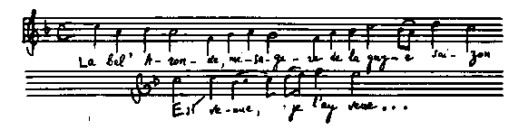

| ジャン・クリストフ 07 第五巻 広場の市 | |
| ロマン ロラン | |
| (2012) | |
ジャン・クリストフ
第五巻 広場の市
ロマン・ローラン
豊島与志雄訳
著者とその影との対話
予 まさしく乗るか反 るかの仕事だね、クリストフ。お前は俺 を全世界と喧嘩 させるつもりだったのか。
クリストフ まあ驚いた様子をするな。最初からお前は、どこへ俺が連れてゆくかを知ってたはずだ。
予 お前はあまり多くのことを非難する。敵を怒 らし、友だちに迷惑をかける。たとえば、いい家庭に何か悪いことが起こっても、そんな噂 はしないのがよい趣味だということを、お前は知らないのか。
クリストフ しかたがないさ。俺には趣味なんかありはしない。
予 それは俺も知っている。お前はヒューロン人みたいだ。粗野な男だ。奴 らはお前を、全世界の敵だとするだろう。すでにお前はドイツで、反ドイツ主義者だとの評判を得ている。フランスでは、反フランス主義者、もしくは――この方がもっと重大だが――反ユダヤ主義者だとの評判を得るだろう。気をつけるがいい。ユダヤ人のことは一言も言うなよ......。
汝
は彼らより恩を受けたれば、その悪口を言わん術
なし......。
クリストフ いいことも悪いことも、考えてることは皆、なぜ言っていけないのだ。
予 お前はとくに悪口を言いたがる。
クリストフ 賛辞はあとから来るんだ。キリスト教徒によりもユダヤ人に、いっそう遠慮をしなければならないという法があるものか。彼らに俺が十分のことをしてやるとすれば、それは彼らにそれだけの値打ちがあるからだ。俺は彼らに名誉の地位を与えてやらなければならない。なぜなら彼らは、わが西欧の先頭に立ってそれを占めたからだ。西欧では今光が消えかかり、彼らのある者はわが文明を滅ぼそうとしかけている。しかし俺は彼らのうちに、われわれの思想行為の宝の一つたるべき者らがあることを、知らないではない。この民族のうちには、まだ偉大なものがあることを、俺は知っている。彼らの多くがもっている、献身の力、傲慢 なる冷静、最善にたいする愛と欲求、不撓 の精力、世に隠れたる執拗 な労苦、それらをことごとく俺は知っている。彼らのうちに一つの神があることを、俺は知っている。それゆえに俺は、その神を否定した奴らを、堕落的な成功と卑しい幸福とのために、彼ら民衆の運動を裏切る奴らを、憎んでいるのだ。そういう奴らを攻撃するのは、奴らに対抗して彼ら民衆の味方をすることになるのだ。腐敗したフランス人どもを攻撃することによって、フランスを保護するのと、ちょうど同じことだ。
予 おい、お前は自分と無関係なことに干渉してるというものだ。スガナレルの細君のことを思い出すがいい。やたらに打たれるようなことばかりしたがったじゃないか。「木と指との間に......。」イスラエルの問題は、われわれに関したことじゃない。そしてフランスの問題の方は、フランスはマルティーヌのようなもので、やりこめられようと平気だ。しかしやりこめられたと人に言われることを許さない。
クリストフ それでも、真実を言ってきかせる必要がある、真実を愛すれば愛するほどなおさらだ。俺でなけりゃ、だれが真実を言う者があるか。――お前も駄目 だ。お前たちは皆、社会的関係、礼儀、配慮、などで相互に束縛されている。ところが俺は、なんらの束縛もないし、お前たちの仲間じゃない。お前たちの徒党のいずれにも属したことはないし、議論のいずれにも加わったことはない。お前たちと合唱しなければならない訳もなければ、お前たちと沈黙を共にしなければならない訳もない。
予 お前は外国人だ。
クリストフ そうだ、ドイツの一音楽家には、お前たちを批判する権利もなければ、お前たちを理解することもできないと、人は言うかもしれない。――よろしい、俺の方が間違ってるとしてみよう。しかし少なくとも、俺とともにお前も知っている外国のある偉い人々が――過去および現在の最も偉い人々が――お前たちのことをどう考えているか、それを俺は言ってやろう。たとい彼らが間違ってるとしても、彼らの思想は知るだけの価値がある。そしてお前たちに役だつかもしれない。いつもやるとおり、万人から賞賛されてると思い込んだり、自賛したり自卑したり――代わる代わるそんなことをするよりも、その方がやはりいいだろう。流行ででもあるように、その時々の発作に駆られて、俺たちは世界最大の民衆だと叫び、――または、ラテン民族の頽廃 は救うべからざるものだと叫び、――あらゆる大思想はフランスから来ると叫び、――または、俺たちはもはやヨーロッパの慰みになるばかりだと叫んで、それがなんの役にたつか。身をかじってる病弊に眼を閉じないこと、民族の生命と名誉とのために戦うという感情から、圧倒されずにかえって激発されること、それが肝要だ。滅亡を欲しないこの民族の身体にはめ込まれてる魂を感じた者は、その悪徳と滑稽 な点とを撲滅せんがため――ことにそれらを利用しそれらによって生きんとする奴らを撲滅せんがために、大胆にそれらを抉発 して構わないのだ、抉発しなければならないのだ。
予 たといフランスを保護せんがためにもせよ、フランスに手を触るるな。お前は善良な人々の心を乱すだろう。
クリストフ 善良な人々――と言えばまあそうだ――人が万事をごく結構だと思わないのを、多くの悲しい醜い事柄を人から示されるのを、苦に病んでいる善良な人々！ 彼ら自身こそ利用されているのだ。しかしそうだとは認めたくないのだ。他人のうちに悪を見て取るのが非常に心苦しいものだから、むしろみずから悪の犠牲となる方を好んでいる。少なくとも日に一度は、人からくりかえし説いてもらいたがっている、この最良の国民中ではすべてがいい方に向かっていると、また、
「......おうフランスよ、汝は永
く最上なるべし......」
と。それを聞くと善良な人々は安心して、また眠りにつく――そして他の奴らは、また勝手なことをやりだすのだ。......善良なみごとな人々だ！ 俺は彼らに心配をかけた。これからもなおさら心配をかけるだろう。彼らに許しを願っておく。......しかしながら、圧制者らに対抗して助けてもらうことを、彼らがたとい欲しないまでも、せめてこれだけは彼らに考えてほしい、彼らと同じように圧制されながら、彼らのような忍従と幻想の力とをもたない者が――またその忍従と幻想の力とによってかえって圧制者らの手に渡されてる者が、いくらもあるということを。そういう人々はいかに苦しんでいることだろう！ お前も考えてみるがいい。いかにわれわれは苦しんだか！ そしてまた、ますます重苦しい空気が、腐敗した芸術が、不道徳な卑しい政治が、満足の笑 みを浮かべて虚無の息吹 きに身を任せる柔懦 な思想が、日に日に積もってゆくのを見て、われわれとともにいかに多くの者が苦しんだか......。われわれはたがいに寄り添い、呼吸もできないほど苦しみながら、そういう中にじっとしていたのだ......。ああ、幾何 の辛い年月をいっしょに過ごしてきたことだろう！ わが権力者らは、彼らの下にわれわれの青春がもだえた苦悩を、夢にも知らないのだ......。われわれは抵抗した。われわれはみずから身を救った......。そして、今、われわれは他人を救わないでいいだろうか。こんどは他人が同じ苦しみのうちに陥ってるのを、手を差し出してもやらずに放 っておいていいだろうか。否、彼らの運命とわれわれの運命とは結び合わされている。われわれの仲間はフランスにたくさんいる。彼らは俺が声高く説くところのことを考えてくれる。俺は彼らのために説くつもりなのだ。やがて俺は彼らのことを口にするだろう。俺は早く示してやりたい、真のフランスを、圧制されたるフランスを、深きフランスを――ユダヤ人、キリスト教徒、あらゆる信仰と血統とを超越した自由な魂を。――しかしながら、そこに達するためには、家の扉 を番してる奴らの間に一条の血路を、まず開かなければならない。無気力の状態から奮いたってついに牢獄 の壁を覆 すことを、この美しい捕虜 にできさしてやりたい！ 彼はおのれの力をも敵の凡庸 さをも知らないのだ。
予 お前の言うところはもっともだ。しかしお前が何をしようとも、憎むことだけは控えるがいい。
クリストフ 俺はなんらの憎悪 をもいだいてはしない。最も悪い奴らのことを考える時でさえ、奴らもやはり人間であって、われわれと同じく苦しんでおり、いつかは死んでゆくのだということを、俺はよく知っている。しかし奴らと闘 わなければならないのだ。
予 闘うことは、それがたとい善をなさんがためのものにせよ、悪をなすことなのだ。生きた一人の人間にでも苦痛を与えることがあるならば、その苦痛は、「芸術」――もしくは「人類」、などという美 わしい偶像になさんとする善によって、償い得るものだろうか？
クリストフ お前がそういうふうに考えるならば、芸術を見捨てるがいい、そして俺をも見捨てるがいい。
予 いや、俺を見放すな。お前がいなかったら、俺はどうなるだろう？――しかし、平和はいつ来るのか。
クリストフ 獲得された時に来る。じきだ......じきだ......。頭の上をもう春の燕 が飛んでるのを、ながめてみろ。

（よろこびの季節告ぐる美わし燕
来るを吾
見ぬ。）
クリストフ 夢想にふけるな。手を引いてやるから、来るがいい。
予 やむをえない、お前についてゆこう、俺の影よ。
クリストフ 俺たち二人のうちで、どちらが影なんだ？
予 お前はほんとうに大きくなった。見違えるくらいだ。
クリストフ 太陽 が傾いてきた。
予 俺はお前の子どもの時の方が好きだった。
クリストフ 行こう！ もう昼間は数時間しかない。
一九〇八年三月
ロマン・ローラン
一
秩序のうちの混乱。だらしのないぞんざいな鉄道駅員。規則に服従しながら規則に抗言する乗客。――クリストフはフランスにはいった。
税関吏の好奇心を満足さした後、彼はパリー行きの列車に乗った。夜の闇
は雨に濡
れた野を覆
うていた。駅々の荒い燈火は、闇に埋もれてる涯
しない平野の寂しさを、さらに侘
びしくてらし出していた。行き違う列車はますます数多くなって、その汽笛で空気をつんざき、うとうとしてる乗客の眠りを覚
まさした。もうパリーに近づいていた。
到着する一時間も前から、クリストフは降りる用意をしていた。帽子を眼深
に被
った。パリーにはたくさんいると聞いていた盗人を気づかって、首のところまで服のボタンをかけた。幾度も立ったりすわったりした。網棚
と腰掛とに幾度もかばんを置き代えた。そのたびごとにいつもの無器用さから、隣席の客にぶつかってはその機嫌
を損じていた。
停車場へはいりかけたとたんに、汽車は突然闇の中に止まった。クリストフは窓ガラスに顔を押しつけて、外を見ようとしたが何も見えなかった。彼は同乗客の方をふり向いて、話をしかけてもよさそうな、今どこだかということを尋ねてもよさそうな、眼つきを一つ捜し求めた。しかし彼らは不機嫌な退屈そうな様子で、うとうとしているか、あるいはそういうふうを装
っていた。停車の理由を知ろうと身動きする者もいなかった。クリストフはその不活発さに驚いた。それらの倣岸
冷静な人々は、彼が想像していたフランス人とは非常に違っていた。彼は汽車の揺れるたびによろめきながら、ついにがっかりしてかばんの上に腰をおろした。そしてこんどは自分がうとうとしていると、車室の扉
が開く音に眼を覚ました......。パリーだ！......。隣席の人々は降りかけていた。
彼は人込みに押したり押されたりしながら、また、荷物をもとうと進み出る赤帽をしりぞけながら、出口の方へ進んでいった。田舎
者のように疑い深くなっていて、自分の品を盗もうとしてる者ばかりのように考えられた。たいせつなかばんを肩にかついで、小言
をくっても平気で人込みを押し分けながら、ずんずん歩いていった。そしてついに、パリーのねばねばした舗石路の上に出た。
彼は自分の荷物のことや、これから選定する住居のことや、馬車の混雑の中に巻き込まれたことなどに、あまり気を取られていたから、何も見ようとは考えなかった。まず第一の仕事は、室を捜すことだった。旅館は不足していなかった。停車場の四方に立ち並んで、その名前がガス文字になって輝いていた。クリストフはなるべく光の薄いのを捜した。しかしどれも、彼の財布に適するほど下等ではなさそうだった。ついに彼はある横丁で、一階が飲食店になってる汚
ない宿屋を見つけた。文明館
という名だった。チョッキだけのでっぷりした男が、一つのテーブルでパイプを吹かしていた。クリストフがはいって来るのを見ると、その男は駆け寄ってきた。彼はクリストフの下手
な言葉が少しもわからなかった。しかし一目見て、頓馬
な世慣れないドイツ人だと判断した。クリストフは彼に荷物を渡すのを拒んで、まるでなっていない言葉で意味を伝えようとしていた。彼はクリストフを案内して、臭い階段を通り、中庭に面してる風通しの悪い室へ通した。外の響きが達しない静かな室であることを自慢して、高い宿料を要求した。クリストフは、向こうの言うことがよくわからなかったし、パリーの生活状態を知らなかったし、肩は荷物で砕けそうになっていたので、すべてを承諾した。早く一人になりたかった。しかし一人になるや否や、物品の汚なさにびっくりした。そして、心に湧
き上がってくる悲しみにふけらないため、にちゃにちゃする埃
だらけの水に頭をひたしてから、急いで外に出かけた。嫌
な気持からのがれるために、何にも見も感じもすまいとつとめた。
彼は街路へ降りた。十月の霧は濃く冷やかだった。霧の中には、郊外の諸工場の悪臭と都会の重々しい息とが混和してる、パリーの嫌な匂
いがこもっていた。十歩先はもう見えなかった。ガス燈の光は、消えかかった蠟燭
の火のように震えていた。薄暗い中を群集が、ごたごたこみ合って動いていた。馬車が行き違いぶつかり合って、堤防のように通路をふさぎ交通をせき止めていた。馬は凍った泥
の上を滑
っていた。御者のののしる声、らっぱの響き、電車の鉦
の音が、耳を聾
するばかりの喧騒
をなしていた。その音響、その動乱、その臭気に、クリストフはつかみ取られた。彼はちょっと立ち止まったが、すぐに、あとから来る人々に押され、流れに運ばれていった。ストラスブール大通りを下りながら、何にも眼にはいらず、へまに通行人へぶつかってばかりいた。彼は朝から物を食べていなかった。一歩ごとに珈琲店
へ出会ったが、中に立て込んでる群集を見ては、気後
れがし嫌な心地になった。彼は巡査に尋ねかけた。しかし言葉を考え出すのにぐずぐずしていたので、巡査は終わりまで聞いてもくれずに、話の中途で肩をそびやかしながら向こうを向いた。クリストフは機械的に歩きつづけた。ある店先に人だかりがしていた。彼も機械的に同じく立ち止まった。それは写真や絵葉書の店だった。シャツ一枚のやまたはシャツもつけない女どもの姿が出ていた。絵入新聞には猥褻
な冗談が並んでいた。子どもや若い婦人らが平気でそれをながめていた。赤毛の瘦
せた娘が、クリストフが見入っているのを見て、いろいろ申し込んできた。彼は意味がわからなくて彼女をながめた。彼女は愚かな微笑を見せて彼の腕を取った。彼は真赤
に憤って、彼女を振り離して遠ざかった。酒亭
がつづいていた。その入口には、奇怪な道化
の広告が並んでいた。群集はますます立て込んできた。不徳そうな顔つき、いかがわしい漫歩者、卑しい賤民
、白粉
をぬりたてた嫌
な匂いの女、などがあまり多いのにクリストフは驚いた。彼はぞっとした。疲労や無気力や恐ろしい嫌悪
に、ますますしめつけられて、眩暈
がしてきた。彼は歯をくいしばって足を早めた。セーヌ河に近づくに従って、霧はさらに濃くなってきた。馬車は抜け出せないほど輻輳
してきた。一頭の馬が滑って横に倒れた。御者はそれを立たせようとやたらに鞭
打った。不幸な動物は、革紐
にしめつけられて振るいたったが、痛ましくもまた下に倒れて、死んだようにじっと横たわった。このありふれた光景もクリストフにとっては、もうたまらなくなる最後の打撃だった。無関心な衆目環視の中におけるこの惨
めな動物の痙攣
は、それら無数の人々の間にある自分自身のむなしさを、非常な苦しさで彼に感じさせたので、――また、家畜の群れのごときその群集にたいして、その汚れたる雰囲気
にたいして、その悪
むべき精神状態にたいして、彼が一時間以来押えようとつとめていた嫌悪の情が、非常な激しさで破裂してきたので、彼は息がつけなくなった。彼は歔欷
の発作に襲われた。通行人らは、悲しみに顔をひきつらしてるこの大きな青年を、驚いてながめていった。彼は涙が頰
に流れても、拭
おうともせずに歩きつづけた。人々はちょっと立ち止まって彼を見送った。彼がもし、敵意あるように思われるその群集の魂の中を、読み取ることができるのであったら、一つの親しい同情の念を――パリー人特有の皮肉が多少交ってはいたろうけれど――ある人々のうちにおそらく見出し得たであろう。しかし彼はもう何にも見ていなかった。涙のために眼がくらんでいた。
彼はある広場の大きな泉のそばに出た。彼はその中に手をつけ顔を浸した。一人の新聞売りの小僧が嘲弄
的ではあるが悪意はない気持で、彼の仕業
を不思議そうにながめていた。そしてクリストフが落としてる帽子を拾ってくれた。水の凍るような冷たさに、クリストフはまた元気を得た。彼の気分は直った。彼は何にも見ないようにして足を返した。もう食べることも考えてはいなかった。だれにも話しかけることができないほどだった。ちょっとしたことにもまた涙が流れそうだった。彼は疲れはてていた。道を間違えて、やたらに歩き回り、ほんとに迷ってしまったと思ってるとたんに、宿屋の前へ出た。――彼は宿屋の町名まで忘れてしまっていた。
彼は自分の汚ない住居へもどった。一日食事をしなかったので、眼は燃えるようになり、心も身体も弱りきっていて、室の隅
の椅子
にがっくりと腰をおろした。二時間もそのままで身動きができなかった。ついに自失の状態からむりに身をもぎ離して、床についた。熱っぽい無感覚のうちに落ちて、幾時間も眠ったような気がしながらたえず眼を覚ました。室は息苦しかった。彼は足先から頭まで焼けるようだった。恐ろしく喉
が渇
いていた。馬鹿
げた悪夢にとらえられて、眼を開いてる時でもそれにつきまとわれた。鋭い悩みがナイフで刺されるように身にしみた。真夜中に眼を覚まし、残忍な絶望の念に襲われて、喚
きたてようとした。その声を人に聞かれないようにと、夜具を口にいっぱい押し込んだ。狂人になるかと思われた。彼は寝床にすわって燈火をつけた。ぐっしょり汗をかいていた。彼は立ち上がって、かばんを開き、ハンカチを捜した。手は古い聖書
にさわった。母がシャツの間に隠しておいてくれたものである。クリストフはこの書物をあまり読んだことがなかった。しかしただいまそれを見出して、なんとも言えない嬉
しさを感じた。この聖書は祖父のものであり、また曾祖父
のものでもあった。家長たちがそれぞれ、最後の一枚の白紙へ、自分の名前と、生涯
の重要な日付、誕生や結婚や死亡などを、書き込んでいた。祖父は鉛筆の大きな字体で、各章を読んだり読み返したりした日付を、書き入れていた。黄ばんだ紙片がいっぱい插
んであって、それには老人の質朴
な感想がしるされていた。この聖書は祖父の寝台の上の方に、棚
に乗せられていた。祖父は長く眠れない時しばしばそれを取って、読むというよりはむしろ話し合っていた。それは曾祖父の友でもあったが、また同じく、祖父の終生の伴侶
でもあった。一家の悲喜哀楽の一世紀が、それから立ちのぼっていた。クリストフは今この書物といっしょにいると、いくらか孤独の感が薄らいだ。
彼は最も痛ましいところを開いた。
それ人の世に在るは、絶えざる戦闘
に在るがごとくならずや。またその日々は、傭人
の日々のごとくならずや。......
我臥
せばすなわち言う、何時
我起きいでんかと。起きぬれば夕を待ちかねつ。夜まで苦しき思いに満てり。......
わが牀
は我を慰め、休息
はわが愁
いを和らげんと、我思いおる時に、汝は夢をもて我を驚かし、異象
をもて我を懼
れしめたまう。......
何時
まで汝我を容
したまわざるや。息をする間だに与えたまわざるや。我罪を犯したるか。我汝に何をなしたるか、おお人を護
らせたまう者よ。......
すべては同じきに帰す。神は善と悪とを共に苦しめたまう。......
よしや我彼が御手に殺さるるとも、我はなお、彼に希
みをかけざるを得ざるなり。......
かかる無限の悲しみが不幸な者にたいしてなす恵みを、卑俗な心の人々は理解することができない。すべて偉大なるものは善良である。悲しみもその極度に達すれば、救済に到達する。人の魂を挫
き悩まし根柢から破壊するものは、凡庸
なる悲しみや喜びである。失われた快楽に別れを告げる力もなく、あらゆる卑劣な行ないをして新たな快楽を求めんとひそかにたくらむ、利己的な浅薄な苦しみである。クリストフは古い書物から立ちのぼる苛辣
な息吹
きに、元気づけられた。シナイの風が、寂寞
たる曠野
と力強い海との風が、瘴癘
の気を吹き払った。クリストフの熱はとれた。彼はずっと安らかにふたたび床について、翌日まで一息に眠った。眼を覚ました時には、もう昼になっていた。室の醜さがさらにはっきり眼についた。自分の惨めさと孤独さとが感ぜられた。しかし彼はそれらをまともにながめやった。落胆は消えていた。もう男らしい憂鬱
が残ってるのみだった。彼はヨブの言葉をくり返した。
よしや我神の御手に殺さるるとも
、我はなお
、神に
希
みをかけざるを得ざるなり
。......
彼は立ち上がった。そして泰然と戦闘を開始した。
彼はすぐその朝から、奔走
を始めようと決心した。パリーにはただ二人の知人があるばかりだった。二人とも同国の青年だった。一人は旧友のオットー・ディーネルで、マイー町でラシャ商をしてる叔父
の下に働いていた。一人はシルヴァン・コーンというマインツの若いユダヤ人で、ある大書店に雇われてるはずだった。しかし書店の所在地は不明だった。
彼は十四、五歳のころ、ディーネルとたいへん親しかった（第二巻朝参照）。恋愛に先立つものでしかも恋愛をすでに含んでいる幼き友情を、彼はディーネルにたいしていだいていた。ディーネルもまた彼を愛していた。この内気で几帳面
な大子供は、クリストフの狂暴な独立不羈
の精神に魅せられてしまって、滑稽
なやり方でそれをまねようとつとめていた。クリストフはそれにいらだちもし得意でもあった。そのころ彼らは、驚天動地の計画をたてていた。その後ディーネルは、商業教育を受けるために旅行をした。それきり二人は再会もしなかった。しかしクリストフは、ディーネルが几帳面に交際をつづけてる土地の人々から、彼の消息を時々聞き知っていた。
シルヴァン・コーンとクリストフとの間は、まったく違った関係だった。二人は悪戯
盛りのころから、小学校で知り合った。子猿
みたいなコーンはクリストフに悪戯をしかけた。クリストフはその穽
にかかったのを知ると、ひどい返報をしてやった。コーンは抵抗しなかった。ころがされるままになって、顔を塵
の中にこすりつけながら泣きまねをした。しかし彼はそのあとでまたすぐに、飽きもせずに意地悪をやりだすのだった――ある日、殺してしまうぞとクリストフから本気におどかされて、恐ろしくなってしまうまで。
さてクリストフは、早くに旅館から出かけた。途中で珈琲店
に立ち寄って朝食をした。彼はその自尊心にもかかわらず、フランス語を話す機会を少しも失うまいと心がけた。おそらく幾年もパリーで生活しなければなるまいから、できるだけ早くその生活状態に順応して、嫌悪
の情を克服しなければならなかったのである。それで彼は、彼のめちゃな言葉を聞いて給仕
が嘲笑
的な様子をしたのを、ひどく気に病みながらも、強
いて平気でいようとつとめた。そして元気を失わないで、なっていない文句を重々しく組み立てて、向こうにわかるまで執拗
にくり返した。
彼はディーネルを捜し始めた。例によって彼は、頭に一つの考えがあると、周囲のことは何一つ眼に止まらなかった。初めて歩き回ってみると、パリーは古い乱雑な町であるという印象をしか得なかった。彼は元来、一つの新しい力の驕慢
が漂っているのが感ぜられる、ごく古いとともにごく若いドイツ新帝国の町々に慣れていた。そして今パリーから、不快な驚きを得た。横っ腹に穴のあいてる街路、泥
だらけの通路、押し合ってる人混
み、入り乱れてる車――あらゆる形の乗り物があって、古い乗合馬車、蒸汽車、電車、その他各種の機関の車――歩道の上の露店、フロックコートをつけた人がいっぱい立ち並んでる広場には、いろんな木馬館（木馬というよりもむしろ、怪物であり化物であった）。普通選挙の恩恵に浴しながらも、古い賤民
的な素質を脱しきらないでいる、中世都市の遺物かと思われた。前日からの霧は、じめじめした細雨に変わっていた、もう十時過ぎなのに、多くの店にはまだガス燈がついていた。
クリストフはヴィクトアール広場に接している街路の網目に迷い込んだ後、ようやくバンク街の店を尋ねあてた。中にはいりながら彼は、長い薄暗い店の奥に、多くの店員に交って大梱
を並べてるディーネルの姿を、見かけたように思った。しかし少し近眼だったので、めったに誤ることのない直覚力をそなえてはいたが、視力には自信がなかった。迎え出た店員に名前を告げると、奥の人々の間にちょっとざわめきが起こった。何かひそかに相談し合った後、一人の若い男がその群れから出て来て、ドイツ語で言った。
「ディーネルさんはお出かけになっています。」
「出かけましたって？ なかなか帰りませんか。」
「ええ、たぶん。出かけられたばかりですから。」
クリストフはちょっと考えた。それから言った。
「構いません。待ちましょう。」
店員はびっくりして、急いでつけ加えた。
「二、三時間たたなければお帰りになりますまい。」
「なに、それくらいなんでもありません。」とクリストフは平然と答えた。「私はパリーでなんの用もありません。場合によっては一日待っていても平気です。」
若い店員はそれを冗談だと思って茫然
と彼をながめた。しかしクリストフはもうその男のことなんか考えていなかった。往来の方に背を向けて悠々
と片隅
にすわった。そこに腰を落ち着けてしまうつもりらしかった。
店員は店の奥にもどっていって、仲間の者らと耳打ちをした。彼らはおかしな狼狽
の様子で、この邪魔者を追い払う方法を講じた。
不安な数分が過ぎてから、店の中扉
が開いた。ディーネル氏が現われた。大きな赤ら顔で、頰
と頤
とに紫色の傷痕
があり、赤い口髭
を生
やし、髪を平らになでつけて横の方で分け、金の鼻眼鏡
をかけ、シャツの胸には金ボタンをつけ、太い指に指輪をはめていた。帽子と雨傘
とを手にしていた。彼は何気ない様子でクリストフの方へやっていった。クリストフは椅子
の上にぼんやりしていたが、驚いて飛び上がった。彼はディーネルの両手を取り、大仰
な親しさで叫びだした。店員らは忍び笑いをし、ディーネルは顔を赤らめた。この堂々たる人物が、クリストフと昔の関係をふたたびつづけたくないと思ったのには、種々の理由があった。彼は最初から威圧的な態度をしてクリストフを親しませないつもりだった。しかしクリストフの眼つきを見るや否や、その面前では自分がふたたび小さな少年になったような気がした。それが腹だたしくもあり恥ずかしくもあった。彼は急いで口早に言った。
「私の室に来ませんか。......その方がよく話しができていいでしょう。」
クリストフはそういう言葉のうちに、ディーネルの例の用心深さをまた見出した。
しかし、その室にはいって扉
を注意深く閉
め切っても、ディーネルはなかなか彼に椅子
をすすめようともしなかった。彼はつっ立ったまま、へまに重々しく弁解しだした。
「たいへん愉快です......私は出かけるところでした......皆はもう私が出かけたことと思って......だが出かけなければならないんです......ちょっとしか隙
がありません......さし迫った面会の約束があるので......。」
クリストフは、店員が先刻噓
をついたことを悟り、その噓は自分を追い払うためにディーネルとも相談されたものであることを悟った。かっと血が頭に上った。しかし我慢をして冷やかに言った。
「何も急がなくたっていいよ。」
ディーネルは身体をぎくりとさした。そういう無遠慮が癪
にさわったのだった。
「なに、急がなくってもいいって！」と彼は言った。「用があるのに......。」
クリストフは相手をまともにながめた。
「なあに。」
大きな青年は眼を伏せた。彼はクリストフにたいして自分がいかにも卑怯
だという気がしたので、クリストフを憎んだ。そして不機嫌
そうにつぶやきだした。クリストフはそれをさえぎった。
「こうなんだ、」と彼は言った、「君も知ってるだろう......。」
（この君
というような言葉使いにディーネルは気を悪くしていた。彼は最初の一言から、クリストフとの間にあなた
という垣根
をこしらえようと、いたずらに努力していた。）
「僕がこちらへやって来た訳を。」
「ええ、知っている。」とディーネルは言った。
（クリストフの逃亡とその追跡とを、彼は通信によって知っていた。）
「それでは、」とクリストフは言った、「僕が遊びに来たのでないことも知ってるだろう。僕は逃げなきゃならなかったんだ。ところが今無一物なんだ。生活しなくちゃならないんだ。」
ディーネルは要求を待っていた。そしてその要求を、満足と困却との交った気持で聞いた――（なぜなら、クリストフにたいする優越感を得られるので満足だったが、その優越感を思うまま相手に感じさせかねたので困却した。）
「ああ、それは困ったな、」と彼はもったいぶって言った、「実に困った。こちらでは生活が容易じゃない。万事高い。僕のところでも何かと入費が多い。そしてあの店員全部が......。」
クリストフは軽蔑
の様子でそれをさえぎった。
「僕は君に金銭を求めやしないよ。」
ディーネルは狼狽
した。クリストフはつづけて言った。
「景気はどうだい？ 得意があるかね。」
「ああ、ああ、悪くはない、おかげさまで......。」とディーネルは用心深く言った。（彼は半信半疑だった。）
クリストフは激しい眼つきを注いで、言い進んだ。
「君はドイツの移住者をたくさん知ってるかい？」
「ああ。」
「では、僕のことを吹聴
してくれたまえ。皆音楽は好きなはずだ。子供があるだろう。僕は稽古
をしてやるつもりだ。」
ディーネルは当惑の様子をした。
「何かあるのかい。」とクリストフは言った。「そんなことをするくらいには十分僕に音楽の心得があることを、君は疑ってでもいるのかい。」
彼はあたかも自分の方で世話してやるかのような調子で、世話を求めてるのだった。ディーネルは、向こうに恩を感じさせる喜びのためにしか何かをしてやりたくなかったので、もう彼のためには指一本も動かしてやるものかと思っていた。
「君はそれには十分すぎるほど音楽を心得てはいるが......ただ......。」
「なんだい？」
「それはむずかしいよ、たいへん困難だよ、ねえ、君の境遇では。」
「僕の境遇？」
「そうだ......つまりあの事件が、あの表沙汰
が......もしあれが知れ渡ると......僕にはどうも困難だ。いろいろ掛り合いを受けることになるかもしれない。」
彼はクリストフの顔が怒りにゆがんでくるのを見て言いやめた。そして急いで言い添えた。
「僕のことじゃない......僕は恐れはしない......。ああ、僕一人だけだったら！......叔父
がいるのでね......君も知ってるとおり、この家は叔父のものなんだ。叔父に言わなけりゃ僕には何にもできない......。」
彼はクリストフの顔つきと今にも破裂しそうなその様子とにますます脅かされて、あわてて言いだした――（彼は根は悪い男ではなかった。吝嗇
と見栄とが彼のうちで争っていた。クリストフに恵んでやりたくはあったが、なるべく安価に済ましたかった。）
「五十フランばかりでどうだい。」
クリストフは真赤
になった。恐ろしい様子でディーネルの方へ歩み寄った。ディーネルは急いで扉
のところまでさがり、それを開いて、人を呼ぼうとした。しかしクリストフは、充血した顔を彼にさしつけただけで我慢した。
「豚め！」と彼は鳴り響く声で言った。
彼はディーネルを押しのけ、店員らの間を通って、外に出た。敷居のところで、嫌悪
の唾
をかっと吐いた。
彼は街路を大跨
に歩いていった。怒りに酔っていた。その酔いも雨に覚
まされた。どこへ行くのか？ それを彼は知らなかった。知人は一人もなかった。考えようと思って、ある書店の前に立ち止まった。そして棚
の書物を、見るともなくながめた。ある書物の表紙に、出版屋の名前を見てはっとした。なぜだかみずからいぶかった。やがて彼は、シルヴァン・コーンの雇われてる書店の名であることを思い出した。彼は所番地を書き取った。......しかしそれが何になろう？ もとより尋ねてなんか行くものか......。なぜって？......友人だったあのディーネルの奴
でさえ、ああいう待遇をしたところを見ると、昔さんざんいじめられて憎んでるに違いない此奴
から、何が期待されよう？ 無駄
に屈辱を受けるばかりではないか。彼の血潮は反発していた。――しかしながら、おそらくキリスト教教育から来たらしい、先天的悲観主義の気質のために、彼は人間の賤
しさをどん底まで感じてみようとした。「俺
は遠慮する必要はない。くたばるまではなんでもやってみなけりゃいけない。」
一つの声が彼のうちで言い添えた。
「そして、くたばるものか。」
彼はふたたび所番地を確かめた。そしてコーンのところへやって行った。少しでも横柄
な態度に出たら、すぐにその顔を張りつけてやる決心だった。
書店はマドレーヌ町にあった。クリストフは二階の客間に上がって、シルヴァン・コーンを尋ねた。給仕が、「知らない」と答えた。クリストフはびっくりして発音が悪かったのだと思い、問いをくり返した。しかし給仕は、注意深く耳を傾けた後、家にそんな名前の者はいないと断言した。クリストフは面くらって、詫
びを言い、出かけようとした。その時廊下の奥の扉
が開
いた。見ると、コーンが一人の婦人を送り出していた。ちょうど彼はディーネルから侮蔑
を受けたばかりのところだったので、皆が自分を馬鹿にしているのだと思いがちだった。それで、コーンは自分が来るのを見て、いないと言えと給仕に言いつけたのだと、彼は真先
に考えた。そんな浅はかなやり方に、堪えられなかった。そして憤然と帰りかけた。すると呼ばれてる声が耳にはいった。コーンは鋭い眼つきで、遠くから彼を認めたのだった。そして唇
に笑いをたたえ、両手を広げ、大袈裟
な喜びをありったけ示して、駆け寄ってきた。
シルヴァン・コーンは、背の低い太った男で、アメリカ風にすっかり髭
を剃
り、赤すぎる顔色、黒すぎる髪、広い厚ぼったい顔つき、脂
ぎった顔だち、皺
寄った穿鑿
的な小さい眼、少しゆがんだ口、重々しい意地悪げな微笑をもっていた。華奢
な服装をして、身体の欠点を、高い肩や大きい臀
を、隠そうとつとめていた。そういう欠点こそ、彼の自尊心をなやます唯一のものだった。身長がもう二、三寸も伸びて身体つきがよくなることなら、後ろから足蹴
にされてもいとわなかったろう。その他の事においては、彼は自分自身にしごく満足していた。自分に敵
う者はないと思っていた。実際すてきな男だった。ドイツ生まれの小さなユダヤ人でありながら、のろまな太っちょでありながら、パリーの優雅な風俗の記者となり絶対批判者となっていた。社交界のつまらない噂種
を、複雑な巧妙をきわめた筆致で書いていた。フランスの美文体、フランスの優美、フランスの嬌艶
、フランスの精神――摂政時代の風俗、赤踵
の靴
、ローザン式の人物――などの花形だった。彼は人から冷やかされていたが、それも成功の妨げにはならなかった。パリーでは滑稽
は身の破滅だと言う人々は、少しもパリーを知らない輩
である。身の破滅どころか、かえってそのために生き上がってる者がいる。パリーでは、滑稽によってすべてが得られる、光栄をも幸運をも得られる。シルヴァン・コーンは、そのフランクフルト式な虚飾のために毎日かれこれ言われても、もはやそんなことは平気だった。
彼は重々しい調子と頭のてっぺんから出る声とで口をきいていた。
「やあ、これは驚いた！」と彼は快活に叫びながら、あまり狭い皮膚の中につめこまれてるかと思われる指の短いぎこちない手で、クリストフの手を取って打ち振った。なかなかクリストフを放しそうになかった。最も親しい友人にめぐり会ったような調子だった。クリストフはあっけにとられて、コーンから揶揄
われてるのではないかと疑った。しかしコーンは揶揄ってるのではなかった。なおよく言えば、もし揶揄ってるのだとしてもそれはいつもの伝にすぎなかった。コーンは少しも恨みを含んではいなかった。恨みを含むにはあまりに利口だった。クリストフからいじめられたことなんかは、もう久しい以前に忘れてしまっていた。もし思い出したとしてもほとんど気にしなかったろう。新しい重大な職業を帯びパリー風の華美な様子をしているところを、旧友に見せてやる機会を得て大喜びだった。驚いたと言うのも噓ではなかった。クリストフが訪れて来ようなどとは、最も思いがけないことだった。彼はきわめて炯眼
だったので、クリストフの訪問には一つの利害関係の目的があることを予見してはいたが、それは自分の力にささげられた敬意だという一事だけで、すでに喜んで迎えてやる気になったのである。
「国から来たのかい。お母
さんはどうだい。」と彼は馴
れ馴れしく尋ねた。他の時だったらそれはクリストフの気にさわったかもしれないが、しかし他国の都にいる今では、かえってうれしい感じを与えた。
「だがいったいどうしたんだろう、」とクリストフはまだ多少疑念をいだいて尋ねた、「先刻コーンさんという人はいないという返辞だったが。」
「コーンさんはいないよ。」とシルヴァン・コーンは笑いながら言った。「僕はコーンとはいわないんだ。ハミルトンというんだ。」
彼は言葉を切った。
「ちょっと失敬。」と彼は言った。
彼は通りかかった一人の婦人の方へ行って、握手をして、笑顔
を見せた。それからまたもどって来た。そして、あれは激しい肉感的な小説で有名になった閨秀
作家だと説明した。その近代のサフォーは、胸に紫色の飾りをつけ、種々の模様をちらし、真白に塗りたてた快活な顔の上に、艶
のいい金髪を束ねていた。フランシュ・コンテの訛
りがある男らしい声で、気障
なことを言いたてていた。
コーンはまたクリストフに種々尋ねだした。国の人たちのことを残らず尋ね、だれだれはどうなったかと聞き、すべての人を記憶してることを追従
的に示していた。クリストフはもう反感を忘れてしまっていた。感謝を交えた懇切な態度で答え、コーンにとってはまったく無関係な些細
な事柄をやたらに述べた。コーンはそれをふたたびさえぎった。
「ちょっと失敬。」と彼はまた言った。
そして他の婦人客へ挨拶
に行った。
「ああそれじゃあ、」とクリストフは尋ねた、「フランスには婦人の作家ばかりなのか。」
コーンは笑い出した。そしてしたり顔に言った。
「フランスは女だよ、君。君がもし成功したけりゃ、女を利用するんだね。」
クリストフはその説明に耳を貸さないで、自分だけの話をつづけた。コーンはそれをやめさせるために尋ねた。
「だが、いったいどうして君はこちらへ来たんだい。」
「なるほど、」とクリストフは考えた、「この男は何にも知らないんだな。だからこんなに親切なんだ。知ったらがらりと変わってしまうだろう。」
彼は昂然
と語りだした、自分を最も難境に陥らせるかもしれない事柄を、すなわち、兵士らとの喧嘩
、自分が受けた追跡、国外への逃亡などを。
コーンは腹をかかえて笑った。
「すてきだ」と彼は叫んでいた、「すてきだ！ 実に愉快な話だ！」
彼は熱心にクリストフの手を握りしめた。官憲の鼻をあかしてやったその話を、この上もなく面白がっていた。話の主人公らを知っているだけになお面白がっていた。その滑稽
な方面を眼に見るような気がしていた。
「ところで、」と彼はつづけて言った、「もう午
過ぎだ。つき合ってくれたまえ......いっしょに食事をしよう。」
クリストフはありがたく承知した。彼はこう考えていた。
「これは確かにいい人物だ。俺の思い違いだった。」
二人はいっしょに出かけた。途中でクリストフは思い切って要件をもち出した。
「君にはもう僕の境遇がわかってるだろう。僕は世に知られるまで、さしあたり仕事を、音楽教授の口でも、求めに来たんだが。僕を推薦してくれないかね。」
「いいとも！」とコーンは言った。「望みどおりの人に推薦しよう。こちらで僕はだれでも知っている。なんでもお役にたとう。」
彼は自分のもっている信用を示すのがうれしかった。
クリストフは感謝にくれた。心から大きな重荷が取れた心地がした。
食卓につくと彼は、二日も前から物を食べなかったかのようにむさぼり食った。首のまわりにナフキンを結えつけて、ナイフですぐ食べた。コーンのハミルトンは、そのひどい食い方や田舎
者めいた様子に、ごく不快を感じた。また自慢にしてる事柄をあまり注意してもくれないことに、同じく不満を覚えた。彼は自分の艶福
や幸運の話をして、相手を煙に巻いてやろうとした。しかしそれは無駄
な骨折りだった。クリストフは耳を傾けないで、無遠慮に話をさえぎった。彼は舌がほどけてきて馴
れ馴れしくなっていた。謝恩の念で心がいっぱいになっていた。そして未来の抱負を率直にうち明けながら、コーンを困らした。ことに、テーブルの上から無理にコーンの手を取って、心こめて握りしめたので、コーンをさらにやきもきさした。しまいには、感傷的なことを言い出して、故国にいる人々や父なるライン
のために、ドイツ流の祝杯を挙げたがったので、コーンのいらだちは極度に達した。コーンは彼が今にも歌い出そうとするのを見てたまらなくなった。隣席の人々は二人の方を皮肉そうにながめていた。コーンは急な用務があるという口実を設けて立ち上がった。クリストフはそれにすがりついた。いつ推薦状をもらって、その家へやって行き、稽古
を始めることができるか、それを知りたがった。
「取り計らってあげよう。今日、今晩にでも。」とコーンは約束した。「すぐに話をしてみよう。安心したまえ。」
クリストフは執拗
だった。
「いつわかるだろう？」
「明日
......明日......または明後日。」
「結構だ。明日また来よう。」
「いやいや、」とコーンは急いで言った、「僕の方から知らせよう。君を煩わさないように。」
「なあに、煩すも何もあるものか。そうだろう。それまで僕は、パリーで何にも用はないんだ。」
「おやおや！」とコーンは考えた。そして大声に言い出した。「いや、手紙を上げる方がいい。しばらくは面会ができないかもしれない。宿所を知らしてくれたまえ。」
クリストフは宿所を彼に書き取らした。
「よろしい。明日手紙を上げよう。」
「明日？」
「明日だ。間違いないよ。」
彼はクリストフの握手からのがれて逃げ出した。
「あああ！」と彼は思っていた。「たまらない奴だ。」
彼は店に帰ると、「あのドイツ人」が尋ねて来たら留守にするんだと、給仕に言いつけた。――十分もたつと、もうクリストフのことは忘れてしまった。
クリストフは汚
い巣へもどった。心動かされていた。
「親切な男だ！」と彼は思っていた。「俺は彼にたいして悪いことをしたことがある。だが彼は俺を恨んでもいない！」
そういう悔恨の念が重く心にかかった。昔悪く思ったことが今いかに心苦しいか、昔ひどく当たったことを許してもらいたいと今どんなに思ってるか、コーンへ書き送ろうとした。昔のことを思うと眼に涙が湧
いてきた。しかし彼にとっては、一通の手紙を書くのは、大譜表を書くに劣らないほどの大仕事だった。そして、宿屋のインキやペンを、それは実際ひどいものではあったが、盛んにののしり散らした後、四、五枚の紙を書きなぐり消したくり引き裂いた後、もう我慢ができなくなってすべてを放
り出した。
その日の残りの時間はなかなか過ぎなかった。しかしクリストフは、寝苦しい昨晩と午前中の奔走とにひどく疲れていたので、椅子
にかけたままついにうとうととした。夕方ようやくわれに返って、すぐに寝床についた。そして十二時間ぶっとおしにぐっすり眠った。
翌日八時ごろから、彼は約束の返事を待ち始めた。彼はコーンの几帳面
さを少しも疑わなかった。コーンが店へ出る前にこの宿へ寄るかもしれないと思って、一歩も外に踏み出さなかった。午
ごろになると、室をあけないために、下の飲食店から朝食を取り寄せた。それから、コーンが食事後にやって来るだろうと思って、ふたたび待ってみた。室の中を歩き、腰をおろし、また歩き出し、階段を上ってくる足音が聞こえると、扉
を開いてみたりした。待ち遠しさをまぎらすためにパリーのうちを散歩してみる気も、さらに起こらなかった。彼は寝台の上に横たわった。思いはたえず老母の方へ向いていった。彼女もまたこの時彼のことを思っていたのだ――彼のことを思ってくれるのは彼女だけだったのだ。彼は彼女にたいして、限りない愛情と見捨てた悔恨とを感じた。しかし手紙は出さなかった。どういう地位を見出したか知らせ得るまで待つことにした。二人はたがいに深い愛情をいだいていたにもかかわらず、愛してることだけを単に告げるような手紙を書くことは、どちらも考えていなかったに違いない。手紙というものは、はっきりした事柄を告げるためのものであった。――彼は寝台の上に寝そべり、頭の下に両手を組んで、ぼんやり考え込んだ。室は往来から隔たってはいたけれど、静けさのうちにはパリーのどよめきがこもっていた。家は揺れていた。――また夜となったが、手紙は来なかった。
前日と同じような一日が、また始まった。
三日目になって、クリストフは好んで蟄居
していたのが腹だたしく思えて、外出しようと決心した。しかしパリーには、最初の晩以来、一種の本能的な嫌気
を覚えていた。彼は何にも見たくなかった。なんらの好奇心も起こらなかった。自分の生活にあまり心を奪われていたので、他人の生活を見ても面白くなかった。過去の記念物にも、都会の塔碑にも、心ひかれなかった。それで彼は、一週間以内にはコーンの許
へ行くまいときめていたものの、外へ出るや否や非常に退屈して、まっすぐにコーンのところへ行った。
言いつけられていた給仕は、ハミルトン氏は所用のためパリーから出かけたと告げた。クリストフにとっては一打撃だった。彼は口ごもりながら、いつハミルトン氏は帰るのかと尋ねた。給仕はいい加減に答えた。
「十日ばかりしましたら。」
クリストフは駭然
として家に帰った。その後毎日室に閉じこもった。仕事にかかることができなかった。自分のわずかな所持金――母がていねいにハンカチにくるんでカバンの底に入れて贈ってくれた些少
な金額――が、どんどん減ってゆくのを見て恐ろしくなった。彼は切りつめた生活法を守
った。ただ夕方だけ、夕食をしに階下の飲食店へ降りて行った。そこでは「プロシャ人」とか「漬菜
」とかいう名前で、早くも客の間に知れ渡ってしまった。――彼は非常な努力を払って、フランスの音楽家らへ二、三の手紙を書いた。それも漠然
と名前を知ってるだけだった。十年も前に死んでる人さえあった。彼はそういう人々に、面会を求めた。綴字
はめちゃくちゃだったし、文体はドイツで習慣となってる、長たらしい語位転換と儀式張った形式とで飾られていた。彼は書簡を「フランスのアカデミー院」へ贈った。――ただ一人の者がそれを読んで、友人らと大笑いをした。
一週間後に、クリストフはまた書店へ出かけた。このたびは偶然に助けられた。入口で彼は、出かけようとするシルヴァン・コーンにぶっつかった。コーンはつかまったのを見て顔を渋めた。しかしクリストフはうれしさのあまり、その渋面に気づかなかった。彼は例のうるさい調子で、コーンの両手を取り、嘻々
として尋ねた。
「旅に行ってたそうだね。面白かったかい。」
コーンはうなずいたが、しかしその顔は和らいでいなかった。クリストフは言いつづけた。
「僕が来たのは......わかってるだろう......。話はどうだった？......え、どういうふうだい。僕のことを言ってくれたろうね。返事はどうだった。」
コーンはますます顔を渋めた。クリストフは様子ありげなその態度に驚いた。まるで別人のようだった。
「君のことは話してみたよ。」とコーンは言った。「だがまだ結果はわからない。隙
がなかったんだ。君に会った時から実に忙しかった。用事がたくさん頭につかえているんだ。どうして片付けていいかわからないほどだ。まったくやりきれない。病気にでもなりそうだ。」
「気分がすぐれないのかい。」とクリストフは気づかわしい調子で尋ねた。
コーンは嘲
り気味の一瞥
を注いで答えた。
「まったくいけない。この数日へんてこだ。非常に苦しい気持がする。」
「そりゃたいへんだ！」とクリストフは彼の腕を取りながら言った。「ほんとに用心したまえ。身体を休めなけりゃいけないね。僕まで余計な心配をかけて、実に済まない。そう言ってくれりゃよかったのに。ほんとにどんな気持だい？」
彼が悪い口実をもあまり真面目
に取ってるので、コーンは愉快なおかしさがこみ上げてくるのをつとめて押し隠しながらも、相手の滑稽
な純朴
さに気が折れてしまった。皮肉はユダヤ人らにとって非常に大きな楽しみであって――（この点においては、パリーにおけるキリスト教徒の多くはユダヤ人と同じである）――皮肉を浴びせる機会を与えてさえもらうならば、いかに不快な者にたいしても、また敵にたいしてまでも、とくに寛大な心をいだくようになるのである。そのうえコーンはまた、自分一身のことをクリストフが心配してくれるのを、感動せずにはいられなかった。彼は世話をしてやりたい気持になった。
「ちょっと思いついたことがあるんだがね。」と彼は言った。「稽古
の口があるまで、楽譜出版の方の仕事をしないかね。」
クリストフは即座に承知した。
「いいことがある。」とコーンは言った。「ある大きな楽譜出版屋の重立った一人で、ダニエル・ヘヒトという男と、僕は懇意にしてる。それに紹介しよう。何か仕事があるだろう。僕は君の知るとおり、その方面のことは何にもわからない。しかしあの男はほんとうの音楽家だ。君なら訳なく話がまとまるだろう。」
二人は翌日の会合を約した。コーンはクリストフに恩をきせて追っ払ったので、悪い気持はしなかった。
翌日、クリストフはコーンの店へ誘いに来た。彼はコーンの勧めによって、ヘヒトへ見せるために自分の作曲を少しもって来た。二人はヘヒトを、オペラ座近くの楽譜店に見出した。二人がはいって来るのを見ても、ヘヒトは傲然
と構えていた。コーンの握手へは冷やかに指先を二本差し出し、クリストフの儀式張った挨拶
へは答えもしなかった。そしてコーンの求めによって、二人を従えて隣りの室へはいった。二人にすわれとも言わなかった。火のない暖炉にもたれて壁を見つめたままつっ立っていた。
ダニエル・ヘヒトは、四十年配の背の高い冷静な男で、きちんと服装を整え、いちじるしくフェーニキア人の特長を有し、怜悧
で不愉快な様子、渋めた顔つき、黒い毛、アッシリアの王様みたいな長い角張った頤髯
をもっていた。ほとんど真正面に人を見ず、冷やかなぶしつけな話し方をして、挨拶
までが侮辱の言のように響いた。でもその横柄
さはむしろ外面的のものだった。もちろんそれは、彼の性格のうちにある軽蔑
的なものと相応じてはいたが、しかしなおいっそう、彼のうちの自動的な虚飾的なものから来るのであった。こういう種類のユダヤ人は珍しくない。そして世間では彼らのことをあまりよく言わない。彼らのひどい剛直さは、身体と魂との不治の頓馬
さ加減に由来することが多いけれども、世間ではそれを傲慢
の故
だとしている。
シルヴァン・コーンは、気障
な饒舌
の調子で大袈裟
にほめたてながら、世話をしようというクリストフを紹介し始めた。クリストフは冷やかな待遇に度を失って、帽子と原稿とを手にしながら身を揺っていた。コーンの言葉が終わると、それまでクリストフの存在を気にもかけないでいたようなヘヒトは、軽蔑
的にクリストフの方へ顔を向け、しかもその顔をながめもしないで言った。
「クラフト......クリストフ・クラフト......私はそんな名前をまだ聞いたことがない。」
クリストフは胸のまん中を拳固
でなぐられたようにその言葉を聞いた。顔が赤くなってきた。彼は憤然と答えた。
「やがてあなたの耳へもはいるようになるでしょう。」
ヘヒトは眉根
一つ動かさなかった。あたかもクリストフがそこにいないかのように、泰然と言いつづけた。
「クラフト......いや、私は知らない。」
自分に知られていないのはくだらない証拠だと考える者が、世にあるが、彼もそういう人物だった。
彼はドイツ語でつづけて言った。
「そしてあなたはライン生まれですね。......音楽に関係する者があちらに多いのには、実に驚くほどです。自分は音楽家だと思っていない者は、一人もないと言ってもいい。」
彼は冗談を言うつもりであって、悪口を言うつもりではなかった。しかしクリストフは曲解した。彼は答え返そうとした。しかしコーンが先に口を出した。
「ですけれど、」と彼はヘヒトへ言った、「私だけは音楽を少しも知らないことを、認めていただきたいものですね。」
「それはあなたの名誉ですよ。」とヘヒトは答えた。
「音楽家でないことをあなたが喜ばれるなら、」とクリストフは冷やかに言った、「残念ですが私はもう用はありません。」
ヘヒトはやはり横を向きながら、同じ無関心な調子で言った。
「あなたは音楽を書いたことがあるそうですね。何を書きましたか。もとより歌曲
でしょう？」
「歌曲
と、二つの交響曲
と、交響詩や、四重奏曲や、ピアノの組曲や、舞台音楽などです。」とクリストフはむきになって言った。
「ドイツではたくさん書くものですね。」とヘヒトは軽蔑
的なていねいさで言った。
この新来の男が、そんなにたくさんの作品を書いていて、しかも自分ダニエル・ヘヒトがそれを知らないだけに、彼はなおいっそう疑念をいだいていた。
「とにかく、」と彼は言った、「あなたに仕事を頼んでもいいです、友人のハミルトンさんの推薦があるので。ただいまちょうど青年叢書
という叢書
物を作っています。たやすいピアノの曲を出すのです。で、シューマンの謝肉祭
を簡単にして、四手や六手や八手に直すことを、あなたにしてもらえましょうか。」
クリストフは飛び上がった。
「そんなことをさせるんですか、僕に、僕に！......」
その率直な「僕に」という言葉に、コーンは面白がった。しかしヘヒトは気分を害した様子をした。
「あなたの驚く訳が私にはわからない。」と彼は言った。「そうたやすい仕事ではないですよ。やさしすぎるように思われるなら、なお結構です。今にわかることです。あなたはりっぱな音楽家だと自分で言ってるし、私もそう信ずべきですが、しかし、要するに私はあなたを知りません。」
彼は心の中でこう思っていた。
「こんな元気な奴の口ぶりでは、まるでヨハネス・ブラームスよりりっぱなものが書けるとでもいうようだ。」
クリストフは返辞もしないで――（怒りを押えようと誓っていたからである）――頭に深く帽子をかぶり、そして扉
の方へ進んでいった。コーンは笑いながらそれを引き止めた。
「待ちたまえ、まあ待ちたまえ！」と彼は言った。
そしてヘヒトの方へ向いた。
「あなたに判断してもらうために、ちょうど作品を少しもって来てるんです。」
「そう、」とヘヒトは迷惑そうに言った、「では拝見しましょうか。」
クリストフは一言も言わないで、原稿を差し出した。ヘヒトはぞんざいに眼を注いだ。
「なんですか、ピアノ組曲
――（読みながら）一日
......ああやはり表題楽ですね......。」
彼は無関心を装いながらも、深い注意を払って読んでいった。彼はりっぱな音楽家で、自分の職業に明るかった。がもとよりそれ以上には出ていなかった。彼は初めの小節を少し読むや否や、相手の真価をすっかり感じた。そして軽蔑
的な様子で楽譜をめくりながら、口をつぐんでしまった。楽譜の示してる才能にひどく心を打たれた。しかし元来の無愛想さのために、またクリストフのやり方に自尊心を害されていたために、それを少しも示さなかった。彼は一つの音符をも見落とさないで、黙って終わりまで読んだ。
「なるほど、」と彼は保護者的な調子でついに言った、「かなりよく書けている。」
激しい非難の方がクリストフにはもっと癪
にさわらなかったかもしれない。
「そんなことを言ってもらう必要はありません。」と彼は激昂
して言った。
「それでも、」とヘヒトは言った、「この曲を見せる以上は、私の考えを聞くためではないですか。」
「いやちっとも。」
「そんなら、」とヘヒトはむっとして言った、「あなたが何を求めに来たのか私にはわからない。」
「僕は仕事を求めに来たので、他のことは求めません。」
「先刻言った仕事以外には、当分やっていただきたいこともありません。あの仕事にしても、たしかにお頼みするかどうかわからない。お頼みするかもしれないと言っただけです。」
「他に方法はないのですか、僕のような音楽家を使うのに。」
「あなたのような音楽家ですって？」とヘヒトは侮辱的な皮肉の調子で言った。「少なくともあなたに劣らないほどのりっぱな音楽家で、そういう仕事を体面にかかわると思わなかった人がいくらもあります。いちいち名を指
してもいいですが、今パリーで名を知られてるある人たちは、かえってそれを私に感謝していました。」
「それは彼らが卑劣だからだ。」とクリストフは叫び出した。――（彼はもうフランス語の言い回しを多少知っていた。）――「そんな種類の人間だと僕を思ったら間違いです。まともに顔を見なかったり口先だけで物を言ったりするやり方で、僕をへこませるとでも思ってるんですか。はいって来た時だって、僕の挨拶
に答えもしないで......。僕に向かってそんな態度をして、あなたはいったいなんです？ 音楽家とでも言うんですか。何か書いたことでもありますか。......そして、作曲を生命としてる僕に向かって、作曲の仕方を教えようとでもいうんですか。......そして、僕の音楽を読んだあとに、小娘どもを踊らせるために、大音楽家の作品を去勢してくだらないものになすこと以外には、何も頼むような仕事はないというんですか。......パリーの者はあなたから甘んじて教えを受けるほど卑劣なら、そういうパリー人を相手になさるがいい。僕は、そんなことをするよりくたばってしまう方がまだましです。」
激烈な調子を押えることができなかったのである。
ヘヒトは冷然として言った。
「それはあなたの勝手です。」
クリストフは扉
をがたりといわして出て行った。ヘヒトは肩をそびやかした。そして、笑ってるシルヴァン・コーンに言った。
「皆と同じように、また頼みに来るようになりますよ。」
彼は心中ではクリストフをかっていた。かなり聡明
だったから、作品の価値ばかりではなく、また人間の価値を感ずることができるのだった。クリストフの攻撃的な憤りのもとに、彼は一つの力を見て取っていた。そして力の稀
なこと――他の方面よりもいっそう芸術界において稀なこと――をよく知っていた。しかし自尊心の反発があった。いかなることがあっても自分の方が誤ってるとは承認したくなかった。クリストフの真価を認めてやりたいという公平な心はもっていたが、少なくとも向こうから頭を下げて来ない以上は、認めてやることができなかった。彼はクリストフがまたやって来るのを待った。彼は悲しい悲観思想と人生の経験とによって、困窮のためには人の意志もかならずや卑しくなるということを、よく知っていた。
クリストフは宿に帰った。憤りは落胆に代わっていた。万事終わった気がしていた。当てにしていたわずかな支持も、こわれてしまったのである。ただにヘヒトばかりではなく、紹介の労を取ってくれたコーンとも、永遠の敵となったのだと疑わなかった。敵都における絶対の孤独だった。ディーネルとコーンとのほかには、一人の知人もなかった。ドイツで交誼
を結んだ美しい女優のコリーヌは、パリーにいなかった。彼女はまだ他国巡業中で、アメリカに行っていて、こんどは独立でやっていた。有名になっていたのである。新聞には彼女の旅の華々
しい記事が出ていた。また彼は、思いがけなくも職を失わせた結果になってる、あの若い家庭教師のフランス婦人については、長い間考えることに苛責
の種となったので、パリーへ行ったら捜し出そうと、幾度みずから誓ったかわからなかった（第四巻反抗参照）。しかし今パリーへ来てみると、たった一つのことを忘れてるのに気がついた。それは彼女の姓だった。どうしても思い出せなかった。ただアントアネットという名だけしか覚えていなかった。それにまた、もし思い出すことがあろうとも、こんなにたくさんの人が集まってる中で、一人の若い家庭教師たる彼女をどうして見出せよう！
彼はできるだけ早く、糊口
の道を立てなければならなかった。もう五フランしか残っていなかった。彼は主人へ、でっぷりした飲食店の主人へ、この付近にピアノの稽古
を受けそうな人はいないだろうかと、嫌々
ながらも思い切って尋ねてみた。主人は日に一度しか食事をせずにドイツ語を話してるこの宿泊人を、前からあまり尊敬してはいなかったが、一音楽家にすぎないことを知ると、そのわずかな敬意をも失ってしまった。音楽を閑人
の業
だと考える古めかしいフランス人だったのである。彼は馬鹿にしてかかった。
「ピアノですって......。あなたはピアノをたたくんですか。結構なことですな。......だが、すき好んでそんな商売をやるたあ、どうも不思議ですね。私にゃどんな音楽を聞いても雨が降るようにしか思えないんですが......。あとで私にも教えてもらいますかな。どう思う、君たちは？」と彼は酒を飲んでる労働者らの方へ向いて叫んだ。
彼らは騒々しく笑った。
「きれいな商売だ。」と一人が言った。「汚
かねえよ。それに、女どもの気に入るからな。」
クリストフにはまだフランス語がそうよくはわからなかった。悪口はなおさらだった。彼はなんと言おうかと考えた。怒
っていいものかどうかわからなかった。おかみさんは彼を気の毒に思った。
「まあ、フィリップ、冗談にしてるんだね。」と彼女は亭主へ言った。――それからクリストフへ向かってつづけて言った。「でもたぶん、だれかあるでしょうよ。」
「だれだい？」と亭主が尋ねた。
「グラッセの娘さん。ピアノを買ってもらったっていうじゃないの。」
「ああ、あの見栄坊どもか。なるほど。」
クリストフは肉屋の娘のことだと教えられた。両親は彼女をりっぱな令嬢に育てたがっていた。たとい近所の評判になるためばかりにでも、娘が稽古
を受けることを承知しそうだった。宿屋のおかみさんがあっせんしてやろうと約束した。
翌日彼女は、肉屋のおかみさんが会いたがってるとクリストフに知らした。彼は出かけて行った。ちょうどおかみさんは、獣の死骸
のまん中に帳場にすわっていた。顔艶
のよい愛嬌
笑いのある美しい女で、彼がやって来た訳を知ると、大風
な様子をした。すぐに彼女は報酬の高を尋ねだして、ピアノは気持のよいものではあるが必要なものではないから、たくさん払うわけにはゆかないと急いでつけ加えた。一時間に一フラン出そうときり出した。そのあとで彼女は、半信半疑の様子で、音楽をよく心得ているのかとクリストフに尋ねた。心得てるばかりでなく自分で作りもすると彼が答えると、彼女は安心したらしく、前よりも愛想よくなった。自分で作るということが彼女の自尊心を喜ばした。娘が作曲家から稽古
を受けてるという噂
を、彼女は近所に広めるつもりだった。
翌日クリストフは、肉屋の娘といっしょにピアノについた。それはギターのような音がする、出物で買った恐ろしい楽器だった。娘の指は太くて短く、鍵
の上にまごついてばかりいた。彼女は音と音との区別もできなかった。退屈でたまらなかった。初めから彼の眼の前で欠伸
をやり始めた。そのうえ彼は、母親の監視や説明を受け、音楽および音楽数育に関する彼女の意見を聞かされた。すると彼はもう、非常に惨
めな気持になり、惨めな恥さらしの気持になって、腹をたてるだけの力もなかった。彼はまた失望落胆に陥った。ある晩などは食事することもできなかった。数週間のうちにここまで落ちて来た以上は、今後どこまで落ちてゆくことであろう。ヘヒトの申し出に反抗したのもなんの役にたったか。現在甘受してる仕事の方が、さらに堕落したものではなかったか。
ある晩、彼は自分の室で涙にくれた。絶望的に寝台の前にひざまずいて祈った。だれに祈ったのか？ だれに祈り得たのか？ 彼は神を信じていなかった。神が存在しないことを信じていた。......しかし、祈らざるを得なかった。自己
に祈らざるを得なかった。かつて祈ることのないものは、凡人のみである。強い魂にも時々その聖殿に隠れる必要があることを、彼らは知らないのである。クリストフは一日の屈辱からのがれると、心の鳴り渡る沈黙のうちに、自分の永久存在の現前を感じた。惨めなる生活の波は、彼の下に立ち騒いでも、両者の間には共通なものが何かあったか？ 破壊を事とするこの世のあらゆる悩みは、その巌
にたいして砕け散ったではないか。クリストフは、あたかも身内に海があるように、動脈の高鳴るのを聞き、一つの声がくり返し言うのを聞いた。
「永遠だ......俺
は......俺は。」
彼はその声をよく知っていた。記憶の及ぶ限り昔から、彼はいつもその声を聞いてたのである。ただ時々忘れることがあった。往々幾月もの間、その力強い単調な律動
を、意識しないことがあった。しかし彼は、その声がいつも存在していて、暗夜に怒号する大洋のように、決して響きやまぬことを知っていた。その音楽のうちに浸ることに、静安と精力とを見出してはくみ取るのだった。そして慰安を得て起
ち上がった。否、いかほどつらい生活をしていても、少しも恥ずべきではなかった。顔を赤らめずに自分のパンを食し得るのだった。かかる代価をもって彼にパンを買わしてる人々こそ、顔を赤らむべきであった。忍耐だ！ やがて時期が来るだろう......。
しかし翌日になると、また忍耐がなくなり始めるのだった。彼はできるだけ我慢をしてはいたが、ついにある日、馬鹿でおまけに横着なその女郎
にたいして、稽古
中に癇癪
を破裂さした。彼女は彼の言葉つきをあざけったり、小意地悪くも彼の言うところと反対のことばかりをしたのである。クリストフが怒鳴りつけるのにたいして、この馬鹿娘は、金を払ってる男から尊敬されないのを憤りまた恐れて、喚
きたてて答えた。打たれたのだと叫んだ。――（クリストフはかなり乱暴に彼女の腕を揺
ったのだった。）――母親は猛烈な勢いで駆け込んでき、娘をやたらに接吻
し、クリストフをののしりちらした。亭主
の方もやって来て、プロシャの乞食
めに娘に手を触れさせるものかと言い切った。クリストフは憤怒
のあまり蒼
くなり、恥ずかしくなり、亭主や女房や娘を、締め殺すかもしれない気がして、驟雨
を構わず逃げ出した。宿の者らは、彼が狼狽
してもどって来るのを見ると、すぐ事情をうち明けさした。隣人一家にたいして好意をもたなかった彼らは、その話を面白がった。しかし晩になると、ドイツ人の方こそ娘をなぐるような畜生だという噂
が、その界隈
にくり返し伝えられた。
クリストフは方々の楽譜店に新しい交渉を試みた。しかしなんの甲斐
もなかった。彼はフランス人を冷淡な人間だと思った。そして彼らの乱雑な行動に驚かされた。傲慢
専断な官僚気風に支配された無政府的社会、そういう印象を彼は受けた。
ある晩彼は、奔走の無結果にがっかりして大通りをさまよってると、向こうから来るシルヴァン・コーンの姿を認めた。仲違
いをしたことと信じていたので、彼は眼をそらして、向こうの知らないうちに通り過ぎようとした。しかしコーンの方で呼びかけた。
「あの日からどうしてたんだ？」と彼は笑いながら尋ねた。「君のところへ行こうと思ったが、宿所を忘れたものだからね......。君、僕は見違えていたよ。君は実にえらい男だ。」
クリストフはびっくりしまた多少極
まり悪くもなって、相手の顔をながめた。
「僕に怒
ってはいないのかい。」
「君に怒るって？ 何を言
ってるんだ！」
彼は怒るどころか、クリストフがヘヒトをやりこめた仕方を、たいへん愉快がっていた。おかげで面白い目に会ったのだった。ヘヒトとクリストフとどちらが道理だか、そんなことは問題でなかった。彼は自分に与えてくれる面白みの程度によって、人の顔を見てるのだった。そして、きわめて面白い興味の種を、クリストフのうちに見て取って、それを利用したがっていた。
「会いに来てくれるとよかったんだ。」と彼はつづけて言った。「僕は待っていたんだ。ところで今晩は、どうしてるんだい？ 飯を食いに行こう。もう放さないよ。ちょうど仲間が集まることになってる。何人かの芸術家だけで、半月に一度の会合なんだ。こういう連中も知っておく必要がある。来たまえ。僕が紹介してやろう。」
クリストフは服装がひどいからと断わったが駄目
だった。シルヴァン・コーンは彼を引っ張っていった。
二人は大通りのある料理店にはいって、二階へ上がった。そこには三十人ばかりの青年らが集まっていた。二十歳から三十歳ばかりの連中で、盛んに議論をしていた。コーンはクリストフを、ドイツから来た脱獄者だと紹介した。彼らはクリストフになんらの注意も向けず、熱心な議論を中止しもしなかった。コーンも来る早々から、その議論に加わりだした。
クリストフはそういうりっぱな連中に気後
れがして、口をつぐんだまま、懸命に耳を澄ました。彼は芸術上のいかなる大問題が議論されてるのか理解し得なかった――フランス語の早い饒舌
についてゆきかねたのである。いくら耳を澄ましても、ようやく聞き取り得るのは、「芸術の威厳」とか「著作者の権利」とかいう言葉に交ってる、「トラスト」、「壟断
」、「代価の低廉」、「収入額」などという言葉ばかりだった。がついに、商業上の問題であることに気づいた。ある営利組合に属してるらしい幾人かの作家が、事業の独占を争って反対の一組合が設けられるという計画にたいして、憤慨してるのであった。数名の仲間が、全然敵方へ移った方が利益だと見て裏切ってしまったので、彼らは激怒の絶頂に達しているのであった。頭をたたき割りかねないような調子で話していた、「......堕落......裏切り......汚辱......売節......」などと。
また他の者らは、現在の作家を攻撃してはいなかった。印税なしの出版で市場をふさいでる故人を攻撃していた。ミュッセの作品は近ごろ無版権となったので、あまりに売れすぎるらしかった。それで、過去の傑作を廉価に頒布
するのは、現存作家の商売品にたいする不公平な競争であって、それに対抗するために、過去の傑作には重税を課するという有効な政府の保護を、彼らは要求していた。
彼らは両方とも議論をやめて、昨晩の興行で某々の作品が得た収入額に耳を傾けだした。両大陸に有名なある老練戯曲家の幸福に、うっとりと聞き惚
れた――彼らはその戯曲家を軽蔑
してはいたが、それよりもなお多くうらやんでいたのである。――彼らは作者の収入から、批評家の収入に移っていった。仲間の名高い一人の批評家が、ある通俗劇場の初回興行ごとにその提灯
持ちをして、幾何
の金をもらってるかを――（もちろんまったくの中傷ではあろうが）――話し合った。その批評家は正直者であった。一度約束をするとそれを忠実に果たした。しかしその大なる手腕は――（彼らの言うところによれば）――幾度も初回興行があるように、上演作をできるだけ早くやめさせるような讃
め方をすることであった。その話
――（もしくは金額
）――に皆大笑いをしたが、だれも驚く者はなかった。
そういう話の間々に彼らは、たいそうな言葉を口にしていた。「詩」のことを話したり、「芸術のための芸術
」の話をしていた。騒がしい収入問題の中ではそれが、「金銭のための芸術
」と響いていた。クリストフは、フランス文学の中に新しくはいってきたこの周旋人的な風習に、不快の念を覚えた。彼は少しも金銭問題がわからなかったので、議論を傾聴するのをやめてしまった。その時、彼らは文学談を、――あるいはむしろ文学者談を――始めた。そしてヴィクトル・ユーゴーの名前が聞こえたので、クリストフは耳をそばだてた。
それは、ユーゴーがその夫人から欺かれたかどうかの問題だった。彼らは長々と、サント・ブーヴとユーゴー夫人との恋愛を論じ合った。そのあとで彼らは、ジョルジュ・サンドの多くの情夫やその価値の比較を語りだした。それは当時の文学批評界の大問題だった。偉大な人々の家宅探索をし、その戸棚
を検査し、引き出しの底を探り、簞笥
をぶちまけた後、批評界はその寝所をまでのぞき込んだ。国王とモンテスパン夫人との寝台の下に腹匐
いになったローザン氏の姿勢は、ちょうど批評界が歴史と真実とを崇
んで取ってる姿勢と同じだった。――（当時人々は皆、真実を崇拝していた。）――クリストフの同席者らは、真実の崇拝にとらえられてることをよく示した。この真実の探求においては、彼らは疲れを知らなかった。彼らは過去の芸術にたいすると同じく、現在の芸術にたいしてもそれを試みていた。そして正確さにたいする同じ熱情をもって、最も顕著な現代人の私生活を分析した。普通だれからも知られないようなごく細かな情景にまで、彼らは不思議なほど通じていた。あたかもその当事者らが率先して、真実にたいする奉仕の念から、正確な消息を世間に提供してるかと思われるほどだった。
クリストフはますます当惑して、隣席の人々と他のことを話そうと試みた。しかしだれも相手にしてくれなかった。それでも初めは、ドイツに関する漠然
たる問いをかけてくれた。しかしその問いは、これらの教養あるらしい秀
でた人々が、パリー以外ではその専門――文学および芸術――の最も初歩の事柄をも、まったく知らないでいることを示すので、クリストフは非常に驚いた。ハウプトマン、ズーデルマン、リーベルマン、ストラウス（それもダヴィドかヨハンかリヒャールトかわからない）、などという幾人かの偉人の名前を、彼らはようやく耳にしてるくらいのもので、そういう人たちのことをも、おかしな取り違えをしはすまいかと恐れて、用心深く話してゆくのであった。それにまた、彼らがクリストフに尋ねかけるのも、ただ一片の挨拶
からで、好奇心からではなかった。彼らは少しも好奇心をもっていなかった。彼の答えにもろくろく注意を払わなかった。そしてすぐに、他の連中が夢中になってるパリーの問題の方へ、急いで加わっていった。
クリストフはおずおずと、音楽談を試みようとした。がそれらの文学者中には、一人も音楽のわかる者はいなかった。内心彼らは、音楽を下級な芸術だと見なしていた。しかし数年来音楽が成功の度を増してゆくので、ひそかに不快の念をいだいていた。そして音楽が流行になってるというので、それに興味をもっているらしく装
っていた。ことにある新しい歌劇
のことを盛んに口にしていた。その歌劇こそ音楽の初めであり、あるいは少なくも、音楽に一新紀元を画するものであるとまで、唱えかねまじき様子だった。彼らの無知と軽薄とはそういう考えによく調和して、彼らはもう他のことを知る必要を感じなかった。その歌劇の作者は、クリストフが初めて名前を聞いたパリー人だったが、ある人々の説によれば、以前に存在しているすべてのものを一新し、あらゆる作を改新し、音楽を改造したのであった。クリストフは驚いて飛び上がった。彼は何よりも天才を信じたがってはいた。しかしながら、一挙に過去を覆
すそういう天才があろうか。......馬鹿な！ それは猪
武者だ。どうしてそんなことができるものか。――彼は説明を求めた。人々は説明に当惑し、またクリストフから執拗
に尋ねられるので、仲間じゅうでの音楽家であり音楽の大批評家であるテオフィル・グージャールへうち任せた。グージャールはすぐに七度音程と九度音程とについて話しだした。クリストフはその点で彼を追求した。グージャールの音楽の知識は、スガナレルのラテン語の知識程度だった......。
――......君はラテン語を知らないのですか
。
――知りません
。
――（威勢よく彼は言った。）カブリキアス、アルキ・チュラム、カタラミュス、シンギュラリテル......ボニュス、ボナ、ボニュム......。
ところがグージャールは、「ラテン語を知っている」男を相手にしていることを見て取って、用心深く美学の荊棘
地に立てこもった。その攻略不可能な避難所から、問題外のベートーヴェンやワグナーや古典芸術を射撃し始めた。（フランスでは、ある芸術家をほめる場合には、かならず他派の者すべてを血祭りにするのである。）過去の因襲を蹂躙
して新芸術が君臨するのを、彼は宣言した。パリー音楽のクリストファー・コロンブスによって発見された音楽の言葉のことを、彼は語った。それは古典の言葉を死語となして、それを全然廃滅させるものであった。
クリストフはその革命的天才にたいする意見を差し控え、作品を見てから何か言うつもりではあったが、人々が音楽全体をささげつくしてるその音楽上のバール神にたいして、疑惑を感ぜざるを得なかった。また楽匠らにたいするかかる言を聞くと、不快な気がした。つい先ごろドイツにおいて彼自身、他の多くの楽匠らのことを云々
したのは、もう忘れてしまっていた。あちらでは芸術上の革命者をもって任じていた彼であり、批判の大胆さと血気に逸
った率直さとで他人の気を害した彼でありながら、フランスで一言発しようとすると、保守的になってるのをみずから感じた。彼は論争しようとした。しかも理論を提出はするがそれを証明しようとはしない教養ある人間としてではなく、正確な事実を探求しそれで人を押えつけようとする職業家として、論議するの悪趣味をもっていた。彼は専門的な説明にはいることをも恐れなかった。論じながら彼の声は、この選良たちの耳には聞き苦しいほど調子高くなっていった。彼の議論とそれを支持する熱烈さとが、ともに彼らには滑稽
に思われた。批評家グージャールは、一言の警句を吐いて、その途方もない議論を片付けようとあせった。クリストフは、自分の言うところを相手が少しも知っていないのに気づいて、呆然
としてしまった。それから、この衒学
的な陳腐
なドイツ人にたいして、人々は一つの意見をたててしまった。だれも彼の音楽を知らないくせに、くだらない音楽に違いないと判断してしまった。けれども、ただちに滑稽
な点をつかむ嘲笑
的な眼をもってる、それら三十人ばかりの青年らの注意は、この奇怪な人物の方へ向けられていた。彼は手先の大きな瘦
せ腕を、拙劣に乱暴に振り動かし、金切声で叫びながら、激越な眼つきで見回すのだった。シルヴァン・コーンは、友人らに茶番を見せてるつもりだった。
話はまったく文学から離れて、婦人の方へ向いていった。実を言えば、それは同じ問題の両面であった。なぜなら、彼らの文学中ではほとんど婦人だけが問題だったし、婦人の中ではほとんど文学だけが問題だった。それほど婦人らは、文学上の事柄や人に関係深かった。
パリーの社交界に名を知られている一人のりっぱな夫人が、自分の情人をしかと引き止めておくために娘と結婚さしたという噂
に、彼らの話は落ちていった。クリストフは椅子
の上でいらだちながら、渋面
をしていた。コーンはその様子に気づいた。そして隣りの者を肱
でつつきながら、あのドイツ人が話にやきもきしているところを見ると、きっとその婦人を知りたくてたまらながってるに違いないと、注意してやった。クリストフは真赤
になって口ごもっていたが、ついに憤然として、そういう女こそ鞭
打つべきだと言った。人々はどっと笑い出してその提議を迎えた。するとシルヴァン・コーンはやさしい声で、花や......何......何......をもってしても、婦人にさわるべきではないと抗議した。（彼はパリーにおいて、愛の騎士であった。）――クリストフはそれに答えた、そういう種類の女は牝犬
に等しいものであって、よからぬ犬にたいしては、ただ一つの良薬すなわち鞭
があるばかりであると。人々はやかましく異議をもち出した。クリストフは言った、彼らの任俠
は偽善であって、婦人を最も尊敬しているらしい口をきく者こそ、最も婦人を尊敬しないのが常であると。そして彼はその破廉恥な話を憤慨した。人々はそれに反対して、この話には少しも破廉恥な点はなく、自然な点ばかりだと言った。そしてこの話の女主人公も、ただ優美な婦人であるばかりでなく、卓越した女性
であるということに、皆の意見は一致した。ドイツ人は叫びたてた。それなら女性とはどういうものだと思っているのかと、シルヴァン・コーンは狡猾
に尋ねた。クリストフは罠
を張られているのを感じた。しかし彼は奮激と確信とに駆られて、それにすっかり引っかかった。彼はそれらの嘲弄
的なパリー人に向かって、自分の恋愛観を説明しだした。しかし適当な言葉が見つからずぐずぐずその言葉を捜し求め、記憶をたどってはほんとうらしからぬ表現をばかりあさり、とんでもないことを言い出しては聴
き手を愉快がらせ、しかもこの上なく真面目
くさって、笑われてもさらに平気で、泰然と言いつづけた。いくら彼でも、厚かましく嘲笑されてることに気づかないではなかったが、それを気にかけなかったのである。ついに彼は、ある文句にはまり込んで、それから脱することができず、テーブルを拳固
で一撃し、そして口をつぐんだ。
人々は彼をさらに議論の中へ引き込もうとした。しかし彼は眉
をしかめて、恥ずかしげないらだった様子で、テーブルの上に両肱をつき、もう誘いに乗らなかった。食ったり飲んだりすること以外には、食事の終わるまで、もはや歯の根をゆるめなかった。葡萄
酒にろくろく口をつけようともしないそれらのフランス人に引き代え、彼はやたらに痛飲した。隣りの男は意地悪く彼を励まして、たえず杯を満たしてくれたが、彼は何の考えもなくそれを飲み干していた。彼はかかる暴飲暴食には慣れなかったけれども、ことにそれは数週間の節食の後ではあったけれども、よくもち堪えることができて、人々が望んでるような滑稽
な様子は見せなかった。ただ何かぼんやり考え込んでいた。人々はもう彼に注意しなかった。彼は酒のためにうとうとしてるのだと思われていた。彼はフランス語の会話を聞き取るの疲れ以外に、文学――俳優、作者、出版者、文学上の楽屋や寝所――の詩ばかりなのにも、聞き疲れていた。世界がそれだけの範囲に狭
まったかのようだった。周囲の新しい人々の顔や響きなどから、彼は一つの顔形も一つの思想もはっきりとらえることができなかった。注意のこもらないぼんやりした彼の近視眼は、おもむろに食卓を見回して、人々の上にじっとすわりながらも、別に見ているようでもなかった。けれども彼はだれよりもよく人々を見ていた。ただそれを意識していないだけだった。彼の眼は、ごく細かな物の断片を嘴
でくわえてそれを一瞬間に嚙
み砕くような、それらのパリー人やユダヤ人などの眼と違っていた。彼は海綿のように、沈黙のうちに徐々に人々を吸い込み、そしてもち去るのであった。彼自身も、何にも見ず何にも記憶しないような気がしていた。彼が一人になって自分自身のうちをながめ、すべてを奪い取ってきたと気づくのは、長い後――数時間またはしばしば数日の後――であった。
しかしこの時彼は、一口も食べそこなうまいとしてやたらに頰張
る、愚鈍なドイツ人の様子をしか示していなかった。そして、仲間の者らが呼びかわす名前よりほかには、何にも聞き取っていなかった。それら多くのフランス人が、フラマン人やドイツ人やユダヤ人や東洋人やイギリス産アメリカ人やスペイン産アメリカ人などのような、外国人的な名前をどうしてもってるのかを、彼は酔っ払いの執拗
さで怪しんでいた。
彼は人々が食卓から立ち上がったのに気づかなかった。ただ一人すわったままでいた。そしてライン河畔の丘、大きな森、耕された畑、水辺の牧場、年老いた母、などのことを夢想していた。数人の仲間がまだ、室の向こうの隅
で立ち話をしていた。多くの者はもう出かけてしまっていた。彼もついに思い切って立ち上がり、だれにも眼をくれずに、入口にかかってる自分のマントと帽子とを取りに行った。それらを身につけてから、挨拶
もせずに出かけようとした。その時扉
の開き目から、隣りの控え室に、ある物を見つけて夢中になった。それは一台のピアノだった。彼は数週間なんらの楽器にも手を触れたことがなかったのである。彼はその室にはいり、なつかしげに鍵
をなで、腰をおろしてしまって、帽子をかぶりマントを着たままで、演奏し始めた。どこの家だかすっかり忘れていた。二人の男が聞きに忍び込んできたのもわからなかった。一人はシルヴァン・コーンだった。彼は音楽熱愛家だった――なぜだかは人間にはわからない。というのは、彼は音楽に少しも理解がなかったし、いいのも悪いのも同じように好んでいたから。も一人は音楽批評家のテオフィル・グージャールだった。この男は――（いっそう簡単だが）――音楽を理解しても愛してもいなかった。しかし音楽談をやって少しもはばからなかった。否はばかるどころではない。自分が何を言ってるのか自分で知らない人ぐらい自由なものはないのだ。どういうことを言おうとまったく平気だから。
テオフィル・グージャールは、背中のむくむくとした筋肉の太い肥大漢だった。黒い髯
、首に重々しくたれさがった毛、没表情の太い皺
が寄ってる額
、粗雑な木彫のように変な四角形な顔、短い腕、短い脚
、でっぷりした胸、まるで木挽
かオーヴェルニュの人夫みたいだった。その素振りは卑しく言葉は横柄
だった。当時フランスで唯一の成功の道たる政治界から、音楽界に移ってきたのだった。初めは、同郷出身の一大臣の財産を目当てにした。自分がその大臣の親戚
か因縁の者かであることを――「大臣の抱
え医者の私生児」の倅
ででもあるらしいことを――おぼろげに発見したのだった。ところが大臣というものはいつまでもつづきはしない。テオフィル・グージャールは、自分の大臣が失脚しそうになると、取れるだけのものを取ってから見捨ててしまった。ことに勲章をおもに引き出した。栄誉が好きだったのである。それからやがて、保護者もまた自分自身も、かなりきびしい打撃を受け始めると、もう政治に厭気
がさして、騒動の害を被らないような仕事を、他人に迷惑をかけても自分は迷惑を受けないような安全な地位を、捜し求めた。何から考えても批評界がいちばんよさそうだった。ちょうどパリーのある大きな新聞に、音楽批評の口があいていた。この前それを受け持ってた者は、才能ある青年作曲家だったが、作品や作家にたいしてあくまでも自分の意見を述べるので、やめさせられたのだった。グージャールはかつて音楽に関係したことがなく、音楽については何も知らなかった。がすぐに選ばれてしまった。才幹のある候補者はいくらもあった。しかし少なくともグージャールなら、なんらの心配もいらなかった。彼はばかばかしく自説を重んじはしなかった。いつでも編集者の命令どおりに、非難をも賛辞をも書くのだった。音楽家でないなどということは、第二義的の問題だった。フランスではだれでもかなり音楽を知ってるのだ。グージャールはすぐに必要な知識を得てしまった。その方法は簡単だった。音楽会で、あるいい音楽家かまたできるなら作曲家の隣りにすわって、演奏作品にたいする意見を吐かせることだった。そういう見習いを数か月やると、もうその方面のことに明るくなるのだった。鵞鳥
の雛
でも飛べるようになるのだった。実際グージャールは鷲
なんかではなかった。彼がその新聞にいかめしく書いた批評の馬鹿さ加減は、知る人ぞ知る！ 彼はでたらめに聞いたり読んだりし、自分の鈍重な頭の中ですべてを混乱させ、そして他人に傲然
と教訓を与えていた。洒落
まじりのいやに学者ぶった気障
な文章だった。彼は学生監みたいな心をもっていた。時とすると、ごくまれに無惨な反駁
を招くこともあった。そういう場合には、知らない顔をして答弁すまいと用心した。彼は愚かな偽君子であるとともにまた粗笨
な人物であって、時の事情によってあるいは傲慢
になりあるいは穏和になった。公の地位か栄誉か（それによってのみ彼は音楽上の価値を確実に認定したがっていた）をもってさえおれば、そういう大家連中にはしきりに腰を低くしていた。その他の者にたいしては軽蔑
的な態度を取り、また食うに困ってる者を利用していた――それは馬鹿なやり方ではなかった。
彼は権威を得また名声を博したにもかかわらず、内心では、少しも音楽に通じていないことを知っていた。そしてクリストフが音楽にきわめて理解深いことを認めた。用心して口へは出さなかったが一種の威圧を感じた。そして今、クリストフの演奏に耳を傾けた。余念なくじっと注意を凝らしてるようなふうで理解しようとつとめた。そしてこの音楽の霧の中に何物をも見て取ることができなかったけれども、じっとしてるのを苦しがってるシルヴァン・コーンの瞬
きに応じて、賞賛の様子を示しながら、もっともらしくうなずいていた。
ついにクリストフは、酒と音楽との陶酔から次第に覚
めてきて、背後に行なわれてる無言の所作をぼんやり感づいた。ふり向いて見ると、二人の愛好家が立っていた。二人はすぐに彼へ駆け寄って、力強く握手をした。――シルヴァン・コーンは、彼が神のように演奏したと甲高
に叫び、グージャールは学者ぶった様子で、彼がルビンシュタインのような左手とパデレウスキーのような右手を――（あるいは反対かもしれないが）――もってると断言した。二人とも口をそろえて、かかる才能が長く埋もれるはずはないと公言し、その真価を世に紹介しようと約した。そしてまず手始めに二人とも、できるだけの名誉と利益とを自分のために引き出すつもりだった。
その翌日から、シルヴァン・コーンはクリストフを自宅に招いて、もってはいるがなんの役にもたてていないりっぱなピアノを、親切にも勝手に使わしてくれた。クリストフは音楽をやりたくてたまらながっていたので、少しも遠慮せずに承諾した。その招待を利用した。
初めのうちの晩は、万事都合よくいった。クリストフはピアノがひけるのでこの上もなくうれしかった。シルヴァン・コーンは控え目な態度をして彼を静かに享楽さしておいた。そして彼自身も心から享楽していた。だれでも認め得るおかしな現象の一つではあるが、この男は、音楽家でなく、芸術家でもなく、最も干乾
びた心をもち、あらゆる詩趣や深い慰悦の情などに最も乏しくはあったが、クリストフの音楽から肉感的な魅惑を受けた。少しも理解しはしなかったが、一つの快楽的な力を感じた。ただ不幸にも、彼は黙ってることができなかった。クリストフが演奏してる間にも、声高に口をきかずにはおられなかった。音楽会に臨んだ気取りやのように、大袈裟
な賛辞を音楽に加えたり、あるいはとんでもない考案を述べたりした。するとクリストフはピアノを打ちたたき、こんなではひきつづけられないと言ってのけた。コーンは黙ってようとつとめた。しかし自分を押えることができなかった。またすぐに、冷笑したり、唸
り声を出したり、口笛を吹いたり、指先で調子を取ったり、鼻声を出したり、楽器の真似
をしたりした。そして一曲が終わることに、自分のくだらない意見をぜひともクリストフに述べようとした。
彼は、ゲルマン風の感傷性と、パリー人的な空威張
りと、生来の自惚
れとが、不思議に混合してる人物だった。あるいは得意げな気取った判断を述べ、あるいは不条理な比較を試み、あるいは無作法なこと、卑猥
なこと、狂気じみたこと、駄洒落
めいたこと、などを口にした。ベートーヴェンをほめるのに、その作品には悪ふざけや淫蕩
な肉感があると言っていた。陰鬱
な思想中にもみやびな饒舌
を見出していた。嬰ハ短調の四重奏曲
も、彼にはちょっと小気味よいものだと思えた。第九交響曲
の崇厳なアダジオは彼に大天使を想像さした。ハ短調の交響曲
を開く三つの音のあとで彼は、「はいってはいけない、人がいるぞ！」と叫んだ。彼は英雄の生涯
の戦争の章に、自動車の響きが認められるからと言って、それを嘆賞した。その他いつでも、楽曲を説明するのに比喩
の事柄をもち出したが、それも幼稚な的はずれのものばかりだった。どうして彼が音楽を好むのか不思議なほどだった。それでも彼は音楽を好んでいた。ある曲を聞くと、最も滑稽
な理解の仕方をしながらも、眼に涙をためることさえあった。しかし、ワグナーの一場面に感動したあとに、オフェンバッハのギャロップをピアノでたたき出したり、喜びの頌歌
を聞いたあとに、奏楽珈琲店のたまらない一節
を口ずさんだりした。するとクリストフは飛び上がって、憤りの声をたてた。――しかし最もいけないのは、シルヴァン・コーンが馬鹿げたことをする時ではなくて、深奥な精緻
なことを言いたがる時であり、クリストフの眼に自分を見せかけたがる時であり、シルヴァン・コーンではなくハミルトンが口をきく時であった。そういう時クリストフは、嫌悪
の眼つきを彼に注ぎ、冷酷な悪罵
を彼に浴びせかけた。ハミルトンの自尊心はそれに傷つけられた。ピアノの演奏会も喧嘩
に終わることがしばしばだった。しかし翌日になるとコーンはもう忘れてしまっていた。クリストフは自分の乱暴さを後悔して、またやって来ざるを得なかった。
それでもなお、もしコーンがクリストフの演奏に他人を招待するのを控えていたら、何事もなく済んだはずである。ところが彼は友人の音楽家を人に見せびらかしたがった。――最初招かれて来たのは三、四人のユダヤ人と、コーンの情婦とであった。彼女は白粉だらけの大きな馬鹿げきった女で、つまらない洒落
をくり返し言い、食べたもののことばかりを話し、しかも、毎晩寄席
でへんてこな踊りをしてるからというので、音楽家だとうぬぼれていた。――クリストフは嫌
な顔をした。二度目にはシルヴァン・コーンへ向かって、もう彼の家では演奏しないときっぱり言い切った。シルヴァン・コーンは神かけて、これからだれも招かないと誓った。しかし彼は呼んだ客たちを隣室に入れて、ひそかに前どおりにしつづけた。もとよりクリストフは長く気づかないではいなかった。彼は腹をたてて帰ってゆき、このたびはもう二度とやって来なかった。
それでも彼は、コーンを許してやらなければならなかった。コーンは彼を国家的偏見のない家庭に紹介して、稽古
の口を見つけてくれたのであった。
テオフィル・グージャールの方は、幾日かあとに、クリストフをその汚
い住居へ、自分から訪ねてきた。彼はクリストフのみじめな生活を見ても、さらに嫌気
を示さなかった。否かえって愛嬌
がよかった。彼は言った。
「時々音楽を少し聞くのも、君には愉快だろうと思ったし、僕はどこへでもはいれるので、誘いに来たんです。」
クリストフはたいへんうれしがった。向こうの志をいかにも親切に感じて、心から感謝した。グージャールは、最初の晩とはまったく様子が変わっていた。二人でさし向かいになると、少しも高ぶらず、おとなしく、内気で、みずから学ぼうとばかりしていた。優越な様子と高飛車な調子とを一時取るのは、多くの者といっしょの時だけであった。それにまた、みずから学ぼうとする彼の志望は、いつも実際的な性質を帯びてるのだった。当面のことでないものには、少しも興味をもたなかった。ところで目下は、手元に届いたある総譜について、クリストフの意見を知りたがっていた。ろくにその音符も読めなかったので、どう考えていいかすこぶる困ってるのだった。
二人はいっしょにある交響曲演奏会へ行った。入口はある演芸場と共通になっていた。曲がりくねった狭い廊下を通って、出口のない広間に達した。中の空気は息苦しかった。座席は狭すぎるうえにぎっしりつまっていた。聴衆の一部分は出入口をふさいでつっ立っていた。すべてフランス式の不快さだった。退屈
でたまらながっているらしい一人の男が、ベートーヴェンの交響曲
を、早く終えたいと思ってるかのように急速度で指揮していた。隣りの奏楽珈琲店から響いてくる腹踊りの折り返し句が、エロイカ
の葬送行進曲に交っていた。聴衆はたえずやって来ては席について、目配せをしあった。やって来るのが済むと、帰りかける者が出てきた。クリストフはそれらの雑踏の間にも、頭の力を集中して作品の筋をたどった。そして非常な努力を払ってから、愉快を感ずるようになった。――（なぜなら、その管絃楽団は上手
だったし、またクリストフは長い間交響曲を聞かないでいたから。）――するとちょうどグージャールが、彼の腕を取って、演奏最中に言った。
「もう出かけよう。ほかの音楽会へ行こう。」
クリストフは眉
をしかめた。しかしなんとも答え返さないで、案内されるままに従った。二人はパリーを半分ほども横切って他の音楽会場へ着いた。馬小屋みたいな匂
いがする広間で、時間を違えて、夢幻的なものと通俗的なものとをやっていた。――（パリーにおいては、音楽は、二人組んで一つの室を借りる貧しい労働者に似ていた。一人が寝床から出ると、その温
かい蒲団
の中にも一人がはいるのである。）――もとより空気は通わない。ルイ十四世以来フランス人は、空気を不健康なものだと考えている。そして劇場の衛生法は、ヴェルサイユ宮殿の昔の衛生法のように、少しも息をしないということである。一人の上品な老人が、獣使いのような身振りで、ワグナーの一幕を指揮していた。不幸な獣――その一幕――は、ちょうど見世物の獅子
に似ていた。脚燈の火に触れはすまいかと狼狽
しているが、一方では鞭
打たれて、無理にも獅子だということを思い起こさせられているのである。物知りげな女たちや無神経な娘たちが、唇
に微笑を浮かべて見物していた。獅子がうまく芸当をやり、獅子使いが敬礼をして、両方とも見物の喝采
に報いられたあとに、グージャールはなおクリストフを、三番目の音楽会へ連れて行こうとした。しかしこんどは、クリストフは椅子
の肱掛
から両手を離さないで、もう動くのは嫌
だと言ってのけた。ここでは交響曲
の切れ端を、あすこでは協奏曲
の断片を、通りがかりに聞きかじりながら、音楽会から音楽会へと駆け回るのは、もうたくさんだった。グージャールはいたずらに、パリーでの音楽批評は聴
くより見る方が主要な仕事だと、説明してやろうと試みた。クリストフはそれに抗弁して、音楽は辻
馬車の中で聴くようにできてるものではなくて、もっと心をこめて聴くべきものだと言った。方々の音楽会をごっちゃに聴きかじるのは、彼にはとても堪えられなかった。一つの音楽会を一度聴くだけで十分だった。
彼は音楽会の数多いのにたいへん驚かされた。彼は多くのドイツ人と同じく、フランスでは音楽は大した地位を占めてはいないものと思っていた。そして少量ではあるがごく凝ったものを聴かしてもらえることと、期待していた。ところが初めの一週間に、十五、六もの音楽会が前に並べられた。平日毎晩音楽会があったし、また異なった町で同じ時間に、一晩二つ三つあることもしばしばだった。日曜日には、いつも同じ時間に四つあった。クリストフはそういう音楽欲に感心した。また番組の豊富なのにも同じく驚かされた。彼はこれまで、ドイツ人は音響にたいする特殊な貪婪
性を有していると考えていたし、その貪婪性についてドイツで一度ならず不快を覚えたことがあった。ところが今彼は、パリー人の方がすぐれた食欲をもってることを認めた。パリーでは実に盛
りだくさんだった、二つの交響曲
、一つの協奏曲
、一つもしくは二つの序曲、叙情劇一幕。しかもドイツやロシアやスカンジナヴィアやフランスなど各国でできたもの――ビールやシャンパンや巴旦杏
酒や葡萄
酒――を、彼らはすべて一気に飲み下した。この愚図
のフランス人らがそんな大きな胃袋をもってるのに、クリストフは感嘆させられた。だが彼らはそれくらいのことには平気だった。ダナイードの樽
......いくらつぎ込んでも底には何も残らなかった。
やがてクリストフは、かく多量の音楽も、結局はごく少量にすぎないことを気づいた。あらゆる音楽会に同じ顔と同じ楽曲とを見出した。その豊富な番組は、決して一定の範囲を出てなかった。ベートーヴェン以前のものはほとんど何もなかった。ワグナー以後のものはほとんど何もなかった。また中間のものもまったく欠けていた。ドイツで著名な五、六人の作と、フランスで著名な三、四人の作と、また仏露同盟以来は、ロシアの五つ六つの曲とに、音楽はすべて限られてるかのようだった。――古いフランス人のものは何もなかった。イタリーの大家のものは何もなかった。十七、八世紀のドイツの偉人のものは何もなかった。リヒァルト・シュトラウス一人を除けば、現代のドイツ音楽は何もなかった。シュトラウスは他の人々よりも怜悧
で、自分の新作をパリーの聴衆に聞かせに、毎年みずからやって来たのである。ベルギーの音楽は何もなかった。チェコの音楽は何もなかった。しかし最も驚くべきことには、現代のフランス音楽がほとんど何もなかった。――それでも世人は皆、世界を革新する事柄をでも話すような様子ありげな言葉で、フランス現代音楽のことを話していた。クリストフはその演奏を聴く機会をねらった。彼はなんらの偏見もなく広い好奇心をいだいていた。新しいものを知りたくてたまらなかったし、天才の作品を賛美したくてたまらなかった。しかしいかに努力しても、そういうものを聴くにいたらなかった。というのは、それが三、四の小曲なんかだろうとは思っていなかったからである。かなり精功に書かれてはいるが冷やかで上手に入り組ませてある小曲で、彼はそれに大して注意を払っていなかった。
クリストフは自説をたてるまでにまず、音楽批評界の情勢を知ろうとつとめた。
それは容易なことではなかった。音楽批評界は、各人が自分勝手なペトー王廷に似ていた。音楽に関する種々の新聞雑誌は、おかしなほどたがいに矛盾してるのみでなく、また同じ新聞雑誌のうちでも、各記事ごとにたがいに矛盾していた。そのすべてを読んでたら、目がまわるかもしれないほどだった。幸いにも、各記者は自分の論説しか読んでいなかったし、公衆はどの論説も読んではいなかった。しかしクリストフは、フランスの音楽家らについて正確な観念を得たかったので、何一つ見落とすまいとつとめた。そして彼は、魚が水中を泳ぐように平然と、矛盾の中に動き回ってるこの民衆の、快活な冷静さに感嘆させられた。
それらの錯雑した意見の中で、一つの事柄が彼の心を打った。それは多くの批評家の学者的な態度であった。フランス人は何事をも信じないすてきな空想家だとは、だれの戯言
ぞ！ クリストフが見たフランス人は、ラインの彼方
のあらゆる批評家よりも、さらに多く音楽上の知識をそなえていた――何にも知らない時でさえも。
この当時、フランスの音楽批評家は、音楽を学び知ろうとつとめていた。すでに音楽を知ってる者も幾人かあった。それらは皆独創家で自分の芸術に関する考察に努力し、みずから一人で思考しようとしていた。もとよりそれらの人々は有名ではなかった。自分の小さな雑誌の中にとじこもっていた。一、二の例外を除いては、諸新聞雑誌は彼らの味方でなかった。彼らは怜悧な面白いりっぱな人々ではあったが、孤立してるために往々逆説に傾きやすく、また仲間だけで言論する習慣のために、仮借
なき批判と饒舌
とに傾きがちだった。――その他の批評家らも、和声
の初歩を急速に覚え込んでいた。その新しく得た知識に感心していた。ちょうどジュールダンさんが文法の規則を学んだ時のように、彼らは自分の知識に恍惚
となっていた。
「デー、アー、ダ。エフ、アー、ファ。エル、アー、ラ......。ああ実にいい......。何かを知るのは実にいいことだ！......」
彼らが口にすることは、主題や副主題、陪音
や結合音、九度の連結や長三度の連続、などばかりだった。ある楽譜の中に展開する一連の和声
に名前を与え得ると、得意然と額
をふいていた。その楽曲を説明し得たような気がし、それを自分で書いたような気がしてるのだった。しかし実を言えば、学生がキケロの一ページに文法的な分解を施すのと同じく、彼らはその楽曲を学生語でくり返したのにすぎなかった。そして彼らのうちの最も優良な者にとっても、音楽を魂の自然の言葉だと考えることはいたってむずかしかったので、彼らは音楽をもって絵画の一分派だとするか、あるいはまた、音楽を科学の末に列せしめて、和声的構成の問題だけにしてしまいがちだった。かかる学者らは、当然過去の音楽家にまでさかのぼらずにはいられなかった。彼らはベートーヴェンのうちにも欠点を見出し、ワグナーをも攻撃した。ベルリオーズやグルックにたいしては熱罵
を浴びせた。彼らにとっては、この流行の際に当たって、ヨハン・セバスチアン・バッハやクロード・ドビュッシー以外には、何者も存在しなかった。そして、近年あまりにもてはやされたこのバッハでさえも、すでに衒学
的で陳腐
であると見なされ始め、要するに多少子供っぽいのだと見なされていた。ごく秀
でた人々は、ラモーやまた偉人と言われてるクープランなどを、妙に賞揚していた。
それらの学者の間に、激しい争論が起こっていた。彼らは皆音楽家だった。しかし皆が同じ態度の音楽家でなかったから、各自に自分の態度だけがいいと称していた。そして仲間の者らの態度をすべて馬鹿だとののしっていた。彼らはたがいに似而非
文学者だとし、似而非学者だとしていた。理想主義だの唯物主義、象徴主義だの実物主義、主観主義だの客観主義、などという言葉をたがいに与え合っていた。クリストフは、パリーでもドイツと同じ喧嘩
を見出すのならば、何もわざわざドイツからやって来るには及ばなかったと、みずから言った。彼らはいい音楽に向かって、種々の異なった享楽法を与えてもらったことを感謝もせずに、自分の享楽法をしか容認しなかった。そして新しいリュトラン
が、激しい論争が、当時音楽家らを両軍に分かっていた。すなわち対位法軍と和声軍と。ちょうど大ブーチャン
と小ブーチャン
とのように、一方は音楽は水平に読むべきものだと主張し、他方は音楽は垂直に読むべきものだと主張していた。後者の人々は、味のよい和音、汁気
の多い連結、滋養分に富んだ和声、などばかりを問題にしたがっていた。あたかも菓子屋の噂
をでもするように、音楽のことを話していた。前者の人々は、くだらない耳だけを問題とするのを、決して許さなかった。彼らにとっては、音楽は演説と同じものだった。議会と同じものだった。演説者らは皆一時に、あたりの者に構わずに、最後まで口をきくのだった。いちいち聞き取れなくても平気だ。翌日の官報で皆読むことができるのである。音楽は読まれるためにできてるので、聞かれるためにできてるのではない。クリストフは、そういう水平派
と垂直派
との間の論争を、初めて聞くと、皆狂人ばかりだと思った。連続軍
と重積軍
とのどちらかに味方せよと促されると、ソジーの名言ではないが、例の自分一個の名言で答えた。
「僕は諸君全部の敵だ。」
すると彼らはしつこく尋ねた。
「和声と対位法と、どちらが音楽ではよりたいせつか。」
彼は答えた。
「音楽がたいせつだ。まあ君らの音楽を示してくれ。」
彼らは自分らの音楽については、皆意見が一致していた。あまり長い名声を有する過去の大家を攻撃するか、さもなくばたがいに攻撃し合ってるくせに、一つの共通な熱情ではいつも一致していた。それは音楽上の熱烈な愛国心だった。彼らにとっては、フランスは偉大な音楽的国民だった。彼らはいつも、ドイツの衰微を言明していた。――クリストフはそのために気分を害しはしなかった。彼はその批判を正当だとみずから認めていたので、本気で抗弁することができなかった。しかしフランスの音楽が最上だという説には、かなり驚かされた。実際のところ、過去にそういう形勢はどうも認めがたかった。それでもフランスの音楽家らは、自分らの芸術が遠い昔においてはすてきなものであったと肯定していた。それにまた彼らは、フランスの音楽をさらに光栄あらしむるために、まず前世紀のあらゆるフランスの光栄ある楽匠をあざけった。ただ一人のごくりっぱな純潔な大家だけは例外としていた――がそれもベルギー人だったのである。そういう非難をしてから、彼らはいっそう気兼ねなしに、古代の大家を賞揚したのである。それらの大家は皆世に忘られてしまってる人々で、中には今日までまったく名を知られてない者もあった。フランス大革命から新世界が開けたのだとする、フランスの通俗派とまったく反対に、これらの音楽家らは、フランス大革命を一つの大山脈だと見なして、音楽の黄金時代を、芸術のエルドラードを、振り返ってながめるためには、それをよじ登らなければならないとした。そして長い暗黒のあとに、黄金時代はふたたび来かかってるそうだった。堅い壁はくずれかけている。音響の魔法使が、驚嘆すべき春をよみがえらせかけている。音楽の老木は、ふたたび柔らかな若葉に覆
われようとしている。和声
の花壇には、無数の花が新しい曙
ににこやかな眼を開きかけている。銀の音
の泉の響きが、小川のさわやかな歌が、聞こえ始めている......。一つの田園詩だった。
クリストフは非常に喜んだ。しかしパリー諸劇場の広告をながめると、マイエルベール、グノー、マスネー、および彼が知りすぎるほど知ってるマスカーニやレオンカヴァロ、などの名前がいつも出ていた。そういう不貞節な音楽が、娘たちの喜びそうなものが、造り花が、香水の店が、約束のアルミデスの園なのかと、クリストフは友人らに尋ねた。すると彼らは、気を悪くした様子で抗言した。彼らの言うところによれば、そういうものは瀕死
時代の最後の名残
りだった。もうだれもそんなものを顧みる者はなかった。――実際ではカヴァレリア
・ルスチカナ
がオペラ・コミック座に君臨してい、パリアッチ
がオペラ座に君臨していた。マスネーとグノーとがいちばん多くもてはやされていた。音楽上の三体神ともいうべき、ミニョン
とユグノー教徒
とファウスト
が、一千回の公演を景気よく越していた。――しかしそういうのはなんら重きをなさない出来事だった。眼中におくに足りないことだった。一つの不都合な事実が理論の邪魔になる時には、最も簡単な方法は、その事実を否定することである。フランスの批評家らは、右のような厚かましい作品を否定し、それを喝采
する公衆を否定していた。も少しおだてられたら、音楽劇全体を否定するかもしれなかった。彼らに言わすれば、音楽劇は文学の一種であって、それゆえに不純なものであった。（彼らは皆文学者だったから、文学者たることを皆きらってるのだった。）表現的で叙述的で暗示的なあらゆる音楽、一言にして言えば、何かを言わんとするあらゆる音楽は、不純の名を冠せられていた。――各フランス人のうちには、ロベスピエールのごとき性質がある。だれかをまたは何かを純粋にせんがためには、いつもその首を切らざるを得なくなる。――フランスの大批評家らは純粋な音楽をしか容認しないで、その他は衆愚の手に任していた。
クリストフは自分の趣味がいかに劣ってるかを考えて、非常に心細い気がした。しかし多少慰められたことには、劇を軽蔑
してるそれらの音楽家らが皆、劇のために書いてることだった。歌劇
を書かない者は一人もなかった。――しかしそれもまたたぶん、なんら重きをなさない事柄に違いなかった。彼らを批判するには、彼らが希望してるとおりに、彼らの純粋なる音楽によってしなければならなかった。クリストフは彼らの純粋な音楽を捜した。
テオフィル・グージャールは、国民的芸術に奉仕してるある協会の音楽会に、クリストフを連れていった。そこでは新しい光栄が、徐々に形造られ育
まれていた。それは大きな団体であって、幾つもの礼拝堂をもってる小教会であった。各礼拝堂にはその聖者があり、各聖者にはそれぞれ信仰者があって、この信仰者らは好んで隣りの礼拝堂の聖者を悪口していた。それらの聖者らのうちに、クリストフは初め大した差異をおかなかった。当然のことであるが、彼はまったく異なった芸術に馴
れきっていたので、その新しい音楽には少しも理解がなかったし、理解できると思ってるだけになお理解できなかった。
すべてが永久の薄明のうちに浸ってるように、彼には思われた。あたかも灰色の浮絵のようであって、その各線はぼやけて沈み込んでいて、時々浮き出してはまた消えていった。それらの線のうちには、直角定規で引いたような堅い荒い冷やかな構図があって、瘦
せた女の肱
のように鋭角をなして曲がっていた。または波動をなしてる構図もあって、煙草
の煙のようにもつれていた。しかしすべては灰色の中にあった。それでみると、フランスにはもはや太陽はないのか？ パリーへ着いてから雨と霧とにばかり会っていたクリストフは、そう信じがちであった。しかしながら太陽がない時にも太陽を創
り出すのが、芸術家の役目である。それらの人々は、自分の小さな燈火をよくともしていた。ただそれは螢
の光ほどのものにすぎなかった。少しも物を暖めないし、辛うじて輝いていた。作の題目は変わっていた。春、正午、愛、生の喜び、野の散歩、などが取り扱われてることも時々あった。けれども音楽それ自身は、少しも変わっていなかった。いつもきまって、穏和で、蒼白
くて、縮み込み、貧血し、衰弱していた。――当時フランスでは、音楽において声低く語るのが、心ある人々の間の流行だった。それには理由があった。声高く語るのは叫ぶためのものだった。中間はあり得なかった。うっとりとさせる秀
でた調子か、插楽劇
的な誇張した調子か、その一つを選ぶしかなかった。
クリストフは、自分にも感染してくる遅鈍な気分を振るい落して、曲目をながめた。そして、灰色の空を通るそれらの細かな霧が、精確な主題を表現するつもりでいるのを見て、驚かされた。その理論にもかかわらず、この純粋な音楽は、いつもたいていは標題音楽であるか、あるいは少なくとも主題音楽であった。彼らはいたずらに文学をののしってるのみだった。身をささえる文学の松葉杖
が、彼らには必要だった。おかしな松葉杖だ！ クリストフは、彼らが描こうとしてる主題のおかしなほど幼稚なのを、見て取った。果樹園、菜園、鳥小屋、音楽上の動物園、まったくの動植物園だった。ある者らは、管弦楽やピアノのために、ルーヴル美術館の絵画やオペラ座の壁画などをもち出していた。クイプやボードリーやパゥル・ポッテルなどを音楽に取り入れていた。傍注の助けによって、あるいはパリスの林檎
が、あるいはオランダの旅宿が、あるいは白馬の臀
が、認められるのだった。それがクリストフには大きな子どもの戯れとしか思われなかった。形象にばかり興味をもち、しかも自分で絵を書くことができないので、頭に浮かぶものをすべて手帳に書き散らして、その下に太い文字で、これは人家もしくは樹木の絵であると、無邪気に書きつけてるのだった。
耳で物を見るそれらの盲目な絵かきのほかに、また哲学者らもいた。彼らは音楽のうちに、形而
上の問題を取り扱っていた。彼らの交響曲
は、抽象的な主義の戦いであり、ある象徴もしくは宗教の解説であった。また同じく歌劇
の中では、現在の法律的社会的問題の研究に取りかかっていた。婦人および公民の権利を宣言していた。離婚問題、実父調査、教会と国家との分離、などを平気で取り扱っていた。彼らは二派に別れていた。俗衆的象徴主義者と僧侶的象徴主義者とだった。紙屑
屋の哲学者、売笑女工の社会学者、パン屋の予言者、漁夫の使徒、などを彼らは歌わしていた。ゲーテはすでに、「比喩
的情景の中にカントの思想を再現する」当時の芸術家らのことを、説いている。ところがクリストフの時代の者らは、十六分音符のうちに社会学を取り入れていた。ゾラ、ニーチェ、メーテルリンク、バレス、ジョーレス、マンデス、福音書、赤い風車
などが、貯水池に水を給して、歌劇
や交響曲
の作者らは、そこへ思想をくみ取りにやってくるのであった。彼らのうちの多くは、ワグナーの例に心酔して、「予もまた詩人なり！」と叫んでいた。そして音楽の譜線の下に、小学生徒や頽廃
的な小品記者のような文体で、韻文
や無韻文を得意然と書き並べていた。
それらの思想家や詩人はことごとく、純粋音楽の味方であった。しかし彼らは、音楽を書くよりも音楽を語る方をいっそう好んでいた。――それでも時々書くことがあった。できあがったものは、まったく無意味な音楽だった。不幸にもそれはしばしば成功した。でもやはりまったく意味のないものだった――少なくともクリストフにとっては。――それにまた実は、クリストフはそれを解く鍵
を有しなかった。
外国の音楽を理解せんがためには、つとめてその言葉を学ばなければならないし、その言葉を前から知ってると思ってはいけない。ところがクリストフは、一般の善良なるドイツ人と同じく、自分はフランスの言葉を知ってると思っていた。それには恕
すべき点もある。多くのフランス人自身でさえ、彼以上によくフランスの言葉を理解してはいなかった。ルイ十四世時代のドイツ人らが、フランスの言葉を話すことばかりつとめて、ついに自国の言葉を忘れてしまったのと同様に、十九世紀のフランス音楽家らは、長い間自国の言葉を閑却していたので、彼らの音楽は一つの外国の言葉となってしまった。ようやく近年になって、フランスでフランスの言葉を話そうとする運動が起こった。しかしすべての者がそれに成功することはできなかった。習慣の力はきわめて大きかった。幾人かを除いては、彼らのフランスの言葉はベルギー風だったり、あるいはゲルマン風の臭味を保っていた。それゆえに一ドイツ人が、思い違いをするのももっともであって、自分が理解しないという理由で、これは悪いドイツの言葉でなんらの意味もなさないものだと、平素の確信をもって公言するのは、当然のことであった。
クリストフもその例に漏れなかった。フランスの交響曲
は、一つの抽象的な論法であって、算術の運算のようなふうに、主題がたがいに対立しあるいはつみ重なってるがように、彼には思われたのである。その組み合わせを示すためには、数字かアルファベットの文字かを置き代えてもよさそうだった。ある者は、一つの音響形式の漸進
的展開の上に、作品を組み立てていた。その形式も、最後の部分の最後のページにしか完全には現われないで、作品の十分の九までの間は幼虫の状態にとどまっていた。またある者は、一つの主題の上に種々の変奏曲を築いていた。その主想も、複雑から簡単へと次第に下っていって、最後にしか現われて来なかった。それは非常に知的な玩具
だった。それで遊び得るためには、ごく老人であるとともにごく子供であらねばならなかった。発明者には異常な努力が要するのであった。彼らは一つの幻想曲
を書くのに数年かかった。和音の新奇な組み合わせを求めて――表現のためかもしれないが――頭髪が白くなるほどの苦心をした。しかしそんなことは平気だ。新しい表現が生ずるのだから。人体においても器官が欲求を生むと言われてるように、表現は常に思想を生むにいたるものである。要は表現が新しければよいのである。いかなる代価を払っても新奇を求めることだ！ 彼らは「すでに言われたこと」にたいして病的な恐怖をいだいていた。最もひどい者になるとそのために身体不随に陥っていた。彼らはいつも、小心翼々として自分を監視することにつとめ、前に書いたものを塗抹
しようとつとめ、「おや、これは前にどこで読んだのかしら......」とみずから尋ねようとばかりしてるらしかった。他人の楽句をつぎ合わして時間を過ごすような音楽家が、世には――ことにドイツには――かなりある。ところがフランスの音楽家らの努力は、自分の各楽句について、すでに他人が用いた旋律
の表中にそれがあるかどうかを捜すことであった。自分の鼻をやたらにねじまげて、知ってるいかなる鼻にも似なくなるまで、否まったく鼻だとは見えなくなるまでに、その形を変えてしまうことだった。
そういうことをもってしても、彼らはクリストフを欺き得なかった。複雑な言葉を身にまとい、超人間的な激昂
や管弦楽的な痙攣
を装
い、あるいはまた、半音から常に発して、半ば眠りかけてる騾馬
のように、滑
っこい坂の縁をすれすれに、幾時間も歩きつづけるような、非有機的な和声
や執拗
な単調
やサラ・ベルナール式の朗詠法などを、彼らは盛んに用いてはいたけれども、それでもクリストフは、グノーやマスネー式にではあるがより不自然に、ひどく粉飾を事としてる、冷たい色褪
せたちっぽけな魂を、その仮面の下に見て取るのであった。そして彼は、フランス人にたいするグルックの不当な言葉を、いつもみずからくり返した。
「勝手にさしておけば、いつでも俗謡にもどってゆきたがる。」
ただ彼らは、その俗謡を高尚ならしめようとつとめていた。彼らは俗歌を取り上げて、ソルボンヌ大学の論文みたいに堂々たる交響曲
の主題としていた。それは当時の大機運だった。あらゆる種類のまたあらゆる国の俗歌が、各自に役目を帯びさせられていた。――彼らはそういうものをもって、第九交響曲
やフランクの四重奏曲
のごときものを作っていた。しかしはるかに困難なことだった。ごく明瞭
な一つの小さな楽句を頭に浮かべると、すぐに第二の楽句をその中間にはさもうとした。それはなんらの意味をも有しないものにせよ、ひどく第一のものと矛盾しがちだった。――しかもかかる憐
れな連中がいかにも冷静で円満な音楽家だと、一般に思われていた。
そういう作品の演奏を指揮するためには、厳格で猛々
しい青年音楽長が、あたかもベートーヴェンやワグナーの軍隊をでも奮起させるかのように、ミケランジェロ風の身振りをしてあばれ喚
いていた。聴衆は社交界の人々と音楽家の卵とで成っていた。前者は、退屈でたまらながっていながら、光栄ある退屈を高価に購
うの名誉を、どうしても見捨てかねているのであった。後者は、専門家の乱麻をところどころ解いてゆきながら、覚えたての知識をみずから証明して喜んでいた。そしてこの聴衆は、楽長の身振りや音楽の喧騒
と同じくらいに、熱狂的な感激の喝采
を与えていた......。
「これあるかな！......」とクリストフは言った。
（彼はもうすっかりパリー児
になりすましていた。）
しかしパリーの俗語に通ずることよりも、パリーの音楽に通ずることはさらにむずかしかった。クリストフは何事にたいしても示す例の熱情と、フランス芸術を理解し得ないドイツ人の天性とをもって、判断をくだしていた。ただ彼は誠心をもってしていたし、誤ってることをもし指摘さるれば、それを認めるに躊躇
しなかった。それゆえ、自分の判断に縛られてるとは少しもみずから思わなかった。そして自分の意見を一変させるかもしれないような新しい印象をも、うち開いた心で受け入れていた。
そしてもう今では、彼はフランスの音楽の中に、多くの才能、興味ある素材、律動
と和声
との珍しい発見物、光沢
のある柔らかい精緻
な織物の配列、色彩の絢爛
、発明力と機智との不断の傾注、などを認めざるを得なかった。クリストフはそれを愉快に感じ、それから得るところがあった。それらの群小音楽家たちは、ドイツの音楽家らよりも、精神の自由をはるかに多く有していた。彼らは敢然と大道から離れて、森の中に飛び込んでいた。道に迷うことを求めていた。しかし迷い得ないほど賢い子供らであった。ある者らは、数十歩行くとまた大道にもどってきた。ある者らは、すぐに疲れてどこでも構わず立ち止まった。または、新しい小径
に達しかけてる者らもあった。しかしそういう者らも、なお進みつづけることをしないで、森の出はずれに腰をおろして、木陰にぐずついていた。彼らに最も欠けてるものは、意志であり力であった。天賦の才をことごとくそなえてはいた――がただ一つ不足してるものがあった。それは強健な生活力だった。さらに、その多くの努力も、雑然たる方法で費やされているらしく、中途で無駄
に終わってるらしかった。それらの芸術家らが自分の性質を明らかに自覚し、一定の目的へ向かって自分の力をたゆまず集中することは、めったになかった。それはフランスの無秩序から来る普通の結果だった。この無秩序は、才能と善良な意志との大なる源泉を、不確定と矛盾とによって空費さしてしまうのである。彼らの大音楽家は皆、ほとんど一人の例外もなく、たとえば近代の人を挙げずとも――ベルリオーズでもサン・サーンスでも、精力を欠き、信念を欠き、ことに内心の羅針盤
を欠いてるために、自家撞着
をきたし、自己を破壊するようなことばかりをし、自己を否認しているのであった。
クリストフは、当時のドイツ人に通有な厚かましい軽蔑
の態度で、こう考えていた。
「フランス人は、自分で利用できないような発明に、無駄な努力を重ねてばかりいる。彼らの革命を利用しに来る異人種の偉人が、グルックやナポレオンのごとき者が、彼らにはいつも必要である。」
そして彼は、フランス共和暦八年霧月
十八日のことを考えて、微笑をもらしたのであった。
けれどもある一群の者らは、そういう無秩序のまん中にあって、芸術家の精神のうちに、秩序と規律とを回復せんとつとめていた。彼らはまず手初めに、今から約千四百年前ゴート人やヴァンダル人の大侵入のころ栄えていた、ある僧侶団体の記憶を呼び起こしながら、ラテン語の名称を採用していた。それほど遠い昔にさかのぼるのを、クリストフは多少驚いた。おのれの時代を俯瞰
するのは確かにいいことではある。しかしおそらくは、十四世紀もの高さを有する高塔は、現代の人間の運動を観測するよりもむしろ星の運動を観察する方がたやすいほどの、不便な観測所たるやもしれなかった。ところがクリストフは、聖グレゴアールの子孫らがめったにその塔上にいないのを見て、すぐに安心を覚えた。彼らがそれに上るのは、ただ鐘を鳴らさんがためばかりであった。その他の時には、皆下の会堂に集まっていた。クリストフはその祭式に数回臨んでみて、彼らが旧教的信仰をもってることに気づいたのは、しばらくたってからであった。しかし始めの間彼は、彼らが新教のある小派の典礼に属してることだと、思い込んでいた。聴衆は跪拝
していた。弟子
らは敬虔
で、偏狭で、攻撃を好んでいた。その上に立ってる首領は、ごく純潔で、ごく冷静で、わがままで、多少子供らしい人物だったが、宗教的で道徳的で芸術的であるその教義の完全無欠さを力説し、選まれたる少数の人民らに、音楽の福音書を抽象的な言葉で説明し、驕慢
と異端とを平然としてののしっていた。そして右の二つに、芸術の罪過と人類の悪徳とを帰していた。文芸復興、宗教改革、および彼が同じ袋に入れて論じてる現代のユダヤ主義、ことごとくを帰していた。音楽上のユダヤ人らは、辱
しめの衣裳を着せられた後にその肖
を焼かれていた。巨人ヘンデルも笞刑
を受けていた。ただヨハン・セバスチアン・バッハのみは、「誤って新教徒になった者」と上帝から認められ、その慈悲によって特赦を受けていた。
サン・ジャック街の殿堂で布教が行なわれていた。魂と音楽とが救済されていた。天才の規則が組織的に教えられていた。勤勉な生徒らは、多くの苦心と絶対の確信とをもって、その方法を実地に適用していた。あたかも彼らはその敬虔な労苦によって、オーベル輩、アダム輩、および、かの偉大な罪人であり悪魔的な驢馬
であり、悪魔の権化
にして音楽上の悪魔
なるベルリオーズ、そういう父祖の、軽薄さの罪を、償おうとでも思ってるかのようだった。そして讃むべき熱心と誠実なる信仰とをもって、すでに認められた大家にたいする崇拝を世に広めていた。約十年間のうちに偉大な事業が完成されていた。フランスの音楽はそれで一新されたのだ。音楽を学んだのは、ただに批評家ばかりではなく、音楽家自身もであった。今や作曲家も出て来たし、バッハの作品を知ってる名手まで出てきた。――ことに、フランス人の家居的な精神を打破するのに、大なる努力がつくされたのだ。彼らは自分の家にばかり蟄居
している。外に出るのをおっくうがっている。それゆえ、彼らの音楽には空気が欠乏している。閉
め切った室と長椅子
との音楽であり、歩くことのない音楽である。野の中で作曲し、坂路をころげ降り、月光や雨の中を大股
に歩き、その身振りと叫び声とで家畜の群れを恐れさせる、ベートーヴェンのごときとは、まったく正反対である。パリーの音楽家らには、「ボンの熊
」みたいに、霊感
の騒々しさによって隣人らの邪魔となる恐れは、少しもなかった。彼らは作曲する時、自分の楽想に弱音器をはめ、また外界の音響が伝わって来るのを、帷幕
によって防いでいたのだ。
ところでこのスコラ派は、空気を新しくしようと努めたのだった。そして過去にたいして窓を開いていた。しかしただ過去にたいしてばかりだった。言わば中庭の方のを開いたのであって、往来の方のを開いたのではなかった。それでは大した役にはたたなかった。彼らは窓を開いたかと思うとすぐに、風邪
にかかりはしないかと恐れてる老婆
のように、その鎧戸
を閉めてしまった。その隙間
から、中世紀のもの、バッハ、パレストリナ、俗謡などが、多少吹き込んできた。しかしそれがなんになろう？ 室の中はやはり閉め切った感じばかりだった。要するに、彼らにはそれの方がよかったのである。彼らは近代の空気の大流通をきらっていたのである。そして、他の者らよりも多くのことを知っていたとはいえ、またより多くのことを否定していた。この連中の中にはいると、音楽は教理的性質を帯びるのであった。それは一つの休養ではなかった。音楽会は、歴史の授業か教化の実例かのようであった。進んだ思想も官学風になされていた。急湍
のごときバッハも、この聖教徒らの中に迎えられると賢明になっていた。彼の音楽は、このスコラ派の頭脳にはいると、荒々しい肉感的な聖書がイギリス人の頭脳にはいった時と同じような、一種の変形を受けるのであった。彼が主唱する教義は、ごく貴族的な折衷主義であって、六世紀から二十世紀にわたる三、四の音楽的大時代の各特質を、一つに合同しようと努めることであった。もしそれが実現できた暁には、インドのある太守が方々への旅行からもどってきて、地球の四辺から集めてきた貴重な材料で作り上げた、あの混成建築物にも等しいほどのものが、音楽上にも得られるわけだった。しかしフランス人特有の良識は、そういう博学な野蛮さの病弊から彼らを救い出した。彼らはその理論を実際に適用することをよく差し控えた。医者にたいするモリエールの態度と同じ態度を、彼らはその理論にたいして取っていた。療法の指図
は受けていたが、それに従っていなかった。最もひどいのは、自分勝手の道を進んでいた。残余の者らは、実地においては、対位法のごく困難な込み入った練習をするだけで、みずから満足していた。そういう練習を彼らは、奏鳴曲
だの四重奏曲だの交響曲
だのと名づけていた......。「奏鳴曲
よ、何を望むのか。」――しかし奏鳴曲はただ奏鳴曲たること以外には、まったく何も望んではいなかった。彼らの奏鳴曲の楽想は、抽象的で特徴がなく、苦心のみあって喜びのないものだった。それはまったく公証人的な芸術だった。クリストフは、フランス人らがブラームスを愛しないことを初め感謝していたが、もう今では、フランスには小ブラームスがたくさんいると考えていた。勤勉な誠実なそれらのりっぱな労働者らは皆、多くの美徳をもっていた。クリストフはたいへん教えられるところがあったが、またひどく退屈して、その仲間からのがれ出た。のがれ出てよかった、実によかった......。
戸外はなんといい気持だったろう！
それでも、パリーの音楽家中には、あらゆる流派を脱して独立してる者が、幾人かあった。クリストフが興味を覚えたのは、そういう人たちばかりだった。彼らのみが、一芸術の生活力の程度を知らせるのである。流派や学会などは、皮相な流行やこしらえられた理論だけをしか示さない。しかし自分だけ離れて立っている独立者らは、その時代と民族との真の思想を見出すの機会を、より多く有している。それゆえにまた、外国人にとっては、他の者らよりも彼らの方がいっそう理解しがたいのは、事実である。
クリストフがある名高い作を初めて聞いた時も、実際そのとおりであった。フランス人らはその作を法外にほめたてていた。最近十世紀間にその例を見ない音楽上の最大革命だと、公言してる者もあった。――（十世紀といっても、フランス人には世紀ということが大した意味をなしはしない。彼らは自国の世紀以外のことはあまり考えない。）
テオフィル・グージャールとシルヴァン・コーンとは、ベレアスとメリザンド
を聞かせるために、クリストフをオペラ・コミック座へ連れていった。二人は彼にその作を示すのを非常な光栄としていた。あたかも自分で作ったかのようだった。それを聞いたら彼が心機一転するかもしれない、などと吹聴
していた。劇が始まっても二人はなお吹聴をやめなかった。クリストフは二人を黙らして、耳を澄
まして聴
いた。第一幕が済むと、彼はシルヴァン・コーンの方へ身を乗り出した。コーンは眼を輝かしながら彼に尋ねたのであった。
「おい、気むずかしや、どうだい？」
彼は言った。
「ずっとこんな調子なのか。」
「そうだ。」
「じゃあ、からっぽだね。」
コーンは反対して、彼を俗物だとした。
「まったくからっぽだ。」とクリストフは言いつづけた。「少しも音楽がない。発展がない。連絡がない。支離滅裂だ。ごく繊細な和声
はある。ごく巧みなごくよい趣味の管弦楽から来る、小さな効果はある。しかしそんなのは、くだらないものだ、まったくくだらないものだ......。」
彼はまた聴き始めた。すると次第に、燈火が輝いてきた。薄ら明かりのうちに何かが見え始めた。そうだ、音楽の波の下に劇を沈めようとするワグナー派の理想に反対して、簡潔を旨とする意図がその中に含まってることを、彼はよく理解した。しかしながら、そういう犠牲的な意図は、もっていないものを犠牲にするというところから来るのではないかと、彼はやや皮肉に疑ってみた。苦心することの恐れ、疲れを最も少なくして効果を得んとする試み、ワグナー派の力強い構成に必要な激しい努力を無精
のためにあきらめたやり方、などを彼は作の中に感じた。平坦
で簡単で穏やかで微温的な朗詠法に、心ひかれないでもなかったが、しかしどうも単調なように思われ、ドイツ人の眼では真実のものだとは考えられなかった。――（彼が見て取ったところによれば、朗詠法が真実らしくなろうとすればするほど、いかにフランス語が音楽に不適当であるかをますます目立たせるのであった。あまりに論理的で、あまりに形が正しく、あまりに輪郭がはっきりしていて、それ自身で完全な一世界をなしてはいるが、しかしそれも密閉された世界なのであった。）――けれどもその試みは珍しいものであった。クリストフは、ワグナー派の芸術の強調的な暴戻
さにたいする、革命的反動のその精神に、喜んで賛成した。このフランスの音楽家は、あらゆる熱烈な感情をも声低くささやかせようと、皮肉な慎重さで努めたかのようだった。愛も死も叫び声を挙げはしなかった。作中人物の魂の中で行なわれてる動乱も、旋律
の線のかすかな震えによって、口角の皺
ほどの管弦楽のおののきによって、伝えられてるのみだった。あたかも作者は身を投げ出すことを恐れてるかのようだった。彼は趣味の天才をもっていた――がただ、フランス人の心の中に仮睡しているマスネー式なものが、眼を覚
まして情緒を吐露するような瞬間は、別であった。そういう瞬間になると、あまりに金色な髪の毛やあまりに赤い唇
が――激しい恋に駆られてる第三共和時代の中流婦人が、現われてくるのであった。しかしそういうのは例外であって、作者がみずから課した抑制のゆるんだがためだった。その他の部分には、精練されたる簡素さが、まったくの簡素ではなくて意志から来た簡素さが、古い社会の繊巧な花が、全体を支配していた。年少の「野蛮人」たるクリストフは、それを半ばしか味わうことができなかった。ことに劇の全体には、詩には、嫌気
を催させられた。年増
のパリー婦人が子供の真似
をしてお伽噺
をしてもらってるのを、眼に見るような気がした。それはライン河畔の大きな娘のような、感傷的で愚鈍なワグナー流の駄々
っ児
ではなかった。しかしこのフランス・ベルギーの駄々っ児は、その愛嬌
やくだらないお座敷道具――お河童
さん、ちっちゃなパパ、鳩
ぽっぽ――や、社交界の婦人らがよくやる思わせぶりなどをもってしても、前者ほどの価値はもたなかった。パリー人の魂はこの劇の中に反映していた。そしてこの劇は、追従
的な画面のように、彼らの萎靡
した宿命観、化粧室の涅槃
境、柔弱な憂鬱
、などの象
を映し出していた。意志の痕跡
は少しもなかった。何が欲求されてるのかだれにもわからなかった。何がなされてるのかだれにもわからなかった。
「それは私のせいじゃない、私のせいじゃない！......」とその大きな子供たちは嘆いていた。永遠の薄明のうちに展開してゆく五幕――森、洞窟
、地下道、死人の室――を通じて、ようやく小島の小鳥が幾羽かもがいてるのみだった。憐
れなる小鳥よ！ かわいい、温
かい、ちまちまとした小鳥......。あまりに強い光、荒々しい身振りや言葉や熱情、生命、それを彼らはどんなに恐れていることだろう！ しかし生命は精練されたるものではない。生命は手袋をもってとらえられるものではない......。
かかる疲憊
した文明を、この瀕死
の小さなギリシャを、一掃しつくすような大砲のとどろきが来るのを、クリストフは期待していたのである。
それにもかかわらず、この作品にたいする同感の念をクリストフに起こさしたのは、傲慢
な憐憫
の感情であったろうか？ それはとにかく、彼は心ならずも多くの興味を覚えた。芝居の帰りにはシルヴァン・コーンへ向かって、「ごく精巧だ、ごく精巧だ、しかし活気が欠けている、僕にとっては音楽が足りない、」と飽くまで答えはしたものの、フランスの他の音楽的作品とこのペレアス
とを、いっしょにしないように用心していた。霧の中にともっているその燈火に、心ひかれたのであった。その周囲にはさらに、怪しい他の光がちらついてるのが見えていた。それらの鬼火に彼はいらだたせられた。近づいてその輝きぐあいを知りたかった。しかしなかなかとらえがたかった。それらの自由な音楽家らのものが、彼にはよくわからなかったし、それだけにまたいっそう観察したかったけれど、容易に近づけなかった。クリストフは他人の同情を非常に求めていたが、彼らはそういう要求をもっていないらしかった。一、二の例外を除けば、彼らは人のものをあまり読まず、人のものをあまり知らず、また知ろうともあまり望んでいなかった。ほとんどすべての者が、皆、実際にまたわざと、人を避けた孤独の生活をし、狭い圏内に閉じこもっていた――驕慢
の心から、粗野な性質から、嫌悪
の情から、又は淡々たる心情から。人数は多くなかったが、敵対した小さな群れに分かれて、いっしょに生きることができなかった。極端な猜疑
心をもっていて、敵や競争者を許さなかったのはもちろんのこと、もし友人が仲間外の音楽家を賞賛したり、またはあまりに冷やかなふうや、あまりに興奮したふうや、あまりに卑俗なふうや、あまりに非常識なふうやで、自分を賞賛してくれたりする時には、そういう友人をも許さなかった。彼らを満足させることは至難の業
だった。彼らの各人はついに特許の批評家を一人任命してしまった。その批評家が偶像の足下で細心に監視の眼を見張っていた。偶像は少しでも手を触れることが許されなかった。――彼らは仲間うちだけから理解されていたが、それでもよい理解を受けてるというわけにいかなかった。味方の意見や自分自身の意見によって、おもねられゆがめられて、自分の芸術および才能についての自覚をあやまっていた。愛すべき空想家も、みずから改革者だと信じていた。十二韻脚派の芸術家らも、ワグナーの敵をもって自任していた。ほとんどすべての者が、価値せり上げ競争の犠牲となっていた。前日飛び上がったのよりもさらに高く、ことに競争者が飛び上がったのよりもさらに高く、毎日飛び上がらねばならなかった。そういう高飛びの競争には、いつも成功するというわけにいかなかった。そしてそれも、ある職業人にとってしか興味がなかった。彼らは聴衆を念頭におかなかった。聴衆［＃「聴衆」は底本では「聴集」］
も彼らを念頭におかなかった。彼らの芸術は、公衆のない芸術であり、音楽と職業とだけでみずから養ってる音楽であった。しかるにクリストフは、真偽はともかくとして、フランスの音楽ほど他物の支持を必要としてる音楽は他にない、というような印象を受けた。他物にからんで伸びるこのしなやかな植物は、支柱なしに済ますことができなかった。すなわち文学なしに済ますことができなかった。自分自身のうちに十分の生活理由を見出していなかった。息が短く、血が少なく、意志がなかった。男子の手を待ってる弱り果てた女のようだった。しかし繊細な貧血的な身体をし宝石を飾りたててるこのビザンチンの皇后は、軽薄才子、美学者、批評家、などという多くの宦官
にとり巻かれていた。ただ国民が音楽に通じていなかった。ワグナーやベートーヴェンやバッハやドビュッシーなどのために、二十年来騒々しく発せられていた熱狂の叫びも、一つの階級以外にはほとんど伝わっていなかった。音楽会の増加も、すべてを押し流す潮のような音楽熱も、公衆の趣味の実際の発達とはなんらの呼応がなかった。ただ選ばれたる人々にのみ触れて彼らを惑乱さしてる、過度の流行にすぎなかった。音楽はある一握りの人々からしかほんとうには愛されてはいなかった。しかも、作曲家や批評家など最も音楽にたずさわってる者らが、いつもその数にはいるのでもなかった。真に音楽を愛する音楽家は、フランスにはいたって少ないのだ！
そういうふうにクリストフは考えていた。そして、どこもそのとおりだということ、ドイツにおいてさえ真の音楽家はそうたくさんないということ、芸術において重要なのは、無理解な多衆ではなくて、芸術を愛し矜
らかな謙譲をもって芸術に奉仕する少数の者であること、などを彼はみずから考えなかった。そういう少数者を、彼はフランスにおいて見かけなかったのか？ 創作家や批評家――フランスがなしたように、現今の作曲家中最も天分ある人々がなしてるように、喧騒
を離れて黙々と勉
めてるすぐれた人々、やがてはある新聞雑誌記者に、発見の光栄と味方だと称する光栄とを与えはするが、目下は生涯
闇
に埋もれている、多くの芸術家――なんらの野心もなく、自分自身のことも顧慮せず、過去のフランスの偉大さを築いている石を、一つずつほじくってる勤勉な学者や、あるいは、自国の音楽教育に身をささげて、来たるべきフランスの偉大さを準備してる勤勉な学者などの、少数の一団、それを彼は見かけなかったのか？ もし彼が知り得たら心ひかれたに違いないような、宝と自由と普遍的な好奇とを有する精神が、いかばかりそこにあったことであろう！ しかし彼は、そういう人々の二、三を、通りがかりにちらと見たにすぎなかった。彼が彼らを知ったのは、彼らの思想の漫画を通じてであった。芸術上の小猿
や新聞雑誌を渡り歩く小僧などによって、まねられ誇張せられた彼らの欠点をしか、彼は見なかったのである。
音楽上のそういう賤民
らのうちにおいて、彼に悪感をことに起こさしたものは、彼らの形式主義であった。彼らの間においては、かつて形式以外のものが問題となったことがなかった。感情、性格、生命などについては一言も言われなかった。真の音楽家というものは、聴覚の世界に生きてること、その日々は音楽の波となって彼のうちに展開していること、などに気づく者は彼らのうち一人もなかった。真の音楽家にとっては、音楽は自分が呼吸する空気であり、自分を包む空である。彼の魂自身がすでに音楽である。彼の魂が愛し憎み苦しみ恐れ希
うところのもの、そのすべてが音楽である。音楽的な魂は、一つの美しい肉体を愛する時にも、それを音楽として見る。魂を魅惑する恋しい眼は、碧
色でも灰色でも褐色
でもない。その眼は音楽なのである。魂はその眼を見て、快い和音と同じ印象を受ける。かかる内的の音楽は、それを表現する音楽よりもはるかに豊富である。そして楽器の鍵盤
は、それを演奏する鍵盤よりも劣っている。不完全な楽器たる芸術が喚起せんとする生命の力、それによって天才は測られる。――しかしこのことを、フランスにおいてどれだけの人が感じているだろうか。化学者の集まりなるこの民衆にとっては、音楽は音響結合の術としか思われていない。彼らはアルファベットを書物だと思っている。芸術を理解せんがためには人間を抽出して除かなければいけない、と彼らが説くのを聞いた時、クリストフは肩をそびやかした。彼らはそういう逆説に、大なる満足を覚えていた。それでもって自分の音楽性が自認できると思っていたからである。グージャールまでがそうであった。この馬鹿
者は、音楽のページを暗誦
するためにはどうしたらいいか、かつて了解することができなかった。――（その秘法をクリストフから説明してもらおうとしたことがあった。）――が今では、ベートーヴェンの魂の偉大さやワグナーの肉感性などが、フランス音楽にたいして有する関係は、画家のモデルとその肖像画との関係以上のものではないと、彼に証明したがっていた。
「それは、」とクリストフはついに我慢しかねて答えた、「美しい肉体も君にとっては、大なる情熱と同じく芸術的価値をもっていないということを、証明することになるんだ。憐
れな男だね！......偉大なる魂の美が、それを反映する音楽の美を増すと同じように、完全な顔だちの美は、それを描く絵画の美をいかに増すかを、君は思いいたらないのか。......憐れな男だね！......職業だけにしか君は興味をもたないのか。細工さえうまくいっておれば、その意味なんかは君にはどうでもいいのか。......憐れな男だね！ 演説者が何を言ってるかは聴
きもせず、その声の響きばかりを聴き、意味もわからずにその身振りをながめ、そしていかにもりっぱにしゃべると感心する奴
があるが、君もそういう連中なのか。憐れな男だ、憐れな男だ！......馬鹿な奴だな！」
しかしクリストフをいらだたせたのは、単に某々の理論だけではなくて、あらゆる理論であった。ビザンチン式の論争、永遠にそして単に音楽のことばかりを言う音楽家連中の会話に、彼は悩まされた。最良な音楽家にも音楽を嫌
にならせるほどだった。音楽家も時々はその対位法や和声を捨てて、よい書物を読んだり人生の経験を積んだりする方がいいと、クリストフはムソルグスキーと同じようなことを考えていた。音楽家にとっては、音楽だけでは十分でない。音楽だけでは、時代を達観し虚無を超越するまでにはいたらないだろう......。人生だ！ 全人生だ！ すべてを見、すべてを知ることだ。真実を愛し求め抱きしめることだ。真実――接吻
してくる者にたいして嚙
みつく美しいアマゾンの女王ペンテジレアよ！
音楽討論会や和音製造店などは、もうたくさんだ！ それらの和声料理の饒舌
なんかは、怪物でなくて一つの生物たる新しい和声を発見する道をば、決して教えてくれないであろう。
クリストフは、壜
の中に侏儒
をでも孵化
させるために蒸留器を大事に温
めてる、それらワグナー派の学者たちに背を向けた。そしてフランスの音楽界から脱出して、文学界とパリーの社会とを知ろうとつとめた。
クリストフがまず当時のフランス文学と近づきになったのは――フランスの大多数の人々と同じように――日刊新聞によってであった。彼は自分の語学を完成するとともに、できるだけ早くパリーの思想に通じたかったので、最もパリー的だと言われてる新聞を、ごく丹念に読もうと努めた。第一日目に彼は、記事や写真で数欄を埋めてる恐ろしい雑報のうちに、一つの短編小説を読んだ。十五歳になる娘といっしょに寝る父親のことが書いてあった。ごく自然でまたかなり痛切なこととして叙述されていた。二日目には同じ新聞で、父親と十二歳になる息子とがやはり娘といっしょに寝る短編を読んだ。三日目には、兄と妹とがいっしょに寝る短編を読んだ。四日目には、二人の姉妹がいっしょに寝る短編を読んだ。五日目には......彼は嘔吐
を催して新聞を投げ捨て、シルヴァン・コーンに言った。
「ああ、これはいったいどうしたんだ？ 君たちは病気なのか。」
シルヴァン・コーンは笑い出して言った。
「それが芸術さ。」
クリストフは肩をそびやかした。
「冗談はよせよ。」
コーンはますます笑った。
「冗談なものか。まあこれを見てみたまえ。」
彼は芸術と道徳とに関する最近の調査を、クリストフに示した。調査の結果によれば、「恋愛はすべてを神聖にす、」「肉欲は芸術の酵母なり、」「芸術は不道徳たり得ず、」「道徳は偽善的教育によって注入せられたる因襲なり、」ただ「大なる欲望」のみが問題である、などということになるのであった。――遊蕩
者の風俗を描いたある長編小説の純潔さが、どの新聞を見ても、多くの文学者の書信によって証明されていた。回答者のうちには、文学の大家や謹厳な批評家などがあった。通俗で旧教的なある家庭詩人は、ギリシャの悪習のごく細密な描写に、芸術家としての祝福をささげていた。ローマ、アレキサンドリア、ビザンチン、イタリーおよびフランスの文芸復興、大世紀......などの各時代を通ずる放逸のありさまを勤勉に細叙してある小説に、多くの叙情的な称賛の辞が浴びせられていた。それらの小説には放逸の変遷が何一つ省かれていなかった。また他の一群の研究は、世界各国を包含していた。細心な作者らは、聖ベノア修道会員のような忍耐をもって、世界五か所の遊蕩
場の研究に身をささげていた。それらの快楽の地理学者や歴史家らのうちに、秀
でた詩人やりっぱな著作家が現われていた。人々が彼らを他人と区別してるのは、ただその博識によってばかりだった。彼らは完璧
な措辞をもって、古代の遊蕩を語っていた。
最も驚くべきことには、りっぱな人々や真の芸術家らが、フランス文芸界において正当な名声を博してる人々までが、まったく不適当なこの仕事に努力していた。ある人々は他人をまねて、朝刊新聞が切り売りする卑猥
なものを書こうと苦心していた。彼らはそれを、一週に一、二回、きまった日に規則正しく生み出していた。しかもすでに数年来引きつづいてることだった。彼らはもう何も言うことがなくなっても、でたらめな無作法な新しいものを頭からしぼり出しながら、やたらに生み出してばかりいた。公衆は食べすぎて、いかなる料理にも飽いてしまい、やがて、最も淫蕩
な快楽の想像をもつまらなく思うようになっていた。それでただ競
り上げを、永久の競り上げ――他人よりもまさり自分自身よりもまさろうとする――を、なさなければならなかった。そして彼らは自分の血をしぼり出し、自分の臓腑
をしぼり出していた。それは痛ましいまた奇怪な光景であった。
クリストフは、そういうあさましい職業の内幕に通じていなかった。もし通じていても、そのために大目に見てやりはしなかったであろう。なぜなら彼から見れば、銀三十枚のために芸術を売る芸術家ほど、世に許しがたいものはなかったから......。
――愛する人々の生活を確かにしてやるためにでも、いけないのか。
――いけない。
――それは人情がないというものだ。
――人情があることが問題じゃない。一個の人間たることが問題なのだ。......人情だって！......毛色の変わった君らの人情こそ、憐
れなものだ。......人は同時に多くのものを愛するものではない、多くの神に仕えるものではない！......
クリストフは、勤労な生活をしているうち、自分の小さなドイツの町の地平線から、ほとんど外に出たことがなかったので、パリーに展開されてる芸術上の腐敗は、ほとんどすべての大都会に共通のものであるということを、気づき得なかったのである。そして、「ラテンの不道徳」にたいする「貞節なるドイツ」の遺伝的偏見が、彼のうちに目覚
めていた。それでもシルヴァン・コーンはシュプレー河畔に起こっている事柄を、強暴なる性質のためにその醜事がさらに嫌悪
すべきものとなっている、ドイツ帝国の選良階級の恐るべき腐敗を、クリストフの説にりっぱに対向せしめ得るはずであった。しかしシルヴァン・コーンはそれを利用しようとは思わなかった。彼はパリーの風俗に平気であるごとく、ベルリンの風俗にも平気であった。「各民衆にはそれぞれの風習があるものだ、」と彼は皮肉な考え方をして、周囲の社会の風習を自然なものだと思っていた。それを見てクリストフは、それらの風習は民族本来の性質であるとまで考えた。ゆえに彼は同国人らと同じように、ヨーロッパの精神的貴族社会を呑噬
しつつある腐食のうちに、フランスの芸術に固有な悪徳を、ラテン諸民族の欠点を、見て取らずにはいられなかった。
パリーの文学とのこの初めの接触は、彼には心苦しいものだった。後にその心苦しさを忘れるまでには、多少の時間がかかった。とは言えそれらの著作家の一人が、「基礎的娯楽の趣味」と高尚な名前をつけてるもの、それにばかり関係してるのではないような作品も、ないではなかった。しかしその最もりっぱな最もよい作品は、クリストフの眼には触れなかった。それらの作品は、シルヴァン・コーンなどの連中に賛成を求めてはいなかった。それらは彼らを念頭においてはいなかったし、彼らもそれらを念頭においてはいなかった。両方ともたがいに知らなかった。シルヴァン・コーンはかつて、そういう作の噂
をクリストフにしたことがなかった。彼は自分や自分の友人らがフランス芸術を代表してるのだと、真面目
に思い込んでいたし、自分らが偉人だと認めた者以外には、才能もなく、芸術もなく、フランスもないと、思い込んでいた。クリストフは、フランス文芸の名誉たりフランスの王冠たる詩人らについては、なんらの知るところもなかった。ただ数人の小説家だけが、パレスとアナトール・フランスとの数冊の書が、凡庸
の潮の上に浮き出して彼の手に達した。しかし彼はまだフランス語に十分慣れていなかったので、後者の博識な皮肉、前者の頭脳的官能主義を、十分味わうことができなかった。それでも、アナトール・フランスの温室の中に萌
え出てる橙樹
の鉢植
え、パレスの魂の墓地にのぞき出てる繊細な水仙花
、それらの前に彼はしばらく足を止めて珍しげにながめた。また、メーテルリンクのやや崇高でやや幼稚な天才の前にも、しばらく足を止めた。世俗的な単調な一つの神秘主義がそれから発散していた。彼ははっと飛びのいて、こんどは太い急湍
の中に、前から知っていたゾラの泥
深い浪漫主義
の中に、落ち込んでいった。それから出たかと思うと、文学の大氾濫
の中にすっかりおぼれてしまった。
水に浸ったそれらの平野からは、女の匂い
が立ちのぼっていた。当時の文学には、女性的男子と女子とがいっぱい群がっていた。――もし女が、いかなる男もかつて完全に見て取り得なかったものを、すなわち女性の魂の奥底を、描写するだけの誠実を有するならば、女が文筆を執ることは結構である。しかしごく少数者のみがそれをなし得るのであって、大多数の女はただ男をひきつけんがためにのみ書いていた。彼女らはその客間におけると同じく、書物の中においても虚言者であった。くだらない化粧に凝り読者と戯れていた。自分のちょっとした不都合を語るべき聴罪師をもたなくなってからは、それを公衆に語っていた。無数の小説が現われた。ほとんどいつも不貞なもので、いつも様子ぶったもので、舌たるい言葉で書かれ、香水店の匂
いのする言葉で、気のぬけた温かい甘い異臭のある言葉で書かれていた。その匂いが文学全体の中にこもっていた。クリストフはゲーテと同じように考えた。「婦人には思うまま詩や小説を作らせて構わない。しかし男子は女のようなことを書いてはいけない。そういうことをする男子こそ、俺
は嫌
いだ。」その中途半端な愛嬌
振り、そのいかがわしい仇
っぽさ、最もつまらない人物のために好んで費やされるその感傷風、気取りと粗暴とでこね上げられたその文体、それらの野卑な心理学者を、彼は嫌悪
の情なしには見ることができなかった。
しかしクリストフは、自分にはよく判断できないことを知っていた。彼は言葉の市場から来る喧騒
に耳を聾
していた。笛の美しい節
は喧騒の中に消え失
せて、聞き取ることができなかった。というのは、快楽を主としたそれらの作品の間にも、底の方に、アッチカのなだらかな丘陵の線が清澄な空に微笑
んでいないでもなかった。――多くの才能と優美、生の楽しみ、文体の美しさ、または、ペルジノや若いラファエルの手に成った、半ば眼を閉じて恋の夢想に微笑んでいる憂わしげな青年にも似寄った思想。しかしクリストフにはそれが少しも見えなかった。精神の諸流を、何物も彼に示してはくれなかった。フランス人自身でも、それを知るのは困難であったろう。そして、彼が確かに見て取り得た唯一のことは、著作の過多という一事だった。あたかも社会的災難とも言えるほどだった。男も女も将校も俳優も紳士も囚人も、すべての者が筆を執ってるかのようだった。まったく一つの流行病だった。
クリストフは意見をたてるのを一時断念した。シルヴァン・コーンのような案内者についていると、まったく道に迷ってしまうかもしれないような気がした。ドイツにおいてある文学会から得た経験にてらしてみると、どうも自信がもてなかった。書物や雑誌にたいして疑惑があった。それらは多くの閑人
どもの意見だけを代表してるものでないかどうか、あるいはただ作者だけの一人よがりでないかどうか、それがわからなかった。芝居の方がずっと正確に、社会の実情を伝えてくれるのだった。芝居はパリーの日常生活中に、法外な場所を占めていた。それは放縦
な料理店だったが、それでもこれら二百万人の食欲を満足させるに足りなかった。三十余の大劇場、その他四方にある小劇場、奏楽珈琲店、種々の見世物――毎晩興行して毎晩ほとんど満員となる有余の小屋。多数の役者や事務員。政府の補助を受けてる四大劇場だけでも、三千人近くの専属人員と、千万フラン余の費用。大根役者の人気ばかりで湧
きたってるパリー全市。一歩ごとに眼に触れるものは、彼らのしかめ顔を示してる、無数の写真や絵や漫画、彼らの鼻声を示してる蓄音器、芸術や政治に関する彼らの意見を掲げてる新聞。彼らはそれぞれ自分の新聞をもっていた。大胆な立ち入った覚え書きを発表していた。人真似
をして時間をつぶす遊惰な大子供たるパリー人中で、それらの完全な猿
どもが牛耳
を取っていた。そして劇作家らは、彼らの侍従となっていた。クリストフはシルヴァン・コーンに、反映と影との王国へ案内してくれと頼んだ。
しかしシルヴァン・コーンは、書物の世界におけると同じく、この世界においても安全な案内者ではなかった。クリストフが彼のおかげによって、パリーの芝居から受けた最初の印象は、最初の読書から受けた印象に劣らず不快なものであった。頭脳的売淫
の同じ精神が、至るところに支配してるようであった。
この快楽の商人のうちに、二派あった。その一つは、おめでたい旧式で、国民式であって、無遠慮な賤
しい快楽、醜悪や貪欲
や肉体的欠陥などの喜び、半裸体の人々、兵卒小屋の冗談、羹物
や赤胡椒
や油の乗った肉や特別室――ふざけきった四幕のあとで、事件の錯綜
によって、欺こうとしてる夫の寝床に正妻がはいるようなことになって、法典の勝利をもたらすがゆえに――（法律が救わるれば美徳も救われるというのだ）――彼らの言葉に従えば、卑猥
と道徳とを和解させんとする「男らしい淡泊
さ」――結婚に淫蕩
の様子を与えながら結婚を保護する放逸な貞節さ――いわゆるゴール風なのであった。
他の一派は、近代式
であった。前者よりはるかに精練されてるとともに、またより嫌味
なものであった。パリー化されたユダヤ人ら（およびユダヤ化されたキリスト教徒ら）が芝居にうようよはいり込んで、衰退した世界主義の特徴たるいつもの感情の陰謀を、芝居に導き入れていた。父祖を恥じてる息子
どもが、民族の意識を打ち消さんとつとめていた。そしてうまく成功していた。古臭い自分らの魂を赤裸になした後、彼らに残ってる性格と言えば、他民族のあらゆる知的道徳的価値を混ぜ合わせるということばかりだった。彼らは諸種の民族で、一つのマケドニア人を、一つの雑炊
を、作り上げていた。それが彼らの享楽方法だった。パリーの芝居の頭
立った人々は、汚辱と感情とをこね合わせること、美徳に悪徳の匂いを与えること、悪徳に美徳の匂いを与えること、年齢や性や家族や愛情の諸関係をかき回すこと、などに秀
でていた。かくて彼らの芸術は、それ独特の
臭みをもっていた。その臭みは、よいとともに悪いもので、言い換えれば、ごく悪いものだった。彼らはそれを「非道徳主義」と名づけていた。
彼らが当時好んで用いていた主人公の一人は、恋してる老人であった。彼らの芝居には、そういう老人の姿がたくさん並んでいた。彼らはそういう類型的人物を描写するに当たって、機微にわたる多くの事柄を並べたてていた。あるいは、六十歳にもなる主人公が、自分の娘を腹心の友としていた。彼は娘に自分の情婦のことを話し、娘は彼に自分の情人らのことを話した。二人は親しく相談し合った。親切な父は娘の不品行を助けた。親切な娘は父の不貞な情婦に近づいて、もどって来てくれるように懇願し、家へ連れ込んできた。あるいは、りっぱな老人が自分の情婦の内密話の相手になっていた。彼は彼女の情人らのことを彼女と噂
し、彼女の放逸の話を懇望し、ついにはそれに愉快をさえ感ずるようになった。それからまた、情人らも出て来るのであった。皆りっぱな紳士であるが、昔の情婦たちの雇い監督となり、彼女らの取り引きや情交などを監視した。社交界の婦人は盗みを事としていた。男子は媒介人であり、娘は淫猥
だった。すべてそれらのことは、上流社会、富裕な階級――唯一の有力な階級、においてであった。そういう社会においては、腐敗した商品を華美の魅惑に包んで、客に提供することができるからであった。かく扮装
して市場に立ち現われると、若い女や年取った男どもが、それを非常に喜んだ。屍体
と後宮の臙脂
との匂いが、そこから発散していた。
彼らの文体も、その感情と同じく混成したものであった。彼らはあらゆる階級のまたあらゆる国の言葉から、一つの混合的隠語をこしらえていた。それは衒学
的で、冗漫で、古典的で、叙情的で、気取りすぎた、嫌味
たらしい、下等なものであって、外国的な調子をもってるように思われる、駄法螺
や穿
ちや露骨や機知などの混和だった。彼らは皮肉であって滑稽
な気質をそなえてはいたが、自然の機才をあまりもっていなかった。しかし器用だったから、パリー風に機才をかなり巧みにこしらえ出していた。たとい宝石はいつも最も清く透きわたってはいないとは言え、またその縁取りがたいていおかしな凝りすぎた趣味になってるとは言え、少なくともそれは光を受くれば輝くのであった。それだけで十分なのだった。彼らはもとより怜悧
であって、りっぱな観察者ではあったが、その眼は商売生活のために数世紀来ゆがめられていて、顕微鏡で人の感情を調べ、細かな物を大きくなし、しかも虚飾を非常に好んで、偉大なものは少しも見えないので、実は近視眼的観察者であった。それゆえ彼らには、その成り上がり者的な紳士気取りの考えによって、上品な社会の理想だと思うようなもの以外は、何一つ描くことができなかった。盗み取った金と無節操な女とを争って享楽せんとする、疲れたる道楽者や冒険者などという一握りの人々のみだった。
時とすると、ユダヤ的なそれら著作家等の真の性質が、ある言葉の響きに一種の不思議な反響を返して、眼をさまし、彼らの存在の深みから表面にのぞき出してきた。するとそれは、幾多の世紀と人種との異様な混和であり、砂漠
の息吹
きであった。その息吹きは海の彼方
からこれらパリーの寝所の中へ、種々のものをもたらしてきた、トルコ市場の悪臭、砂の輝き、種々の幻影、陶酔したる肉感、力強い罵詈
、痙攣
を起こしかけてる激しい神経痛、破壊にたいする熱狂、数世紀来影の中にすわっていたのが、獅子
のように立ち上がって、自分自身や敵人種の上に、奮然と殿堂の円柱を揺り倒す、かのサムソン。
クリストフは鼻をつまんで、シルヴァン・コーンに言った。
「力はこもってるが、しかし臭い。たくさんだ。他
のものを見に行こう。」
「何を？」とシルヴァン・コーンは尋ねた。
「フランスをさ。」
「これがフランスだ。」とコーンは言った。
「そんなことがあるものか。」とクリストフは言った。「フランスはこんなものじゃない。」
「フランスもドイツと同じだ。」
「僕はそう思わない。こんなふうの国民なら、長くはつづくまい。もう腐った臭
いがしてるから。まだ他に何かあるに違いない。」
「これ以上のものは何もないんだ。」
「他に何かあるはずだ。」とクリストフは強情を張った。
「そりゃあ、かわいい魂の人たちもいるし、」とシルヴァン・コーンは言った、「そういう人たちのための芝居もあるさ。君はそんなのが見たいのかい。それじゃ見せてあげてもいい。」
彼はクリストフをフランス座へ連れていった。
その晩は、法律問題を取り扱った散文の近代劇が演ぜられていた。
クリストフには最初からして、どういう世界でそれが起こってるのかわからなかった。俳優らの声はこの上もなく豊量で緩
やかで荘重で厳格だった。あたかも言葉づかいの稽古
をでも授けるかのように、あらゆる綴
りを皆発音していた。悲しい吃逆
とともにたえず十二音脚をふんでるかと思われた。所作は荘厳でほとんど神前の儀式めいていた。ギリシャの寛袍
のように仮衣をまとった女主人公が、片腕を挙げ、頭をたれて、やはりアンチゴーネらしい演じ方をしていた。そして持ち前の美しいアルトの最も奥深い音をまろばしながら、永久の献身を示す微笑をたたえていた。りっぱな父親は、痛ましい品位を示し、黒衣のうちに浪漫主義
の気味を見せて、剣術者めいた足取りで歩いていた。色男の立役者は、冷やかに喉
をひきつらして涙をしぼっていた。一編の作は悲劇物語めいた文体で書かれていた。抽象的な言葉、お役所的な形容、官学的な比喩
などばかりだった。一つの動きもなければ、不意の叫びもなかった。始めから終わりまで時計のような組み立て、固定した題目、劇的図形、戯曲の骸骨
であって、その上にはなんらの肉もなく、ただ書物的文句をつけてるのみだった。大胆らしく見せかけようとしたその議論の底には、臆病
な観念が潜んでいた。様子ぶった小市民の魂だった。
女主人公は、一人の子どもを設けてるつまらない夫と離婚して、愛してる正直な男に再婚したのであった。かかる場合においてさえ離婚は、偏見によってもそうだが、また自然からも罰せられるということを証明するのが、一編の主眼であった。それは実に容易なことだった。先夫がその女を不意に一度わが物にするようなふうに、作者はくふうしていた。そしてそのあとで、悔恨やおそらくは恥辱をも感ぜさせるとともに、それだけまたさらに強く、正直な男である第二の夫を愛したいという欲求を感ぜさせるはずの、ごく単純な自然の道を取らないで、作者は自然を無視した勇壮な心境を提出していた。自然を無視してなら有徳たることも訳はない。フランスの作家たちは、美徳ということにあまり慣れていないらしい。彼らは美徳の話をする時には、いつでも無理なこじつけ方をする。どうにも信じようがない。あたかもコルネイユの英雄を、悲劇の王様を、いつも取り扱っているかのようである。――それらの富裕な主人公や、少なくともパリーに一つの屋敷と田舎
に二、三の別邸とをもっているそれらの女主人公は、王様と同じではないだろうか？ この種の作者にとっては、富裕は一つの美であり、ほとんど一つの美徳であるのだ。
観客は脚本よりもさらに不思議だった。いかなる不真実さにも彼らは驚かなかった。面白い場所になって、笑わせるべき
文句を、笑う用意をする余裕を与えるために、俳優がまず予告しながら口にする時には、彼らは皆笑った。また悲劇人形どもが、在来の型に従って泣きじゃくったり喚
いたり気絶したりする時には、彼らは感動のあまり涙を流して、鼻をかんだり咳
をしたりした。
「だからフランス人は軽薄だと言われるんだ。」とクリストフは芝居から出て叫んだ。
「何事でもすぐにわかるものじゃないさ。」とシルヴァン・コーンは快活に言った。「君は徳操を見たがってたが、フランスにも徳操があることはわかったろう。」
「あんなのは徳操じゃない、」とクリストフは言い返した、「ただ雄弁というものだ。」
「フランスでは、」とシルヴァン・コーンは言った、「芝居の徳操はいつも雄弁なんだ。」
「裁判所の徳操なら、」とクリストフは言った、「いちばん饒舌
な者が勝つにきまってるさ。僕は弁護士が嫌
いだ。フランスには詩人はいないのか。」
シルヴァン・コーンは彼を詩劇へ連れていった。
フランスには詩人がいた。偉大な詩人さえもあった。しかし芝居は彼らのためのものではなかった。三文詩人のために存在してるのであった。芝居と詩との関係は、歌劇
と音楽との関係と同じである。ベルリオーズが言ったように、娼家と恋愛との関係
である。
クリストフは種々のものを見た。身を売るのを名誉としていて、十字架に上るキリストに比較されてる、清浄によって娼婦
たる貴婦人――忠実なるあまり友人を欺いてる男――貞節なる三角関係――妻に裏切られてる雄々しい夫（この類型は、純潔なる売笑婦と同様、全欧的の題目となっていた。マルク王の例は彼らを熱狂さしていた。聖フーベルトの鹿
のように、彼らはもはや円光をいただいてしか現われなかった）――クリストフはまた、シメーヌのように恋と義理との板ばさみとなってる浮気娘をも見た。恋は新しい情婦のもとに走ることを求め、義理は古い男のもとにとどまることを求めていた。古い男というのは、彼女に金を与えてる老人で、もとより彼女から欺かれてるのであった。終わりになると彼女はいつも敢然として、義理の方に従うのであった。――クリストフは、その義理なるものは汚らわしい利害と大差ないものだと思った。しかし観客は満足していた。義理という言葉だけで十分なのであった。実物はどうでもよかった。保証のしるしがついてるだけでたくさんだった。
情欲的な不道徳とコルネイユ風の勇俠
とが、最も矛盾した方法で一致し得る時に、芸術の極致に達するのであった。かくてこのパリーの観客は、精神の放逸も饒舌
な徳操も、すべてにおいて満足させられていた。――それには無理からぬ点もあった。彼らは放逸ではあるがさらにより多く饒舌
だった。雄弁に出会うと恍惚
となるのだった。りっぱな演説を聞くためなら鞭
打たれても構わないほどだった。美徳にせよ悪徳にせよ、すてきな勇俠
にせよ卑猥
な下劣にせよ、調子のよい脚韻と響きのよい言葉とで飾られる時には、彼らはどんな物でも丸飲みにした。あらゆるものが対句
の材料となった。すべてが文句だった。すべてが遊戯だった。ユーゴーはその霹靂
の声を聞かせようとする時、すぐに弱音機を用いて（彼の使徒たるマンデスが言ったように）小さな子供をも驚かすまいとした。（この使徒はそれを賞賛のつもりで言ってるのだった。）――フランス詩人の芸術のうちには、自然の力が感ぜられることはかつてなかった。彼らはすべてを世間風になした、恋愛も苦悶
も死をも。また音楽におけると同じように――フランスにおいてはまだ年若い比較的素朴
な芸術である音楽におけるよりも、さらにはなはだしく――彼らは「すでに言われたこと」にたいして恐怖をいだいていた。最も天分に富んだ詩人らは、逆の道を取ろうと冷静に努めていた。その方法は簡単だった。伝説か童謡かを選んで、それらに本来の意味と正反対なことを語らした。かくて、青髭
はその妻たちから打たれ、ポリフェモスはみずから善意をもって眼をえぐって、アシスとガラテアとの幸福のために身を犠牲にした。すべてそれらのもののうちには、形式以外にはなんらの真面目
さもなかった。クリストフ（彼はよく理解してない批判者であったろうけれど）の眼から見れば、それら形式の大家らは、おのれの文体を創造して縦横に描写する大作家というよりも、むしろ小作家であり模造大家であるように思われた。
彼らの勇武劇の中には、詩的虚偽がこの上もなく横柄
に現われていた。彼らは英雄というものについて、滑稽
な観念をいだいていた。
壮大なる魂、鷲
の眼差
、
前廊の如く広く高き額
、
魅力ある輝かしき剛壮なる風貌
、
戦
きに満てる心、夢に満てる眼、
そを持つこそ肝要なれ。
かかる詩句が真面目
に受け取られていた。大袈裟
な言葉や羽根飾り、ブリキの剣と厚紙の兜
とをつけた芝居がかりの空威張
り、そういう扮装
の下にはいつも、操
り人形のギニョル式に歴史をもてあそんでる無謀なヴォードヴィル作者サルドゥー流の、救済しがたい軽薄さが見て取られるのであった。シラノのごとき虚妄
な勇武に相当するものが、現実にあり得るだろうか。しかもこの詩人らは、驚天動地の業
を演じていた。皇帝とその軍団、神聖同盟の軍勢、文芸復興期の傭兵
など、宇宙を荒した人類の旋風をことごとく、その墳墓から引き出していた――それも、残虐な軍隊と囚
われの婦女らに取り囲まれ、殺戮
のさなかにあっても平然として、十年か十五年か前に見た一婦人にたいする、空想的な馬鹿げた恋で身を焦がしてるある傀儡
を、示さんがためであった――あるいは、恋人に愛されないからといって、わざわざ死地に身をさらしてる国王アンリー四世を、示さんがためであった。
かくてその薄野呂
な人々は、国王や英雄らの室内劇をやっていた。キロス大王
の時代の有名な馬鹿者ども、理想的なガスコン人ども――スキュデリーやラ・カルプルネード――のふさわしい後裔
であり、真の英雄主義の敵たる、あり得べからざる虚偽の英雄主義の謳歌
者であった......。フランスは慧敏
だと自称してるくせに、滑稽
にたいしては少しも感じがないということを、クリストフは見て取って驚いた。
何よりもいけないのは、宗教が流行してる時だった。当時、四旬節祭の間、俳優らがゲーテ座で、オルガンの伴奏につれて、ボシュエの説教を読んでいた。イスラエル式の作者らが、イスラエル式の女優のために、聖テレザに関する悲劇を書いていた。ボディニエール座では十字架への途
が演ぜられ、アンビギュ座では幼きキリスト
が、ポルト・サン・マルタン座では御受難
が、オデオン座ではイエス
が、動植物園ではキリストに関する管絃楽の組曲が、それぞれ演ぜられていた。ある華々
しい話し手が、豊艶
な恋愛の詩人が、シャートレー座で贖罪
について講演をしていた。もとより、これらの俗人らが福音書中で最もよく頭に留めてるのは、ピラトとマグダラのマリアとであった――「真理とはなんぞや
？」と狂気の処女とであった。――そして広場を彷徨
する彼らのキリストは恐ろしく饒舌
で、世間的良心批判のごく機微な点にまで通じていた。
クリストフは言った。
「これはいちばんひどい。虚偽の化身
だ。僕は息がつけなくなる。出て行こう。」
それでも、偉大な古典芸術が存在していた。現代ローマの気障
な建築物中における、古代殿堂の廃址
のように、それは近代の工芸品の中にそびえ立っていた。しかしクリストフは、モリエールを除いては、それを鑑賞し得るまでになっていなかった。彼には言葉の深い意味がわからなかった。したがって、民族の特性がつかめなかった。十七世紀の悲劇くらい彼にわかりにくいものはなかった。それはちょうどフランスの中心に位しているがためにかえって、外国人にとっては最も近づきがたいフランス芸術の田舎
だった。クリストフから見ると、それはたまらなく退屈なもので、冷淡乾燥で、嬌媚
や衒学
を事としてる嫌味
なものだった。貧弱なあるいは無理な筋の運び、修辞学の議論みたいに抽象的な、あるいは社交婦人の会話みたいに実のない人物。古い主題と主人公との漫画。理性と理屈と空論と心理と時代後
れの考古学との陳列。議論に議論に議論、フランス流のはてしない饒舌
。それがりっぱであるかどうかを、クリストフは皮肉にも判断することを拒んだ。彼はそういうものに少しも興味を覚えなかった。シンナ
の演説者らによって代わる代わる主張される問題がたといなんであろうと、それら議論機械のいずれが最後に勝利を占めるかは、彼にとってまったく無関係だった。
そのうえ彼は、フランスの観客が自分と同意見でないこと、たいへん喝采
してることを、見て取ったのである。しかしそれは、彼の誤解を一掃する役にはたたなかった。彼は観客を通じて芝居を見ていた。そして、古典者流のある変形した特質を、近代フランス人のうちに認めた。あまりに明徹な眼が、婀娜
な老婦人のしぼんだ顔のうちに、その娘の純粋な顔だちを見て取るがようなものだった。そういう観察は、恋の幻を生ぜしむるにはあまり適しないものである......。たがいに顔を見馴
れてる一家族の人々のように、フランス人はその類似さに気づかないでいた。しかしクリストフはそれにびっくりして、それを誇張していた。もはやその類似をしか眼に止めなかった。現代の芸術は、偉大な祖先の漫画を示しているように思われた。そして偉大な祖先自身も、彼の眼には漫画として映じた。崇高な荒唐無稽
な心境を至るところにもち出そうと熱中してる、末流の詩的修辞家らと、本物のコルネイユとを、彼はもはや区別しなかった。またラシーヌも気障
な態度で自分の心をのぞいてるパリーの群小心理家らの末流と、混同して考えられた。
それらの老書生らは、少しも古典芸術の外に踏み出さなかった。批評家らは際限もなくタルチュフ
やフェードル
について議論をつづけていた。それに少しも飽きることがなかった。老人になってからも、子どもの時に面白がった同じ冗談に笑っていた。民族がつづく最後までそのとおりかもしれなかった。およそ世界のいかなる国でも、祖先崇拝の情をかほど根深く維持してるものはなかった。宇宙のうちで祖先以外の他の部分は、彼らになんらの興味をも起こさせなかった。いかに大多数の者が、フランスにおいて大王の御代において書かれたもの以外は、何一つ読んでいなかったし、何一つ読みたがらなかったことだろう！ 彼らの芝居には、ゲーテも、シルレルも、クライストも、グリルパルツェルも、ヘッベルも、ストリンドベリーも、ローペも、カルデロンも、他国のいかなる偉人の作も、演ぜられていなかった。ただ古代ギリシャの物だけは別だった。彼らは古代ギリシャの後継者だと自称していた――（ヨーロッパのあらゆる国民と同様に）またごくまれにシェイクスピヤを取り入れたがっていた。それは試金石だった。彼らのうちには演戯上の二派があった。一方では、エミル・オージエの劇のように、通俗的な写実主義をもって、リヤ王
を演じていた。他方では、ヴィクトル・ユーゴー式の声太な勇ましい調子で、ハムレット
を歌劇
にしていた。現実も詩的であり得ること、生命にあふれた心にとっては詩も一の自発的言語であること、などを彼らは思い及ばなかった。そしてシェイクスピヤは虚偽のように思われて、また急いでロスタンに立ちもどっていた。
けれどもこの二十年来、芝居を改革するために努力が尽くされていた。パリー文学の狭い範囲は広げられていた。大胆を装
ってすべてに手が触れられていた。外部の変動が、一般の生活が、恐ろしい力で慣習の幕を押し破ったことも、二、三度あった。しかしながら、その裂け目はまた急いで縫い合わされた。ありのままに事物を見ることを恐れてる、気の小さな父親らであった。社会の精神、古典的伝統、精神と形式との旧習、深い真摯
の欠乏、などは彼らをして、その大胆な試みを最後まで押し進めることを許さなかった。最も痛切な問題も巧みな遊戯となった。そしていつも帰するところは婦人――つまらない婦人――の問題であった。イプセンの勇壮な無秩序、トルストイの福音、ニーチェの超人など、偉大な人々の影法師が、彼らの舞台でなんと悲しげな顔をしていたことだろう！......
パリーの著作者らは、新しいことを考えてる様子をするのに、たいへん骨折っていた。が根本は皆保守的であった。大雑誌、大新聞、政府補助の劇場、学芸会などのうちにあって、過去が、「永遠なる昨日」が、これほど一般的に君臨してる文学は、ヨーロッパに他に例がなかった。パリーが文学における関係は、ロンドンが政治におけるのと等しかった。すなわちヨーロッパ精神の調節機であった。フランス翰林院
は、一つのイギリス上院であった。旧制に成っている幾多の制度は、その古い精神を新しい社会に飽くまで課そうとしていた。革命的な諸分子は、すぐに排斥されるか同化されるかした。そうされるのがまた彼らの本望でもあった。政府は政治上では社会主義的態度を装
っていたが、芸術上では、官学派の導くままになっていた。人々は諸学芸会にたいして民間の団体としてしか争わなかった。それもへまな争い方だった。なぜなら、団体の一人がある学芸会にはいり得るようになると、すぐにそれへはいり込んで、最もひどく官学風になるからであった。そのうえ、ある軍隊の前衛にいようが後列にいようが、作者はその軍隊の捕虜
であり、その軍隊の思想の捕虜であった。ある者は官学的な信条
のうちに蟄居
し、ある者は革命的な信条
のうちに蟄居していた。そして結局は、いずれにしても同じ目隠しであった。
クリストフの眼を覚
まさせるために、シルヴァン・コーンはまた特殊な芝居へ連れて行こうと言い出した――精練の極致たる芝居へ。そこでは、殺戮
、強姦
、狂暴、拷問、えぐり出された両眼、臓腑
をぬき出された腹など、あまりに開化した選良人らの神経を刺激し、隠れたる野蛮性を満足させるようなものが、見られるのであった。美しい女や当世風の才士などからなる観客――裁判所の息苦しい室の中に午後じゅうはいり込んで、しやべったり笑ったりボンボンをかじったりしながら、破廉恥な裁判を傍聴するのと、同じような奴
ら――に、それは非常な魅力を及ぼしていた。しかしクリストフは、憤然としてそれを拒んだ。この種の芸術にはいり込めばはいり込むほど、臭気がますますはっきりしてきて、やがて彼をとらえ、ほのかに匂
ってたのが、次に執拗
になり、息苦しいほどになってきた。それは死の臭気だった。
死、それはかかる華麗と喧騒
とのもと至るところにあった。それらのある作品にたいしてただちに嫌悪
の情を感じたのが、なにゆえであるか今やクリストフにわかった。彼を不快ならしめたのは、その不道徳ではなかった。道徳、不道徳、非道徳――そういう言葉は皆なんらの意味をもなさない。クリストフはかつて道徳論をたてたことはなかった。彼は過去のうちに、ごく偉大な詩人と音楽家とを愛していた。しかしそれらはけちな聖者ではなかった。彼は偉大な芸術家に出会う機会を得る時、告白録を尋ねはしなかった。むしろこう尋ねた。
「あなたは健全ですか。」
健全であること、それが万事だった。ゲーテは言った。「もし詩人が病んでるなら、まず回復することから始めるがよい。回復したら、その時に書くがよい。」
パリーの著作者らは病気になっていた。あるいは、健全な者はそれを恥として、健全なことをみずから押し隠し、りっぱな病気にかかろうとつとめていた。彼らの病気は、その芸術の何かの特質に現われてはしなかった――快楽の嗜好
に、思想の極端な放逸さに、破壊的な批評精神に、現われてはしなかった。すべてそれらの特質は、健全でも不健全でもあり得るのであった――場合によっては、実際にそうであった。その中には死の萌芽
は少しもなかった。もし死があるとしても、それはそういう力から来たのではなかった。それらの人々の力の使い方から来たのであった。それらの人々の中にあるのであった。――そして彼クリストフもまた、快楽を好んでいた。彼もまた自由気ままを好んでいた。彼はかつて種々意見を率直に述べたために、故郷の小さなドイツの町で不評を買ったことがあった。ところが今では、それらの意見がパリー人らによって唱道されているのを見出し、そしてパリー人らによって唱道されてると、今では嫌悪
の情を感じた。それにしても意見は同じものだった。しかしながら同じ響きをたててはいなかった。クリストフがいらだって、過去の大家らの軛
を払いのけた時、パリーの審美眼と道徳とにたいする征途にのぼった時、それは彼にとって、これらの才人らにとってのように一つの遊戯ではなかった、彼は真摯
だった、恐ろしく真摯だった。そして彼の反抗の目的は、生命だった、来たるべき幾世紀間にわたる豊饒
な巨大な生命だった。ところがこれらの人々にあっては、すべてが無益な享楽のみに向かっていた。無益、無益。それが謎
を解く鍵
であった。思想と官能との不妊的な放蕩
。機才と技巧とに富んだはなやかな芸術――確かに美しくはある形式、外国の影響を受けてもなお巍然
とそびえてる美の伝統――芝居としての一つの芝居、文体としての一つの文体、おのれの業
をよく知ってる作者、書くことを知ってる著作者、かつて強健であった芸術の、思想の、かなり美しい骸骨
。が要するに骸骨だった。音色のよい言葉、響きのよい文句、空虚の中でぶつかり合う諸観念の金属性な軋
り、機知と戯れ、肉感の纏綿
してる頭脳、理屈っぽい感覚。すべてそれらのものは、なんの役にもたっていなかった、利己的な享楽以外にはなんの役にもたっていなかった。死へ向かいつつあった。全ヨーロッパがひそかに観察し――喜んで――いる、フランスの恐るべき人口減少と類似の現象だった。多くの才と知力とが、多くの精練された官能が、一種の恥ずべき自瀆
行為のうちに消費されていた。彼らはそのことに少しも気づかなかった。彼らは笑っていた。しかしその一事こそ、クリストフを安心さしたことだった。彼らもなおよく笑うことを知っていたのだ。すべてが失われたのではなかった。彼らが真面目
な顔をしたがる時には、彼は彼らをあまり愛せられなかった。芸術のうちに快楽の道具をしか求めていないような著作家らが、無私無欲な宗教の牧師らしいふりを装
うのを見るくらい、彼の気色を害するものはなかった。
「われわれは芸術家だ。」とシルヴァン・コーンは満足げにくり返していた。「われわれは芸術のために芸術をこしらえてるんだ。芸術は常に純潔である。芸術の中にあるものは清浄なものばかりである。何事にも面白がる漫遊者として、われわれは人生を探究してるんだ。われわれは珍しい悦楽の愛好者であり、美を慕う永遠のドン・ファンである。」
「君らは偽善者だ。」とついにクリストフは用捨なく答え返した。「あえて言うのを許してくれ。僕は今まで、僕の国だけが偽善者の国だと思っていた。ドイツ人は偽善者であって、常におのれの利益を追求しながらいつも理想を口にしてるし、利己的なことばかり考えながら理想主義者だと自信している。しかし君らはさらにひどい。芸術と美と（大袈裟
に祭り上げた芸術と美と）の名のもとに、国民的淫佚
を覆
い隠している――しかも一方には、真理だの科学だの知的義務などの名のもとに、道徳的ピラト主義を押し隠しもしないくせに。君らの真理や科学や知的義務などは、そのいかめしい探究の可能的結果については、口をぬぐって関せず焉
としている。芸術のための芸術だって！......なるほどりっぱな信念だ。しかしそれは強者のみの信念だ。芸術！ それは鷲
が餌食
をつかむように、人生をつかみ取り、それを空中に運び去り、それとともに清朗な空間に上昇することだ。......そのためには、爪
と大きな翼と力強い心とが必要だ。しかし君らは小雀
にすぎない。一片の腐肉を見出すと、即座にそれをつっついて、ちゅうちゅう鳴きながら争っている......、芸術のための芸術だって！......災なるかなだ。芸術というものは、いかなる賤
しい風来人にも渡される賤しい餌
ではない。確かに一つの享楽であり、最も人を陶酔させる享楽ではある。しかしながら、激しい闘
いによってのみ得られる享楽であり、力の勝利を冠する月桂樹
である。芸術とは、征服せられたる人生なのだ。人生の帝王なのだ。シーザーになりたくば、シーザーの魂をもたなければならない。君らは芝居の上の王様にすぎない。君らはただ役割だけを演じている。役割を信じてさえもいない。そして、自分の畸形
を誇る役者のように、君らは君らの畸形で文学を作っている。自国民のあらゆる病気、努力の恐れ、快楽の嗜好
、肉感的な観念、空想的な人道主義、意志を快く麻痺
させて、あらゆる活動の理由を奪い去るもの、そういうものを大事に育て上げている。阿片
喫煙所へばかり案内したがっている。そして君らはよく知っていながら、決して口には言わない、最後には死が控えていることを。――そこで僕が言ってやろう、死が存在するところには芸術は存在しないと。芸術、それは人を生きさせるものだ。しかし君らの著作者は、最も正直な者でさえも、いかにも卑怯
で、蔽眼布
が眼から落ちた時でさえ、見えないふうを装
っている。彼らは厚かましくもこう言っている。
『それが危険であることは僕も認める、中には毒がある。しかし才能に富んでるではないか！』
あたかも軽罪裁判所で一無頼漢について判事が言うように、
『此奴
は悪者には違いない。しかしなかなか才能のある奴
だ！』」
クリストフは、フランスの批評界はいったいなんの役にたつかを怪しんだ。といって、批評家がいないのではなかった。批評家は芸術家の方面にうようよしていた。多くの作品は人に見られることができなくなっていた。作品は批評家らの下に埋もれていた。
クリストフは概して、批評界にたいして穏和ではなかった。近代社会中に第四もしくは第五階級のごときものを形成している、この無数の芸術批評家らの有用さを、彼はなかなか認めることができなかった。彼はそこに、人生をながめる務めを他人に譲ってる――他人の代理となって感じてる――一つの疲弊した時代の徴候を、見て取っていた。時代が自分の眼をもって、人生の反映たる芸術を見ることさえできなくなり、なお他の仲介者を、反映の反映を、一言にして言えば批評家を、必要としているということに、彼は多少恥辱を感じていた。それはしごくもっともなことだった。少なくともそれらの反映は、忠実なものであらねばならなかった。しかしそれらは、周囲に並んでる群集の不安定さをしか、映し出してはいなかった。あたかも、自分の姿を見ようとする好奇な連中の顔を、彩色の天井とともに映し出してる、あの博物館の大鏡のごときものだった。
ある時代において、それらの批評家がフランスで非常な権威を得た。公衆は彼らの判定の前に低頭した。そして彼らを、芸術家よりもすぐれた者だと、賢明な芸術家だと――（この両語は調和しがたく思われるが）――見なすほどになった。それ以来批評家らは、はなはだしく増加した。彼らはあまりに占考者じみていた。そのために本来の職務が煩わされた。各自に自分だけが唯一の真理の占有者だと主張する者どもが、非常に多くある時には、人はもはや彼らを信じ得られなくなる。そしてついには彼らも、もはや自分自身を信じられなくなる。かくて絶望が到来した。例のフランス流によって彼らは朝三暮四、極端から極端へと移り変わっていって、すべてを知ってると公言したかと思えば、すぐあとでは何にも知らないと公言した。彼らはそれを名誉にかけて言い、また自惚
をもってさえ言った。何事かを肯定してあとですぐにそれを否定しないのは、あるいは少なくともそれに疑問をつけないのは、上品なやり方ではないということを、それらの柔惰な者どもはルナンから教え込まれていた。「常に然り然りであり
、その次に否々である
、」と聖パウロが評したような人物に、ルナンは属していた。フランスの選良な人々は皆、この水陸両棲
的な信条に心酔していた。精神の遊惰と性格の柔弱とは、それをいいことにしていた。彼らはもはや一つの作品について、良いとも悪いとも、真だとも噓
だとも、賢いとも愚かだとも、言わなくなった。彼らはこう言った。
「そうかもしれない......そうでないとも言えない......俺
にはわからない......俺はごめんこうむろう。」
もし淫猥
な芝居が演ぜられていても、「これは淫猥だ、」とは彼らは言わなかった。彼らはこう言った。
「スガナレルさん、どうかそういう言い方は変えてください。私どもの哲学によると、なんでも不確実に言わなければなりません。それですから、『これは淫猥だ、』と言ってはいけません。『私には......どうも、これは淫猥のように思われる。......しかし、確かにそうだというのではない。あるいは傑作であるかもしれない。傑作でないとはだれにも言えない。』と言わなければいけません。」
そこにはもはや、芸術にたいして暴慢だとの咎
めを受ける危険はなかった。昔、シルレルは彼らに教えをたれたことがあった。彼は当時の雑誌新聞記者らを、用捨もなくけちな暴君と呼んで、次の事柄を頭に入れさした。
婢僕
の本分
何よりもまず、女王の出御される家が、きれいになっていなければいけない。気をつけて、室々を掃除
せよ。そのために諸君はここにいるのだ。
しかし女王が出御されたならば、すぐに退
ってしまえ。女王の椅子
に、召使風情
が腰をおろしてはいけない。
ところが、現今の批評家どもは許してやらなければならなかった。彼らはもはや女王の椅子に腰掛けてはいなかった。婢僕たることを求められたので、すなわち婢僕となっていた。――しかし悪い婢僕だった。彼らは少しも掃除しなかった。室は散らかっていた。彼らは室を片づけ清潔にするよりは、むしろ腕をこまねいて、自分の仕事を委
ねていた、主人に、当時の神に――普通選挙に。
実のところ、少し以前から、当時の無政府的無気力さにたいして、反動の気運が起こっていた。ある真面目
な人々は公衆の衛生を目的とした戦いを――まだごく微弱なものではあったが――企てていた。しかしクリストフは、自分の周囲にそういう様子を少しも見出さなかった。そのうえ、人は彼らに耳を貸さなかった、もしくは彼らを嘲笑
っていた。時々ある強健な芸術家が、一般にもてはやされる芸術の不健全な愚劣さにたいして、反抗の気勢を示すと、その作者らは傲然
として、公衆が満足してる以上は自分らの方が正当だと答え返した。非難の口をつぐませるにはそれで十分だった。公衆がそう言ったのだ。それは芸術の最上の審判なのだ！ そして、公衆を腐敗さした人々のためにする腐敗した公衆の立証は、拒否してかまわないこと、また、芸術家は公衆に命令するためにあるものであって、公衆が芸術家に命令するものではないこと、それにはだれも思い及ばなかった。数――客と収入額との数――にたいする崇拝が、この商売人化された民主主義の芸術観を支配していた。作者らのあとについて、批評家らも従順に、芸術品の本務は人を喜ばすことだと、宣言していた。成功が掟
であった。成功がつづく間は平伏するのほかはなかった。かくて批評家らは、快楽の相場の変動を予知しようと、作品にたいする公衆の意見をその眼色で読み取ろうと、つとめていた。またおかしなことには、公衆の方でも、作品をどう考えていいかを、批評家の眼色で読み取ろうとつとめていた。そして両方から眼を見合わしていた。しかもたがいの眼の中には、自分自身の不決断が見て取られるばかりだった。
けれども、大胆な批評が最も必要な場合であった。無政府的共和国にあっては、万能である流行が、保守的な国におけるように退転することは、めったにあるものではない。流行は常に前進してゆく。そして精神的似而非
自由が、たえずせり上がってゆく。それにはほとんどだれも抵抗しようとしない。群集は本音を吐くことができない。心の底では不快を感じているが、しかしだれもあえて、自分がひそかに感じてることを言い得ない。ここでもし批評家が強かったならば、あえて強くあり得たならば、いかなる権威を彼は握ることだろう！ 頑強
な批評家は数年のうちに、（と若い専制者クリストフは考えた、）一般趣味のナポレオンとなることもでき、芸術のあらゆる病人をビセートル療養院へ追い払うこともできるかもしれない。しかし、もはやナポレオンは存在しない。......第一、批評家らは皆、腐敗した空気の中に住んでいる。しかもそれに気づかなくなっている。次に、彼らはあえて語り得ない。彼らは皆知り合っていて、小さな仲間を形造っていて、たがいに遠慮しなければならなくなっている。独立してる者は一人もない。独立せんがためには、組合生活を捨て、友誼
をも捨てなければならないだろう。それだけの勇気を、この柔弱な時代にだれがもってるだろうか？ 率直な正しい批評は、それをなす者がこうむることのある不快事を、償い得るものであるかどうかを、最も優良な人々でさえ疑っている時代なのだ。本分のために自分の生活を火宅となし得る者が、だれかあるだろうか？ あえて世論に対抗し、一般の愚蒙
と戦い、現時の勝利者らの凡庸
さを暴露
し、馬鹿者どもの手中に渡されてる無名孤独な芸術家を擁護し、服従をのみ知ってる人々の精神に帝王の精神を課し得る者が、あるだろうか？――劇場の廊下で初日の晩に、批評家らが言い合ってる言葉を、クリストフはふと耳にすることがあった。
「どうだい。まずいね。失敗だね。」
しかも翌日になると彼らは、傑作だとか、新しいシェイクスピヤだとか、天才の羽ばたきが頭上をかすめたなどと、新聞記事の中で言っていた。
「君らの芸術に欠けてるものは、」とクリストフはシルヴァン・コーンに言った、「才能よりもむしろ性格だ。君らに多く必要なのは、偉大な批評家であり、レッシングであり、また......。」
「ボアローかね？」とシルヴァン・コーンはひやかして言った。
「おそらくそうだ。十人の天才芸術家よりも一人のボアローだ。」
「ボアローがいたって、」とシルヴァン・コーンは言った、「だれも耳を貸すまいよ。」
「耳を貸す者がいないとすれば、その男がボアローでないからだ。」とクリストフは答え返した。
「僕は誓っておくが、もし僕が君らの赤裸々な実相を言ってやろうと思ったら、その時こそは、いかに僕が無器用であるにせよ、君らに耳を傾けさせないではおかない。かならず君らに丸飲みにさせてみせる。」
「そうかねえ。」とシルヴァン・コーンは冷笑した。
彼は公衆一般の柔惰にいかにも意を安んじ満足してる様子だったので、クリストフは彼をながめながら、この男は自分よりはるかにフランスにたいして門外漢だなと、にわかに感じた。
「こんなはずではない。」と彼は、通俗な劇場から嫌
になって出てきた晩と同じように、ふたたび言った。
「他に何かあるはずだ。」
「このうえ何がほしいんだ？」とコーンは尋ねた。
クリストフは執拗
にくり返した。
「フランスさ。」
「フランスとは、われわれのことだよ。」とシルヴァン・コーンは笑い出しながら言った。
クリストフはちょっと彼を見つめ、それから首を振って、またくり返した。
「他に何かある。」
「じゃあ捜してみるがいい。」とシルヴァン・コーンはますます笑いながら言った。
クリストフは捜しあてることができた。まさしく彼らは他のものを隠しもっていた。
二
パリーの芸術が発酵してる思想の醸造桶
を、クリストフは次第にはっきりとのぞき込むにつけ、一つの強い印象を受けた。それは、この世界一家的な社会における婦人の最上権であった。婦人はこの社会で、法外な異常な地位を占めていた。もはや男子の伴侶
たることだけでは満足しなかった。男子と同等になってさえも満足しなかった。婦人の喜びが男子にとっての第一の掟とならなければ承知しなかった。そして男子もそれに賛成していた。民衆は老衰してゆく時、その意志や信念やあらゆる生存の理由を、快楽を与えてくれる者の手に委
ねるものである。男子は作品を作る。しかし女子は男子を作る――（当時のフランスにおけるごとく、女子もまた作品を作ることに立ち交らない時には）――そして女子が作るというのも、実は破壊するといった方が至当かもしれない。もちろん、永遠の女性は常に、優良な男子の上に刺激的な力を与えはした。しかし一般男子にとっては、疲弊した時代にとっては、だれかが言ったように、まったく別な女性がある。この女性もまた永遠なものではあるが、男子を下へ引きおろすのである。そしてかかる女性こそ、パリーの思想の主人であり、フランス共和国の王であった。
クリストフは、シルヴァン・コーンの紹介により、また自分の技倆
によって、多くの客間
から迎えられていたが、そこで彼は珍しげに、パリー婦人を観察した。彼は多くの外国人と同じく、自分が出会った二、三の類型によって得た仮借
なき意見を、フランス婦人全般に押し広げてしまった。その類型というのは、年若な婦人で、大して背が高くなく、さほど清楚
でもなく、しなやかな身体、染めた髪の毛、愛嬌ある顔の上にある、身体不相応に大きな帽子。はっきりした顔だち、少し脹
れっ気味の肉。どれもみな、かなり格好はよいが、たいてい卑俗で、特質のない小さな鼻。なんら深い生命はないがいつも活発であって、できるだけ輝かせ、できるだけ大きく見せようとつとめてる眼。しまりのよいきっぱりした口。ぽってりした頤
。恋愛事件にばかり没頭しながらも、決して世間や家庭への注意をも怠らないそれら華奢
な婦人らの、物質的な性質を示してる顔の下部。きれいではあるが、民族的な根は少しもない。それら社交婦人のほとんどすべてには、一種の臭みが感ぜられた。腐敗してる中流婦人の臭みであり、もしくはそう見せたがってる中流婦人の臭みであって、その階級特有の伝統が見えていた、慎重、倹約、冷静、実際的能力、利己主義など。貧弱なる生活。官能の要求よりもむしろ頭の好奇心から多く発した、快楽の欲望。平凡なしかも断固たる意志。きわめてりっぱに衣服をまとい、自動的な細かな身振りをしていた。手の甲や掌
で、髪や櫛
をこまかにたたきなでていた。そしていつも、大鏡の近くででもまた遠くででも、自分の姿が映るようなふうに――そして他人をも監視できるようなふうに――すわるのであった。そのうえになお、食事の時でもまたはお茶の時でも、よくみがかれて光ってる匙
やナイフや銀の珈琲皿
などに、自分の顔がちらと映るのを見落とさないで、何よりもその方を多く気にかけていた。食卓ではきびしい摂生法を守
っていた。理想的な白粉
ののりぐあいを害するかもしれないような食物は、いっさい口にしないで、水ばかり飲んでいた。
クリストフが出入する周囲には、ユダヤ婦人が割合に多かった。彼はユーディット・マンハイムに出会って以来、ユダヤ婦人にあまり空望をかけはしなかったが、それでも、いつも彼女らにひきつけられた。シルヴァン・コーンは彼を、イスラエル系統の二、三の客間
へ紹介していた。そこで彼は、才知を好むこの民衆に通例の才知をもって迎えられた。その晩餐
の席で出会ったのは銀行家、技師、新聞記者、国際的仲介人、アルジェリアの黒奴
売買人的な者ども――すべてフランス共和国の実務家らであった。彼らは明敏で精力家で、他人には無頓着
で、微笑をたたえ、腹蔵なきふりをし、しかも腹の底を堅く閉ざしていた。クリストフは、肉と花とを積んだ豪奢
な食卓のまわりに集まってるそれらの人々の、過去と未来とのうちに、そのきびしい額
の下に、種々の罪悪が潜んでるように感ずることがあった。ほとんどすべての者が醜かった。しかし婦人の連中は、全体として見ると、かなり光っていた。あまり近寄ってながめてはいけなかった。多くは線や色の繊麗さを欠いでいた。しかし光輝はそなえていて、かなり強烈な物質的生気をもった風貌
、見せつけがましく傲然
と差し出してる美しい肩、その美やまたは醜をも、男子をとらえる罠
となすだけの才能、などをもっていた。美術家だったら、ローマ式の古い型、ネロやハドリアヌス時代の婦人を、彼女らのうちのある者に見出したであろう。また、肉感的な表情をし重々しい頤
がしっかりと首にくっついていて、獣的な美がないでもない、パルマ式な顔も見られた。またある者は、房々
とした縮れ毛と、燃えるような果敢な眼とをもっていた。よく観察すると、そういう女らは慧敏
で、鋭利で、万事にゆきわたり、他の女よりもさらに男らしく、それでもまたさらに女性であった。またかかる連中の間に、あちらこちらに、いっそう霊的な顔が際
だっていた。その清純な顔だちは、ローマを越えて、ラバンの国へまでさかのぼるものであった。静寂の詩が、砂漠
の諧調
が、その顔には感ぜられた。しかしクリストフはそばに寄っていって、このレベッカのような婦人が、ローマのファウスチナやヴェニスの聖バルブなどのような婦人とかわす言葉を聞いた時、それもやはり他の者らと同じく、ユダヤ系のパリー女にすぎないことを知った。しかも本来のパリー女よりいっそうパリー的で、いっそう技巧的であり作り物であって、マドンナのような眼で人々の魂や身体を赤裸に看破しながら、平気な意地悪を言っていた。
クリストフはどの連中にも仲間入りすることができずに、一つの連中から他の連中へとさまよい歩いた。男子らは、獰猛
な調子で狩猟の話をし、粗暴な調子で恋愛の話をし、ただ金銭のことだけは、冷静な嘲笑
的な正確さで話していた。喫煙室で用件を書き取っていた。一輪の薔薇
をボタンの穴にさして、重々しい喉声
の愛嬌
をふりまきながら、女たちの椅子
から椅子へと歩き回ってる色男について、次のような言葉をクリストフは耳にした。
「なに、彼奴
は自由な身になったのか。」
客間の片隅
では、若い女優や貴婦人の情事について、二人の婦人が話し合っていた。時々音楽の演奏が催されることもあった。クリストフは演奏を求められた。女流詩人らが息を切らし汗を流しながら、シュリー・プリュドンムやオーギュスト・ドルシャンの詩句を、朦朧
たる調子で誦
した。ある名高い大根役者が来て、天国的なオルガン伴奏につれて、神秘なる譚歌
をおごそかに吟じた。しかしその音楽も詩句もあまりに馬鹿げていたので、クリストフは気色が悪くなった。しかしそれらローマ型の婦人らは非常に愉快がって、みごとな歯並みを見せながら心から笑っていた。またイプセンの物が演ぜられることもあった。社会の柱たる人々にたいする偉人の争闘が、これらの婦人たちの慰みとなったのは、面白い結末と言うべきである。
次に彼らは皆、芸術談をなす義務があるかのようにおのずから信じていた。それは実にたまらないことだった。ことに婦人らは、昵懇
や礼儀や退屈や愚蒙などのために、イプセン、ワグナー、トルストイ、などの話を始めるのであった。一度会話がこの方面に向かってくると、もう引き止める術
がなかった。その病癖は感染していった。銀行家や仲買人や奴隷売買人らの芸術観を、聞かなければならなかった。クリストフは、返答を避け話頭をそらそうとつとめたが無駄
だった。彼らは競うて、音楽や高級の詩の話をもちかけてきた。ベルリオーズが言ったように、「その連中はきわめて冷静にそういう言葉を使った。あたかも酒や女やまた他のくだらない事柄をでも話すように。」ある精神病専門の医者は、イプセンの女主人公のうちに、自分の患者の一人の姿を、その方がはるかに馬鹿ではあったが、認めていた。一人の技師は、人形の家
の中で同情し得られる人物は夫であると、本気で断言していた。名高い大根役者――著名な喜劇役者――は、ニーチェやカーライルに関して、深奥な思想を震え声で口ごもっていた。ベラスケス――（それは当時の神であった）――の絵を見るといつでも、「大粒の涙が頰
に流れざるを得ない」と、彼はクリストフに話してきかした。それでも彼のうち明け話――やはりクリストフにたいしての――によれば、彼はいかに芸術を高位にすえるにしても、実人生の芸術を、行為を、さらに高位にすえていて、もし演じたい役割を選ぶとすれば、ビスマルクの役を選びたがっていた。また時々一座の中には、いわゆる才人が交っていた。しかしそのために会話が明らかに高尚となるようなことはなかった。彼らが言ってるつもりでいる事や現に言ってる事などを、クリストフはよくあらためてみた。するとたいてい彼らは、何にも言っていないことが多かった。謎
めいた微笑を浮かべて満足しきっていた。自分の名声だけで生きていて、それを損じないようにしていた。また弁舌家もいた。たいてい南欧の者だった。この連中はどんなことでも話した。価値にたいする感じを具えていなかった。すべてを同一の平面に置いていた。シェイクスピヤ気取りの者もいた。モリエール気取りの者もいた。あるいはイエス・キリスト気取りの者もいた。彼らはイプセンを子デューマに比較したり、トルストイをジョルジュ・サンドに比較したりした。そしてそれはもちろん、フランスがすべてを発明したのだということを示さんためにであった。普通彼らはどの外国語も知らなかった。しかしそれに困らされはしなかった。彼らが真実のことを言ってるかどうかは、その聴
き手にはどうでもいいことだった。大事なことは、面白くてできるだけ国民的自尊心におもねるような事柄を、口にするということだった。外国人は盛んにののしられていた！ その時々の偶像を除けば。偶像と言えばグリーグ、ワグナー、ニーチェ、ゴーリキー、ダヌンチオ、だれであろうと、とにかく流行にとってその一つがいつも必要だった。ただし長つづきはしなかった。今日の偶像はいつか塵
箱に入れられるの運命にあった。
当時にあっては、偶像はベートーヴェンだった。ベートーヴェンが――いずくんぞ知らん――流行児だったのだ。少なくとも、上流人士と文学者との間ではそうだった。音楽家らの方は、フランスにおける芸術趣味の一の法則たるシーソー的な方法で、すぐにベートーヴェンから離れてしまっていた。フランス人は自分の考えを知るためには、まず隣人の考えを知りたがり、それによって、同じように考えるかあるいは反対に考えるかするものである。かくて、ベートーヴェンが広く知られてきたのを見ると、音楽家らのうちの最も秀
でた人々は、ベートーヴェンも自分らから見るとそう秀でた者ではないと考え始めた。彼らは世論に先んじようとしていて、決して世論のあとに従ってゆこうとはしなかった。世論に同意するよりはむしろ、それに背を向けたがっていた。それで彼らはベートーヴェンをもって、金切り声で叫ぶ聾の老人だとした。傾聴すべき道徳家ではあるかもしれないが、音楽家としては買いかぶられてるものだと、断定する者さえあった。――そういう悪い冗談は、クリストフの趣味に適しなかった。また上流人士の心酔もやはり彼を満足させなかった。もしベートーヴェンがその時パリーへ来たら、彼は当時の獅子
となり得たであろう。惜しいかな彼は一世紀前に死んでいた。それにまた、感傷的な伝記によって世に広く知られてる、彼の生涯
の多少小説的な事情の方が、彼の音楽よりもさらに多く、この流行を助けていた。獅子のような顔つきをした彼の荒々しい面影は、小説的な顔だちとなされていた。婦人らは彼に同情を寄せていた。もし自分が彼を知っていたら彼をあれほど不幸にはさせなかったものをと、彼女らははばからず言っていた。そしてベートーヴェンがその言葉を真面目
に取るの恐れがなかっただけに、なおさら彼女らはその寛大な心をささげようとしていた。がこの好々爺
はもはや故人となって、何物をも求めてはいなかったのである。――それゆえに、名手や管弦楽長や劇場主らは、多くの憐憫
を彼にかけてやっていた。そしてベートーヴェンの代表者だという資格で、ベートーヴェンにささげられた敬意を身に引き受けていた。ごく高価な華麗な大音楽会は、上流人士らに、その寛仁さを示す機会を与えていた。――時としてはまた、ベートーヴェンの交響曲
を発見する機会を与えていた。俳優や軽薄才子や遊蕩
者や、芸術の運命を監理するの任をフランス共和国から帯びせられた政治家、そういう連中から成る委員らが、ベートーヴェンの記念碑建設の計画を、世間に発表していた。ベートーヴェンが生きていたらその足下に踏みにじられそうな下劣な連中が、かつぎ上げられてる若干のりっぱな人物とともに、その名簿に名を連ねていた。
クリストフはながめまた聴いていた。悪口を言うまいと歯をくいしばっていた。そんな晩じゅう、気を張りつめ身体をひきつらしていた。口をきくことも黙ってることもできなかった。愉快からでもなくまた必要からでもなく、口をきかなければいけないという礼儀から口をきくことは、彼には卑しい恥ずかしいことのように思われた。心底の考えを口に出すことは、彼に許されなかった。つまらないお座なりを言うことは、彼にはできない業だった。しかも黙っていて礼を失
しないだけの才能を、彼はもっていなかった。隣席の人をながめるにしても、あまりにじっと見つめるのであった。彼はわれ知らず隣席の人を研究してるのであって、向こうはそれを不快に感じた。口をきけば、自分の言うところをあまりに信じすぎていた。それは皆のものにとって、また彼自身にとっても、気まずいことだった。彼は自分の来るべき場所でないことをよく知っていた。そして相当に怜悧
で、一座の調子が合ってるのを感ずることができ、自分が交ってるためにその調子が狂ってるのを感ずることができたので、来客らと同じように自分でも自分の態度が気にくわなかった。彼はみずから自分を恨みまた他人を恨んでいた。
真夜中ごろついに街路に出て一人っきりになると、厭
で厭でたまらなくて、歩いて帰るだけの力がなかった。昔少年名手であったころ、大公爵邸の演奏から帰る途中、幾度もしたがったと同じように、往来のまん中に寝そべってしまいたかった。時とすると、一週間の間五、六フランしかもたないにもかかわらず、その二フランを馬車に費やしてしまうこともあった。早く逃げ出すために急いで馬車に飛び乗るのだった。馬車に運ばれながらがっかりして嘆息していた。家に帰っても寝床の中で、眠りながら嘆息していた......。それから突然、おかしな言葉を思い出して放笑
した。その身振りを真似
て言葉をくり返しながら、自分でもびっくりした。翌日、または数日後、一人で歩き回りながら、にわかに獣のように唸
り出すことがあった。......なぜああいう連中に会いに行くのか？ なぜ彼らに会いにまたやって行くのか？ 他人と同様に身振りをししかめ顔をし、面白くもないことに面白がってるふうをすることが、なぜ余儀ないのか？――面白くないというのはほんとうなのか？――一年前だったら、彼はかかる仲間には我慢ができなかったはずである。しかし今や、彼らは彼をいらだたせながらも実は面白がらせていた。パリー風の無関心さが多少彼のうちにしみ込んできたのか？ 彼は不安の念をもって、自分が弱くなったのではないかと怪しむこともあった。しかし反対に、彼はいっそう強くなったのだった。他国の社会において、彼の精神はいっそう自由になったのだった。彼の眼はわれにもあらず、世間の大喜劇に向かって開かれていた。
そのうえ、芸術家を知るにつれてその作品に興味をもちだしてくるこのパリーの社会から、自分の芸術が知られんことを望むならば、彼は否でも応でもかかる生活をつづけなければならなかった。またこれらの俗衆の間に、生活に必要な稽古
の口を得んと望むならば、彼は人に知られることを求めなければならなかった。
それにまた、人は一つの心をもっている。心は知らず知らず愛着する。いかなる環境にあっても、愛着の対象を見出してゆく。もし愛着しないとすれば、生きることができないのである。
クリストフが稽古を授けてる若い令嬢のうちに、自動車を製造してる富豪の娘で、コレット・ストゥヴァンというのがあった。父はフランスに帰化してるベルギー人で、アンヴェルスに住まってるアングロ・アメリカ人とオランダ婦人との間
の子であった。娘の母親はイタリー人であった。それはまったくパリー的な家庭だった。クリストフにとっては――また多くの他人の眼から見ても――コレット・ストゥヴァンはフランスの若い令嬢の典型だった。
彼女は十八歳になっていた。若い男たちにやさしみを送るビロードのような真黒な眼、湿
んだ光を眼いっぱいにみなぎらすスペイン風な瞳
、すねたような口つきをしながら話の間に軽く顰
めたり動かしたりする、やや長い奇妙な小さい鼻、乱れた髪、愛嬌たっぷりの顔、白粉をなすりつけた平凡な肌
、やや脹
れっ気味の大きな顔だち、太った子猫
のような様子。
彼女はごくすらりとした身体つきで、服の着つけもよく、誘惑的な挑戦
的な姿だったが、わざとらしい馬鹿げた嬌態
をいつも見せていた。小娘らしいふりを装
って、船底肱掛椅子
でいつまでも身体を揺り、「どう、そんなのないの？」などと小さな叫び声をたて、食卓で自分の好きな料理が出ると、両手をたたき、客間では、巻煙草
を吹かしてみ、男の前で女の友だちにたいする途方もない愛情の様子を見せ、その首に飛びつき、その手をなで、その耳にささやき、やさしい細い声で、無邪気なことを言い、また巧みに悪口をも言い、場合によっては、何気ないふうでごく際
どい事をも言い、またいっそうそれを人にも言わせ、――きわめておとなしい小娘のような清純な様子をし、重々しい眼瞼
のある、肉欲的な陰険な輝いた眼で、狡猾
そうな横目を使い、あらゆる冗談を待ち受け、あらゆる猥
らな話を拾い取り、どこかで男の心を釣
ろうとつとめていた。
それらの猿
知恵は、小犬のようなそれらの道化振りは、猫被
りのその無邪気さは、いかにしてもクリストフの気に入るはずがなかった。放縦
な娘の策略に巻き込まれたり、あるいは面白そうな眼でそれをながめることよりも、彼には他になすべきことがあった。彼はパンを得なければならなかった、自分の生命と思想とを死から救わなければならなかった。客間の鸚鵡
たる彼女らから受ける唯一の利益は、この必要な方法を得るということだけだった。彼は金の代わりに彼女に、稽古
を授けていた。額
に皺
を寄せ、仕事に気をこめて、熱心にやりながら、仕事のつまらなさ加減のために気を散らされないようにし、またコレット・ストゥヴァンのように婀娜
っぽい弟子
たちの揶揄
のために、気を散らされないようにつとめていた。彼はコレットにたいしても、その小さな従妹
にたいするくらいの注意をしか払っていなかった。この従妹というのは、黙った内気な十二歳の少女で、ストゥヴァン家に引き取られていたものであるが、やはりクリストフからピアノを教わっていた。
しかしコレットはきわめて機敏だったので、自分の容色もクリストフにたいしては無駄
であると感ぜずにはいなかったし、またきわめて柔和だったので、一時彼のやり方に順応せずにはいなかった。彼女はそれをみずからつとめるにも及ばなかった。それは生来の一本能だった。彼女は女だった、形のない波のようなものだった。彼女が出会うあらゆる魂は、彼女にとっては器
のようなもので、彼女は好奇心からまた必要から、すぐにその形をみずから取るのであった。存在せんがためには、いつも他の人となる必要があった。彼女の性格と言えば、一つの性格者でないということであった。彼女はしばしば自分の器を取り換えていた。
クリストフは彼女をひきつけていた。それには多くの理由があったが、その第一のものは、彼が彼女からひきつけられていないということだった。なお他の理由としては、彼女の知ってるあらゆる青年と彼が異なってるからでもあった。こんな形のこんな粗暴な容器に、彼女はまだかつて順応しようとしたことがなかった。また最後の理由としては、彼女は容器や人々の正確な価値を一見して評価するのに、民族的な巧慧
さをそなえていたから、クリストフには優雅な点はないが、骨董
品的なパリー人の示すことのできない堅実さをもっているということを、完全に見て取ったからであった。
彼女は現代の暇な若い娘の大多数と同じ調子で、音楽をやっていた。盛んにやるとともにほとんどやっていなかった。言い換えれば、常に音楽をやりながらほとんど何にも知らなかった。仕事がないために、様子ぶるために、楽しみのために、終日ピアノをたたきちらしていた。あるいは自転車をでも取扱うようなふうにやることもあった。あるいは趣味と魂とをこめてごくうまくひくこともあった。――（彼女は一つの魂をもってるとも言えるほどだった。しかしそれには、一つの魂をもってるだれかの地位に身を置けば十分なのであった）――彼女はクリストフを知る前には、マスネー、グリーグ、トーマ、などを好むこともできた。しかしクリストフを知ってからは、そういう人々をもう好まないこともできた。そして今ではバッハやベートーヴェンをごく正しくひいていた――（実を言えばそれは大したことでない）――しかしいいことには、彼女は彼らを好んでいた。が結局は、彼女が好んでいたものは、ベートーヴェンでもトーマでもバッハでもグリーグでもなかった。それは、音符をであり、音響をであり、鍵盤
の上を走る自分の指をであり、神経の弦を刺激する弦の震えをであり、快感をそそるそのくすぐりをであった。
貴族的な邸宅の客間の中は、やや色褪
せた壁布で飾られていて、室のまん中の画架の上には、強健なストゥヴァン夫人の肖像がかかっていた。流行児の一画家が描いたもので、眼には光がなく、身体は螺旋
状にねじ曲げて、百万長者の魂の世に稀有
なことを表現するため、あたかも水なき花のように、憔悴
した姿に描かれていた。ガラス窓の壁口からは、白雪を頂
いた老樹が見えていた。――その大きな客間の中に、いつもピアノにすわってるコレットを、クリストフは見出した。彼女は際限もなく同じ楽句をくり返し、柔らかな調子はずれの響きで耳を楽しませていた。
「ああ、」とクリストフははいりながら言った、「また猫
が喉
を鳴らしていますね。」
「いやな方
！」と彼女は笑いながら言った。
（そして彼女はやや湿っぽい手を彼に差し出した。）
「......まあ聴
いてちょうだい。りっぱじゃありませんか。」
「たいへん結構です。」と彼は冷淡な調子で言った。
「聴いていらっしゃらないのね。......よく聴いてちょうだいよ！」
「聞いていますよ。......いつも同じものですね。」
「ああ、あなたは音楽家じゃないわね。」と彼女はむっとして言った。
「それでも音楽のつもりですか。」
「え、音楽じゃないんですって？......では、なんだとおっしゃるの？」
「御自分でよくわかってるでしょう。失礼に当たるから私の口からは言いますまい。」
「そんならなおおっしゃらなけりゃいけません。」
「言ってもらいたいんですか。......お気の毒さま！......いったいあなたは、ピアノを相手に何をしてるのか自分で知っていますか。......あなたはふざけてるんです。」
「まあ！」
「そうですとも。あなたはピアノにこう言っています、ピアノさん、ピアノさん、優しい言葉を聞かしてちょうだい、もっとよ、私をかわいがってちょうだい、ちょっとキスしてちょうだいよ！」
「もうたくさんよ！」とコレットは半ば笑い半ば怒
って言った。「あなたには人を尊敬する念が少しもないのね。」
「少しもありませんよ。」
「横柄
な方ね。......それに第一もしそうだったとしても、それこそほんとうに音楽を愛する仕方ではありませんか。」
「ああ、お願いだから、音楽とそんなこととを混同しないでください。」
「でもそれが音楽ですわ。美しい和音は接吻
と同じですもの。」
「そんなことをあなたに教えた覚えはありません。」
「でもほんとにそうじゃありませんか......。なぜ肩を怒らしなさるの。なぜ顔をしかめなさるの？」
「不快だからです。」
「まあひどいわ。」
「不品行の話でもするような調子で、音楽のことを言われるのを聞くのは、私は不快です。......しかし、それはあなたが悪いのではない。あなたの世界が悪いからです。あなたをとり巻いてるこの無趣味な社会は、芸術を一種の許された道楽だと見なしている。......さあ、おすわりなさい。奏鳴曲
をひいてごらんなさい。」
「でも、もう少し話しましょう。」
「私は話をしに来てるのではありません。ピアノを教えに来てるのです。......さあ、やりましょう。」
「御親切ね！」とコレットは当惑して言った。――心のうちでは、かくひどい取り扱いを受けたのがうれしかった。
彼女はできるだけ努めて稽古
の曲を弾
いた。そして器用だったので、かなりにひけたし、時とすると上手
にひけることもあった。クリストフはそれにごまかされはしなかった。「何にも感じていないくせに、よく感じてるかのようなひき方をしてる、このずるい小娘」の巧みさを、心の中で笑っていた。それでもやはり、心うれしい同情を感じないでもなかった。コレットの方では、ピアノの稽古
よりも話の方がずっと面白かったので、あらゆる口実を捜しては話をしようとした。クリストフは、思ってることを言えば不快を与える恐れがあるという口実で、話をすまいとしたが駄目
だった。彼女はいつでも彼に思ってることを言わしてしまった。そしてそれがひどいことであればあるほど、ますます彼女は腹をたてなかった。彼女にとっては一つの娯楽だった。しかしこの機敏な小娘は、クリストフが誠実を最も愛してることを感じていたので、勇ましく言いさからって、頑固
に議論をした。そして二人はいつも仲よく別れた。
けれどももしそのままでいったら、クリストフはかかる客間的な友誼
になんらの幻をもかけなかったろうし、少しの親交も二人の間には生じなかったろう。ところがある日コレットは、誘惑したい本能と不意の出来心とで、彼にいろんなことをうち明けた。
前日、彼女の両親は自宅で招待会を催した。彼女は狂人のように笑いしゃべりふざけた。しかし翌朝になって、クリストフが稽古を授けに来た時には、彼女はがっかりして、顔だちにはしまりがなく、顔色は曇り、不機嫌
だった。ろくに口もきかなかった。気力つきた様子をしていた。彼女はピアノにつき、力ないひき方をし、経過句を間違え、やり直し、また間違え、突然ひきやめ、そして言った。
「できません......ごめんなさい......少し待ってちょうだいな......。」
気分が悪いのかと彼は尋ねた。彼女はいいえと答えた。
――気が向かないのであった......そんなことがよくあった......ほんとに妙だった。怒られるようなことではなかった。
彼はまた他の日に来ようと言った。しかし彼女はいてくれと頼んだ。
「ちょっとの間ですわ......じきによくなるでしょうから......ほんとに私馬鹿
ですわね。」
いつもの彼女でないことを彼は感じた。しかしその訳を尋ねたくなかった。そして話を転ずるつもりで言った。
「昨晩あんなに華
やかに振舞ったからでしょう。あまり元気を使いすぎましたね。」
彼女は皮肉な微笑
みをちょっと浮かべた。
「あなたはそうじゃありませんでしたわね。」と彼女は答えた。
彼は率直に笑った。
「あなたは一言
も口をおききなさらなかったのね。」と彼女は言いつづけた。
「ええ一言も。」
「でも面白い方がいましたわ。」
「ええ、すてきな饒舌家
だの才子だのが。なんでも理解し、なんでも説明し、なんでも見のがし――何にも感じない、骨抜きのフランス人たちの間にはいって、私はまごついてしまいましたよ。幾時間もたてつづけに、恋愛や芸術の話をするような連中でしたね。たまらないじゃありませんか。」
「でもあなたには面白かったはずだと思いますわ、恋愛かさもなくば芸術の話が。」
「そんなことは話すべきものではなくて、なすべきものです。」
「だって、なすことができなければ？」とコレットはちょっと口をとがらして言った。
クリストフは笑いながら答えた。
「その時は他人に任せるまでです。万人が芸術のために生まれてるのではありません。」
「恋愛のためにも？」
「恋愛のためにもです。」
「つまらないわね。では私たちには何が残るんでしょう。」
「家事があります。」
「ありがとうよ！」とコレットは不快げに言った。
彼女はまたピアノに手を置き、ふたたびやってみ、ふたたび経過句を間違え、鍵
をうちたたき、そして嘆息した。
「できません。......私はまったく何をやっても駄目ね。あなたのおっしゃるのがもっともですわ。女はなんの役にもたちませんわ。」
「そう言うのは多少いいことです。」とクリストフは純朴
な調子で言った。
彼女はしかられてる小娘のような極
り悪げな様子で彼をながめ、そして言った。
「そんなに手
きびしくおっしゃるものではありませんわ。」
「私は善良な婦人の悪口を言ってるのではありません。」とクリストフは快活に答え返した。「善良な婦人は地上の楽園です。ただ、地上の楽園は......。」
「そうよ、だれも見たことがありませんわ。」
「私はそれほど悲観してもいません。私が言いたいのは、この私が見たことがないというのです。しかしそれは存在するかもしれません。存在してるなら見出したいものだとさえ思っています。ただ、見出すのが容易でないのです。善良な婦人と天才の男子とは、いずれも滅多にありません。」
「そしてその二つを除くと、他
の男や女は皆物の数にはいりませんか。」
「いやかえって、そういう男女こそ、物の数にはいるのです......世間にとっては。」
「でもあなたにとっては？」
「私にとっては、ないも同じです。」
「ほんとに手きびしい方ね！」とコレットはくり返した。
「少々です。少しは手きびしい者もいなくちゃいけません。もちろん他人に関してです。......もしところどころに小石が少し交っていなければ、世の中はぐずぐずになってしまうでしょう。」
「ええ、もっともですわ。あなたは強いから仕合わせですわ。」とコレットは悲しげに言った。「でも強くない人たちには――ことに女には、あまり厳格になすってはいけません......。私たちが自分の弱さをどんなに苦しんでるか、御存じないでしょう。なぜって、私たちが笑ったりふざけたり小賢
しいことをやったりしてるのを見て、あなたは私たちの頭にはそれ以外に何にもないと考えて、私たちを軽蔑
なすってるじゃありませんか。社交界に出て、そのあふれるような活気である種の成功をかち得る、十五から十八くらいの娘の頭に、どんなことが浮かんでいるか、それをあなたが読み取ってくだすったら！ もちろん、よく踊ったり、つまらないことや、間違ったことや、苦々
しいことなどを言って、自分でも笑ってるので他人をも笑わせますし、またいくらかは馬鹿者どもの言うままになって、決して見出せないような光をめいめいの眼の底に捜し求めたりしますけれど、夜自分の家に帰って、ひっそりした居間の中にとじこもり、孤独の苦しみにひざまずいて祈る様子を、もしあなたが御覧なすったら！......」
「そんなこともあるんですか。」とクリストフはあきれたように言った。「え、苦しむことが、そんなに苦しむことが？」
コレットは答えなかった。しかし彼女の眼には涙が出て来た。彼女は微笑
もうとした。そしてクリストフに手を差し出した。彼は心を動かされてその手をとった。
「かわいそうに！」と彼は言った。「苦しいんなら、そんな生活から脱するために、なぜ何にもしないんです？」
「どうせよとおっしゃるのですか。どうにも仕方ないじゃありませんか。あなたがた男の方は、のがれることもできますし、なんでも勝手なことがおできになります。けれども私たちは、社交上の務めと楽しみの範囲内に、永久に閉じこめられています。それから出ることができません。」
「われわれ同様にあなたがたが自分を解放することを、だれが妨げるものですか。あなたがたが自分の好きな仕事をして、われわれのように独立できる仕事をするのを、だれが妨げるものですか。」
「あなたがたのようにですって？ まあ、クラフトさん！ あなたがたの仕事だって大して独立の助けになってはしませんわ。......でも、少なくともあなたがたは仕事を喜んでいらっしゃるんでしょう。ところが私たちは、どんな仕事に適してるんでしょうか？ 気に入る仕事は一つだってありませんもの。
――そうですわ。私はよく知っています、私たちは今のところ何事にでも関係し、自分に無関係な多くの事柄に興味をもってるようなふうをしています。それほど何かに興味をもちたがっています。私だって同じですわ。救済事業に関係し、慈善会に関係しています。ソルボンヌ大学の講義、ベルグソンやジュール・ルメートルの講演、歴史協会、古典研究会、いろんなものに出ては、ノートばかり取っています......何を書いてるのか自分にもわかりません......そして無理にも、たいへん面白いと思い込もうとしたり、少なくとも有益だと思い込もうとしています。でも、その反対だということを私はよく知っています。そんなものは私にはどうでもいいことなんです。ほんとに退屈でたまりません！......ありふれた考えをそのまま言ってるきりだというので、私をまた軽蔑
なすってはいけませんよ。そりゃ私もやはり馬鹿ですわ。けれど、哲学だの歴史だの科学だのが、私になんの役にたつでしょう？ 芸術についても――御承知のとおり――私はピアノをたたいたり、つまらないものを書き散らしたり、きたならしい水彩画をかいたりしています――でもそれで生活が充実するでしょうか？ 私たちの生活には一つの目的があるばかりです、結婚という目的が。けれども、あなたと同じように私にもよくわかってる、あんな人たちのだれかと結婚するのが、愉快なことでしょうか？ 私はあの人たちのありのままの姿を見て取っています。いつでも幻を描くことのできるドイツのグレートヘンたちのようには、私はなることができないのです。......恐ろしいことではありませんか、結婚した女たちや、その結婚の相手の男たちを、自分の周囲にながめて、自分もやがては同じようなことをし、身体や精神をゆがめ、その人たちのように平凡になってしまうのかと、考えてみますのは！......そんな生活やその義務などを甘受するには、確かに克己の精神が必要ですわ。ところがどんな女にもそれができるというわけにはゆきません。......そして時は過ぎてゆき、年は流れ去り、青春は去ってしまいます。それでも、美しいもの、善良なものが、私たちのうちにはあったんですのに――それさえもう、なんの役にもたたず、日に日に死んでゆき、馬鹿な人たちに、人に軽蔑
されまた私たちを軽蔑するような人たちに、我慢して与えてしまわなければならないでしょう。......そしてだれも私たちを理解してはくれません。女は男にとって謎
だと言われるかもしれません。そして、私たちをつまらないおかしなものだと思うのも、男の方にはまだ許せます。けれども女の人は私たちを理解してくれてもいい訳です。自分でも私たちと同じだったことがあるんですもの。ただ昔のことを思いだすだけで足りるんですわ。......それなのにまるっきり駄目なんです。少しも力になってはくれません。母親でさえも私たちのことを知りません。ほんとうに私たちを知ろうともつとめません。ただ私たちを結婚させようとばかりしています。その他のことは、生きようと死のうと、勝手にするがいいというのです。社会は私たちをまったくうっちゃっておくのです。」
「力を落としてはいけません。」とクリストフは言った。「人は各自に人生の経験をやり直さなければなりません。勇気があれば万事うまくゆきます。あなたの世界以外に捜してごらんなさい。フランスにはまだりっぱな人が多少あるはずです。」
「あるにはありますわ。私の知ってる人にもありますわ。でも皆厭
な人ばかりですもの。......それに、ほんとのことを言いますと、自分の生きてる世界が私には不快なのです。けれども今ではもう、この世界を離れて生きられようとは私には思われません。習慣になってしまったのです。ある種の安楽と、それから、もちろん金では買えませんがしかし金がなければ得られない、贅沢
と社交とのある精練さが、私には必要なのです。それがほんとうに輝かしいものでないことは、私も知っています。しかし私は自分自身をよく知っています。私は弱いんです。......ねえどうぞ、自分のつまらない卑怯
さを私がうち明けたからって、私から離れないでくださいね。私の言うことを快く聴いてくださいね。あなたと話すことはどんなにか私のためになるでしょう！ あなたは強くて健全な方だと、私は感じていますの。あなたにすっかり信頼していますわ。少しは私の友だちにもなってくださいな、ねえ。」
「私も望むところです。」とクリストフは言った。「しかし私に何ができましょう？」
「私の言うことを聴いて、私に諭
して、私に力をつけてください。私はむちゃくちゃになることがよくありますの。するともうどうしていいかわからなくなります。『争ったって何になろう？ 苦しんだって何になろう？ あれだってこれだって同じことだ。だれだって構わない、なんだって構わない！』と自分で考えます。ほんとに恐ろしい心ですわ。そんな心になりたくありません。私を助けてください、助けてくださいね！」
彼女はがっかりしたふうで、十歳も老
けたように見えた。従順な懇願的なやさしい眼で、クリストフをながめていた。彼は向こうの望みどおりにすべて誓ってやった。すると彼女は元気づき、笑
みを浮かべ、また快活になった。
そして晩には、彼女はいつものとおりに、笑ったりふざけたりしていた。
その日以来、二人はきまって親しい話をした。室には二人きりだった。彼女はなんでも思うまま彼へうち明けた。彼はそれを理解して助言してやるのに、たいへん苦心した。彼女はその助言に耳を傾け、場合によっては、ごくおとなしい小娘のように、叱責
を真面目
くさって注意深く聞いた。それは彼女にとって、憂
晴らしでもあり、面白くもあり、支持でさえもあった。彼女は感動した媚
びある流し目で、彼に感謝した。――しかし彼女の生活は、少しも変化しなかった。ただ一つの気晴らしがふえたにすぎなかった。
彼女の一日は転身の連続だった。非常に遅
く午
ごろに起き上がった。不眠症にかかっていて、明け方にならなければ眠れないのだった。昼間は何にもしなかった。一つの詩句、一つの思想、思想の断片、会話の思い出、一つの楽句、自分の気に入った面影、などをとり留めもなく心にくり返した。ほんとうに気分がはっきりしてくるのは、午後の四時か五時ごろからであった。それまでは、眼瞼
が重く、顔がむくんで、不機嫌
そうな眠そうな様子をしていた。そして幾人かの親しい友だちが来ると、彼女は初めて元気になった。その友だちらも皆、彼女と同様に饒舌
で、彼女と同様にパリーの噂話
を聞きたがっていた。皆はいっしょになって、際限もなく恋愛を論じた。恋愛の心理、それこそ、化粧や秘密事や悪口などとともに、いつも変わらぬ話題だった。彼女の周囲にはまた、隙
な青年連中が集まっていた。彼らは日に二、三時間は、女の裳衣
の間で過ごさなければ承知しなかったし、裳衣
をつけることさえできそうだった、なぜなら、娘らしい魂と話し方とをそなえていたから。クリストフに割り当てられた時間もあった。それは聴罪師の時間だった。コレットはただちに、真面目
な考え込んだふうになった。彼女はあたかも、ボドレーが語ってる、懺悔
室における若きフランス婦人のようであった。「その述べたてる事柄は、冷静に準備された問題であって、簡明な整頓
と明晰
との模範とも称せられるほどで、言わなければならないすべてのことが、正しい順序に配列され、はっきりした種類に区分されていた。」――そのあとで、彼女は前よりもいっそうはしゃいでいた。日が暮れてゆくに従って、ますます若々しくなった。晩には芝居へ行った。いつも変わらぬ同じ顔をそこに見出すのが、いつも変わらぬ楽しみだった。――楽しみ、それは演ぜられてる芝居から受けるのではなくて、よく知ってる癖をまた見て取られる馴染
みの役者から受けるのであった。また、桟敷
に会いに来る人たちと、向こう桟敷にいる人々の悪口や、女優らの悪口をかわした。生娘
の役をしてる女優が「腐ったソースのような」鈍い声を出してると言ったり、花形女優が「ランプの笠
のような」着物をつけてると言ったりした。――あるいはまた、夜会へ出かけた。その楽しみは、自分の姿を人に見せることだった。もちろんきれいな女にとってである。――（そのきれいさも日によって異なっていた。パリーの美人くらい変わりやすいものはない。）――そして服装や身体の欠点など、すべて人々にたいする批評の種を、新たに仕入れた。話の方は少しもやらなかった。――遅くなって家に帰った。なかなか寝られなかった。（最も眼が冴
えてる時間だった。）テーブルのまわりにぐずついていた。書物を開いてみた。ある言葉や身振りを思い出して一人で笑った。退屈してきた。非常に味気なかった。眠ることができなかった。そして夜中に突然、絶望の発作に襲われるのだった。
クリストフは、時々数時間しかコレットに会っていなかったし、彼女の転身の二、三をしか見ることができなかったので、右のようなことを知るだけでもかなり困難だった。いったい彼女はいつが真面目
なのか――あるいは、彼女はいつも真面目なのか――あるいは、彼女は決して真面目なことがないのか、それを彼は怪しんでいた。コレット自身もそれには答えることができなかったろう。遊惰な拘束された欲望にすぎない多くの若い娘と同じく、彼女も闇夜
の中に生きていた。自分がいかなるものであるかをも知らなかった。なぜなら、自分の欲するところを知らなかったし、実際に行なってみないうちはそれを知ることができなかった。そして彼女は、周囲の人々の真似
をしようとつとめ、彼らの道徳的標準にならおうとつとめながら、できるだけ多くの自由と少しの危険とをもって、自己流に行なってみるのだった。彼女は選択を急がなかった。すべてを利用するためにすべてをあやなしたがっていた。
しかしクリストフのような友を相手には、都合よくいかなかった。人が彼を捨てて、彼から尊敬されていない者らを取り、もしくは彼から軽蔑
されてる者らを取ることは、彼も許していた。しかし彼は彼らと同視されることを人に許さなかった。人はそれぞれ自分の趣味をもっている。しかし少なくとも、趣味は一つでなければいけない。
彼がことに我慢しかねたことは、彼から最も厭
がられるようなくだらない青年らを、コレットが自分の周囲に集めて喜んでるらしいことだった。たまらない気取りやどもで、多くは金持ちでとかく閑散であるか、あるいは何かの官省の閑官の気に入りであった――いずれにしても同じことだった。皆物を書いていた――書いてると自称していた。それは第三共和政時代における一つの精神病であった。ことに虚栄的な怠惰の一形式であった――知的労働はあらゆる労働のうちで、最も点検しがたいものだったし、最も空威張
りのきくものだったから。彼らはその大なる労苦については、控え目ではあるがしかしもったいぶった言葉を、少しばかり口にするきりだった。自分の仕事の重大さをしみじみ感じてるがようであり、その重荷の下に苦しんでるがようだった。初めのうちクリストフは、彼らの作品や名前を全然知らないので少々困却した。そしてひそかに調べてみた。戯曲界の大立物だと彼らから言われている一人の男の書いた物を、彼はことに知りたかった。ところが、その大劇作家はただ一幕物を一つ作ったのみだと知って、彼はびっくりした。しかもその一幕物が、最近十年間にわたって彼らの雑誌の一つに発表された、一連の短編というよりむしろ一連の小品からでき上がった一つの長編小説を、さらに抜粋してきたものであった。他の者らの作も、同じような分量だった。二、三の一幕物、二、三の短編、二、三の詩だった。一つの論文で名高くなってる者もいた。「これから作るはずの」書物で有名になってる者もいた。彼らは大きな長い作品をいつも軽蔑
していた。文句中の言葉の布置を極端に重んじているらしかった。それでも、「思想」という言葉が彼らの話にはしばしば出て来た。しかし普通の意味とは異なってるらしかった。文体の些細
な事柄にその言葉をあてはめていた。とは言え、彼らのうちにも、偉大な思想家や偉大な諷刺
家がいた。そういう連中は、物を書く時に、深遠巧妙な言葉を読者が見誤らないようにとイタリックになしていた。
彼らは皆自己崇拝者であった。それが彼らの有する唯一の崇拝だった。その崇拝を他人にも分かとうとしていた。あいにくなことには、他人も皆それをすでにそなえていた。彼らは話すにも、歩くにも、煙草
を吹かすにも、新聞を読むにも、頭や眼を向けるにも、たがいに挨拶
し合うにも、たえず公衆を念頭に置いてやっていた。道化
は青年につきものである、彼らが微々たる人物であればあるほど。換言すれば人から閑却さるればさるるほど、なおさらそうである。ことに女性にたいしては、ひどく骨を折る。なぜなら、女性を渇望してるからであり、女性から渇望されることを――さらに――望んでいるからである。しかし初対面の男にたいしてさえ、彼らは気取ってみせる。啞然
たる眼つきをしか期待できないような擦
れ違う男にたいしてさえ、そうである。クリストフはしばしばそういうくだらない孔雀
の雛
どもに出会った。画家や音楽家や俳優などの卵どもであって、ヴァン・ダイク、レンブラント、ベラスケス、ベートーヴェン、などのよく知られてる様子をまねたり、りっぱな画家、りっぱな音楽家、りっぱな労働者、深遠な思想家、快活な好男子、ダニューヴの百姓、自然人、などの役割を演じたりしていた......。他人に注目されてるかどうかを見るために、通りすがりにちらと横目をつかった。クリストフは彼らがやって来るのを見、いよいよそばに近づいてくると、意地悪くも素知らぬ顔で眼をそらした。しかし彼らは長く気にかけはしなかった。二、三歩も行くと、もう次に出会う人に気取って見せていた。――コレットの客間に集まる連中は、いくらか垢
ぬけがしていた。彼らはことに精神を粉飾
していた。二、三のモデルをもっていた。しかもそのモデルがすでに本物ではなかった。あるいはまた、彼らは一つの観念をまねていた。力、喜悦、憐憫
、連帯責任、社会主義、無政府主義、信仰、自由、などと。それが彼らの役割だった。最も高尚な思想をも文学上の一事となし、人間の魂の最も勇壮な飛躍にも、流行の襟
飾りと同じ役目を帯ばせるだけの才能を、彼らはりっぱにそなえていた。
しかし彼らの最も得意な世界は、恋愛であった。恋愛は彼らの領有だった。快楽の研究においては彼らの通じないところはなかった。彼らはその手腕に任して、解釈の名誉を得んがために新しい問題までこしらえ出した。そういうことはいつでも、他に能事のない連中の仕事だった。恋をしていないから、せめて「恋を作り出す」のである。そしてことに恋を説き明かすのである。原文はきわめて貧弱なくせに、注釈が馬鹿
に豊富だった。社会学は最も放縦
な思想に珍味を与えていた。当時はすべてが社会学の天幕に覆
われていた。自分の不貞な欲望を満足させるのがいかに愉快であろうとも、それを満足させながら新時代のために働いているのだと思い込まなかったら、何か物足りない点が生ずるほどだった。それは明らかにパリー的な一種の社会主義であった。恋愛社会主義であった。
かかる恋愛の小宮廷を当時沸きたたせていた問題の中に、結婚における男女の平等および恋愛にたいする権利の平等というのがあった。善良で正直で抗弁好きでやや滑稽
な青年ら――スカンジナヴィア人やスイス人のごとき――がいて、貞操の平等を要求して、女子と同じく男子も童貞で結婚すべきことを主張していた。パリー式の通人らは他の種類の平等を、不品行の平等を要求して、男子と同様に女子も身を瀆
して結婚すべきことを――情人をもつの権利を――主張していた。パリー人らは、想像上においても実行上においてもあまりに姦淫
をやり遂げたがために、それをもう無趣味に思い始めていた。文学界においては、もっと特殊な考案をもってそれに換えようとしていた。それは若い娘の売淫
であった――言う意味は、規則的な、普遍的な、貞節な、瑞正な、家庭的な、おまけに社会的な、売淫である。――最近に現われた巧妙な一事が、この問題に範例をたれていた。諧謔
的な博識の四百ページ中で、「ベーコンの方法の規則に従って」、「快楽の最上整理法」が研究されていた。それは自由恋愛の講義で、優雅、適宜、良趣味、品位、美、真理、貞操、道徳、などがしきりに説かれていた。堕落したがってる上流の若い娘らにとっては、ベルカン式の好読物だった。――それは一時福音書となって、コレットの小宮廷でも盛んにもてはやされ、注釈されていた。もちろん、弟子
たちのいつものやり方に漏れず彼らも、正しいものや、よく観察されたものや、かなり人間的なものまでが、逆説の下に隠されてるのをすべてうち捨てて、その悪いものをばかり取り上げていた。その甘いちっちゃな花の花壇から、彼らは最も有毒なものを摘み取らずにはおかなかった。すなわち次のような警句を。――「逸楽の趣味は勤勉の趣味を鋭敏にするのみである。」――「処女が享楽しないうちに母となるのは奇怪である。」――「童貞の男子を所有することは女子にとって、思慮深き母性へ至る自然の準備である。」――「息子
の自由を護るに用いると同じ微妙謹直な精神をもって、娘の自由を取り計らってやるのは」母親たる者の役目である。――「年若な娘らは現今、講演会や友人の家の茶話会などから平気な顔でもどってくるが、それと同じ様子で情人のもとからもどってくる」時代が、やがて来るであろう。
コレットは笑いながら、こういう教えはきわめてもっともであると断言していた。
クリストフはそれらのことが大きらいだった。彼はその重大さとそれが流すかもしれない害毒とを、誇張して考えていた。ところがフランス人は、文学を実行するにはあまりに賢い。それら小型のディドロー輩は、大ドゥニーの小銭は、普通の生活においては、大百科辞典の非凡なパニュルジュのように、他の人々と同じく正直でかつ気の小さな市民となっている。彼らは実行においてかく臆病
であるからこそ、でき得る限りの極端にまで実行を（頭の中の実行を）押し進めて喜ぶのである。それは少しも危険のない遊戯である。
しかしクリストフは、フランス式の享楽者ではなかった。
コレットを取り巻いてる青年らのうちに、彼女から好まれてるらしい者が一人いた。もちろんこの青年はまた、クリストフにとっては最も堪えがたい人物でもあった。
それは、貴族的な文学を書いたり第三共和政の貴族をもって任じたりしてる、成金の息子連中の一人だった。名前をリュシアン・レヴィー・クールといった。両方に広く離れた眼、鋭い眼つき、曲がった鼻、厚い唇
、ヴァン・ダイク風に先とがりに刈り込んだ金褐色
の髯
、よく似合ってる早老の禿
げかかりの頭、舌ったるい言葉つき、優美な物腰、いつも揉
み手をしてる細い柔らかい手、をもっていた。非常な丁重さを、巧妙な愛想を、いつも装
っていて、実は嫌
いで排斥したがってる者にたいしてもそうだった。
クリストフは前に、文学者らの晩餐
会へシルヴァン・コーンから初めて連れて行かれた時、この男に会ったことがあった。そして、言葉をかわしはしなかったが、その声を聞いただけですでに、一種の嫌悪
を覚えた。彼はこの嫌悪の理由が自分でもわからなかったが、あとになってその深い理由がわかるようになってきた。人には愛情の突発もあれば、また憎悪
の突発もある――と言うのが悪ければ――（あらゆる情熱とともに憎悪という言葉をも恐れるやさしい魂の人に不快をかけないため）――敵を感じて身を護る健全な人の本能、と言ってもいい。
彼はクリストフと正反対に、皮肉と分解との精神を代表していた。死にかかってる古い社会のうちにあるすべての偉大なもの、すなわち家庭や結婚や宗教や祖国、また芸術においては、すべて男らしいもの、純潔なもの、健全なもの、民衆的なもの、あるいは、思想や感情や偉人や人間のうちにあるあらゆる信念、などをことごとく彼は、やさしく丁重にひそかに攻撃していた。そういう思想の底には、分析の、極度の分析の、機械的な楽しみ、思想そのものを咬
み砕かんとする、一種の動物的な欲求、あたかも蛆虫
のような本能、があるばかりだった。そしてこの完全な知的咬嚙
と相並んで、娘らしい肉感的快楽があった。娘といっても、それは青鞜
者流の娘である。なぜなら、彼にあっては、すべてが文学的であり、もしくは文学的たるべきであった。彼にとっては、すべてが文学の材料であった、自分のまた友人の幸運も悪徳もことごとく。彼は小説や戯曲を書いていたが、その中で、両親の私生活、その内密事、友人らの内密事、自分の内密事、女との関係、なかんずく、自分の親友の細君との関係、などをきわめて巧みに語っていた。人物の描写も手ぎわよくなされていた。読者もその細君も友人も皆、描写の精確なことをほめていた。彼は女の打ち明け話か寵愛
かを受ける時には、それを書物の中で言わずには済ませなかった。――普通に考えると、彼の不謹慎な叙述は彼とその「関係の女たち」との間を冷たくするのが、当然らしく思われた。しかしそんなことは少しもなかった。女たちはほとんど迷惑がりもしなかった。ただ形式のことだけをかれこれ言っていたが、内心では、自分の裸体姿を公衆にさらしてもらったのがうれしかった。その顔に仮面を残してさえおけば、彼女らの貞節は無事だった。また彼の方でも、なんら意趣返しの心も、また誹謗
の心をも、それらの饒舌
に含ましてはいなかった。彼は普通一般の者に比べて、さらに悪戯
な息子
でもなければ、さらにいけない情人でもなかった。彼が自分の父や母や情婦のことを露骨にあばいてる同じ章の中にも、彼らのことを詩的な愛情と魅力とで述べてるページがあった。実際のところ、彼は極端に親密な態度だった。しかしながら、愛するものをも尊敬しないで済ませる連中の一人だった。尊敬するどころではない。多少軽蔑
できるようなものを彼らはいっそう愛するのである。自分の愛情の対象は自分にいっそう近くいっそう人間的であるように彼らは考える。勇壮とかことに純潔とかいうことを少しも理解し得ない俗人どもである。勇壮や純潔などを、虚偽かあるいは精神の弱さかであるように見なしがちである。それでももちろん彼らは、芸術上の英傑をだれよりもよく理解してるとの確信をもち、その英傑らを保護者的な馴
れ馴れしさで批判するのである。
レヴィー・クールは、富裕閑散な中流市民階級の腐敗した生娘
らと、いたってよく気が合っていた。彼は彼女らにとって一のお友だちであり、彼女らを教育し彼女らから必要とされてる、ずっと自由な老練な一種の堕落した女中であった。彼女らは彼にたいして少しも気兼ねをしなかった。そしてプシュケーの燈火を手にしては自分らに好き勝手なことをさせるこの赤裸な両性の男を、物珍しげに研究していた。
繊細な性質をもち生命の堕落的な磨損
からのがれようとの感心な願いをもってるらしい、コレットのような若い娘が、どうしてかかる連中といっしょになるのを喜ぶことができるのか、クリストフには了解がいかなかった。......クリストフは少しも人の心理に通じていなかった。リュシアン・レヴィー・クールの方がはるかによく通じていた。クリストフはコレットの信頼者であったが、コレットはリュシアン・レヴィー・クールの信頼者であった。すなわち彼女はレヴィー・クールにたいして大なる優越をもっていた。自分より弱い男を相手にしてると思うことは、女にとっては気持のいいことである。女はそこに二つのものを同時にみずから満足させる、自分のうちにあるよくないものと、よい方のものすなわち母性的本能とを。リュシアン・レヴィー・クールはそれをよく知っていた。女の心を動かす最も確実な方法の一つは、この秘密な急所を突くことである。その上にコレットは、あまり自慢にもしていないがしかししりぞけようともしていない種々の本能をもっていて、自分を弱々しくまたかなり卑怯
に感じていた。それで、親しい男の厚かましく組み立てられた告白を聞いて、他人も自分と同様であると考え、人間的性質はそのままに容認するがいいと考えるのは、彼女にとってうれしいことだった。すると彼女は、自分に快い性癖と戦わないで満足して、こうあるのが当然だと勝手な理屈をつけ、どうにもできない――（悲しいかな！）――ことにたいしては、反抗しないで寛大であるのがすなわち賢明なやり方だと、勝手に考えた。それこそ、実行に少しも困難でない賢明なやり方であった。
清朗な心で人生をながめ得る者にとっては、社会の胸の中に、皮相な文明の極度の精練と深い動物性との間に、常に存在する矛盾は、大なる興味を含んでるものである。化石や化石された魂などでいっぱいになっていないあらゆる客間は、あたかも二つの地層のように、たがいにつみ重ねられた二層の会話を現わしている。その一つは――皆が耳にしてるもので――知能のうちにある。他の一つは――あまり人に気づかれはしないが、しかし最も大きなもので――本能のうちに、動物性のうちにある。それら二つの会話は、しばしばたがいに撞着
する。精神が慣習の通貨をたがいにかわしてる一方に、肉体は欲望や怨恨
を口にし、あるいはさらに多く、好奇や倦怠
や嫌悪
を口にしている。その動物性は、幾世紀もの文明によって馴養
され、檻
の中のみじめな獅子
ほどに愚鈍にされてはいるが、それでもやはり餌食
にあこがれている。
しかしクリストフは、年齢と情熱の死滅とのみがもたらしてくれる公平無私な心境には、まだ到達していなかった。彼はコレットの相談者たる役目を、ごく真面目
に取ってしまった。彼女は彼に助けを求めたのだったし、彼は彼女が軽率にも危険に身をさらしてるのを見て取った。それで彼はもはや、リュシアン・レヴィー・クールにたいして敵意を隠さなかった。レヴィー・クールの方では最初、クリストフにたいして、完璧
なしかも皮肉な礼節の態度を取っていた。彼もまた敵の様子を探っていた。しかし、恐るべき敵ではないと判断して、それとなく馬鹿にしていた。彼はクリストフから感心されさえすれば、心よく折り合ってゆけるのであった。しかしそれはできない相談だった。彼もよくそれを感じた。なぜならクリストフは考えを隠す術
を知らなかったから。そこでリュシアン・レヴィー・クールは、単に思想上の抽象的な対抗から、注意深く鉾先
を隠した対人間的な戦いへ、それとなく移っていった。コレットがその懸賞品たるべきはずだった。
彼女は二人の友を平等にあやなしていた。クリストフの道徳的優秀さと才能とを味わっていたが、またリュシアン・レヴィー・クールの面白い不道徳性と機知とをも味わっていた。そして内心では、後者の方により多くの楽しみを見出していた。クリストフは彼女に少しも叱責
を控えなかった。彼女は殊勝げにしおらしくそれを聴いた。それで彼の心も和らいだ。彼女はかなり善良であったが、心弱さと温良そのものとのために本気でなかった。半ば狂言をやっていた。クリストフと同じように考えてるふうを装
っていた。実は彼のような友人の価値をよく知ってはいた。しかし友情のためになんらかの犠牲を払うのを欲しなかった。何物にたいしてもまただれにたいしても、なんらの犠牲をも払いたくなかった。自分に最も便利で最も快いことを欲していた。それで彼女は、リュシアン・レヴィー・クールをいつも迎えてることをクリストフに隠した。友だちを皆引き止めてその皆を満足させるの技倆
をもっていなければならない者に必要な一種の技術に、子どもの時から馴
らされてる社交裡
の若い女性特有の、みごとなかわいい自然さをもって、彼女は噓
をついていた。クリストフに不快をかけないためだということを、みずから噓の口実としていた。しかし実際においては、彼の言うところがもっともであると知っていたからであり、彼と仲違
いをしないで自分の好きなことをやはりしたいからであった。クリストフは時々その狡猾
な策略に気づいた。そして叱責し声を荒らげた。彼女はそれでもやはり、かわいらしいやや悲しげな後悔した小娘のふうを装った。そして彼にやさしい眼つき――女性の最後の策――を送った。クリストフの友情を失うかもしれないと感ずることは、彼女にとってほんとうに悲しかった。彼女は誘惑的なまた真面目
な様子をした。すると果たして、しばらくはクリストフの心を和らげることができた。しかし早晩、破裂に終わるの運命にあった。クリストフのいらだちのうちには、知らず知らずごく少しの嫉妬
がいり込んでいた。そしてコレットの追従
的な策略のうちには、同じくごく少しの恋愛がはいり込んでいた。不和はそのためにますますひどくなるのほかはなかった。
ある日、クリストフはコレットが噓をついてる現場を押えて、リュシアン・レヴィー・クールと自分とどちらかを選べと、手詰めの談判をした。彼女はその問題を避けようと試みた。そしてしまいには、好きな者はだれでも友だちにしておく権利があると主張した。彼女の言うところはまったく正当だった。クリストフは自分の方が滑稽
だと気づいた。しかし自分がかく厳格な態度を取るのは利己心からではないということも、またよく知っていた。彼はコレットにたいして誠実な愛情をいだいていたのである。たとい彼女の意志に逆らおうとも彼女を救いたかった。それで彼はへまに言い張った。彼女は返辞を拒んだ。彼は言った。
「コレットさん、では私たちがもう友だちでなくなることを望むんですか。」
彼女は言った。
「いいえ、ちっとも。あなたが友だちでなくなってしまわれると、私はたいへん悲しいんですもの。」
「しかしあなたは私どもの友情に、少しの犠牲をも払いたがらないじゃありませんか。」
「犠牲ですって！ まあ馬鹿なことをおっしゃるのね。」と彼女は言った。「いつでも何かのために何かを犠牲にしなければならないという訳があるでしょうか？ それはキリスト教的な馬鹿げた考えですわ。つまりあなたは、知らず知らず古臭いお坊さんになっていらっしゃるのね。」
「そうかもしれません。」と彼は言った。「私にとっては、これかあれかです。善と悪との間に、私は空間を認めません、たとい髪の毛一筋ほども。」
「ええ、知っています。」と彼女は言った。「だから私はあなたが好きです。ほんとに、たいへん好きですわ。けれど......。」
「けれど、も一人の方も同様に好きだ、というんでしょう。」
彼女は笑った。そして、いちばんかわいい眼つきをしいちばんやさしい声をして言った。
「お友だちでいてくださいね！」
彼はまた負けかかった。しかしそこに、リュシアン・レヴィー・クールがはいって来た。そして同じかわいい眼つきと同じやさしい声とが、彼を迎えるのに使われた。クリストフは口をつぐんで、コレットが芝居をうってるのをながめた。それから、交誼
を絶とうと決心して立ち去った。心が悲しかった。しかし、いつも執着して罠
にかかってばかりいるのは、いかにも愚かなことだった。
彼は家に帰って、機械的に書物を片付けながら、退屈なまま聖書を開いて読んだ。
......主
は宣
えり、シオンの娘らは、首を硬
くし、眼を動かし、気取りたる小足にて歩み、足の輪を鳴らせばなりと。
主はシオンの娘らの頭の頂を禿
となし、その裸の地を見出したもうべし......。
彼はコレットの素振りを考えて放笑
した。そして機嫌
よく床についた。それから、自分にとっては聖書も滑稽
な読み物となったところをみると、自分もまたパリーの腐敗に冒されたのに違いないと考えた。けれども彼はやはり寝床の中で、そのおかしな大審判者の判決文をくり返し思い出していた。そしてあの年若な女友だちの頭にはそれがどう響くか、想像してみようとした。彼は子どものように笑いながら眠った。自分の新しい苦しみのことはもはや考えていなかった。可もなく不可もないことだ......。彼はそれに馴
れていた。
彼はなおコレットにピアノの稽古
を授けることはやめなかった。しかしそれから後は、彼女から親しい対談をされるような機会を避けた。彼女がいかに悲しい様子をしたり、怒ったふりをしたり、そのつまらない術策を弄
したりしても、彼はがんばっていた。二人は不機嫌
な顔をし合った。ついには彼女の方から、口実を設けて稽古の回数を減らした。彼もまた口実を設けてストゥヴァン家の夜会へ招待されたのを断わった。
パリーの社交界はもうたくさんだった。その空虚、無為、精神的無力、神経衰弱、理由も目的もなくただ空費される妄評
、などに彼はもう堪えることができなかった。芸術のための芸術の、また快楽のための快楽の、この沈滞せる雰囲気
の中に、どうして一民衆が生活し得るかを、彼は怪しんだ。それでもこの民衆は生活していた。かつては偉大だった。まだ世界においてかなりりっぱな顔つきをしていた。遠くからながめる者には幻をかけさしていた。しかし、どこからその生存の理由をくみ取っているのか？ 何物も信ぜず、快楽をしか信じていないのに......。
クリストフはそこまで考えを進めていると、青年男女の騒々しい一群に、往来の中で出会った。彼らは一つの車をひいていた。車の中には一人の老牧師がすわって、左右の人々に祝福を与えていた。その少し先を見ると、フランス兵らが斧
を振りあげて、教会堂の扉
をこわしており、それにたいしてりっぱな紳士らが、椅子
をかざして対抗していた。クリストフはフランス人がなお何かを信じてることに気づいた――何をであるかはまだわからなかった。人の説明によれば、一世紀間の共同生活の後に国家は教会と分離したのであって、教会が快く別れ去ることを欲しなかったので、法と力とをそなえた強い国家は、教会を駆逐してるのであった。クリストフはそれを適宜なやり方だとは思わなかった。しかし彼は、パリーの芸術家らの無政府的享楽主義に弱らされていたので、いかにつまらない主旨にせよ、それに熱中せんとする人々に出会うと、ある喜びを感ぜざるを得なかった。
彼はやがて、そういう人物がフランスにはたくさんいることを認めた。政治新聞はホメロスの英雄らのようにたがいに戦っていた。内乱を煽動
する記事を毎日掲げていた。実を言えば、それもただ言葉の上のことだけで、実際の腕力沙汰
になることはめったになかった。けれども、他人が書いてる道徳を実地に行なうような率直な者も、いないではなかった。すると、不思議な光景が見られるのであった。フランスから分離したつもりでいる地方、脱走した連隊、焼かれた県庁、憲兵隊の先頭に立って馬に乗ってる収税吏、自由思想家らが自由の名においてこわそうとしてる教会堂を保護せんため、釜
に湯を煮たて手に鎌
をもってる農夫、アルコール地方にたいして反抗した葡萄
酒地方へ話しかけるため、木の上に登っている民衆の贖主
。ここかしこに無数の群集がいて、拳固
を差し出し、怒鳴って真赤
になっていたが、しまいには本気でなぐり合うのだった。共和政府は民衆に媚
びていた。そして次には、民衆を薙
ぎ払わせていた。民衆の方でもまた、民衆の赤子――将校や兵卒――の頭をたたき割っていた。かくてそれぞれ、自分の主旨と拳固
とのりっぱなことを、他人に証明してみせていた。そういうありさまを遠くから新聞を通じてながめると、数世紀も逆転したがように思われるのだった。フランスは――この懐疑的なフランスは――熱狂的な民衆であるということを、クリストフは発見した。しかしいかなる意味において熱狂的だかは、知ることができなかった。宗教に味方してかあるいは反対してか？ 理性に味方してかあるいは反対してか？ 祖国に味方してかあるいは反対してか？――彼らはそれらすべての意味において熱狂的だった。彼らは熱狂的であるという快楽のために熱狂的になってるがようだった。
ある晩彼は、ストゥヴァン家の客間で時々出会ったことのある、社会主義の一代議士と話を交えることになった。彼はすでにこの男と言葉をかわしたことはあったが、その肩書は少しも知らなかった。これまで二人は音楽のことを話したにすぎなかった。彼はこの社交界の男が過激な党派の一首領だときいて、たいへん驚かされた。
このアシル・ルーサンは好男子であって、金褐色
の髯
、喉
にかかった言葉つき、つやつやした顔色、懇切な物腰、卑俗な素質を含んでるある種の高雅さ、時々仄
見える朴訥
な身振り、すなわち、人前で爪
をみがくやり方、人に話しかける時にはいつも、相手の服をつかんだり手を握ったり腕をたたいたりする、ごく平民的な習慣、――それに、大食家で、大酒家で、道楽者で、笑い好きで、権力を得んとて突進する一平民に見るような貪欲
をそなえていた。また円転滑脱で、環境と相手とに従って様子を変えるのが巧みで、もっともらしい様子でよくしゃべり、聞き上手
で、人の言うことにすぐ同化した。そのうえ、よく物に同感し、怜悧
であって、生来の趣味と後天的趣味と虚栄心とから、何物にも興味をもった。そしてかなり正直だった、自分の利害に衝突しないくらいの程度において、また正直でないことが危険であるような場合に応じて。
彼の細君はかなりきれいだった。背が高く、格好がよく、骨格が丈夫で、身体つきもすらりとしていて、きっちり合った華美な服装は、肉体の強健な円
みをとくによく示していた。縮れた黒髪に縁取られた顔、大きな黒い厚ぼったい眼、とがり気味の頤
、そして、実は太いけれど見たところかなりほっそりとした顔つきは、ただ瞬
きがちな近視の眼とつぼめた口の動きで、少し損ぜられてるのみだった。ある小鳥のようなわざとらしい落ち着きのない態度と、愛嬌
を装
ってはいるが淑
やかさと親愛さとに富んだ話し方をそなえていた。中流の富裕な商家の生まれで、自由な精神と徳操とを有し、宗教にでも執着するような調子で、世間的な無数の仕事に執着していた。芸術的な社会的な仕事をももちろん引き受けていた。一つの客間
を作ること、通俗大学にも芸術を普及させること、博愛的事業や児童心理学などに従事すること――それも大した熱心や深い興味をもってではなく――たえずある学科を暗誦
せんとし自分の知識を自負してる教育ある若い女に見るような、無邪気な衒学
心、それからまた、生来の温良な性質、気取りたい性質、などが入り交った心持をもってであった。彼女はただ何かをしないではおれなかった。しかし自分のしてる事に興味をもつ必要はなかった。いつも指先に編み物をもてあそんでしきりなしに針を動かし、あたかも世界の安危はその用もない仕事にかかってるとでもいうようなふうをしてる婦人が、世にはよくあるものだが、ちょうどそういう熱中的な仕事ぶりに彼女のも似ていた。そしてまた彼女のうちには――「編み物をする女」と同じく――自分を手本として他の女に教えをたれる、正直な婦人の小さな虚栄心があった。
代議士は彼女にたいして温
かい軽蔑
心をいだいていた。彼が彼女を妻に選んだのは、彼の快楽と安静とに好都合だった。彼女は美しかった。彼はその美を享楽して、それ以外は何にも彼女に求めなかった。彼女も彼にそれ以上を求めなかった。彼は彼女を愛し、しかも彼女を欺いていた。彼女は自分の分け前さえ得れば、そんなことには平気だった。おそらくある種の興味を見出してさえいたのだろう。彼女は冷静で肉感的であった。妾嬖
の心ばえをそなえていた。
彼らには四、五歳になるきれいな児
が二人あった。そして彼女は、夫の政治や流行および芸術の最近の傾向などに気をつけるのと、同じかわいい冷やかな勉励さで、家庭の賢母として子どもの世話をしていた。そういう中にあって彼女は、進んだ理論や極度に頽廃
的な芸術や世態の動揺や市民的感情などの、最も不思議な混和体を形造っていた。
彼らはクリストフを自宅に招待した。ルーサン夫人はりっぱな音楽家で、みごとにピアノをひいた。微妙な確実な手をもっていた。小さな頭を振りたてて鍵
を見つめ、鍵の上に両手を躍
らしながら、牝鶏
がくちばしで物を突っついてるような様子だった。音楽にかけて多くのフランス婦人よりも天分に富み教養が深くはあったが、もとよりその深い意味にはまったく無関心だった。音楽は彼女にとって、音と律動
と調子との連続であって、彼女はそれを正確に聴き取りまたは暗誦してるのみだった。自分にとっても魂は必要ではなかったから、音楽のうちにも魂を捜そうとしなかった。愛想がよく怜悧
で単純でいつも人の世話をしたがってる彼女は、だれにでもそうであるが、クリストフにも歓待をつくしてくれた。クリストフは別にありがたいとも思わなかった。彼は彼女に多くの同情を寄せていなかった。いてもいなくても同じような者だと思っていた。彼女が夫の情事を知りながら情婦らとともに夫を分有して満足してることをも、彼はわれ知らず許しがたく思っていたに違いない。受動的だということはあらゆる悪徳のうちでも、彼が最も許しがたく思ってたものである。
アシル・ルーサンにたいしては、彼はもっと親しい交わりを結んだ。ルーサンは他の芸術を愛すると同じように、音楽をも粗野ではあるが真面目
な心で愛していた。一つの交響曲
を愛する時には、それといっしょに臥
せるような様子だった。教養は浅薄だったが、それを巧みに利用していた。この点においては彼の妻も何かの役にたった。そして彼は、自分と同じような強健な一平民の姿をクリストフのうちに認めて、クリストフに興味を覚えた。そのうえ彼は、この種の変人を目近に観察したがっていたし――（彼は人間をいくら観察しても飽きない好奇心をもっていた）――パリーに関する彼の印象を知りたがっていた。そしてクリストフの露骨な忌憚
なき意見を面白がった。彼はかなり懐疑的だったので、それらの意見の正確さを認めることができた。クリストフがドイツ人であることは邪魔にはならなかった。かえってその反対だった。彼は国家的偏見を超越してると自負していた。そして結局、彼は真面目に「人間的」だった――（それが彼の主要な特長だった）――すべて人間的なものに同情を寄せていた。しかしながら、それでもやはり彼は、フランス人――古い民族、古い文明――の方が、ドイツ人よりも優秀だという確信をいだかざるを得なかったし、ドイツ人をあざけらずにはいられなかった。
クリストフはアシル・ルーサンの家で、過去に大臣でありあるいは未来に大臣たるべき、他の政治家らに出会った。それらの著名な人々から話せる男だと判断されて、そのおのおのと一人一人話をしたら、彼はかなり愉快を感じたかもしれなかった。一般に伝えられてる意見と反対に、彼は知り合いの文学者仲間よりも、これら政治家の連中をより興味深く感じた。人類の熱情や大なる利害問題にたいして、彼らはいっそう活発な打ち開けた知力をもっていた。たいていは南欧生まれの話し上手
で、驚くべきほど芸術愛好家だった。その点だけを言えば、「ほとんど文学者と同じだった。もちろん彼らは芸術にかなり無知で、ことに外国の芸術には無知だった。しかし彼らは皆、多少の芸術通をもって任じていた。そしてしばしばほんとうに芸術を愛していた。大臣連中の会議が、小雑誌の会合に似てくることさえあった。ある者は脚本を作っていた。ある者はヴァイオリンをかき鳴らしてワグナー狂だった。ある者は絵画を塗りたてていた。そしてだれも皆、印象派の画を集め、頽廃
派の書物を読み、彼らの思想とは大敵である極端に貴族的な芸術を、追従
的に味わっていた。社会主義もしくは過激社会主義のそれら大臣連中が、飢餓階級の使徒らが、精緻
な享楽の方面における通人を気取ってるのを見ると、クリストフは変な気がした。もちろんそういうことをするのも彼らの権利ではあった。しかし彼から見るとあまり誠実だとは思われなかった。
最も不思議なことには、彼らは個人としては、懐疑的で快楽主義者で虚無主義者で無政府主義者であるくせに、一度実行に移ると、すぐに熱狂的になるのであった。最も享楽的な連中でも、権力を得るようになると、東方的な小さな専制者に変わるのだった。すべてを意のままに指導して何物をも自由にさせない病癖をもっていた。懐疑的な精神と暴君的な気質とをもっていた。誘惑の方があまりに強いので、専制者中の最も偉大な者によって昔制定された、中央集権制の恐るべき機関を利用せずに、それを濫用してばかりいた。その結果一種の共和的帝政主義が生じ、近年になっては、無信仰的なカトリック主義がその上につみ重なってきた。
ある期間政治家らは、物体――というのは財の謂
いである――の支配をしか主張しなかった。霊魂の方はほとんどそのままに放っておいた。鋳直
すことができなかったからである。霊魂の方でもまた、政治には関与しなかった。政治は霊魂の上や下をすべり越していた。フランスにおいては政治は、商業や工業の有利なしかし不確実な一分派だと考えられていた。知識階級は政治家らを軽蔑
し、政治家らは知識階級を軽蔑していた。――ところが最近になって、政治家らと知識階級の最下級者らとの間に、多少の接近が生じてき、やがて間もなく同盟が結ばれた。思想の絶対支配権を僭有
する新しい一つの力が、舞台に現われてきた。それは自由思想家らであった。彼らのうちに専制政治の完全な一機関を見出したも一つの力と、彼らは結託した。彼らは教会を破壊するよりもむしろ、それに取って代わろうとした。そして実際彼らは、自由思想という一つの教会を作り上げた。特殊な教理問答、儀式、洗礼、最初の聖体拝受、結婚、地方のまた一国の教議会、ならびにローマの万国的教議会、などをもっていた。「自由に思考する」ために群をなして団結しなければならない、それら無数の憐
れな愚人どもは、実に笑止の至りだった。実際のところ、彼らの思想の自由なるものは、他人の思想の自由を理性の名において禁ずることにあるのだった。カトリック教徒らが聖母を信ずると同じように彼らは理性を信じていた。この両者の人々はともに、理性もしくは聖母というものは、それ自身では何物でもなく源は他にあることを、少しも気づかずにいた。そして、カトリック教会がその僧侶
の軍隊や修道会を備えて、ひそかに国民の血管中にはいり込んで病毒を伝播
させ、反対者のあらゆる活力を絶滅さしてるのと同じく、反カトリックのこの教会の方でも、秘密結社員らを備えていて、その本部たるグラン・トリアンにおいては、敬虔
なる密告者らがフランスの四方から毎日送ってくる秘密通信を、残らず帳簿に書き取っていた。共和政府では、軍隊や大学や国家のあらゆる肢体
を実は脅かしてる、それら乞食
坊主や理性の狂信者らの密偵を、内々奨励していた。そして、彼らが国家に仕えるふりをしながら、次第に国家に取って代わらんと目ざしてることを、少しも気づかなかったし、また国家が徐々に、パラゲーのジェズイット派のそれとほとんど選ぶところのない、無信仰的な神権政治へ進みつつあることを、少しも気づかなかった。
クリストフはルーサンの家で、それら俗衆的使徒の数名に会った。彼らは皆いずれ劣らぬ拝物教徒であった。当時彼らは、法廷からキリストを追い出したことを歓喜していた。数個の木片を破壊したことで、すでに宗教そのものを破壊したと信じていた。カトリック教徒から奪ってきたジャンヌ・ダルクやその聖母の旗を、独占してる者らもあった。この新しい教会の長老の一人、他の教会のフランス人らと戦っていた一人の将軍は、ヴェルキンゲトリックスを称揚して反僧侶的な演説を試みた。自由思想派が銅像をささげたこのガリアの首領が、平民の子であったことを祝し、ローマに（ローマ教会に）対抗したフランスの第一人者だったことを祝した。ある海軍大臣は、艦隊を浄化しカトリック派を憤慨させるため、戦闘艦にエルネスト
・ルナン
という名をつけた。また他の自由精神の人々は、芸術を純化せんとつとめていた。彼らは十七世紀の古典文学を抹殺
し、また神の名でラ・フォンテーヌの物語を汚すことを許さなかった。昔の音楽についても同じくそれを許さなかった。クリストフが実際聞いたところによると、ある過激派の老人――（年を取って過激なのは馬鹿の骨頂だ
、とゲーテは言った）――は、ベートーヴェンの宗教的な歌曲
が通俗音楽会のうちに加えられてることを、ひどく憤慨していた。彼はその歌詞を変えよと要求していた。
なおいっそう過激な他の人々は、あらゆる宗教的音楽とそれを教える学校とを、そっくり廃止してしまうことを望んでいた。このベネチアでアテネ人だと見なされてるある美術学校の校長は、やはり音楽家らに音楽を教える必要があることを、つとめて説明したけれど甲斐
がなかった。彼は説いた。「兵営に送られた一兵卒は、銃の操法や射撃法を徐々に教えられる。年若い作曲家についても同様である。頭には無数の観念が湧
いているが、その分類はまだ行なわれてはいない。」そして彼は、自分の勇気にみずから恐れて、一句ごとにくり返した。「私は老いたる自由思想家である......私は老いたる共和主義者である......。」それから彼は大胆に次のことを宣言した。「ペルゴレージの作が歌劇であるかミサ曲であるかを知るのは、重要なことではない。それが人間的な芸術の作品であるかどうかを知るのが、肝腎
である。」――しかし相手の一徹な論理は、この「老自由思想家」へ、「老共和主義者」へ、答え返した。「二種の音楽があるのだ、すなわち教会堂で歌われる音楽と、他の場所で歌われる音楽と。」第一のものは理性と国家との敵であった。そして国家的理性はそれを廃止すべきであった。
これらの馬鹿者どもは皆、危険な人物というよりもむしろ滑稽
な人物と言うべきであった。しかしながらただ、彼らの背後には真に価値ある人々が隠れていた。この人々は彼らの支柱となっていて、彼らと同じく――おそらく彼ら以上に――理性の狂信者であった。トルストイはどこかで、宗教や哲学や政治や芸術や科学などを支配してる、かかる「伝染的影響」のことを述べている。「人はかかるばかげた影響の狂愚さを、それから脱した時にしか認めない。それに服従してる間は、いかにもそれを真実だと思って、論議する必要をも考えない。」それはまったく、チューリップにたいする熱愛、妖術
者にたいする信仰、文学様式の変態などと同じものだった。――理性の宗教はそういう狂愚の一つだった。最も愚昧
な者にも最も教養ある者にも、議院の有象無象にも大学の最も賢明なるある人々にも、等しく感染していた。そして愚者におけるよりも智者においてさらに危険だった。なぜなら、愚者においては平穏な遅鈍な楽天思想とよく調和して、力をゆるめられていたからである。ところが智者の方においては、その弾力は緊張され、狂信的な悲観思想によって刃が鋭くなされていた。この悲観思想は、自然と理性との根本的な敵対を少しも見誤ることがなく、邪悪な自然にたいする、抽象的な自由、抽象的な正義、抽象的な真理、などの戦いをますます激しくならしむるのみだった。そこには、カルヴィン派式の、ジャンセニスト式の、ジャコバン式の、理想主義の根底があり、人間の救うべからざる堕落にたいする古い信仰があった。それを破り得るものは、また破るべき務めを持ってるものは、ただ、心中に理性――神の精神――が吹き渡ってる選ばれたる人々の、動かしがたい傲慢
性のみであった。それはきわめてフランス人の典型だった。「人間的」でない知的なフランス人だった。鉄のように堅い小石、何物もそれを貫くことができない。それは触れるものすべてを破損させる。
クリストフはアシル・ルーサンの家で、それら理屈的な狂人の数人と話をして、非常に驚かされた。フランスに関する彼の考えは、そのために覆
えされた。彼は一般に伝えられてる意見どおりに、フランス人とは円満な社交的な寛大な自由好きな民衆だと、これまで信じていた。ところが今、自家独特な三段論法の犠牲に他のすべてをいつでも供さんとしてる、抽象的観念の狂人、論理の病人を、見出したのであった。彼らはたえず自由のことを口にしていたが、最も自由を了解せず最も自由に堪えきれぬ人々だった。知的熱情のために、もしくは常に理性を失うまいとしてるために、これほど冷淡な苛酷
な専制的性格になってる者は、世界のどこにも見出されないほどだった。
それはただ一党派のことだけではなかった。どの党派も同じことだった。彼らは、自分の祖国の、自分の地方の、自分の団体の、自分の狭い頭脳の、政治的もしくは宗教的の形式以外には、何物も見ようとしなかった。そのうちには反ユダヤ主義者らがいた。あらゆる財産上の特権者らにたいする激しい憎悪のうちに、全身の力を費やしつくしていた。なぜなら彼らは、あらゆるユダヤ人を憎んでいたし、自分の憎むあらゆる者をユダヤ人だと呼んでいた。また国家主義者らがいた。他のあらゆる国民を憎み――（ごく温和な時には軽蔑
するだけで満足していたが）――自国民のうちにおいてさえ、自分らと同じ考えをしない人々を、外国人だの変節漢だの叛逆
者だのと呼んでいた。また反新教徒らがいた。すべての新教徒らはイギリス人かドイツ人かであると信じ、それを皆フランスから駆逐しようと欲していた。また西方主義者らは、ライン河以東には何物も認めようとしなかった。北方主義者らは、ロアール河以南には何物も認めようとしなかった。南方主義者らは、ロアール河以北の者を野蛮人だと呼んでいた。その他、ゲルマン民族たることを光栄としてる人々、ゴール民族たることを光栄としてる人々、そして最も狂愚なのは、父祖の敗亡を誇りとしてる「ローマ人」ら。あるいはまた、ブルトン人、ローレン人、フェリブル人、アルビジョア人。それから、カルパントラスの者、ポントアーズの者、カンペル・コランタンの者。いずれも皆自分自身をしか認めず、自分であることを貴族の肩書とし、他人が異なった意見をもつことを許さなかった。この種の人間にたいしては施す術
がない。彼らはいかなる理屈にも耳を貸さない。自分以外の全世界を焼きつくすか、自分が焼かれるか、いずれかのほかはないのである。
かかる民衆が共和政体にあるのは仕合わせなことだと、クリストフは考えた。それら小さな専制者らは、たがいに滅ぼし合っていたからである。もし彼らの一人が国王になっていたとすれば、他のだれにも十分の空気は残されなかったであろう。
理屈癖の民衆にも、彼らを救う一つの長所――矛盾撞着
――があることを、クリストフは知らなかった。
フランスの政治家らもその例に漏れなかった。彼らの専制主義は無政府主義で緩和されていた。彼らはたえず一方の極端から他の極端へと移っていた。左方において思想の狂信者らにすがるならば、右方においては思想の無政府主義者らにすがっていた。彼らの周囲にはいつも、享楽的な社会主義者やくだらない猟官連の群れが見えていた。こういう連中は、勝利にならないうちは用心して戦闘に加わらないで、いつも自由思想家軍のあとについて行き、その勝利のあとには毎回、敗北者らの遺留品を奪い合った。理性の選手らが努力していたのは、理性のためにではなかった......かくも汝努むれど
、そは汝自身のためならず
......。それはこの一所不住の利用者らのためにであった。彼らは自国の伝統を喜んで蹂躙
するが、一つの信仰を破壊してそのあとへ他の信仰をすえるの意志はなく、そのあとへ自分自身をすえようとばかりしていた。
クリストフは、リュシアン・レヴィー・クールがこの仲間であることを認めた。リュシアン・レヴィー・クールが社会主義者だと聞いてもあまり驚きはしなかった。社会主義の成功が確かなので、リュシアン・レヴィー・クールはそれに加担したのだと、単純に考えた。しかし、リュシアン・レヴィー・クールが反対党の陣営にも同じく顔出しをするような策を取ってるのを、彼は今まで知らなかった。レヴィー・クールはそこで、政治および芸術上の最も反自由思想家たる人々と、反ユダヤ主義の人々とまで、うまく交誼
を結んでいた。クリストフはアシル・ルーサンに尋ねた。
「どうしてあなたはあんな男を仲間にしておくのですか。」
ルーサンは答えた。
「なかなか才があるですからね。それに彼はわれわれのために働いてくれてるんです。旧世界を破壊してくれてるんです。」
「破壊しているのは私もよく知っています。」とクリストフは言った。「しかしあまりよく破壊するので、なんで建て直したらいいかわからなくなりはしませんか。あなたの新しい家のために彼が十分の材料を残してくれるだろうと、あなたは信じていられるのですか。あなたの普請
場にはもう虫がくいこんでいますよ......。」
社会主義をむしばむ者はリュシアン・レヴィー・クールのみではなかった。社会主義の新聞にはこの種の小文士がいっぱい群がっていた。彼らは芸術のための芸術
の味方であり、贅沢
を事とする無政府主義者であって、成功へ至り得る道をすべて占領していた。彼らは他人の道をさえぎり、民衆の機関だと言われる新聞に、おのれの頽廃
的な享楽主義と生存競争との匂
いを満たしていた。彼らは地位だけで満足しなかった。栄誉までも求めていた。にわか造りの銅像や、石膏
細工の天才の前での演説が、これほど多い時代はかつて見られなかった。仲間の偉大なだれかへ周期的に、光栄の居候
どもが饗宴
をささげていた。それも彼の功業が一つ成った機会にではなく、勲章を一つ授けられた機会においてであった、なぜなら、彼らが最も感動するのは勲章だったから。耽美
主義者、超人、居留外国人、社会主義の大臣、などが皆一致して、あのコルシカの将校が制定したレジオン・ドヌールへの叙勲を祝賀していた。
ルーサンはクリストフの驚きを面白がった。彼はこのドイツ人が自分の仲間をあまりに酷評してるのだとは思わなかった。彼自身もクリストフと二人きりになると、彼らを容赦なく批判した。彼はだれよりもよく彼らの愚劣さや策略を知っていた。とは言うものの、彼らの支持を得るために彼らを助けてやらなければならなかった。なおまた、親しい談話のうちでは軽蔑
的な言葉で民衆のことを平気に論じても、一度議政壇上に立つと彼は別人の観があった。頭から出る声を張り上げ、鼻にかかった打ちおろすような厳
かな鋭い調子になり、顫音
や鈍重な音を出し、羽ばたきのような震えがちの広い大きな身振りをした。彼はまったくムーネー・シュリーの芝居を演じていた。
ルーサンがいかなる程度まで社会主義を信じているかを、クリストフは解き明かそうと努めた。心底において彼が信じていないことは明らかだった。彼はあまりに懐疑的だった。それでも彼は思想の一部分では信じていた。自分でもそれが一部分にすぎない――（そしておそらく最も重要な部分ではないだろう）――ことをよく知ってはいたが、それでも生活や行為をそれに従って規定していた。なぜならその方が便宜であったから。それは実際上の利害からばかりでなく、また生活的利害、存在および行動の理由からでもあった。社会主義の信仰は彼自身にとっては一種の国家的宗教だった。――大多数の人は彼と同じような生き方をしてるものである。内心では信じてもいないところの、宗教的信仰、道徳的信仰、社会的信仰、もしくは純粋に実際的な信仰――（自分の職業や自分の仕事や人生における自分の役目の有用さなどにたいする信仰）――そういうものの上に彼らの生活は立てられている。しかし彼らは内心では信じていないということをみずから知りたがらない。なぜなら、そういう信仰の様子、各人がみずからその教師たる公然の宗旨が、生きんためには必要であるから。
ルーサンは最も下等なうちの一人ではなかった。この党派では実に多くの者が、社会主義もしくは急進主義を「やって」いた――それも、野心からとも言えないほどのものだった。それほど彼らの野心は短見浅慮で、直接の利益と再選との範囲を出でなかった。彼らは新しい社会を信ずるようなふりをしていた。おそらくかつて信じたことがあったのだろう。しかし実際は、死にかかってる社会の遺物によって生活しようとしか考えていなかった。近視的な便宜主義が享楽的な虚無主義に仕えていた。未来の大利害は現在の利己主義にささげられていた。彼らは軍隊の減員を行なっていた。選挙人の意を迎えるためには祖国の四肢
を断つかもしれなかった。彼らに欠けてるのは知力ではなかった。彼らはなすべきことをよく知っていた。しかしそれを少しもなさなかった。なすには多くの努力がいるからだった。彼らはおのれの生活と国民の生活とを、最少の労力で整えようと欲していた。社会の上下を通じて、できるかぎり快楽を多くして努力を少なくせんとする同一の道徳が支配していた。かかる不道徳な道徳が、多難な政治を導いてゆく唯一の糸であった。そこでは、首領らが無政府の実例を示していた。不統一な政策が一時に十兎
を追って、途中でそれを一つ一つ取り逃がしていた。平和主義の陸軍省と相並んでる好戦的な外交、軍隊を刷新せんがためにかえって破壊してる陸軍大臣、造兵職工らを反乱さしてる海軍大臣、戦争の恐怖を説いてる軍事教官、道楽的な将校、道楽的な裁判官、道楽的な革命者、道楽的な愛国者。一般にわたる政治道徳の堕落であった。各人は国家から、職務や手当や勲位を授かることばかり待っていた。そして実際に国家は、それを顧客らにかならず振りまいていた。権力者の子や甥
や縁故の者や部下などに、名誉と仕事とをおごってやった。議員らは歳費の増額をみずから投票していた。財産や地位や肩書など国家のあらゆる資源が、ほしいままに濫費されていた。――そして、上層の実例の痛ましい反響として、下層には怠業が起こっていた。祖国にたいする反抗を教える小学教員、手紙や電報を焼く郵便局員、機械の歯車仕掛けに砂や金剛砂を投げ込む工場職工、造兵廠
を破壊する造兵職工、焼かれる船舶、労働者自身の手によってなされる恐るべき労働の浪費――富者の破壊ではなく、世界の富の破壊であった。
この仕事を確認するために、選ばれたる知者らが、民衆のこの自殺的行為を、幸福にたいする神聖なる権利という名において、理性と権利との上に立脚せしめて喜んでいた。病人めいた人道主義は、善悪の差別を無視し、罪人の「責任なき神聖なる」人そのものにたいして憐憫
の情を寄せ、罪悪の前に平伏して罪悪に社会を委
ねていた。
クリストフはこう考えた。
「フランスは自由というものに酔っている。狂乱を演じたあとで酔い倒れてしまうだろう。そして眼を覚
ます時には、拘留所にぶち込まれてるだろう。」
この過激民主政のうちで、最もクリストフの気を害したことは、明らかに根底の不確実な連中によって最も悪い政治的暴逆が冷やかになされるのを、目撃することであった。かかる浮薄な徒輩と、彼らがなしもしくは許してる苛酷
な行為との間には、あまりに厚かましい不均衡が存在していた。彼らのうちには二つの矛盾したものがあるようだった。すなわち何物をも信じない不安定な性質と、何物にも耳を傾けずにただ人生をかき回す理屈癖の理性と。種々の方法でいじめつけられてる平和な市民やカトリック教徒や将校などが、なぜ彼らを放逐しないのかしらと、クリストフは怪しんだ。そして彼は何にも隠すことができなかったので、ルーサンは容易に彼の考えを推知した。ルーサンは笑い出して言った。
「もちろんそれは、君か僕か、とにかくわれわれがやることでしょう。しかし彼らにはなかなかやれはしない。少しの断固たる決心もできない憐
れな奴どもです。ただ答え返すのがうまいばかりです。俱楽部
のために馬鹿
になり、アメリカ人やユダヤ人に身を売ってる、耄碌
した貴族どもで、自分の近代主義を証明するためには、流行の小説や芝居の中で演ぜさせられる屈辱的な役目を喜び、侮辱する者らの御機嫌
を取ってるという奴どもです。何にも読まず、何にも理解せず、何にも学ぼうとせず、ただいたずらに苦々
しい無用な悪口を言うことばかりを知ってる、癇癪
もちの俗輩です。――その熱情と言ったら、ただ眠ることだけです。ためこんだ金囊
の上にぐっすり寝込んで、眠りの邪魔になるような者を憎み、または働いてる者をも憎むんです。なぜなら、自分たちが眠ってる間に他人が動きまわってることは、彼らの邪魔になるからです。......もし君がそういう連中をよく知ったら、君はわれわれの方に同情を寄せてくれるようになるでしょう。」しかしクリストフは、両者いずれにたいしても大なる嫌忌
の念を感ずるのみだった。なぜなら彼は、被迫害者の下劣さは迫害者の下劣さを許してやる口実になろうとは考えなかったから。彼はストゥヴァン家で、富裕な不機嫌
なこの中流市民の典型的人物にしばしば出会っていた。ルーサンは彼らのことをこう彼に言ってきかせた。
......恥もあらず誉
もあらず
いたずらに生くる者らの悲しき魂......。
ルーサンおよびその仲間の者らが、それらの人物を統御する力を自信してるのみでなく、またその力を濫用するの権利をも自信してることについては、クリストフも明らかにその理由を見て取っていた。統御の道具立ては彼らに不足していなかった。なんらの意志もなく盲目的に服従してる、無数の役人。阿諛
的な風習、共和党員のない共和国。巡遊の王者の前に歓喜してる、社会主義の新聞。肩書や金モールや勲章の前に平伏してる奴僕的な魂。それらを制御するには、しゃぶるべき骨を、レジオン・ドヌール動章を、餌
として投げてやれば十分だった。もし一の王者があって、フランスの公民をことごとく貴族にしてやると約束したならば、フランスの公民は皆王党になったかもしれない。
政治家らは好機に際会していた。一七八九年の三つの階級のうち、第一の階級は滅亡していた。第二の階級は放逐されるか嫌疑
を受くるかしていた。第三の階級は勝利に飽いて眠っていた。そして今や、脅威的な排他的な姿で擡頭
してきた第四の階級は、屈服させるのにまだ困難ではなかった。頽廃
したローマが野蛮人の群れを取り扱ったと同じように、頽廃したフランス共和政府はこの第四階級を取り扱っていた。ローマはもはや野蛮人らを国境外に掃蕩
する力がなくて、彼らを自分のうちに合体させ、そして間もなく彼らは最上の番犬となってしまったのである。社会主義者だと自称してるブールジョア階級の代表者らも、労働階級の選良中の最も知力すぐれた人々を、隠密
に引きつけ併合していた。彼らは無産党からその首領らを切り放し、その新しい血を自分のうちに注入し、その代わりには、ブールジョア的観念を彼らにつめこんでいた。
ブールジョア階級が試みてる民衆併合の企てのうちで、当時最も不思議な実例の一つは、通俗大学であった。それは、人の知り得るあらゆる事物
の知識を雑然と並べた、小さな勧工場だった。そこで教えることになってる科目は、綱領の示すとおり、「物理学や生物学や社会学などの知識の各部門、すなわち、天文学、宇宙学、人類学、人種学、生理学、心理学、精神病学、地理学、言語学、美学、論理学、その他」であった。しかし、ピコ・デラ・ミランドラの頭を割ってぶちまけたとて、それがなんの役にたつものか！
もとより、通俗大学のあるもののうちには、その起原においては、誠実な理想主義、真や美や精神生活やを万人に分かとうとする要求が、存在していた。それはりっぱな事柄だった。一日の激しい労働を終わって、狭い息苦しい講堂にやって来、疲労よりもさらに強い知識欲をいだいてる、それら労働者らの集まりは、感嘆すべき光景を呈していた。しかしながら、いかに人々はそれら憐
れな者たちを濫用したことだろう！ 知力すぐれ慈心ある少数の真の使徒に比して、巧者だというよりもむしろりっぱな意向をもった少数の善良な心の人に比して、愚者、饒舌
家、陰謀家、読者のない著作家、聴衆のない弁舌家、教師、牧師、巧弁家、ピアニスト、批評家、すべて自分の製作物で民衆をおぼらそうとする徒輩が、いかに多かったことだろう。彼らは各自に自分の商品を並べたててばかりいた。最も客を多く呼んだ者は、いうまでもなく、香具師
、哲学的駄弁
家、天国的な社会を匂
わして一般的観念を盛んにこね回してる連中であった。
通俗大学はまた、頽廃
的な彫刻や詩や音楽など、極端に貴族的な審美主義のはけ口であった。人々は思想を若返らせ民族を再生させるために、民衆の君臨を望んでいた。そしてまず手始めに、ブールジョア階級の精練さを民衆に移し伝えていた。民衆はそれをむさぼるように受け取っていた。それが気に入ったからではなくて、それがブールジョア的なものだったからである。クリストフはある時、ルーサン夫人からそれら通俗大学の一つに案内されたが、そこで、ガブリエル・フォーレの優しき歌
とベートーヴェンの晩年の四重奏曲の一つとの間にはさんで、ドビュッシーの作を彼女が民衆に演奏してきかせるのを聞いた。彼は趣味と思想との徐々の進歩につれて、幾年もの時日を経た後にようやく、ベートーヴェンの晩年の作が理解できるようになったのだった。それで彼は気の毒そうに隣席の一人に尋ねた。
「君にあれがわかりますか。」
相手の男はあたかも怒った牡鶏
のように憤然とした様子をして言った。
「わかるとも。君くらいには俺
にだってわからないことがあるものか。」
そして、理解してることを証明するために、喧嘩
腰でクリストフをながめながら、一つの遁走
曲を復吟した。
クリストフは狼狽
して逃げ出した。あいつどもは国民の生きたる源泉をまで害毒してしまっている、と彼は考えた。もはやそこには民衆は存在しなかった。
「お前たちだって民衆だ！」と民衆劇場を建設しようと企ててるかかる善人どもの一人に、ある労働者が言った言葉どおりだった。「俺もお前たちと同じくブールジョアだぜ！」
ある夕方、やや褪
せた温
かい色彩の東方産の絨緞
のような柔らかい空が、薄暗い都会の上に広がってる時、クリストフは河岸通りに沿って、ノートル・ダームからアンヴァリードの方へやって行った。たれこめてきた闇
の中には、戦いの最中に振り上げてるモーゼの腕のように、大寺院の塔がそびえていた。サント・シャペル会堂の黄金彫りの尖頂
が、花咲ける聖
き棘
が、立ち込んだ屋並みから突き出ていた。流れの彼方
には、ルーヴル美術館の厳
かな正面が広げられていて、その退屈そうな小窓には、夕陽
が生々とした残照を投げていた。廃兵院の広地の奥、その濠
や高い壁の後ろ、厳粛な寂寞
さの中には、遠い昔の戦勝の交響曲のように、薄黒い金色の円
屋根が浮き出していた。そして凱旋門
は、勇敢なる進軍のように、帝国軍団の超人間的な大跨
を、丘の上に踏み開いていた。
クリストフはにわかに、巨人の死骸
の大なる手足が平野を覆
うているような印象を受けた。彼は恐怖に胸迫って、そこに立ち止まりながらながめやった、地上から消え失
せた物語めいた巨人の化石を、かつては全世界がその足音を聞いた巨人の化石を。――それは、廃兵院の円屋根を頭にいただき、大堂宇の無数の腕で空を抱いてるルーヴル美術館を帯にまとい、ナポレオン凱旋門の堂々たる両足を世界に踏み広げてる、一民族であった。しかし今では、この凱旗門の踵
の下に、侏儒
どもが蠢動
していた。
クリストフは名声を求めはしなかったが、シルヴァン・コーンやグージャールから紹介されて、パリー社会にかなり知られていた。芝居の初日や音楽会などで、この二人の友人のいずれかといっしょにいつも見出せる、彼の顔つきの独特さ、またその非常な醜さ、その身体つきや服装や唐突
拙劣な素振りなどの滑稽
さ、時々その口から漏れる矛盾した奇抜な言葉、垢
ぬけはしていないがしかし広い強健な知力、また、ドイツでの脱走や官憲との喧嘩
やフランスへの逃亡などについて、シルヴァン・コーンがふれ歩いた小説的な物語、それらのものは、世界一家的な大客間となってるこの全パリーの、閑散でまたたえず働いてる好奇心の的と彼をなしてしまった。そして彼が、自己の意見を吐かずにただ観察し傾聴し理解に努力しながら、控え目にしてる間は、その作品や思想の根底が人から知られない間は、皆からかなりよく思われていた。フランス人らは彼がドイツにとどまっていられなかったことを幸いだとしていた。ことにフランスの音楽家らは、ドイツの音楽に関するクリストフの苛酷
な批判を、自分らになされた敬意ででもあるかのように感謝していた。――（それも実際はすでに陳腐
な批判であって、彼自身ももはや今日では賛成できかねるようなものが多かった。そういう四、五の論説が近ごろドイツの一雑誌に掲げられたので、シルヴァン・コーンはその奇警な逆説を人に言い伝え誇張していたのだった。）――クリストフは人々の興味をひくだけで、少しもその邪魔にはならなかった。彼はだれの地位をも奪いはしなかった。一派の大立物となることも、彼一人の思いのままだった。何にも書かないでもよいし、もしくはできるだけわずかしか書かないでもよいし、ことに自分の作を少しも人に聞かせなくても済むし、グージャールみたいな連中に思想を供給してやるだけで十分だった。この連中は有名な言葉を格言としていた――ただ少しそれを修正して。
私の杯
は大きくはないが、しかし私は......他人の杯
で飲む。
強い性格は、行動するよりもむしろ感ずることの方が多い青年らにたいして、ことにその光輝を働かせるものである。クリストフの周囲には青年が乏しくはなかった。一般にそれらの青年は、閑
な連中で、意志もなく、目的もなく、存在の理由をも有せず、勉強の机を恐れ、自分一人になるのを恐れ、肱掛椅子
にいつまでもすわり込み、自分の家に帰って自分自身と差し向かいになることを避けるためには、あらゆる口実を設けながら、珈琲店や芝居をうろつき回っていた。彼らは無味乾燥な談話に加わりに来、そこに腰を落ち着け、幾時間もぐずついていた。ようやく立ち上がる時には、胃袋が妙にふくれきり、胸糞
の悪い気持になり、飽き飽きしながら物足りなくて、もっとつづけたくもあればまたつづけるのが厭
でもあるのだった。そういう青年らがクリストフを取り巻いていた。あたかも、生命にすがりつくために一つの魂へ取りつこうとうかがってる「待ち伏せの怨霊
」、ゲーテのいわゆる尨犬
、のようであった。
虚栄心の強い馬鹿者なら、そういう寄生虫の取り巻き連中を喜んだかもしれない。しかしクリストフは偶像の真似
をしたくなかった。そのうえ、彼がなしてることのうちに、ルナン式の、ニーチェ式の、ローズ・クロア的な、雌雄両性的の、へんてこな意向があると思ってるそれら賛美者らの、馬鹿
げきった生意気さに彼はぞっとした。彼は皆を追っ払ってしまった。彼は受動的な役目を演ずべき人間ではなかった。彼のうちではすべてが行動を目的としていた。彼は理解せんがために観察していた。そして行動せんがために理解したがっていた。偏見の拘束を受けないで、彼はすべてを調べ、音楽に関しては、各国各時代の思想の形式や表現の方法を、ことごとく研究していた。そして真実だと思われる点は、皆取り用いていた。彼が研究していたフランス芸術家らは、新式の巧みなる発明者で、たえず発明することに苦心し、しかもその発明を中途で放擲
してしまうのであったが、彼はそれと異なって、音楽の言葉を改新することよりもむしろ、それをさらに力強く話すことにつとめていた。彼は珍奇でありたいとは少しも心掛けなかったが、力強くありたいと心掛けていた。そういう熱烈な気力は、繊巧と適宜とのフランス精神とは反対だった。様式のための様子を、その気力は軽蔑
していた。彼にとっては、フランスの優良な芸術家らも贅沢
品職工のように思われた。パリーの最も完全な詩人の一人は、「各自の商品や生産品や見切品を付した現代フランス詩壇の労働表」をこしらえて面白がっていた。そして、「玻璃
製の大燭台
、東方諸国の織物、金や青銅の記念牌
、未亡人用の透かしレース、彩色彫刻、花模様の陶器」など、仲間のたれ彼の工場からこしらえ出されるものを、列挙していた。彼自身もまた、「文芸の大製作所の片隅
に、古い絨緞
を繕ったり廃
れた古代の鎗
をみがいたり」してるところを示していた。――手工の完成をのみ注意してる、かかる良職工観みたいな芸術家観にも、美が存しないではなかった。しかしそれはクリストフを満足させなかった。彼はそこに職業的威厳を認めはしたが、それが懐抱する生命の貧弱さを軽蔑していた。彼には書くために書くということが考えられなかった。彼は言葉を言いはしないで、事柄を言っていた――言いたがっていた。
彼らは事柄を言えど汝
らは言葉を言うのみ......。
クリストフの精神は、新しい世界を吸収するだけの休息の時期を経た後に、にわかに創作の欲求にとらえられた。パリーと自身との間に感ぜられる反対性は、彼の個性を際
だたせながら彼の力を倍加せしめた。ぜひとも自己表現を求める熱情の溢漲
であった。その熱情は各種のものだった。彼はそのすべてから、同様の激しさで刺激された。彼は作品をこしらえ出して、心に満ちている愛情やまたは憎悪
を放散せざるを得なかった。また、意志をも忍諦
をも、彼のうちで衝突し合ってたがいに同等の生存権をもってるあらゆる悪魔を、放散せざるを得なかった。一作品の中に一つの熱情の荷をおろすや否や――（時とするとその作品を終わりまで書きつづけるだけの忍耐がないこともあった）――すぐに彼は反対の熱情に落ち込んでいった。しかしその矛盾は表面のみだった。彼は常に変わりながらも、常に同じだった。彼のあらゆる作品は、同一の目的に達する種々の道筋だった。彼の魂は一つの山嶽
であった。彼はそのあらゆる道を進んだ。ある道は羊腸
として木陰にたゆたっていた。ある道は日にさらされて険峻
な坂をなしていた。そしてそのすべてが、山頂に鎮座してる神へ達するのだった。愛情、憎悪、意志、忍諦、すべて極度に達した人間的な力は、永遠に接触してすでに永遠を分有するものである。人は各自分のうちに永遠なるものをもっている、信仰者も無信仰者も、至るところに生命を見出す者も、至るところに生命を否定する者も、生命や否定や万事を疑う者も、――またそれらたがいに矛盾する事柄を同時に魂の中に抱擁していたクリストフも。そしてあらゆる矛盾は永遠の力の中に融
け込んでしまう。クリストフにとって重要なことは、その力を自分のうちにまた他人のうちに呼び覚
ますこと、火炉の上に一かかえの薪
を投ずること、永遠をして燃えたたせることであった。パリーの逸楽的な闇夜
の中にあって、彼の心のうちには大なる炎が上がっていた。彼はいかなる信仰にも縛られていないとみずから信じていたが、実は全身が信仰の炬火
にすぎなかった。
それは最もフランス人の皮肉の的となりやすいものだった。信仰はきわめて精練された社会が最も許しがたく思う感情の一つである。なぜなら、そういう社会はみずから信仰を失っているから。青年の夢想にたいする大多数の人々の暗黙なあるいは嘲笑
的な敵意のうちには、自分らも昔はそのとおりであり、そういう野心をいだきながらそれを実現できなかったのだという、苦々
しい考えが多くは交っている。すべて自分の魂を否定した人々、自分のうちに仕事をもちながらそれを完成しなかった人々は、こう考える。
「私にしても夢想したことをしとげることができなかった。どうして彼らにできるものか。私は彼らがしとげることを望まない。」
人間のうちにはいかにヘッダ・ガブラーが多いことだろう！ 新しい自由な力を絶滅せんとする、なんという陰険な悪意であることぞ！ 沈黙によって、皮肉によって、磨損
させることによって、落胆させることによって――また、おりよき邪悪な誘惑によって、それらの力を殺さんとする、なんというみごとな手ぎわであることぞ！......
そういう人物はいずれの国にもいる。クリストフはドイツで彼らに出会ったので、彼らのことをよく知っていた。彼はそういう連中にたいしては武装をしていた。彼の防御法は簡単だった。自分の方から先に攻撃していった。彼らが少しでも好意を見せると、すぐに宣戦を布告した。それらの危険な味方はかならず敵となしてしまった。しかしこの率直な策略は、自分の性格を保全するためには最も有効であったとは言え、芸術家としての生涯
を容易ならしむるためには有効でなかった。クリストフはドイツにいた時と同じ方法をまたやり出した。余儀ないことだった。変わった事情はただ一つきりだった。すなわち彼の気分がごく快活になってるのみだった。
彼はだれでも耳を傾ける人には、フランスの芸術家らに関する忌憚
なき批評を元気に言ってきかした。かくて多くの恨みを買った。怜悧
な人々がなすように、何か一派の援助をつないでおくだけの用心をさえしなかった。こちらから称賛してやれば向こうでもこちらを称賛するような芸術家らを、彼は自分の周囲にたやすく見出せたはずである。あとで称賛してもらうつもりで向こうから先に称賛してくる者さえあった。彼らは自分がほめる者を一つの債務者だと見なし、時期が来ればいつでもその債権の償却を要求し得ることと考えていた。それはうまく投じた資金であった。――しかしクリストフを相手にしては、投じそこなった資金と言うべきだった。クリストフは少しも償却しなかった。さらにいけないことには、彼は自分の作をほめてくれる連中の作を、凡庸
だと思うだけの厚顔をそなえていた。彼らは口にこそ言いはしなかったが、それを深く根にもって、次の機会には仕返しをしてやろうと誓っていた。
クリストフは多くの拙劣なことをなしたが、リュシアン・レヴィー・クールとの喧嘩
はことに拙劣だった。彼は至るところにレヴィー・クールを見出した。そして、外見上意地悪いことは少しもせず、彼よりもいっそうの温情をそなえてるらしく、そしてとにかく彼よりはいっそうの節度をそなえてる、この穏和なていねいな男にたいして、大袈裟
な反感を隠すことができなかった。彼は議論を吹きかけた。その題目がいかにもつまらない時でも、議論はいつもクリストフのせいでにわかに辛辣
になってきて、聞いてる人々をびっくりさした。あたかもクリストフはあらゆる口実を設けて、リュシアン・レヴィー・クールにまっしぐらに突進したがってるかのようだった。でも決してやりこめることはできなかった。相手はいつも、自分の方が間違ってることがいかに明白な時にでも、うまく振る舞うのに巧妙をきわめていた。クリストフの世馴
れないことをことに目だたせるような慇懃
さで、自分の身を護っていた。それにクリストフの方では、フランス語のしゃべり方がまずく、覚えたての隠語やまた下等な言葉まで交え、しかもそれらを多くの外国人のように不適当に使っていたので、レヴィー・クールの戦術を失敗に終わらせることは不可能だった。そしてその皮肉な穏和さにたいして猛然とぶつかっていった。人は皆クリストフの方が悪いと思った。なぜなら、彼がひそかに感じていたところのことを、だれも見て取り得なかったから。すなわちそれは、穏和の偽瞞
であった。一つの力に衝突してそれを切り捨てることができない時に、ひそかに暗黙のうちにそれを窒息させようとすることだった。彼はクリストフと同じく時日に期待をかける男だったので、別に急いではいなかった。クリストフの方は建設せんがためにであったが、彼の方は破壊せんがためにであった。クリストフをストゥヴァン家の客間から次第に遠ざけたように、クリストフからシルヴァン・コーンやグージャールを引き離すのは、むずかしいことではなかった。彼はクリストフの周囲を空虚にしていった。
クリストフ自身でもそれを助長していた。彼はいずれの流派にも属しなかったし、なおよく言えばあらゆる流派の敵だったので、だれをも満足させなかった。彼はユダヤ人どもを好まなかった。しかし反ユダヤ主義者らをさらに好まなかった。悪いからというのではなく力強いからというので、この有力な小数党たるユダヤ人どもに反抗してる、大多数の者らの卑怯
さ、嫉妬
や怨恨
の下劣な本能に訴えたやり方、それを彼はきらっていた。かくて彼は、ユダヤ人らからは反ユダヤ主義者だと見なされ、反ユダヤ主義者らからはユダヤ党と見なされた。また芸術家らは、彼のうちに敵を感じた。知らず知らずにクリストフは芸術において、実際以上にドイツ的だった。パリーのある音楽の快楽的な恬静
さに対抗して、彼は激しい意志を、雄々しい健全な悲観思想を称揚していた。彼の作に歓喜が現われる時には、それはいつも、通俗芸術の貴族的な保護者らにまで不快を催させるような、趣味の欠如と平民的な熱狂となされていた。形式は学者ぶった粗剛なものだった。そのうえ彼は反抗心から、様式における表面的な閑却や、外的な独自性にたいする無頓着
などを、ともすると装
いがちであった。フランスの音楽家らにとっては、それはきわめて不快なことに違いなかった。それで、彼から自作のあるものを見せられた者らは、よく見てみようともせずに、ドイツのワグナー末派にたいする軽蔑のうちに、彼をも一括
してしまった。クリストフはそれをほとんど気にもとめなかった。彼は内心で笑いながら、フランス文芸復興期の愉快な一音楽家の詩句を――自分の場合にあてはめて――くり返した。
..............................
さあ、人の言葉を気にかけるな。
このクリストフには某のごとき対位法がない、
某のごとき和声がない、という人の言葉を。
俺もまた他人にない何かをもっているのだ。
しかし、音楽会で自作を演奏してもらおうとすると、彼は扉
が閉ざされてるのを見出した。演奏すべき――もしくは演奏すべからざる――フランスの青年音楽家らの作品が、すでに十分あった。無名な一ドイツ人の作品にたいする余地はなかった。
クリストフは奔走につとめなかった。彼は家に閉じこもってまた書き始めた。パリーの奴
らに聞いてもらおうともらうまいと、それはどうでもよかった。彼は自分の楽しみに書いてるので、成功せんがために書いてるのではなかった。真の芸術家は作品の未来には気をとめない。十年後には何も残らないことを知りながら人家の正面に愉快に絵を書いていた、文芸復興期の画家らのようなものである。そしてクリストフは、好時期の到来を待ちながら穏やかに仕事をしていた。その時意外な援助がやって来た。
クリストフは当時、劇的形式に心ひかれていた。彼はまだ内心の情緒の波に自由に没頭し得なかった。その情緒を明確な主題の中に流し込みたがっていた。そして、まだ十分に自己を統御していないし、自己の真相をはっきり知ってもいない、年若な精神にとっては、手にあまる自分の魂を閉じこめるべき任意の限界を定めることは、確かにいいことに違いない。それは思想の流れを導くのに必要な水門である。――不幸にも、クリストフには詩人の素質が欠けていた。彼は伝説や歴史の中から、自分の主題を取って来なければならなかった。
数か月以来彼の心に浮かんでいる幻想のうちには、聖書の種々の幻影が交っていた。――流離中の友として母から贈られた聖書は、彼にとっては夢想の源であった。彼は宗教的な精神においてそれを読みはしなかったけれど、このヘブライのイーリアスともいうべき書物の、精神力もしくはなおよく言えば生命力は、パリーの塵煙
によごれた裸の魂を晩に洗うべき泉であった。彼は書物の神聖な意味を気にとめはしなかった。しかし、その中で呼吸される粗野な自然と原始的な個人との息吹
きによって、それはやはり彼にとって神聖な書物だった。信仰のうちに併呑
された土地、鼓動してる山嶽
、歓喜してる空、人間の獅子
、それらにたいする賛歌を彼は飲み込んだ。
彼がことに愛していた聖書中の面影の一つは、青年期のダヴィデであった。ヴェロキオやミケランジェロがその崇高な作品中に現わしている、フロレンスの悪童みたいな皮肉な微笑やまたは悲壮な緊張を、彼はダヴィデに想像しなかった。彼はそれらの作品をまだ知らなかったのである。彼が想像したダヴィデは、勇武がその中に眠ってる童貞の心をもった、詩的な牧人であり、南方のジーグフリートであり、より高雅な民族の者であり、身体と思想とがよりよく調和した者であった。――なぜなら、彼はラテン精神にいくら反抗しても無駄
であった。ラテン精神は彼のうちに沁
み込み始めていた。芸術に影響してくるものは、ただ芸術のみではない、思想のみではない。すべて周囲のもの――人や事物、身振りや動作、線や光である。パリーの雰囲気
はきわめて強烈である。それは最も反発的な魂をも鋳直す。そしてことにゲルマン魂は、反抗することができにくい。ゲルマン魂は国民的倨傲
のうちにくるまっていながら、ヨーロッパのあらゆる魂のうちで、最も国民性を失いやすいものである。クリストフの魂はすでに、ラテン芸術から、如上のことがなかったら決してもち得ないような、一つの簡明さを、心の明朗さを、またある程度まで造形的美をさえも、知らず知らずのうちに取り始めていた。彼のダヴィデ
はその証拠であった。
彼はダヴィデとサウルの邂逅
を取り扱いたかった。そして人物二人の交響曲の一齣
に立案した。
花咲いた灌木
の曠野
の中の、寂しい丘の上に、牧童が寝そべって、日向
で夢想にふけっていた。清朗な光、虫の羽音、草葉のやさしい戦
ぎ、通りゆく羊
の群れの銀の鈴音、大地の力、それらのものが、自分の聖
き運命をまだ知らないこの少年の夢想を揺っていた。彼はうっとりしながら、自分の声と笛の音とを、なごやかな静寂のうちに融
かし込んでいた。その歌にはいかにも静穏明快な喜びがこもっていて、聞く人に喜びや悲しみを考えさせることなく、ただかくのとおりであってこれ以外ではあり得ないというように、思わせるのであった。......にわかに、大きな影が境野の上に広がってきた。空気がひっそりとなった。生命は大地の血管中に潜み込んだかと思われた。ただ静かに笛の歌のみがつづいていた。サウルが幻影に駆られながら通りかかった。心乱れたこの王は、虚無にさいなまれて、嵐
に吹きゆがめられつつ燃えさかる炎のように、いらだっていた。自分の周囲と身内とにある空虚にたいして、懇願しののしり挑
みかかっていた。そして彼が息つきて曠野の上に倒れかけた時、なおつづけられてる牧童の歌の平和な微笑
みが、静寂のうちにまた現われてきた。サウルは騒ぎたつ胸の動悸
を押えながら、寝そべってる少年のそばへ無言で近づいていった。なお無言のまま少年を見守
った。その傍
らにすわって、この牧童の頭に熱い手をのせた。ダヴィデは心臆
しもせず、振り向いて王をながめた。そしてサウルの膝
に頭をのせて、また歌をつづけた。夕闇
が落ちてきた。ダヴィデは歌いながら眠ってしまい、サウルは泣いていた。そして星の輝く夜のうちに、甦生
した自然の賛歌と回癒
した魂の感謝の歌とが、新たに起こってきた。
クリストフはその場面を書きながら、自分自身の喜びにばかりとらわれていた。彼は実演の方法などは考えもしなかった。ことに、芝居の舞台にのぼされることがあろうとは思い浮かべもしなかった。音楽会で採用してくれる時には演奏してもらうつもりだった。
ある晩彼は、その作品のことをアシル・ルーサンに話した。そして願われるまま、ピアノでひいて大略を知らせようとした。するとルーサンはその作に感激して、ぜひともパリーの舞台にのぼせるべきものだと言い出し、自分が万事尽力すると誓った。クリストフの思いもかけないことだった。数日後に、ルーサンがそれを本気にしてるところを見ると、彼はさらにびっくりした。それから、シルヴァン・コーンやグージャールやリュシアン・レヴィー・クールまでが、それに興味をもってることを知ると、彼は驚きのあまり呆気
に取られた。この連中の私的な恨みは芸術にたいする愛にうち負けたのだと、彼は認めざるを得なかった。彼のまったく意外とするところだった。その上演を最も急がないのはクリストフ自身だった。作品は少しも芝居のために作られたものではなかった。舞台にのぼせるのは無意味なことだった。しかしルーサンは非常に固執し、シルヴァン・コーンは盛んに説きすすめ、グージャールはいかにも信じきってるふうだったので、クリストフもついに我
を折った。彼は卑怯
だった。それほど自分の音楽を聞きたがっていたのである。
万事はルーサンの手で容易に運んだ。劇場理事らも芸術家らも競って彼の意をむかえた。ちょうどある新聞が、慈善事業のために盛んな昼興行
を催しかけていた。その中でダヴィデ
が上演されることになった。りっぱな管弦楽団が集められた。歌手たちの方については、ダヴィデの役に理想的な者を見出したとルーサンは言っていた。
試演が始まった。管弦楽団はフランス流に多少訓練が欠けてはいたが、最初の一回をかなりよくやってのけた。サウルの歌手は、やや疲れたしかしりっぱな声をもっていた。そして自分の職務をよく心得ていた。ダヴィデの歌手の方は、背の高い太った格好のよい美人であったが、その声は感傷的で下品であって、插楽劇
的な顫音
と奏楽珈琲店的な風情
とで重々しく広がっていった。クリストフは顔をしかめた。最初の小節を幾つか歌った時から早くも、彼女にはその役が勤まらないことが明らかにわかった。管弦楽の第一休止の時に、彼は座主に会いに行った。座主はこの音楽会の物質的方面いっさいの責任を帯びていて、シルヴァン・コーンとともに試演に臨んでいた。彼はクリストフがやって来るのを見て、顔を輝かせながら言った。
「どうです、御満足ですか。」
「ええ、」とクリストフは言った、「うまくゆくだろうと思います。がただ一ついけないことがあるんです。それはあの女歌手です。代えなけりゃいけますまい。穏やかに言ってください。あなたは......馴
れておいででしょうから。他の歌手を一人見つけてくださるくらいはたやすいことでしょう。」
座主は呆気
にとられた様子をした。クリストフが真面目
に言ってるかどうかをうかがうかのように、彼の顔をながめた。そして言った。
「だが、そんなことはできませんよ。」
「なぜできないんです？」とクリストフは尋ねた。
座主はシルヴァン・コーンとずるい目配せをし合って、そして言った。
「しかし、あの女はなかなかいい腕前ですよ。」
「ちっとも腕前はありません。」とクリストフは言った。
「え！ あんないい声なのに！」
「ちっともよかありません。」
「それにまた美人ですがね。」
「そんなことはどうでもいいんです。」
「でも害にはならないよ。」とシルヴァン・コーンは笑いながら言った。
「僕はダヴィデを、歌い方を知ってるダヴィデを、求めてるんだ。美しいヘレナを求めてるんじゃない。」とクリストフは言った。
座主は当惑して鼻をなでていた。
「困りますね、実際困りますね......。」と彼は言った。「あの女はりっぱな芸術家ですがね......確かですよ。今日は多分全力を尽くさなかったのでしょう。もっとためしてごらんなさい。」
「そうしてみましょう。」とクリストフは言った。「しかし時間を無駄
に使うだけのことでしょう。」
彼はまた試演にかかった。こんどはさらにいけなかった。終わりまで我慢するのが容易ではなかった。彼はいらいらしてきた。女歌手にたいする彼の注意の言葉は、最初は冷淡だがしかしていねいだったのが、そっけない辛辣
なものになっていった。彼女は彼を満足させんがために明らかに骨折っていたし、彼の機嫌
を取るためしきりに流し目を使っていたが、彼は少しも容赦しなかった。そして事がめんどうになりかけた時に、座主は用心深くも試演を中止さした。クリストフの小言
を受けて不機嫌になってる歌手をなだめるため、彼は急いでそのそばに行って、重苦しい冗談を盛んに言いかけた。その取りなしを見ていたクリストフは、我慢しかねた様子を押し隠しもしないで、無理に座主をこちらへ来さして、そして言った。
「議論の余地はありません。私はあの婦人がきらいです。実に不愉快です。しかし選んだのは私ではありません。いいように都合をつけていただきたいものです。」
座主は困った様子で下を向いて、気がなさそうな調子で言った。
「私にはどうにもできません。ルーサン氏へ話してください。」
「なんでルーサン氏に関係があるんです？」とクリストフは尋ねた。「私はこんなことで氏にめんどうをかけたくありません。」
「なにめんどうな訳があるものか。」とシルヴァン・コーンは皮肉らしく言った。
そして彼は、ちょうどはいって来たルーサンの方を指
さした。
クリストフはその前に行った。ルーサンはすこぶる上機嫌
で大声をたてた。
「どうしました、もう済んだのですか。僕も少し聞きたかったですね。ところで、君の御意見はどうです。満足ですか。」
「万事好都合です。」とクリストフは言った。「お礼の申しようもありません......。」
「いや、どうしまして。」
「ただ一つうまくゆかないことがあるんです。」
「言ってごらんなさい。なんとか都合しましょう。君が満足しさえすればいいんですから。」
「というのは、あの女歌手のことです。ここだけの語ですが、あれはとうてい駄目
です。」
ルーサンの晴れやかな顔はにわかに冷え切った。彼は厳格な様子で言った。
「それは意外ですね。」
「あの女はまったくなんの価値もありません。」とクリストフは言いつづけた。「声も、趣味も、技倆
も、露ほどの才能もありません。先刻お聞きにならなくて仕合わせでした......。」
ルーサンはますますしかつめらしい様子になり、クリストフの言葉をさえぎって、きっぱりと言ってのけた。
「僕はサント・イグレーヌ嬢の真価を知っています。大なる手腕をもってる芸術家です。僕は非常に感嘆しています。パリーの趣味ある人々は皆、僕と同様に考えています。」
そして彼はクリストフに背中を向けた。見ると、彼はその女優に腕を貸していっしょに出て行った。クリストフは茫然
とたたずんでいた。すると、先刻から大喜びをしてその光景を見ていたシルヴァン・コーンが、彼の腕をとらえ、いっしょに劇場の階段を降りてゆく時に、笑いながら言った。
「だが君は、あの女が彼の情婦だということを知らないのか。」
クリストフはそれで事情がわかった。してみると、作品が上場されたのは、彼女のためにであって、彼のためにではなかったのだ。ルーサンの意気込み、その出費、取り巻き連中の熱心、などの理由が彼にわかった。彼はシルヴァン・コーンの言葉に耳を傾けて、サント・イグレーヌに関する話を聞いた。彼女は演芸館の歌手であって、通俗な小芝居に出て成功した後、そういう連中の多くの例に漏れず、もっと自分の才能にふさわしい舞台で歌いたいという野心を起こした。そしてルーサンを頼りとして、オペラ座かオペラ・コミック座かへはいりたがっていた。もとよりそれを望んでいたルーサンは、ダヴィデ
上演の機会をとらえて、ほとんどなんらの劇的所作をも要求せず、しかも形体の優美さを十分に発揮させてくれる役を、その新進女優にやらして、彼女の抒情
的天分を、パリーの公衆に安全に見せてやるつもりだった。
クリストフはその話を終わりまで傾聴した。それから、シルヴァン・コーンの腕を離して笑い出した。彼は長い間笑った。笑い絶えてから言った。
「僕は君らがきらいだ。フランス人は皆きらいなんだ。君らにとっては、芸術はなんでもないんだろう。いつでも婦人ばかりが問題だ。一人の舞妓
のために、一人の歌妓
のために、某氏の情婦のために、あるいは某夫人の贔屓
の女のために、歌劇
を上演するのだ。君らは淫猥
なことをしか頭においていないんだ。だが僕はそのために君らを憎みはしない。君らはそういう人間だ。よかったらそのままでいるがいい。そして泥水
の中に餌
を捜し回りたまえ。しかし僕は別れよう。僕たちはいっしょに暮らせるようにはできていないんだ。さようなら。」
彼はコーンと別れた。そして家に帰ると、作品を撤回する由をルーサンへ書き贈った。もちろん撤回の理由も隠さなかった。
それが、ルーサンおよびその一派との絶縁だった。その結果はただちに現われてきた。諸新聞は上演計画についてある風説を流布
していたし、作曲家と実演者との葛藤
の話は噂
の種とならざるを得なかった。ある音楽会の司会者は好奇心を起こして、日曜日の昼興行
にその作を採用した。その幸運もクリストフにとっては一つの災難であった。作品は演奏された――そして失敗した。女歌手の味方は皆、無礼な音楽家を懲らしめてやろうと牒
し合わせていた。残余の聴衆は交響詩に退屈しきって、玄人
筋の決議に雷同した。そのうえ運の悪いことには、クリストフは自分の技能を見せるため、ピアノと管弦楽とのための幻想曲
を一つ、その音楽会で聞かせることを不用意にも承諾した。聴衆の不穏な気分は演奏者らをいたわりたい心から、ダヴィデ
実演の間はある程度まで押えられていたが、作者自身と面を合わせる段になると――その演奏もまた大して正確ではなかったが――自由に発露された。クリストフは聴衆席の喧騒
に気を腐らし、楽曲の途中で突然中止した。そして、にわかに静まり返った聴衆を不快な様子でながめながら、マルブルーの出征
をひいた――そして傲然
と言った。
「諸君にはこれが適当です！」
そこで彼は立ち上がって出て行った。
大した騒ぎだった。人々は彼が聴衆を侮辱したと叫び、客席に来て謝罪すべきだと叫んだ。諸新聞は翌日、パリーのよき趣味によって罰せられた野卑なドイツ人を、いっしょになって筆誅
した。
その次には、ふたたびひっそりと静まり返ってしまった。クリストフはまたもや、敵意を含んだ他国の大都市の中で孤立した。今までになくひどい孤立だった。しかし彼はもはや気にしなかった。これが自分の運命である、生涯
このとおりだろう、と彼は信じ始めていた。
彼は知らなかった、偉大な魂は決して孤独でないことを、時の運によって友をもたないことがあるとしても、ついにはいつも友を作り出すものであることを、それは自分のうちに満ちてる愛を周囲に放射することを、また、自分は永久に孤立だと信じてる現在においても、彼は世の最も幸福な人々よりさらに多くの愛を他から受けていたことを。
ストゥヴァン家には十三、四歳の少女がいて、クリストフはこれにも、コレットと同時に稽古
を授けていた。彼女はコレットの従妹
で、グラチア・ブオンテンピという名前だった。金色の顔色をした少女で、頰骨
の肉が軽く薔薇
色を帯び、頰がふっくらとして、田舎
娘のような健康をもち、やや反
り返った小さな鼻、いつも半ば開いてる切れのいい大きな口、まっ白な円い頤
、やさしく微笑
んでる静安な眼、長い細やかな房々
した髪に縁取られてる円
い額
、そしてその髪は、縮れもせずにただ軽いゆるやかな波動をなして、顔にたれていた。静かな美しい眼つきをした、顔の大きな、アンドレア・デル・サルトの幼い聖母に似ていた。
彼女はイタリーの者だった。両親はほとんど一年じゅう北部イタリーの田舎
の、大きな所有地に住んでいた。野原や牧場や小さな運河などがあった。屋上の平屋根からは、金色の葡萄
畑の波が足下に見おろせた。黒いとがった糸杉
の姿がところどころにそびえていた。その向こうには畑がうちつづいていた。閑寂だった。地を耘
ってる牛の鳴声や、犁
を取ってる百姓の甲
高い声が聞こえていた。
「シッ！......ダア、ダア、ダアー！......」
蟬
が木の間で鳴いていた。蛙
が水のほとりに鳴いていた。そして夜には、銀の波をなした月光の下に、無限の静寂があった。遠くで、柴
小屋の中にうとうとしてる収穫の番人らが、眼覚
めてることを盗人に知らせんがため、時々小銃を打っていた。半ば眠りながら聞く人々にとっては、その音も、夜の時間を遠くで刻んでる、平和な時計の音と異ならなかった。そして静寂はまた、襞
の広い柔らかなマントのように、人の魂を包んでいった。
小さなグラチアの周囲では、人生が眠ってるかのようだった。人々はあまり彼女に干渉しなかった。彼女は美しい静穏のうちに浸って、静かに生長していった。いらだちも気忙
しさもなかった。彼女は怠惰で、ぶらついたり寝坊したりするのが好きだった。幾時間も庭の中に寝そべっていた。夏の小川の上の蝿
のように、静寂の上に漂っていた。そして時とすると、理由もなく突然走り出すことがあった。頭と上半身とを軽く右に傾けながら、しなやかに暢々
として、小さな動物のように駆けた。飛びはねる面白さのために石ころの間を登ったり滑
ったりする、まったくの子山羊
であった。また彼女は、犬や蛙や草や木や、家畜場の百姓や動物などを相手に、話をした。周囲の小さな生物が非常に好きだった。大きなものも好きだった。しかし大きなものにたいしては、さほど夢中にはならなかった。彼女はごくまれにしか客に接しなかった。この土地は町から遠くて、かけ離れていた。日焼けのした顔に眼を輝かし、頭をもたげ胸をつき出して、ゆったりした歩き方をする、真面目
くさった百姓や田舎
娘が、埃
の多い街道の上を、引きずり加減の足取りで、ごくまれに通っていった。グラチアはただ一人で、ひっそりした庭の中で幾日も過ごした。だれにも会わなかった。決して退屈もしなかった。何にも恐
くはなかった。
ある時一人の浮浪人が、人のいない農場へ鶏を盗みにはいった。すると、小声で歌いながら草の上に寝そべって、長いパンをかじってる少女に出っくわして、びっくりして立ち止まった。彼女は平気で男をながめて、なんの用かと尋ねた。男は言った。
「何かもらいに来たのだ。くれなけりゃひどいことをするぞ。」
彼女は自分のパンを差し出した。そして微笑を浮かべた眼で言った。
「ひどいことをするものではありませんよ。」
すると男は立ち去っていった。
彼女の母は死んだ。父はいたってやさしく、気が弱かった。彼はりっぱな血統の老イタリー人で、強健で快活で愛想がよかったが、しかし多少子どもらしいところがあって、娘の教育を指導することがとうていできなかった。その老ブオンテンピの妹に当たるストゥヴァン夫人は、葬式のためにやって来て、娘の一人ぽっちな境遇にびっくりし、喪の悲しみを晴らしてやるために、彼女をしばらくパリーへ連れて行こうとした。グラチアは泣いた。年とった父も泣いた。しかしストゥヴァン夫人が一度思い定めた以上は、もうあきらめるよりほかに仕方がなかった。彼女に逆らうことはとうていできなかった。彼女は一家じゅうでのしっかり者だった。パリーの家においてさえ、すべてを支配していた、夫をも娘をも、また情人らをも――というのは、彼女は義務と快楽とを同時にやってのけていた。実際的でしかも熱情的だった――そのうえ、きわめて社交的で活動的だった。
パリーに連れて来られると、もの静かなグラチアは、美しい従姉
のコレットが大好きになった。コレットは彼女を面白がった。人々はこのやさしい小さな芽生
えを、社交裡
に引き入れたり芝居に連れていったりした。彼女はもう子どもではないのに、皆から子どもとして取り扱われ、自分でもやはり子どものように思っていた。心の中の感情を押し隠していたし、その感情を恐がっていた。それはある物もしくはある人にたいする愛情の跳躍だった。彼女はひそかにコレットを慕っていた。コレットのリボンを盗みハンケチを盗んだ。その面前で一言も口がきけないこともしばしばだった。コレットを待っていたり、これからコレットに会えるのだとわかっていたりする時には、待ち遠しさとうれしさとで震えていた。芝居で、胸を露
わにした美しい従姉
が、同じ桟敷
の中にはいって来て、衆目をひくのを見る時には、彼女は愛情のあふれたやさしいつつましい微笑
みを浮かべた。そしてコレットから言葉をかけられると、気がぼーっとなった。白い長衣をまとい、ふうわりと解いた美しい黒髪を褐色
の肩にたらし、長い手袋の先を口にかみ、手もちぶさたのあまりにはその切れ目へ指先をつっ込みながら、芝居の間じゅうたえず彼女は、コレットの方へふり向いては、親しい眼つきを求めたり、自分が感じてる楽しみを分かとうとしたり、または褐色
の澄んだ眼で言いたがった。
「私あなたを愛しててよ。」
パリー近郊の森の中を散歩する時には、彼女はコレットの影の中を歩み、その足もとにすわり、その前へ駆け出し、邪魔になるような枝を折り取り、泥濘
の中に石を置いたりした。ある夕方庭の中で、コレットは寒けを覚えて、彼女にその肩掛をかしてくれと頼むと、彼女は、自分の愛してる人が自分の物を少し身につけてくれ、次にその身体の香
りがこもったままを返してもらえるといううれしさのあまり、思わず喜びの声をたてた――（あとでそれを恥ずかしく思いはしたが）。
彼女に楽しい胸騒ぎを起こさせるものとしては、なおその他に、ひそかに読んでる詩集――（彼女はまだ子どもの書物だけしか許されていなかったので）――のあるページがあった。それからさらに、ある種の音楽があった。皆からは音楽がわかるものかと言われていたし、自分でも何にもわからないと思い込んでいたが、しかしそれでも、感動のあまり顔色を変え汗ばんでいた。そういう時彼女のうちに何が起こってるかは、だれも知らなかった。
その他の点においては、彼女はいつもおとなしい小娘で、うっかりしていて、怠惰で、かなり食い辛棒
で、なんでもないことに顔を赤らめ、あるいは幾時間も黙り込み、あるいは快活にしゃべりたて、すぐに笑ったり泣いたりし、しかも突然のすすり泣きや子どもらしい笑い方をするのだった。彼女は笑うのが好きで、つまらないことを面白がった。決して大人
ぶるところがなかった。まだ子どものままだった。ことに彼女は善良で、人に心配をかけることを苦にし、また少しでも人から小言
を言われるのを苦にした。ごく謙遜
で、いつでも引っ込みがちで、美しいとかりっぱだとか思えるようなものは、なんでも愛したがり感嘆したがっていて、他人のうちに実際以上の美点をみて取りがちであった。
彼女の教育はたいへん遅れていたので、人々はそれに気を配った。かくて彼女は、クリストフについてピアノの稽古
を受けた。
彼女は叔母
の家の夜会で初めてクリストフに会った。たくさんの人が集まっていた。クリストフは聴衆に応じて機宜の処置を取ることができなかったので、長々しいアダジオを一つ演奏した。皆は欠伸
をしだした。曲は終わるかと思うとまた始まっていた。いつになったら終わるか見当がつかなかった。ストゥヴァン夫人はじりじりしていた。コレットはこのうえもなく面白がっていた。事情の滑稽
さを残らず味わっていた。かくまでクリストフが無頓着
なのを不快に思うわけにはゆかなかった。彼が一つの力であることを彼女は感じて、かえって同情の念が起こった。しかしまた滑稽でもあった。そして彼を弁護してやることをよく差し控えた。ただ小さなグラチア一人が、涙を浮かべるほどその音楽に感動していた。彼女は客間の片隅
に隠れていた。しまいには、自分の感動を人に見られたくないので、またクリストフが嘲笑
されるのを見るのがつらくて、逃げ出してしまった。
数日後に、晩食の時、ストゥヴァン夫人は彼女の前で、クリストフからピアノの稽古を受けさせることを話した。グラチアははっとして、スープ皿
の中に匙
を取り落し、自分と従姉
とにスープをはねかけた。コレットは、行儀よく食卓につく教えをまず受けるべきだと言った。ストウヴァン夫人は、その方面のことはクリストフには頼めないと言い添えた。グラチアは、クリストフといっしょにしてしかられたのがうれしかった。
クリストフは稽古
を始めた。彼女はいやに堅くとりすまして、両腕が身体に糊
付けになり、身動きすることもできなかった。クリストフが彼女の小さな手の上に自分の手を置き添えて、指の位置を直しそれを鍵
の上に広げてやる時、彼女は気が遠くなるような心地がした。彼女は彼の前でひき損じはすまいかとびくびくしていた。しかし、病気になるほどつとめても、従姉
にじれったがった叫び声をたてさせるほどつとめても、クリストフがそばにいる間はいつもひき損じてばかりいた。息もろくにできないし、指は木片のように堅くなったり、綿のように力なくなったりした。音符にまごついたり、アクセントを逆にしたりした。クリストフは彼女をしかり飛ばして、むっとして立ち去った。すると彼女は死にたいほどつらかった。
彼は彼女になんらの注意をも払っていなかった。彼はただコレットにばかり心を向けていた。グラチアは従姉とクリストフとの親交をうらやんだ。しかし、それがたとい苦しいことだったとはいえ、彼女の善良な小さな心は、コレットとクリストフとのためにそれを祝していた。彼女は自分よりコレットの方がずっとすぐれてると考えていたので、コレットがすべての好意を一人で占めるのは当然だと思っていた。――彼女が従姉と対抗する自分の心を感ずるのは、従姉とクリストフといずれかを選ばなければならない時にばかりであった。彼女は小さな女らしい直覚によって、コレットの嬌態
とレヴィー・クールが彼女に寄せてる執拗
な追従
とをクリストフが苦しんでるのを、よく見て取った。彼女は本能的にレヴィー・クールを好んでいなかったが、クリストフが彼をきらってると知るや否や、同じく彼をきらった。コレットがどうして彼をクリストフの競争者にさして喜んでるかを、彼女は理解できなかった。彼女はひそかにコレットをきびしく批判し始めた。そしてコレットの小さな虚偽を多少発見して、にわかに態度を変えた。コレットはそれに気づいた。しかし原因は察することができなかった。彼女はそれを小娘の移り気のせいだとしたかった。しかしただ確実なことは、自分がグラチアにたいして権力を失ったということだった。つまらない一事がそれを証明した。ある夕方、二人で庭を散歩していると、ちょっと村雨が降りだしたので、コレットは追従
的な愛情を示して、グラチアを自分のマントの中に入れてやろうとした。数週間前だったら、なつかしい従姉
の胸に寄りすがるのは、グラチアにとってえも言えぬうれしさであるはずだったが、その時グラチアは、冷やかに遠のいた。それからまた、グラチアがひいてる楽曲を面白くないものだと思う由を、コレットが言ってきかしても、グラチアはやはりそれをひきつづけて、それを好んでいた。
彼女はもはや、クリストフにしか注意を向けてはいなかった。彼女は愛情から来る洞察力
をもっていて、彼が苦しんでる事柄を推測していた。そしてそれを不安な子どもらしい注意のためにたいへん誇張していた。クリストフがコレットにたいして気むずかしい友情をしかもっていない時にでも、クリストフは恋してるのだと彼女は信じた。彼は不幸であると彼女は考えた。そして彼女は彼のために不幸であった。この憐
れな少女は、その心尽くしの報いをほとんど受けなかった。コレットがクリストフを腹だたせると、彼女はその償いをしなければならなかった。彼は不機嫌
になって、演奏の誤りを短気に指摘しながら、小さな弟子
に向かって意趣晴らしをするのであった。ある朝、コレットは彼をいつもよりひどく怒
らせた。すると彼はいかにも乱暴な様子でピアノについたので、グラチアはそのわずかな技倆
をも失ってしまった。彼女はひき渋った。彼はその音符の間違いを怒って責めたてた。すると彼女はすっかりまごついた。彼は腹をたて、彼女の手を揺ぶり、こんなではいつまでたっても正しくひけはしないと叫び、料理か裁縫か勝手なものをやるのはいいが、しかしもう断じて音楽をやらないがいいと叫んだ。間違った音符を聞かして人を苦しめるには及ばない。そう言って彼は、稽古
の中途で放り出して帰っていった。憐
れなグラチアは涙の限り泣いた。それは、右のような屈辱的な言葉にたいする悲しさからというよりも、いくら望んでもクリストフを喜ばせることができない悲しさからであり、自分の愚かさによって愛する人の苦しみをさらに増させる悲しさからであった。
クリストフがストゥヴァン家へ来るのをやめた時、彼女はさらにひどく悩んだ。故郷へ帰ってしまいたかった。この少女は、夢想においてまで健全であって、田園的な清朗な素質を失わないでいたので、神経衰弱のいらいらしたパリー婦人の間に交ってこの都会に住んでると、妙に居心地が悪かった。あえて口には出さなかったが、周囲の人々をかなり正確に判断してしまった。しかし彼女はその父と同様に、温良さや謙譲さや自信の不足などによって、臆病
で気が弱かった。主権的な叔母
と圧制を事とする従姉
とから、支配されるままになっていた。年老いた父へやさしい長い手紙を几帳面
に書き送ってはいたが、あえてこうは書き得なかった。
「どうぞ私を連れ帰ってくださいませ！」
そして老いた父も、連れ帰ることを望んではいたがあえてなし得なかった。なぜなら、ストゥヴァン夫人は彼のおずおずした申し出にたいして、グラチアは当地にいてたいへんいいとか、彼といっしょにいない方がはるかにいいとか、彼女の教育のためにまだ滞在していなければいけないなどと、すでに答え返してしまっていたから。
しかし、この南国の小さな魂には流離があまりに悲しくなり、光の方へ飛び帰らざるを得ない時が、ついに到来した。――それはクリストフの音楽会後であった。彼女はそこへストゥヴァン家の人たちとともに行っていた。そして、芸術家を侮辱して面白がってる群衆の嫌悪
すべき光景を見ることは、彼女にとっては非常に切ないことであった。......芸術家、それはグラチアの眼には、芸術それ自身の面影たる人であり、人生におけるすべて崇高なるものを具現してる人であった。彼女は泣き出したくなり、逃げ出したくなった。それでもぜひなく、喧騒
や口笛や非難の声を終わりまで聞かされ、また叔母
の家に帰ると、種々の悪口を聞かされ、リュシアン・レヴィー・クールと憐
れみの言葉をかわしてるコレットの、はれやかな笑い声を聞かされた。自分の室の中に、寝床の中に、彼女は逃げ込んで、一夜のなかばすすり泣いた。彼女は心でクリストフに話しかけ、彼を慰め、自分の命をも彼にささげたがり、彼を幸福ならしむるようなことが何もできないのを悲嘆した。それ以来彼女はパリーにとどまってることができなくなった。彼女は連れ帰ってくれるようにと父へ懇願した。彼女は書いた。
「私はもうここで暮らすことはできません、もうできませんわ。このうえ長く放っておかれると、私はきっと死んでしまいます。」
彼女の父はすぐにやって来た。そして、恐ろしい叔母に対抗することは彼ら二人にとっていかにも困難なことではあったが、絶望的な意志の努力でやってのけた。
グラチアはひっそりとした広い庭の中にもどってきた。親しい自然と愛する人々とをふたたび見出して喜んだ。彼女の痛める心は晴れていったが、太陽の光に少しずつ消えてゆく霧の帷
のような北方の憂鬱
を多少、その心の中に彼女は持ち帰って、なおしばらくは保っていた。彼女は時おり、不幸なクリストフのことを考えた。芝生
の上に寝ころんで、耳馴
れた蛙
や蟬
の声を聞きながら、あるいはピアノの前にすわって、昔よりはしばしばそれと心で話をしながら、彼女はみずから選んだ友のことを夢想した。幾時間も彼と声低く語り合った。いつかは彼が扉
を開いてはいってくることも、あり得べからざることだとは思えなかった。彼女は彼に手紙を書いた。そして長く躊躇
したあとで、無名にしてその手紙を贈った。ある朝ひそかに、広い耕作地の彼方
三キロも隔たった村の郵便箱に、胸をとどろかせながらそれを投じに行った。――親切なやさしい手紙であって、彼は孤独ではないこと、落胆してはいけないこと、彼のことを考えてる人がいること、彼を愛してる人がいること、彼のために神に祈ってる人がいること、などが告げてあった。――しかも憐
れな手紙、愚かにも途中に迷ってしまって、彼の手には届かなかった。
それからは、単調な清朗な日々が、この遠い女友だちの生活のうちに開けていった。そして、イタリーの平和が、平穏と落ち着いた幸福と無言の観照との精神が、その清いひそやかな心の中に返ってきた。その底にはなお、小揺
ぎもない小さな炎のように、クリストフの思い出が燃えつづけていた。
しかしクリストフは、遠くから自分を見守
っていてくれて、将来自分の生活中に大なる場所を占むることとなる、この純朴
な愛情の存在を知らなかった。また彼は、自分が侮辱されたあの音楽会に、将来友たるべき一人の男が、手を取り合いながら相並んで進むべき親しい道づれが、出席していたことを知らなかった。
彼は孤独だった。孤独であるとみずから思っていた。それでも彼は少しも失望しなかった。先ごろドイツで苦しんだあの苦々
しい悲しみを、彼はもう感じなくなっていた。彼はいっそう強くなりいっそう成育していた。万事かくのごときものだということを知っていた。パリーにかけていた幻はすべて滅びた。どこへ行っても同じ人間どもばかりだった。腹をすえてかからなければならなかった。世間相手の子どもらしい闘争に固執してはいけなかった。平然として自分自身たることが必要であった。ベートーヴェンが言ったように、「もし生命の力をすべて世間のことに与えてしまうならば、最も高尚なもの最も優良なものにたいしては、何がわれわれに残るであろうか？」彼は昔あれほど苛酷
に批判した自分の天性と自分の民族とを、今力強く意識しだした。パリーの雰囲気
に圧倒さるるに従って、祖国のそばに逃げてもゆきたい欲求を、祖国の精華が集められてる詩人や音楽家の腕の中に逃げ込みたい欲求を感じた。彼らの書物をひらくや否や、日に照らされたライン河の囁
きが、うち捨ててきた旧友のやさしい微笑
みが、室の中に満ちてきた。
いかに彼は彼らに対して忘恩であったろう！ どうして彼は、彼らの誠実な好意の貴
さをもっと早く感じなかったのか？ 彼は自分がドイツにいた時、彼らにたいして言った不正な侮辱的な事柄を皆、思い起こしては恥ずかしくなった。あの当時彼は、彼らの欠点、彼らの拙劣な儀式張った態度、彼らの涙っぽい理想主義、彼らのつまらない思想上の虚偽、彼らのつまらない卑怯
さ、などをしか見てはいなかった。ああそういうものは、彼らの大なる美点に比ぶればいかに些細
なものだろう！ どうして彼は、それらの欠点にたいしてあれほど酷薄であり得たのか？ 今になって思えば、その欠点のために彼らはさらに強く人の心を打つのであった。なぜなら、そのために彼らはさらに人間的なのであったから。反動によって彼は、昔自分が最も不正に取り扱った人々にたいして、より多く心ひかれた。シューベルトやバッハにたいして、彼はいかにひどいことを言ったことであるか！ そして今や彼は、彼らのすぐ近くに自分自身を感じた。かつて彼から辛辣
に滑稽
な点を指摘されたそれらの偉大な魂は、彼が遠くへ流竄
の身となった今となって、彼の方へ身をかがめて、親切な微笑を浮かべながら彼に言っていた。
「兄弟よ、われわれが控えている。しっかりせよ。われわれもまた、不当に大きな悲惨をなめたのだ......。なに、どうにか切りぬけてゆけるものだ......。」
彼はヨハン・セバスチアン・バッハの魂の大洋が怒号するのを聞いた。飈風
、吹き荒れる風、飛び去る人生の暗雲――喜悦や悲痛や憤怒
に酔った諸々
の民衆、その上に翔
る、温和に満ちたキリスト平和の主宰者――その足音で世界を揺がす聖なる婚約者の前に、歓喜の叫びを発して飛び歩いてる、夜警らの声で眼を覚ます、諸々
の都市――思想、熱情、音楽的形象、勇荘な生活、シェイクスピヤ式の幻覚、サヴォナロラ式の予言、または皺
寄った眼瞼
と挙げた眉
との下に輝いてる小さな眼をもち、二重頤
をもった、チューリンゲンの少年歌手のいじけた身体にこもっている、牧歌的な叙事詩的な黙示録的な幻影、などの驚くべき貯蔵......。彼はその姿をありありと見た。陰気で、潑剌
として、多少滑稽
で、比喩
と象徴とがいっぱいつめ込まれた頭脳をもち、ゴチック的でまたロココ的で、怒
りっぽく、頑固
で、清朗で、生命にたいする熱情と死にたいする郷愁とをそなえている......。彼はその姿を学校の中に見た。嗄
れ声のきたない粗野な賤
しい疥癬病
みの生徒らの中に交って、衒学
的な天才はだの風貌
をしているが、それらの悪童どもと口論し、時としては土方みたいになぐり合い、ある者から打ち倒されることもある......。彼はその姿を家庭の中に見た。二十一人の子どもにとり囲まれていて、そのうち十三人は彼より前に死に、一人は白痴であるが、その他は皆りっぱな音楽家で、彼に小音楽会を催してくれる......。疾病
、埋葬、苦々
しい論争、困窮、世に認められない天才、――そしてことに、その音楽、その信仰、解放と光明、垣間
見られ予感され欲求され把握
された喜悦、――神、彼の骨を焼き毛を逆立たせ口から雷鳴を発せしむる神の息吹
き......。おお力よ、力よ！ 力の多幸なる雷電よ。
クリストフは息を凝
らしてその力を飲み込んだ。ドイツ人の魂から流れ出るこの音楽の偉力の恩恵を、彼は感じた。往々平凡で粗野でさえもあるが、そんなことはなんの関係があるか？ 肝要なのは、それが満ちあふれてることであり、満ちあふれて流れてることである。フランスにおいては、音楽はパストゥール式濾過器
によって、ていねいに口をふさいだ瓶
の中に、一滴ずつ集められている。そして無味な水ばかり飲んでいるそれらの連中は、ドイツ音楽の大河にたいして嫌悪
の感をいだいている。彼らはドイツ精神の欠点をいちいち拾い上げるのである！
「憐
れなる小人輩よ！」とクリストフは、先ごろ自分自身も同様に笑うべきものであったことを思い出さないで考えていた。「彼らはワグナーやベートーヴェンのうちにも欠点を見出している。彼らには欠点のない天才が必要なのかもしれない。......あたかも、嵐
は吹き荒れても、事物のりっぱな秩序を少しも乱すまいと努める、とでもいうかのように！......」
彼は自分の力に欣喜
しながらパリーの中を濶歩
した。理解されなくとも結構だ。その方がかえって自由だろう。創造するのは天才の役目であるが、内心の法則に従って有機的に組み立てられた完全な一世界を創造するには、すっかりその中に生きなければならない。芸術家は孤独でありすぎるということは決してない。恐るべきことは、自分の思想を鏡に映してその変形され縮小されたものを見ることである。自分のなさんとすることは、なし遂げないうちに他人に漏らしてはいけない。そうしなければ最後までやり遂げる勇気がなくなるだろう。なぜなれば、その時自分のうちに見えるのは、もはや自分の思想でなくて、他人の惨
めな思想であろうから。
今や何物も彼の夢想を乱しに来るものはなかった。その夢想は、彼の魂のあらゆる隅々
から、彼の進路のあらゆる石ころから、泉のようにほとばしり出ていた。彼は幻覚者のような状態に生きていた。すべて見るもの聞くものは、実際に見聞きするものとは異なった人物事物を、彼のうちに喚起さしてくれた。ただ生きてさえいれば、自分の周囲至るところに、作中人物の生活が見出された。その感覚の方から彼を捜しにきてくれた。通りがかりの人の眼、風がもたらす一の声音、芝生
の上に落ちてる光、リュクサンブールの園の木の間にさえずる小鳥、遠くで鳴る修道院の鐘、青ざめた大空、室の奥から見える空の片隅、一日の種々の時間における物音と色合い、それらを彼は自分のうちに認めはしないで、夢想の人物のうちに認めた。――クリストフは幸福だった。
とは言え、彼の境遇は最も困難になっていた。唯一の財源だったピアノの教授のわずかなものを、皆失ってしまった。ちょうど九月のことで、パリーの上流社会は休暇中だった。他の弟子
を見つけるのは困難だった。彼が見出した唯一の弟子は、頭はよいが分別の足りない技師で、四十歳になってヴァイオリンの名手になろうと思いついた男であった。クリストフはヴァイオリンがそう上手
ではなかった。それでもこの弟子よりは巧みだった。そしてしばらくの間彼は、一時間二フランのきめで週に三時間教えてやった。しかし一か月半ばかりたつと、技師は飽いてしまって、自分の重大な天職は絵画にあることをにわかに発見した。――ある日彼がその発見をクリストフに語った時、クリストフはたいへん笑った。しかし笑い終えてから、懐
勘定をしてみると、最後の謝礼としてもらった十二フランがあるきりだった。それでも彼はあわてなかった。ただ、生活の他の方法を捜さなければならないが、出版共著の方にでもまた奔走を始めてみようかと、考えただけだった。それはたしかに愉快なことではなかった。......が、馬鹿な！......前から気を病むに及ぶものか。ちょうど天気もよかった。彼はムードンへ出かけた。
彼は歩行の飢えを感じていた。歩いてると音楽上の収穫が増してきた。彼は音楽に満ちていて、あたかも蜂
の巣のようだった。そして蜜蜂
の金色の羽音に微笑
んでいた。それはたいてい、転調に富んだ音楽だった。それから、躍
り立つ執拗
な魅惑的な律動
......。室内に蟄居
してしびれがきれたら、律動
を創作しにでも出かけるがいい！ パリー人らのように動きのない微細な和声
と混和させるには、もってこいだ！
彼は歩き疲れると、森の中に寝そべった。木々の葉は半ば枯れ落ちて、空は雁来紅
の花のように青かった。クリストフはうっとりと夢想にふけった。その夢想はすぐに、十月の靄
から落ちてくる柔らかい光の色に染められた。彼の血は高鳴っていた。彼は自分の思想の早波が通りすぎるのに耳傾けた。たがいに争闘してる老若の世界、また一都会の住民のように彼のうちに生きている、亡
き魂の断片、古
の客人寄食者、それらが地平線の四方から湧
き上がってきた。メルキオルの墓の前で聞いたゴットフリートの古い言葉が、頭に浮かんできた。彼は、うごめいてる死人ら――見知らぬ自分の全民族――に満ちてる、生きた墳墓であった。彼はそれらの生命の群れに耳を傾け、あたかもダンテの森のように怪物に満ちたその古い森の、大オルガンの音をたてさせるのが楽しみだった。彼は今ではもうそれらの怪物を、少年時代のように恐
がりはしなかった。なぜなら、支配者が、彼の意志が、そこにあったから。彼は獣どもを咆哮
させるために、そして内心の動物園の豊富さをいっそうよく感ずるために、鞭
を響かせて非常に喜んでいた。彼は孤独ではなかった。孤独になるの恐れはさらになかった。自分一人だけで全軍隊であり、快活健全なクラフト家の数世紀であった。敵たるパリーにたいして、一民衆にたいして、こちらも一の民衆だった。争闘は互角であった。
クリストフは、これまで住んでいた粗末な室――室代があまり高かった――を捨てて、モンルージュ町にある屋根裏の室を借りた。この室は他になんの取り柄もなかったが、ただきわめて風通しがよかった。たえず空気が流れ込んできた。ちょうど彼には、深く空気を呼吸することが必要だったのである。その窓からは、パリーの立ち並んだ煙突がずっと見渡せた。移転は手間取らなかった。荷車一つで十分だった。クリストフはみずからその荷車をひいた。道具の中で彼にとって最も貴重なのは、古いかばんとベートーヴェンの面型
とであった。この面型
は、その後世に広まった鋳物の一つだったが、彼はそれを、最も高価な美術品ででもあるかのように、ごくていねいに包み上げていた。手元から少しも離さなかった。それは彼にとって、パリーの大洋中における小島であった。また、精神上の晴雨計でもあった。彼の魂の天候を、彼のごくひそかな思想を、彼がみずから意識してる以上にはっきりと示してくれた。あるいは雲に閉ざされた空を、あるいは熱情の突風を、あるいは力強い静穏を示してくれた。
彼は食物を非常に節約しなければならなかった。日に一回、午後一時に食事をすることにした。大きな腸詰
を買って窓につるしておいた。その厚ぼったい肉片、堅い一片のパン、手製のコーヒー一杯、それだけで彼は山海の珍味とした。しかしそれを二人分も食べたかった。彼は自分の貪食
に腹がたった。きびしくみずから責めた。腹のことばかり考えてる食い辛棒
だとみずから見なした。が実は彼には腹はほとんどなかった。瘦
せ犬よりもなおほっそりした腹だった。それでも彼は堅固で、骨格はたくましく、頭脳は常に自由だった。
彼は明日のことをあまり気にしなかった。その日の金さえあれば平気だった。無一文になると、思い切って本屋回りを始めた。しかしどこにも仕事は見出せなかった。むなしく家へ帰りかけた。その時、先ごろシルヴァン・コーンからダニエル・ヘヒトへ紹介された楽譜店のそばを通りかかって、中にはいって行った。あまり面白くない事情ですでにここへは来たことがあるのを、忘れてしまっていた。ところが第一に眼にとまったのはヘヒトだった。彼は引き返そうとした。しかしもう間に合わなかった。ヘヒトから見られてしまっていた。彼は逃げる様子を見せたくなかった。どう言ってよいかもわからないで、ただヘヒトの方へ進んでいった。なるべく横柄
な様子で対抗してやるつもりだった。というのは、ヘヒトは無礼を容赦しない男だと信じていたから。ところがヘヒトは少しもそうでなかった。彼の方へ平然と手を差し出した。普通のきまり文句で彼の健康を尋ねた。そして彼が何か言い出すのをも待たないで、事務室の扉
を指
し、身を退けて彼を通した。ヘヒトはこの訪問を内心喜んだ。傲慢
のあまりそれを予知してはいたが、もう期待してはいなかったのである。彼はひそかにクリストフの行動を注意深く探っていた。クリストフの音楽を知るべき機会は一度ものがさなかった。噂
の高いダヴィデ
演奏会にも臨んでいた。彼は聴衆を軽蔑
していたので、その作にたいする聴衆の敵意ある冷遇をさほど驚きはしなかったが、作の美点は残らず完全に感じたのだった。クリストフの芸術的独創性をヘヒト以上によく鑑賞し得る者は、おそらくパリーに幾人もなかったであろう。しかしヘヒトは、それをクリストフに言いたがらなかった。自分にたいするクリストフの態度が癪
にさわっていたばかりでなく、親切な様子を見せることがまったくできなかったのである。彼は生来特別に無愛想な男だった。心からクリストフを助けるつもりではいたが、そのために一歩の労も取りたくはなかった。クリストフの方から助力を求めに来るのを待っていた。しかるに今クリストフがやって来ると、彼はこの機会をとらえて、相手に屈辱的な態度を取らないでいいようにしてやりながら、過去の誤解の記憶を寛大に消し去ろうとするどころか、かえって、相手に長々とその要求を述べさして喜んだ。そして、クリストフがかつて拒んだ仕事を、少なくとも一度だけはぜひともやらせたがった。五十ページの楽譜を渡して、それを明日じゅうにマンドリンとギターとに組曲してくれと言った。そのあとで彼は、クリストフに我
を折らしたのに満足して、も少しよい仕事を見つけてくれた。しかしいつもきわめて無愛想な態度だったので、クリストフは少しもありがたくは思えなかった。困窮に駆られなければふたたび彼のもとへ走ることをしなかった。がとにかく、その仕事がいかに厭
なものであろうと、ヘヒトからただ金をもらうよりは、まだそれで金を得る方が気持よかった。実際ヘヒトは、ある時彼に金をやろうとした――それも確かに好意からであった。しかしクリストフは、ヘヒトが初め自分をへこますつもりでいたことを感じていた。彼は向こうの条件は承諾しなければならなかったが、少なくとも恩恵を受けることは拒絶した。仕事をしてやるのはいい――おたがいに与えっこだから構わない――しかし何か負い目を受けることは好ましくなかった。彼は、自分の芸術にたいする破廉恥な乞食
たるワグナーとは異なっていた。自分の芸術を自分の魂以上に置いてはいなかった。自分のかせいだパンでなければ喉
に通らなかった。――あくる日、彼が徹夜して仕上げた仕事をもってゆくと、ヘヒトは食卓についていた。ヘヒトは、彼が無意識に食物の上へ投げた眼つきや蒼
ざめた顔色を見て、何にも食べないでいるのに違いないと思い、御馳走
をしてやろうとした。その志は親切だった。しかし、クリストフの困窮を見て取ったことや、その御馳走が施与
に等しいことを、どしりと胸にこたえさせるような態度だった。クリストフは、たとい餓死するともそんなものを受けたくなかった。が食卓へすわるのを断わるわけにはゆかなかった――（話があると言われたので）。けれど何一つ手をつけなかった。食事をしたばかりのところだと言った。胃袋は食べたくてひくひくしていた。
クリストフはヘヒトに頼らないで済ましたかった。しかし他の出版屋はさらにひどかった。――また、楽句の断片を思いついてもそれを書くことさえできないような、富裕な音楽愛好家らがあった。彼らはクリストフを呼んで、その苦心の曲を歌ってきかした。
「どうです、いいでしょう！」
彼らは彼に頼んで、それを展開させ――（そっくり書かせ）――自分の名前で大書肆
から出版さした。するともうその楽曲全体を自分の作だと思い込むのであった。クリストフはそういう連中の一人をよく知っていた。世に知名の紳士であって、落ち着きのない大きな身体をし、すぐに彼へ親しい呼びかけをし、彼の腕をとらえたりして、騒々しい感激の辞を浴びせかけ、冗談をささやき、取り留めもないことや厚かましいことをしゃべりたて、それといっしょに、ベートーヴェン、ヴェルレーヌ、オフェンバッハ、イヴェット・ギルベール......などという心酔の叫びを交えた。彼はクリストフに仕事をしてもらったが、金を払うことは閑却していた。食事に招いたり握手をしたりすることで報酬を済ましたつもりでいた。最後にようやく二十フラン送ってきた。クリストフは馬鹿
げた贅沢
心を起こして、その金を送り返してしまった。その日彼は、幾何
も懐
にもっていなかった。それにまた、母へ手紙を出すのに二十五サンチームの切手を買わなければならなかった。年老いたルイザにとってはちょうど祝い日だった。クリストフはぜひとも手紙を出したかった。善良な彼女は息子
の手紙を非常に頼りとしていて、それなしで済ますことができないほどだった。彼女は手紙を書くのが骨折れたけれども、この数週間は、彼よりもしばしば書き送っていた。寂しさに苦しんでいた。しかしクリストフのところへ、パリーまでやって来ることは決心しかねた。彼女はあまり気が小さく、その小さな町や教会堂や住居などに執着しすぎていて、旅を恐
がっていた。それにまた、たとい彼女が来ることを望んでも、クリストフには彼女を養うだけの金がなかった。彼は自分一人で毎日を過ごすだけの金ももたなかった。
ある時、クリストフにとって非常にうれしかったのは、ロールヘンからの贈り物であった。ロールヘンというのは若い田舎
娘で、この娘のために彼はプロシャの兵士らと喧嘩
をしたのだった（第四巻反抗参照）。彼女は結婚する由を彼に知らしてきた。また彼の母の消息を告げてくれ、一籠
のりんごと一片の菓子パンとを送ってきて、それを自分のために食べてくれと言ってよこした。それはちょうどよい機
に到着した。その晩クリストフは、断食と小斎日と四旬節の精進とがいっしょに来たような場合にあった。窓ぎわの釘
につるした腸詰
はもう紐
だけしか残っていなかった。岩の上で烏
に養われた聖
い隠士らに、クリストフは自分を比較してみた。しかしすべての隠士を養うのは、この烏にとってたいへん骨の折れることだったに違いない。烏はもうふたたびやって来なかった。
それらの困難にもかかわらず、クリストフは元気を失わなかった。盥
の中でシャツを洗ったり、鶫
のように口笛を吹きながら靴
をみがいた。ベルリオーズの言葉でみずから慰めた。「生活の困苦を超越して、あの名高い怒りの日
の快活な歌を、軽やかな声で、くり返し歌おうではないか......。」――クリストフも時々それを歌った。近所の人々はうるさがったが、彼が中途で歌をやめてふいに大笑いするのを聞くと、呆気
に取られてしまった。
彼は厳格に清浄な生活をしていた。「色男の生活は閑人
や金持の生活である」とベルリオーズが言ったとおりだった。困窮、日々のパンの追求、過度の節食、創作熱などは、快楽を思う隙
をも趣味をも、彼に残さなかった。彼は快楽にたいして無関心なばかりではなかった。パリーにたいする反発から、一種の精神的禁慾主義に陥っていた。純潔にたいする熱烈な要求とあらゆる醜汚にたいする嫌悪
の情とをもっていた。と言って彼は、情熱に襲われないのではなかった。ある時には情熱にとらわれることがあった。しかしそれらの情熱は、彼がそれに屈服した時でさえもやはり清浄だった。なぜなら、彼はその中に快楽を求めてるのではなくて、自我の絶対的傾倒と一身の豊満とを求めていたから。そして彼は、自分の誤りを見て取ると、憤然として情熱を投げ拾てていた。淫逸
は彼にとって、別に罪悪ではなかった。生命の泉を汚すものこそ大なる罪悪であった。キリスト教的の古い素地が他の後来物の下に全然埋もれてしまってはいない人々、今日でもなお強健な人種の子孫だとみずからを感じてる人々、勇ましい規律を守
って西欧の文明を建設した人々、彼らはクリストフを理解するに困難ではあるまい。クリストフは、快楽を唯一の目的とし信条
としてる四海一家的な社会を軽蔑
していた。――もちろん、幸福を求め、人間のために幸福を欲し、また、ゴートのキリスト教から二十世紀間人類の上に積み重ねられてる、弱気な悲観的な信仰を撲滅することは、いいことには違いない。しかしそれは、他人の幸福を欲する寛大な信念であるという条件においてでなければならない。さもなくんばなんであろう。最も憐
むべき利己主義のみではないか。他人が苦しむのを平然と看過しながら、自分の官能へは最小の危険で最大の快楽を与えようと求むる、享楽家どもばかりではないか。――そうだ確かに、彼らの客間
的社会主義は人の知るとおりのものである。......しかし、彼らの快楽的主義主張は、彼らと同様な「脂肪」の徒、肥満の「選良」にとってのみ価値あるのであって、貧しい人々にとっては害毒であるということを、彼らはだれよりもよく知らないのであろうか？......
「快楽の生活は富者の生活である。」
クリストフは少しも富者でなかったし、また富者となるために努めもしなかった。多少の金を手に入れると、すぐにそれを音楽上のことに費やしてしまった。食物を節してまで音楽会に行った。シャートレー座の一番上階の下等席を占めて、音楽の中に没頭した。彼にとってはそれが御馳走
や情婦の代わりとなった。幸福にたいする渇望と幸福を享楽する能力とを多分にもっていたので、そこの管弦楽の不完全さにも心を乱されなかった。彼は二、三時間もじっと恍惚
のうちに浸っていて、誤った趣味や間違った音に出会っても、ただ寛大な微笑をもらすのみだった。批評なんか戸外に置きっ放しにしておいた。愛するために来たのであって、批判するために来たのではなかった。彼の周囲の聴衆も、彼と同じく半ば眼を閉じたままじっとして、夢想の大きな流れに身を任していた。逸楽と殺戮
との幻覚を胸にはらんでる巨大な猫
のように、内に思いを潜めながら影の中にうずくまってる民衆の姿を、クリストフは眼に見るような気がした。金色の濃
やかな薄闇
の中に、種々の面影が怪しくも浮き出してきた。その見知らぬ魅力と無言の喜びとが、クリストフの眼と心とをひきつけた。彼はそれらの面影に執着し、その方へ耳を澄ました。そしてついには、身も心もそれと同化してしまった。時とすると、それらの一人がそれと気づいて、演奏のつづくかぎり、両者の間にひそやかな同感の情が結ばれることもあった。そういう同感の情は、心身の奥底まで沁
みとおるものではあるが、一度音楽会が終わって、魂と魂とを結合する交流が絶えると、もはや何もあとに残らないものである。それは、音楽を愛する人々が、ことに年若くて最も自分を投げ出し得る人々が、よく知っている精神状態である。音楽の本質はまさしく愛であって、他人のうちにそれを味わう時にしか完全には味わわれない。そして人は音楽会において、群衆のうちに、自分一人ではあまりに大きすぎる喜びを分かつべき、ある眼を、ある友を、本能的に捜し求める。
クリストフが、音楽の楽しみをよりよく味わうために選んだ、それら一時の友のうちに、彼をひきつける一つの顔があった。彼は音楽会ごとにそれを見かけた。小さな女工であって、音楽をなんらの理解なしにただ愛してるらしかった。かわいげのある横顔をしていて、軽くつき出た口とやさしい頤
、それとほとんど同じ高さの小さなまっすぐな鼻、つり上がった細い眉
、輝いてる眼、のんきなかわいい小娘の一人だった。そういう小娘の顔つきの下にこそ、無関心な平和に包まれてる喜びや笑いが、見て取られるものである。それらの不品行な娘たち、それらの悪戯
な女工たちこそ、古代の彫像やラファエロの描いた女などに見えるような、今は見られない清朗な気分を、おそらくは最も多分に反映している。それは彼女らの生涯
中の一瞬にすぎないし、快楽の最初の眼覚
めにすぎなくて、凋落
はほど近い。しかし彼女らは少なくとも、美
わしい時を生きたのである。
クリストフは楽しんで彼女をながめた。そのやさしい顔つきが彼の心を喜ばした。彼は欲求なしに享楽し得た。そしてそこに、喜びや力や慰安を見出した――ほとんど貞節をさえ見出した。彼女も――言うまでもなく――彼から見られてることをすぐに気づいていた。そして二人の間には、知らず知らずのうちに、一種の磁気の流れができてきた。ほとんどすべての音楽会で、たいてい同じ場所で顔を合わしたので、間もなくたがいの趣味をも知り合った。ある楽節になると、意味ありげな眼つきをかわした。彼女はとくにある楽句を好む時には、唇
をなめるかのように軽く舌を出した。また、面白くないことを示すには、そのやさしい顔を軽蔑
的につき出した。それらのかわいらしい顔つきのうちには、人から見られてると知ってる時ほとんどだれでもしずにはいられないような、無邪気な道化
た様子が交っていた。また彼女は時とすると、真面目
な楽曲の間、しかつめらしい表情をつとめることもあった。そして横顔を向け、聴
きとれてるふりをし、頰
に微笑を浮かべながら、彼から見られてるかどうかを横目でうかがっていた。二人はかつて一言もかわしたことがなく、出る時いっしょになろうとつとめたことも――（少なくともクリストフの方は）――なかったが、それでもごく親しい友だちとなっていた。
ついに偶然にも、ある晩の音楽会で、二人は相並んだ席についた。ちょっとにこやかなためらいのあとで、親しく話を始めた。彼女は美しい声をもっていた。音楽について愚劣なことをたくさんしゃべった。少しも理解がないくせに通がっていたのである。しかし音楽を非常に好んでいた。最悪のものと最良のものとを、マスネーとワグナーとを好んでいた。退屈するのは凡庸
なものにばかりだった。彼女にとっては音楽は一つの快楽であった。ダナーエが金色の雨を飲むように、全身の毛穴から音楽を吸い込んでいた。トリスタン
の前奏曲では息絶えんばかりになった。英雄交響曲
では、あたかも戦利品のように自分が運び去られるのを楽しんだ。ベートーヴェンが聾で啞だったことをクリストフに教え、それでももしベートーヴェンを知ったら、どんなに醜男
でも自分は彼を愛したはずだと言った。ベートーヴェンはそんなに醜男
ではなかったと、クリストフは抗弁した。そして二人は、美と醜とについて議論した。すべては趣味によるのだと彼女は説きたてた。一人に美しいものも他の者には美しくない。「人間は金貨ではない。万人の気に入るものではない。」――クリストフは彼女が口をきかない方を好んだ。その方が彼女の心がよくわかった。イゾルデの死
の間、彼女は彼に手を差し出した。その手は汗ばんでいた。彼はそれを曲が終わるまで自分の手に握りしめた。彼らは組み合わした指を通して、その交響曲の波が流れるのを感じた。
二人はいっしょに外へ出た。十二時に近かった。話をしながらラタン町へ上っていった。彼女は彼の腕を取っていた。彼は彼女を家まで送っていった。しかしその戸口までやって行き、彼女が彼を引き入れるつもりでいると、彼はその誘いの眼つきに気も留めないで、そのまま別れ去ってしまった。しばらく彼女は呆然
としたが、次には腹がたった。それから、彼の馬鹿さを考えて笑いこけた。次に自分の室へはいって着物を脱ぎながら、またいらだってきた。そしてついには黙って泣いた。音楽会でふたたび彼に会った時、彼女は気をそこねた冷淡な多少意固地
な様子を見せようとした。しかし、彼があまり善良なお坊ちゃんだったので、その決心も保てなかった。二人はまた話しだした。ただ彼女は、今でも少し遠慮していた。彼の方では、ねんごろにしかしごくていねいに口をきいて、真面目
なことや、美しいことや、二人で聴いてる音楽のことや、それが自分にとっては何を意味するかということを、話してきかした。彼女は注意深く耳を傾けて、彼と同じように考えようとつとめた。彼の言葉の意味がわからないこともしばしばだったが、それでもやはり信じていた。クリストフにたいして感謝的な敬意をいだいていたが、その様子をほとんど示しはしなかった。二人は暗々裡
に一致して、音楽会でしか語を交えなかった。彼は一度、学生らの間で彼女に出会った。二人は真面目
くさって挨拶
をした。彼女はだれにも彼のことを語らなかった。彼女の魂の奥底には、ある神聖な小さな場所が、何かしら美しい純潔な慰謝的なものが、存在していた。
かくてクリストフは、彼一人の存在によって、彼が存在してるというだけの事実によって、人の心を慰安するような影響を及ぼし始めた。彼はどこへ行っても、知らず知らずに、自分の内部の光明の跡を残した。それに最も気づいていないのは彼自身だった。彼の近くに、同じ家の中に、彼がかつて会いもしなかった多くの人がいたが、彼らはみずから知らずに、彼の有益な光明を次第に受けていた。
数週間前からクリストフは、肉食を断ちまでして倹約しながらも、もう音楽会へ行くだけの金がなかった。そして、屋根裏の自分の室では、今や冬になると、身体が凍えてしまうような気がした。彼はじっと机に向かってることができなかった。そこで降りていって、温
まるためにパリーの中を歩き回った。彼は周囲の煩雑な都会を時々うち忘れて、無限の時間のうちに逃げ込む術を知っていた。空の深みにかかってる死に凍えた月や、白い霧の中に回転してる太陽の円
い面を、騒々しい街路の上方にながめるだけで、町の喧騒
は消えてしまい、パリー全市は無際限な空虚のうちに捜してしまって、その全生活が、昔の、遠い遠い以前の......数世紀以前の......生活の幻影のようにしか思えなかった。辛うじて文明の皮をかぶってる自然の大なる野蛮な生活の、普通の人の眼にはつかないほどのわずかな徴
を見ただけで、その自然の生活全部が彼の眼に映じてきた。舗石の間に伸び出てる草、乾燥した大通りの空気も土も不足してる所に、鉄板の幹覆
いに圧迫されながらも芽を出してる樹木、または、太古の世界に充満してその後人間に滅ぼされてしまった動物どもの名残
りとも言うべき、うろついてる犬や小鳥、あるいは、一群れの小蝿
、町の一郭を蚕食してる眼に見えない病菌――それらに眼をやるだけで、人間の温室たるこの都会の息苦しい中にあって、大地の霊
の息吹
きが彼の顔に吹きつけてき、彼の元気を鼓舞するのであった。
彼はしばしば食も取らず、数日間だれとも話をせずに、そういう長い散歩をしながら、尽きぬ夢想のうちに浸った。その病的な気分は節食と沈黙とのためにひどく昂進
していた。夜は、苦しい眠りや疲労を来たす夢に陥った。幼時を過ごした古い家が、その室が、たえず眼の前に浮かんできた。音楽的妄想
が、しつこく頭につきまとって来た。昼は、心の中にある人々や愛する人々、遠く離れてる人々や死んだ人々と、たえず話をかわした。
湿っぽい十二月の午後、霜氷は堅くなった芝生
を覆い、人家の屋根や灰色の円屋根は霧にぼかされ、細長い屈曲した裸の枝を広げてる樹木は、靄
の中におぼれて、大洋の底の海草に似ていた――その午後、クリストフは前日来悪寒
を覚え身体が温まらなかったが、まだよく知らないルーヴル博物館にはいってみた。
彼はこれまで、大して絵画に心を動かされたことがなかった。内心の世界にあまり気を奪われていたので、色彩と形体との世界をよくとらえることができなかった。色彩や形体は、ただぼんやりした反響をもたらすのみである音楽的共鳴としてしか、彼に働きかけてこなかった。もちろん彼は本能的におぼろげながら知覚していた、音響的形体におけるごとく視覚的形体における諧調
を支配する、同じ法則や、または、生命の両反対の斜面をそそぐ色と音との両河が流れ出る、魂の深い水脈などを。しかし彼はその両斜面のうちの一つしか知らなかった。そして視覚の国においては少しも勝手がわからなかった。それゆえに、光の世界の女王とも言うべき明るい眼をしたフランスの、最も微妙なまたおそらく最も自然な魅力の秘密が、彼の眼には止まらなかった。
また、たとい絵画にも少し興味をもっていたとしたところで、クリストフはあまりにドイツ人であって、かくも異なったフランスの視覚にたやすく順応することができなかった。新式のドイツ人らは、ゲルマン風の感じ方を排して、印象主義や十八世紀のフランスを熱愛してるとみずから信じており――フランス人よりもそれらをよく理解してるとの確信をもち合わせない時でさえそう信じているけれども、クリストフは、そういう新式のドイツ人ではなかった。彼はおそらく野蛮人であったろう。しかし率直に野蛮人だったのである。ブーシェの小さな薔薇
色の臀
、ワットーの肥満した頤
、グルーズの、退屈そうな羊飼いや、コルセットの中にしめつけられてる太った羊飼いの女、よく捏
ね上げられた魂、淑
かな流し目、フラゴナールのすり切れたシャツ、すべてそれらの詩的な肉体美も、世間の艶種
を満載している新聞紙にたいするくらいの興味をしか、クリストフには与えなかった。彼はその豊麗な諧調を少しも了解しなかった。ヨーロッパのうちで最も精練されたその古い文明の、逸楽的な時として憂鬱
な夢にたいして、彼はまったく門外漢であった。また十七世紀のフランスについても、そのあらたまった敬虔
さやはでやかな肖像を、彼はやはり味わえなかった。その大家のうちの最も真面目
な人々の多少冷やかな謹直さ、ニコラ・プーサンの尊大な作品やフィリップ・ド・シャンパンニュの蒼
い人物の上に広がってる、魂のある灰色味は、クリストフをフランスの古い芸術から遠ざけてしまった。また新しいものについても、彼は少しも知るところがなかった。知ってるとすれば、誤り知ってるばかりだった。ドイツにいる時彼が心ひかされた唯一の近代画家ベックリン・ル・バロアは、ラテン芸術を見るの準備を彼に与えはしなかった。土の匂
いがし、土から発する勇ましい猛獣格闘者の粗野な匂いがする、その獰猛
な天才から受ける刺激が、クリストフの心の中には残っていた。彼の眼は、その酔える野人の、生々
しい光に焼かれ、熱狂的な雑色に慣れていたので、フランス芸術の薄ぼかしの色や細分された柔らかな語調などには、なかなか調和しがたかった。
しかしながら、人は異なった世界に無難で生き得るものではない。いつしかその影響を受ける。いかに自分自身のうちに閉じこもっていても、いつかは何かが変化されたことに気づくものである。
ルーヴル博物館の広間をうろついた夕方、クリストフのうちには今までと変わってる何かがあった。彼は疲れ、凍え、飢え、一人きりであった。あたりには寂しい陳列室の中に影がこめてきて、眠ったように静かな物の形が生き生きとしてきた。エジプトのスフィンクス、アッシリアの怪物、ペルセポリスの牡牛
、ポリシーのねばねばした蛇
、などの間をクリストフは、ぞっとしながら黙って通り過ぎた。お伽噺
の世界にいるような気がした。神秘な感動が心に上ってきた。そして次第に包み込まれていった、人類の夢に――人の魂の不思議な花に......。
絵画陳列室の金色の埃
、燦然
たる爛熟
せる色彩の庭、画面の立ち並んだ牧場、しかも空気の不足してるそれらの中にあって、クリストフは熱に浮かされ、半ば病気の心地だったが、はっと心打たれた。――飢えと、室の微温と、おびただしい絵画とに、彼はぼんやりして、ほとんど何にも見ずに通り過ぎ、眩暈
がしていた。そして水に臨んだ先端で、レンブラントの善良なるサマリア人
の前まで来た時、彼は倒れまいとして、絵画のまわりの鉄欄に両手でつかまり、ちょっと眼を閉じた。その眼をまた開いて、すぐ前の正面にあるその作を見ると、魅惑されてしまった......。
日は暮れかかっていた。昼の明るみはすでに遠ざかって消えていた。眼に見えない太陽の光が闇
のうちに沈み込んでいた。昼間の働きに倦
んでじっと休
らってる魂から、幻覚が出て来ようとする怪しい時刻だった。すべてのものが黙っている。聞こえるものは自分の動脈の音ばかり。もはや身を動かす力もなく、ほとんど呼吸する力もなく、うら寂しく頼りなくて......ただしきりに友の腕に身を投じたく......奇跡が願われ、奇跡が今にも起こるような気がする......それが実際に起こってくる！ 金色の波が、薄暮の中に炎を発し、壁に反射し、瀕死
の者を担
いでる男の肩に反射し、貧しい事物や凡庸
な人々の上に広がって、すべてが温和になり聖なる栄光を帯びる。それこそまさしく神である。神はその恐ろしいまた優しい腕に抱きしめる、それらの弱い醜い貧しい汚
い惨
めな者たちを、靴
の踵
のすり切れた虱
だらけの従僕を、重々しく窓に押しかけてる無格好なおびえてる顔つきの者どもを、恐怖にさいなまれて黙ってる呆
けた人々を――レンブラントが描いてるその憐
れむべき人類を、束縛された暗い魂の群れを。彼らは何にも知らず、何にもできず、ただ待ち震え嘆き祈るのみである。――しかし主はそこにいる。姿は見えない。けれどもその円光と、人間の上に投射されている光明の影とが、眼に見える......。
クリストフはふらふらした足取りで、ルーヴル博物館から出た。頭が痛んでいた。もう何にも見えなかった。街路で雨に打たれながら、舗石の間の水溜
まりにも靴からしたたる水にも、ほとんど気がつかなかった。セーヌ河の上には黄色っぽい空が、日暮れの光を受けて、内部の炎――ランプのような光で輝いていた。クリストフはある眼つきの幻覚を眼の中にもっていた。彼にとっては、何物も存在しないように思われた。そうだ、馬車もその無慈悲な響きで舗石を揺
がしてはしなかった。通行人もその濡
れた雨傘で彼に突き当たりはしなかった。彼は往来を歩いてるのではなかった。自分の室にすわり込んで夢想してるがようだった。もはや自分の身も存在しないがようだった。......と突然――（彼はそれほど弱っていたのだ）――眩暈
にとらえられて、前のめりにぱったり倒れる心地がした......。それはほんの束
の間だった。彼は両の拳
を握りしめ、足を踏みしめて、まっすぐに立ち直った。
ちょうどその瞬間に、彼の意識が深淵
から浮かび上がってきた間ぎわに、彼の眼は街路の向こう側の一つの眼とぶつかった。彼がよく知ってる眼つきで、彼を呼んでるように見えた。彼ははっとして立ち止まり、どこで見たのかと考えた。とすぐに、あの悲しげなやさしい眼を思い当たった。ドイツにいた時彼が心にもなく地位を失わせることになった、あの若い家庭教師のフランス女で、許しを乞
わんためにその後あれほど捜し求めていた女だった。彼女もまた、込み合った通行人の間に立ち止まって、彼の方をながめていた。見ると、彼女は突然群集の流れに逆らって、彼の方へ来るため中央路に降りようとした。彼も彼女に会おうと駆け出した。しかしどうにもできない馬車の輻輳
のために、間を隔てられた。その生きた障壁の向こう側でいらついてる彼女の姿が、なおちょっと見えた。彼はなお通りを横切ろうとして、為に突き飛ばされ、ねばねばしたアスファルトの上に滑
りころげ、危うく轢
きつぶされるところだった。そして泥
まみれになってまた立ち上がり、ようやく向こう側にたどりついた時には、彼女の姿はもう見えなかった。
彼は彼女のあとを追っかけたかった。しかし眩暈
がさらにひどくなっていた。あきらめるのほかはなかった。病気になりかかっていた。それを感じながらも認めたくなかった。彼はがんばって、すぐに家へは帰らずに、長い回り道をした。無駄
な苦しみだった。まいったことを認めざるを得なかった。足が折れそうで、やっと歩行をつづけ、ようやくのことで家に帰った。階段で息が切れて、その踏み段に腰をおろさなければならなかった。冷え切った自分の室にもどったが、なお意地を張って寝床にはいらなかった。じっと椅子
に腰をかけて、雨に濡
れ頭は重く胸はあえぎながらも、自分と同じように疲憊
しきった音楽の中に浸り込んだ。シューベルトの未完成交響曲
の楽句が次々に聞こえてきた。可憐
なるシューベルトよ！ 彼もまた、それを書いた時には、孤独で熱に浮かされうとうととしていて、永眠に先立つ夢現の状態にあった。暖炉の隅
で夢想していた。麻痺
しかけた音楽が、少しよどんだ水のようにあたりに漂っていた。半ば眠りかけた子供が、自分でこしらえ出す話を面白がって、その一か所を幾度もくり返すように、彼はその音楽にいつまでも浸り込んでいる。そして眠りがやって来る......死がやって来る......。またクリストフの耳には、他の音楽も響いてきた。燃えるような手をし、眼を閉じ、ものうい微笑を浮かべ、心は嘆息に満ち、解放の死を夢みてる音楽――ヨハン・セバスチアン・バッハの、「懐かしき神よ
、われは何時死ぬべきか
」という交声曲
の第一合唱句が......。心地よきかな、ゆるやかな波動、遠いおぼろな鐘の音、それとともに展
けゆく柔らかな楽句の中に身を浸すことは、......死ぬこと、大地の平和の中に融
け込むこと、......「それから自分の身が土となる」ことは......。
クリストフは、それらの病的な思想を振るい落し、弱った魂をねらってる人魚の危険な徹笑を拒
けた。そして立ち上がって、室の中を歩こうとした。しかし立っていることができなかった。熱のために震えていた。床につかざるを得なかった。こんどは重い病気だという気がした。しかし降参しなかった。病気になって病気に身を任せるような男ではなかった。彼は反抗し、病気になるまいとし、ことに、死ぬものかと腹をすえていた。遠く彼方
には彼を待ってる憐
れな母親があった。そして自分にはなすべき仕事があった。殺されてなるものか！ 彼は震える歯をくいしばり、逃げようとする意志を張りつめた。覆
いかかる波の中に闘
いつづける水練家のようだった。それでもたえず彼は沈み込んだ。取り留めもない事柄、連絡のない幻影、パリーの客間
や故郷の思い出、または、馬場の馬みたいに際限もなく回ってる、律動
や楽句の妄想
、あるいは突然に、善良なるサマリア人
の金色の光の投射、闇
の中の恐怖の顔つき、次には、深淵
、暗夜。それから彼はまた浮かび上がってき、立ち乱れた雲霧を引き裂き、拳を握りしめ頤
をくいしばった。彼はすがりついていった、現在や過去において愛したすべての人々に、先刻ちらと見た懐
かしい顔に、親愛なる母親に、または、「死も嚙み込めない
」岩のように感ぜられる、自分の頑丈
な一身に......。しかしその岩もふたたび海水に覆われた。ぶつかってくる波のために、しがみついてる魂の手はゆるんだ。魂は白波に押し流された。そしてクリストフは、昏迷
のうちにもがきながら、無意味な文句を口にして、想像の管弦楽を、トロンボーン、トランペット、シンバル、チンパニー、バスーン、コントラバス......などを指揮し演奏し、熱狂的にひき吹き打ちたたいた。不幸なる彼は胸に納めた音楽で沸騰していた。数週間以来音楽を聞くことも演奏することもできなかったので、高圧を加えられた汽鑵
のように爆発しかけていた。若干の執拗
な楽句は、螺錐
のように頭脳へはいり込んで、鼓膜を貫き、彼に苦悩の唸
きをたてさせた。それらの発作が済むと、彼はまた枕
に身を落して、疲れきり、汗にまみれ、息をあえぎつまらした。寝床のそばに水差を置いといて、ごくりごくりと飲んだ。隣室の物音や、屋根室の扉
の音にも、ぴくりと震え上がった。周囲にぎっしり住んでる人々にたいして、幻覚的な嫌悪
の念をいだいた。しかし彼の意志はなお闘
いつづけ、悪魔にたいする戦いの、進軍ラッパを吹奏していた......。「世に悪魔満ち渡り
、われわれを
呑噬
せんとするとも
、あに恐るることがあろうぞ
......。」
そして、彼の一身を流し去る燃える闇
の大洋上に、風の合い間の凪
が、晴れ間の光が、ヴァイオリンやヴィオラの和らいだ囁
きが、トランペットやホルンの栄光ある穏やかな音が、突然響いてきて、それとともに彼の病める魂からは、ヨハン・セバスチアン・バッハの聖歌のような確固たる歌が、大なる壁のごとくほとんど不動の勢いで、起こってくるのであった。
かくて、熱の幻や胸をしめつける息苦しさなどと戦ってるうちに、室の扉
が開かれて、一人の女が手に蠟燭
をもってはいって来るのを、彼はぼんやり意識した。彼はそれをも幻覚だと思った。口をきこうとした。しかしそれができないでまた身を落した。時おり、深い底から表面へ意識の波に連れもどされる時に、だれかが枕元
を高めてくれたのを、足に夜具をかけてもらったのを、背中にたいへん熱いものがあるのを、彼は感じた。あるいはまた、まったく見知らぬ顔のその女が、寝台の足下にすわってるのを、彼は見て取った。次には、別の顔が、医者が、やって来て聴珍をした。クリストフには彼らの言葉が聞き取れなかった。しかし、自分を病院に入れようとしてるのだと察した。彼は言い逆らってみた。病院にはいりたくないと叫び、ここで一人で死にたいと叫んだ。が口からは、訳のわからない音しか出なかった。それでも女は了解した。というのは、彼の味方をして、彼を落ち着かしてくれたから。その女がだれであるかを彼はしきりに知りたがった。非常な努力をしてまとまった言葉を発し得るようになると、すぐにそのことを尋ねた。彼女の答えでは、屋根裏の隣り同士の女で、彼がうなるのを壁越しに聞き、助けを求めてるのだと考えて、勝手にはいって来たのだった。口をきいて疲れてはいけないと、彼女はていねいに頼んだ。彼はそれに従った。そのうえ、今しがた口をきいた努力のために、がっかりしてしまっていた。で彼はじっとして口をつぐんだ。しかし彼の頭は働きつづけて、散らばった記憶をどうにか寄せ集めようとした。いったいどこでこの女を見かけたのかしら？......しまいに彼は思い出した。そうだ、屋根裏の廊下で出会ったことがあるのだった。下女で、シドニーという名前だった。
彼は半ば眼をつぶりなから、彼女をながめた。彼女はそれに気づかなかった。背の低い女で、真面目
な顔つき、つき出た額
、ひきつめた髪、骨張った蒼白
い露
わな、頰
の上部と顳顬
、短い鼻、穏やかな頑固
な眼つきをしてる、うす青い眼、引きしまってる太い唇
、貧血した顔色、卑下し遠慮し多少堅くなってる様子だった。彼女はてきぱきした黙々たる心尽くしで、クリストフの世話をしながらも、親しみは少しも見せず、階級の違いを忘れない召使の控え目さを、決して越えることがなかった。
それでも、彼が快方に向かって話ができるほどになると、彼の親切な善良さのために、シドニーは次第に多少自由に口をきくようになった。しかしいつも気をつけていた。言うのを控えている事柄があった（それが様子でわかった）。彼女は卑下と矜持
との交り合った性格だった。クリストフは彼女がブルターニュ生まれであることを知った。故郷に父親がいるのだが、その父親のことを彼女はごく慎み深く話した。しかし、その父親は酒飲みで、さんざん遊び暮らし、娘に迷惑ばかりかけてることは、クリストフもたやすく推察し得た。彼女は搾
り取られながら、気位
を高くもって一言も文句を言わなかった。そして欠かさず月給の一部分を送っていた。が少しもだまされてるのではなかった。また彼女には一人の妹があって、女教員になる受験準備をしていたが、その妹を彼女はたいへん自慢していた。その教育費のほとんど全部を仕送っていた。彼女は頑固
なほど仕事に熱心だった。クリストフは尋ねた。
――彼女の勤め口は楽だったか。
――楽だった。しかし彼女はよそうと考えていた。
――なぜ？ 家の人たちがつらかったのか。
――否。たいへん親切にしてくれる人たちばかりだった。
――給金が十分でなかったのか。
――十分だった......。
クリストフには合点がいかなかった。彼は理解しようとつとめ、彼女を励まして話させようとした。しかし彼女は、その単調な生活だの自活する苦労など以外には、何にも話すことをもたなかったし、話したがってもいなかった。彼女は労働を恐れてはいなかった。労働は彼女にとって、一つの欲求であり、ほとんど一つの楽しみだった。彼女は最もつらい事柄を、退屈のことを、口に出さなかった。が彼はそれを推察した。同時に豊富な直覚力で、少しずつ彼女の心中を読み取っていった。その直覚力は、病気のために鋭くなり、また、同様な生活のうちに親愛な母親が耐えていた辛苦を思い出しては、さらに洞察
的になっていた。彼はあたかも自分で経験してきたかのように、自然に反した陰鬱
な不健全なその生活――中流社会が婢僕
に課している普通の生活――を見て取った。主人たちは、意地悪くはないが冷淡で、時とすると数日の間、用事以外には一言も言葉をかけない。幾時間も幾時間も、息苦しい台所で立ち働く。蝿帳
でふさがれたその軒窓の前には、よごれた白壁がつっ立っている。喜びといっては、ソースがいいとか炙肉
がよく焼けてるなどと、事もなげに言われる時だけである。空気もなく、未来もなく、欲望や希望の輝きもなく、何物にも興味のない、鎖
された生活。――彼女にとって最もつらいのは、主人たちが田舎
へ行く時だった。彼らは倹約のために彼女を連れて行かなかった。月々の給金は払ってやったが、郷里へ行く旅費は払ってやらなかった。自分の金で行くのは勝手にさしておいた。が彼女はそんなことをしたくなかったし、できもしなかった。そして一人ぽっちで、ほとんど見捨てられたその家に残っていた。外に出かけたくもなかった。他の召使たちを野卑で不品行だと軽蔑
しがちだったので、それといっしょに話をすることもなかった。遊びにも行かなかった。彼女は生来真面目
で倹約だった。悪い交際を恐れていた。台所か居間かにすわりきりだった。居間からは煙筒
越しに、病院の庭の木の梢
が見えた。書物を読むでもなく、働こうとばかりした。頭がぼんやりし、退屈し、退屈のあまりに涙を流した。やたらに泣くという独特の才能をもっていた。泣くのが楽しみだった。しかしあまりに退屈すると、もう泣くこともできなかった。生き心地も失って凍えきったようになった。次にははっと元気を振るい起こすか、自然に元気がよみがえってくるかした。妹のことを考えたり、柄
オルガンの遠い音を聞いたり、夢想にふけったり、あるいは、これこれの仕事を仕上げるには、これだけの金を儲
けるには、幾日くらいかかるかと長い間勘定した。その勘定を間違えてはまたやり直した。よく眠った。日々が過ぎていった......。
それらのひどい意気消沈の合い間合い間には、子供らしい嘲笑
的な快活さが起こってきた。他人をあざけり自分自身をあざけった。主人たちの方へ批評の眼を向けないでもなかった、彼らの閑
な生活から生ずる種々の気苦労、夫人の気病みや憂鬱
、すぐれた人間だと自称してる彼らのいわゆる業務、ある書面や楽曲や詩集などに彼らが覚えてる興味など。彼女の見識は多少粗雑ではあったが、ごくパリー式な婢僕
の軽薄さと、自分にわからないものしか賞賛しないごく田舎
式な婢僕の深い愚蒙
さとから、離れていたので、その明識でもって彼女は、遊戯的な音楽やつまらぬ饒舌
など、この虚偽な生活中に大なる位置を占めている、知的な全然無用なそのうえ退屈なそれらの事柄にたいして、一種敬遠的な蔑視
をいだいていた。万事退屈のあまりこしらえ出されたと思われるその贅沢
な生活の、空想的な種々な快楽や苦労に、自分が奮闘してる現実の生活を、ひそかに比較してみざるを得なかった。それでも別に反抗心は起こらなかった。世の中は万事そうしたものなのだ。彼女はすべてを、悪人をも馬鹿をも許していた。彼女は言っていた。
「世間は持ち寄りですよ。」
彼女は宗教心で支持されているのだ、とクリストフは想像した。しかしある日彼女は、自分より金持ちで仕合わせな人たちについて言った。
「つまるところだれでも皆、あとには同じになります。」
「いつのこと？」と彼は尋ねた。「社会上の革命のあとですか。」
「革命ですって？」と彼女は言った。「それこそ紺屋の明後日
です。私はそんなばかばかしいことは信じません。いつだって同じことですよ。」
「では、いつ皆が同じようになるんです？」
「もちろん死んでからですわ。だれでも消えてしまいます。」
彼はその冷静な唯物主義にすこぶる驚いた。があえて次のようには言い得なかった。
――それでは、人は一つの生活しかもたないとして、その生活が君の生活のようであるのに、他には幸福な人がいくらもいるということは、恐ろしいことではないですか。
しかし彼女は、彼のそういう考えを察したらしかった。あきらめた多少皮肉な沈着さで言いつづけた。
「我慢するよりほかはありません。皆が当たり籤
を引けるわけではないから。はずれた者は仕方がないんですよ。」
彼女はフランス以外の地に（たとえば、アメリカから申し込みがあったように）もっと収入の多い地位を求めようとも考えていなかった。国を離れるという考えは、彼女の頭にはいることができなかった。彼女は言っていた。
「どこへ行っても石は堅いものです。」
彼女のうちには懐疑的な冷笑的な宿命観の素質があった。信念をあまりもたず、あるいはまったくもたず、生存の知的理由をあまりもたず、しかも根強い生活力をもってる人種――さほど生を愛してはいないが、しかも生にかじりついて、勇気を維持するために人為的な鼓舞を必要とせず、勤勉で冷静で、不満でしかも従順な、フランスの田舎
者、その仲間で彼女はあった。
そのことをまだよく知らなかったクリストフは、この単純な女のうちに、なんらの信条にも偏しない心を見出して驚いた。彼女が楽しみも目的もなしにただ生に執着してることを、彼は驚嘆し、何物にも頼らない彼女の頑強
な道徳心を、ことに驚嘆した。彼がこれまでフランスの民衆を見たのは、自然主義の小説や現代の小文士の理論などを通してであった。それらの小文士は、牧歌時代や革命時代の人々と反対に、自分自身の悪徳を正当化せんがために、自然の人間を不徳なる動物と見なしがちであった......。ところがクリストフは、シドニーの一徹な正直さを見て驚いた。それは道徳の事柄ではなかった。本能と矜持
との事柄だった。彼女は貴族的な自尊心をもっていた。民衆とは平民のことであると信ずるのは、愚かの至りである。中流階級にも賤民
の魂があると同じく、民衆にも貴族がある。他人よりも純潔な本能を、おそらくは血潮を、もっていて、それをみずから知り、自分の真価を意識し、頽廃
しないという衿持をもっている人々こそ、貴族というべきである。彼らは少数者である。しかし、たとい彼らは孤立していても、彼らこそ第一人者であることはよくわかる。そして彼らがその場にいるだけでも、他の人々にとっては一つの抑制となる。他の人々は、彼らを模範としあるいは彼らの真似
をすることを、おのずから強
いられる。いずれの地方も、いずれの村も、人間のいかなる集団も、ある程度までは、その貴族と同じ性質を帯びる。その貴族らの性質に従って、ある所では世論がきわめて厳格であり、ある所では弛緩
している。現今のごとき多数者の無秩序な跋扈
も、黙々たる少数者の恒久
的権威を、なんら変じはしないであろう。彼ら少数者にとってさらに危険なのは、彼らが故郷の地から根こぎにされることであり、遠く大都市の中に散乱させられることである。しかし、かく異境に散り失
せ、たがいに孤立していても、よき人種の個性は存続して、周囲のものと交混することがないのだ。――クリストフがパリーで見たような事柄を、シドニーはほとんど知らなかったし、知ろうとも欲しなかった。感傷的で不潔な新聞文学は、政治上の消息と同様に彼女のもとまでは達しなかった。彼女は通俗大学の存在をさえも知らなかった。もし知っていたとしても彼女はおそらく、説教を聴
きに行くくらいのこととしか思わなかったろう。彼女は自分の職務を行ない、自分の思想を頭に置いていた。あくせくして他人の思想を考えはしなかった。クリストフはそれを彼女にほめてやった。
「何も不思議がることはありませんよ。」と彼女は言った。「私ばかりでなく皆
そうです。あなたはフランス人を御覧なさらなかったんでしょう。」
「いや、もう一年間も僕もフランス人の間に住んでいる。」とクリストフは言った。「そして、楽しむことや楽しんでる人の真似
をすること以外に、何かを考えてるように見えるフランス人には、一人も出会ったことがない。」
「そうでしょう。」とシドニーは言った。「あなたは金持ちばかりを御覧なすったんです。金持ちはどこへ行っても同じものですよ。あなたはまだ何にも御覧なすってやしません。」
「そうです。」とクリストフは言った。「これから見てみよう。」
彼は初めてフランス民衆を瞥見
した。その土地と合体し、多くの優勝階級や多くの一時的主君が過ぎ去るのを、土地とともに見たのであるが、自身は決して過ぎ去ることがなく、永久に継続するらしい民衆だった。
彼は次第によくなって、起き上がれるようになり始めた。
彼が気をもんだ第一のことは、病気中にシドニーが立て替えてくれた入費を、彼女に返済することであった。仕事を捜すためにパリー中を駆け回ることがまだできなかったので、余儀なく意を決してヘヒトへ手紙を書いた。次の仕事にたいして前借をさしてくれと頼んだ。冷淡と親切とが不思議に交り合った性格のヘヒトは、彼に十五日以上も返事を待たせた。――十五日、その間クリストフは、シドニーがもって来てくれる食物になるべく手をつけまいとし、無理に強
いられると牛乳やパンを少しばかり取り、そのあとで、自分が稼
いだものではないとみずからとがめたりして、一人で自分を苦しめた。――その十五日後にヘヒトは、求められた金を一言も言わずに送ってきた。そして、クリストフの病気がつづいた数か月間、ヘヒトは一度もその容態を尋ねなかった。彼はたとい親切を施しながらも、人に愛されない天才をそなえていた。またそれは、親切は施すが愛しはしないからでもあった。
シドニーは毎日、午後と晩とにちょっとやって来た。クリストフの晩飯を支度
してくれた。少しも音をたてなかった。つつましく仕事にかかっていた。彼のシャツが傷
んでるのを見ると、一言もいわずにもち帰って直してくれた。二人の関係にはそれとはなしに、あるこまやかな親愛さが滑
り込んでいた。クリストフは年老いた母親のことを長々と話した。シドニーは感動した。彼方
に一人ぽっちでいるルイザの地位に身を置いてみた。そしてクリストフにたいしては母親らしい感情をいだいた。クリストフの方は彼女と話をしながら、弱って病気でいる時にはことに苦しい家庭的愛情の欠乏をみずからまぎらそうとつとめた。他の者といっしょの時よりもシドニーといっしょにいると、いちばんルイザの近くにいるような気がした。時とすると、芸術家としての苦悶
を少し打ち明けることもあった。彼女はそういう知的な悲しみには多少の皮肉を示しながらも、やさしい憐
れみを寄せてくれた。それがまた母親を思い出させて、彼にはうれしかった。
彼は彼女の打ち明け話を引き出そうとつとめた。しかし彼女は彼ほど打ち解けなかった。彼は冗談に、結婚するつもりはないかと尋ねてみた。彼女はいつもの冷笑的な諦
めの調子で答えた。――「そんなことは召使の身分には許されていない。事がめんどうになるばかりである。それにまた、いい相手を選ばなければならない。それが容易なことではない。男というものはきわめて性質
が悪い。金をもってると言い寄ってきて、食いつぶしてしまう。そのあとでは放り出す。まわりにそういう例はたくさん見てきた。そんな目に会いたくはない。」――彼女はかつて結婚に失敗したことがあるのを話さなかった。彼女の約束の男は、彼女が稼
ぎ高をすっかり家の者らに与えてるのを見ると、彼女を捨ててしまったのだった。――クリストフは、同じ建物に住んでるある家族の子どもたちと中庭で、彼女が母親らしく遊んでるのをよく見かけた。その子どもたちだけに階段で出会うと、彼女は彼らを熱く抱擁することもあった。クリストフは彼女を、知り合いの上
さんのだれかの地位に置いて想像してみた。彼女は決して馬鹿
ではなかった。他の上さんたちより醜くもなかった。上さんとなったら彼女の方がまさってるかもしれない、と彼は考えた。だれにも気づかれずに埋もれている、かくも大なる生の力！ それに引きかえ、地上をふさぎ、他人の地位と幸福とを奪い、日の光に当たってる、あれら死人同様の者ども！......
クリストフは疑懼
しなかった。彼女にたいしてごく懇切であり、あまりに懇切すぎた。大きな坊
ちゃんとして甘ったれていた。
シドニーはあるころ、がっかりした様子をしていた。しかし彼は、それを勤労のせいだと思った。ある時などは、話の最中に彼女は突然立ち上がって、仕事を口実にクリストフのところを去った。ついにある日、クリストフが平素よりなおいっそうの信頼を示すと、それからしばらく彼女は来るのを中止した。またやって来た時には、もう遠慮がちにしか口をきかなかった。なんで彼女の気分を害したかを彼は怪しんだ。彼女に尋ねてまでみた。彼から気を悪くさせられたのでは決してないと、彼女は強く答えた。しかしやはり彼から遠ざかっていた。数日後に、立ち去る由を彼に告げた。暇を取ってしまったので、出て行こうとしてるのであった。冷やかな取り澄ました言葉で、彼から受けた好意の礼を言い、彼の健康と彼の母親の健康とを祈り、そして別れの挨拶
を述べた。彼はその唐突
な出立
にびっくりして、どう言っていいかもわからなかった。彼女がそんな決心をした動機を知ろうと試みた。彼女は一時のがれの返辞をした。彼は落ち着く先を尋ねた。彼女は答えを避けた。そして、彼の質問をうち切るために、室を出ていった。戸口で彼は手を差し出した。彼女はその手を少し強く握りしめた。しかしその顔は何物も示さなかった。そして最後まで、彼女は堅い冷たい様子を失わなかった。彼女は立ち去った。
彼は少しも訳がわからなかった。
冬が長くつづいた。湿った靄
のかけた泥
深い冬。日の光を見ない数週間。クリストフは快方に向かっていたが、まだ全快はしなかった。やはり右の胸に痛いところが残ってい、病根は徐々にしか癒
えてゆかず、神経的な咳
の発作が起こって、夜はそのために眠れなかった。医者は外出を禁じていた。それだけにまた、コート・ダジュールやカナリー島への転地なら大賛成だったろう。しかしクリストフは外出しなければならなかった。食事をしに出かけなければ、食事の方からやって来てはくれなかった。――また種々の薬も命ぜられたが、彼にはその代価を払う方法がつかなかった。それで彼は医者にかかるのをやめてしまった。まったく無駄
使いに終わるの思った。そのうえ彼はいつも医者と気が合わなかった。両者はたがいに理解することができなかった。それは相反した二つの世界だった。自分一人で一つの世界だとうぬぼれながら、人生の河から藁屑
のように押し流されてる、この憐れな芸術家めにたいして、医者たちの方では、皮肉な多少軽侮的な憐憫
の情をいだいていた。彼はそういう奴
らから、ながめられ触
られ取り扱われるのを屈辱のように感じていた。彼は病気の身体が恥ずかしかった。彼はこう考えていた。
「こいつ
が死んだらどんなにうれしいだろう！」
孤独、疾病
、困窮、苦しみの理由は多くあったにもかかわらず、クリストフは我慢強く自己の運命を堪え忍んだ。かほど忍耐強いことはかつてなかった。彼自身でも驚いた。病気は往々ためになるものである。病気は身体をこわしながら、魂を解放する、魂を浄
める。無活動を強
いられた夜や昼を過ごすうちに、あまりに生々
しい光を恐れ健康の太陽には焼かれるような、種々の思想が起こってくる。かつて病気になったことのない者は、決して自己の全部を知ってはいない。
病気はクリストフのうちに、特殊な和らぎを与えていた。彼のうちの粗野なものをはぎ取っていた。各人のうちに存在しながら人生の喧騒
のために聞き漏らされてる、諸々
の神秘な力の一世界を、彼はこれまでにない繊細な官能で感得した。ごく些細
な記憶も脳裡
に刻まれる発熱時に、ルーヴル博物館を見物して以来、彼はレンブラントの画面の雰囲気
に似た、熱い深い穏やかな雰囲気のうちに生きていた。彼もまた心のうちに、眼に見えない太陽の怪しい反映を感じていた。信仰をもってはいなかったけれど、自分が孤独でないことを知っていた。一の神が彼の手を取って、彼を行くべきところへ導いていた。彼は幼い子どものようにその神に信頼していた。
数年以来初めて、彼は休息しなければならなかったのである。病気になる前の異常な知的緊張は、今もなお彼を疲憊
さしていたが、そういう緊張のあとにおいては、回復期の倦怠
でさえ一つの休息であった。数か月以来不断の警戒的気持に堅くなっていた彼は、次第に視力が散漫になるのを感じた。それでも彼は弱らなかった。いっそう人間的になった。天才の力強いしかし多少怪物的な生活は、遠景にひそんでしまった。あらゆる精神的熱狂を奪われ、活動に付随する冷酷無慈悲なものをすべて奪われた、通常の人間たる自分自身を、彼は見出した。彼はもはや何物をも憎まなかった。もはや腹だたしい事柄を考えなかった。あるいは考えても、単に肩をそびやかすばかりだった。自分の労苦を少なく考え、他人の労苦を多く考えた。地上のあらゆる方面において、不平も言わずに苦闘してる、貧しい魂らの黙々たる苦しみを、シドニーから思い起こさせられて以来、彼はそういう魂のうちに自分を忘れた。平素は感傷的でなかった彼も、虚弱の花とも言うべきかかる神秘な愛情の発作に、今や駆られるようになった。晩に、中庭の上の窓にもたれて、夜の神秘な響きに......遠く聞けば可憐
と思える隣家の歌声に、モーツァルトの曲を無心でひいてる小娘のピアノに......じっと耳を傾けながら、彼は考えた。
「僕の愛する見知らない皆の人たちよ！ 生活のために少しもしぼまず、不可能だと知りながら大事を夢み、敵の世界と闘
ってる人たちよ――僕は君たちが幸福を得んことを希望する――幸福であることは実にいいことだ！......おう友たる人たちよ、僕は君たちがそこにいるのを知って、両手を差し出しているのだ。......しかしわれわれの間には石の壁がある。僕はその一石一石をすりへらしている。しかし同時に僕自身もすりへらされる。われわれは決していっしょになれないのであろうか？ 他の壁が、死が、間にそびえないうちに、僕は君たちのもとに達するであろうか？......いや、僕はたとい生涯
孤独であっても構わないのだ。君たちのために働き、君たちのためにいいことをなし、君たちが僕を、やがて、死後に、多少なりと愛してくれさえするならば......。」
かくして回復期のクリストフは、二人の善良な乳母の乳を飲んでいた、「愛と悲惨
」との乳を。
彼はかかる意志の弛緩
中、他人に近づきたい欲求を感じた。まだ身体がごく弱かったけれども、そして無用心なことではあったけれども、彼は朝早く、人口稠密
な街路から群集の波が遠くの仕事場へ流れ出すころ、または夕方、その人波がもどってくるころ、外へ出かけてみた。彼は人情の慰安の風呂
に浸りたかった。それでもだれかに口をきくでもなかった。口をきくことを求めもしなかった。人々が通るのをながめその心中を察し彼らを愛することだけで、彼には十分だった。彼は愛情のこもった憐憫
の眼で観察した、前もってその日の仕事に疲れてるような様子で、足を早めてる労働者らを――艶
のない顔色をしきびしい表情を見せ変な微笑を浮かべてる、青年男女の顔つきを――移り気な欲望や懸念
や皮肉などの波の過ぎるのがよく見て取られる、変化の多い透き通った顔を――機敏な、あまりに機敏な、多少病的な、大都市のその民衆を。彼らは皆、男は新聞を読みながら、女は三日月形のパンをかじりながら、早く歩いていた。うとうととした脹
れ顔の金髪を乱した娘が、神経質な素気
ない山羊
のような小足でそばを通りかかると、クリストフは彼女をもう一、二時間も多く眠らせるためには、自分の一か月分の生活費を与えても惜しくはない気がした。もしそれを申し込まれたら彼女は厭
とは言わないだろう！ 退屈げに安逸を享楽している閑
な金持ちの婦人らを、まだこの時間にはぴったり閉
まってるその室から追い出して、その代わりに、その臥床
に、その休息の生活に、これらの潑剌
としたしかも疲れてる小さな身体を、鈍らず満ち足らずしかも生きることに活発貪欲
なこれらの魂を、置いてみたらと彼は考えた。今や彼は、彼女らにたいする寛大な心で胸がいっぱいになるのを感じた。その快活なしかも疲れたかわいい顔つきに微笑
んだ。彼女らのうちには、狡猾
さと率直さとがあり、快楽にたいする厚かましい素朴
な欲求があり、そして底には、正直勤勉な善良な小さい魂があるのだった。そのうちのある者らが、臆面
もない眼つきをしたこの大子供
たる彼をたがいにさし示しながら、鼻先であざけったりたがいに肱
でつつき合ったりしても、彼は腹をたてなかった。
彼はまた河岸通りを夢想にふけりながらよくぶらついた。それは彼が大好きな散歩だった。幼年時代を守
りしてくれた大河にたいする郷愁が、その散歩で多少和らげられた。ああそれはもちろん、かの父なるライン
河ではなかった。かの全能的な力は少しもなかった。精神が翔
り回って迷い込むような、広い地平線や広漠
たる平野は少しもなかった。灰色の眼をし、褪緑
色の衣をつけ、繊細なきっぱりした顔つきの河であった。都市の華麗でしかも簡素な衣裳をまとい、多くの橋の腕輪をはめ、多くの記念塔の頸輪
をつけ、悧発
げな無頓着
さで伸びをして、またそぞろ歩きの美人のように、自分の美しさに微笑
んでいる、身こなし嫋
かな優美な河であった。......そのあたりの、パリーの麗わしい光よ！ それこそ、クリストフがこの都会で愛した第一のものだった。それは静かに静かに彼のうちに沁
み通った。彼がみずから気づかぬまに彼の心を少しずつ変化さした。それは彼にとって、音楽中の最も美しい音楽であり、パリー唯一の音楽だった。彼は夕方、河岸通りや古いフランスの庭園で、幾時間も過ごしながら、紫色の靄
に浸ってる大木、灰色の像や柱頭、幾世紀もの光を吸収した王政時代の塔碑の苔生
した石、それらの上に射
している光線の諧調
を――細やかな日光と乳白色の水蒸気とでできてる、その微妙な大気を味わった。その大気には、銀色の埃
の中に、民族のにこやかな精神が漂っていた。
ある晩彼は、サン・ミシェルの橋の近くの欄壁にもたれて、河の水をながめながら、欄壁の上に並んでるある古本屋の書物を、何気なくいじっていた。そしてふとミシュレーの端本
をひらいた。彼はかつてこの史家の数ページを読んだことがあったけれど、そのフランス式な誇張や言語の陶酔や性急な調子などのために、あまり面白く思わなかった。ところがその晩は、初めから感動させられた。それはジャンヌ・ダルクの裁判の終わりの方だった。彼はシルレルの作でこのオルレアンの少女のことは知っていた。しかしこれまで彼女は彼にとって、大詩人から想像的生活を与えられてる架空的な女丈夫にすぎなかった。しかるに今突然その実相が彼の前に現われて、彼女は彼をとらえてしまった。彼はその厳
かな物語の悲壮な凄
みに心打たれながら、読みつづけていった。ジャンヌがその夕方死ぬことを知って、恐怖のあまり気を失うところまで読んだ時、彼の手は震えだし、涙が出てきて、読みつづけられなかった。彼は病気のために弱っていて、みずから腹だたしいほどおかしな多感性になっていた。――彼は読み終えようとしたが、もう間に合わなかった。古本屋は箱をしまいかけていた。彼はその本を買おうときめた。ポケットを探ってみると、わずか六スーしか残っていなかった。これほど貧しいのも珍しいことではなかった。彼は別に気をもみはしなかった。食物を購
ったばかりだった。翌日ヘヒトのところへ行けば、楽譜の稿料として多少の金をもらえるはずだった。しかし、翌日まで待つのはつらかった。なぜ先刻、わずかな残金を食物の代に費やしたのか。ポケットにあるパンと腸詰
とを、古本屋へ書物の代として提供することができるなら！
翌朝ごく早く、彼は金をもらいにヘヒトの家へ出かけた。しかし、戦いの大天使――ジャンヌの「天国の兄弟」――の名前をもってるサン・ミシェル橋のそばを通りかかると、彼はどうしても立ち止まらずにはいられなかった。古本屋の箱の中にはまだ貴
い書物がはいっていた。彼はそれを全部読んだ。読み終えるのに二時間近くもかかった。そのためヘヒトとの面会の時間を遅らした。それからヘヒトに会うために、ほとんどその一日をつぶしてしまった。そしてようやく新しい仕事を頼まれて、金を払ってもらえた。彼はすぐさま古本屋へかけつけた。他の者から買われてやしないかと気づかわれた。もちろん買われていても大した不都合はなかったろう。ほかのを手に入れることは容易だった。しかしクリストフは、その書物がありふれたものかどうか知らなかった。それになお、ほしいのはその書物であってほかのではなかった。書物を愛する人々は、ややもすれば拝物教徒となりやすい。汚点のある汚
いページも、それから夢想の泉がほとばしり出てきたせいで、神聖なものとなるのである。
クリストフは家に帰って、夜の静けさの中で、ジャンヌの受難の福音書を読み返した。人の手前もないのでもはや感動を押えるに及ばなかった。その憐
れな羊飼いの少女にたいして、やさしみの情が、憐れみの念が、限りない悲しみが、彼の心に満ちてきた。田舎
風の赤い大きな着物をつけた羊飼いの少女、背が高く内気で、やさしい声をもち、鐘の音の歌に夢想し――（彼女も彼と同じく鐘の音が好きだった）――慧敏
と温情とに満ちた美
わしい微笑を浮かべ、いつも流れ出さんばかりの涙――愛の涙、憐憫
の涙、気弱な涙、をたたえていた。なぜなら彼女は、いかにも雄々しいとともに女々
しかった。純潔でまた勇ましい娘だった。無頼漢どもから成る一軍の荒々しい意志を統御し、また平然として、皆の者から裏切られ孤立しながらも、その大胆な明識と女らしい機敏さとやさしい熱心とで、数か月の間、周囲を取り巻いてる教会と法律との徒輩の――血走った眼をしてる狐狼
の――威嚇
と偽善的な詭計
とを、失敗に終わらせていた。
最もクリストフの胸に沁
み通ったのは、彼女の温情であり心のやさしさであった――勝利の後に涙を流し、死んだ敵に涙をそそぎ、自分を侮辱した者らに涙をそそぎ、傷ついた者らを慰め、死んでゆく者らに力をつけ、自分を売り渡した者らをも恨まず、そして火刑台に上がって、炎が立ちのぼってきた時でさえ、自分のことを考えず、力をつけてくれてる修道士のことのみ考えて、彼を強
いて逃げさしたのであった。彼女は「最も激しい争闘中にも温和であり、悪人の間にあっても善良であり、戦いの最中にも平静であった。悪魔の勝利たる戦争に、彼女は神の精神をもたらした。」
そしてクリストフは、自分自身を省
みながら考えた。
「俺
は戦いに神の精神を十分もたらさなかった。」
彼はジャンヌの福音史家の美しい言葉を読み返した。
「人々の邪悪さと運命の酷薄さとの間にありながら、善良でありいつまでも善良であること......多くの苦々
しい諍
いのうちにも温和と親切とを失わず、その内心の宝に触れさせずに経験を通り越すこと......。」
そして彼はみずからくり返した。
「俺は悪かった。俺は善良ではなかった。親切を欠いていた。あまりに厳酷だった。――許してくれ。僕が攻撃してる諸君よ、僕を諸君の敵だと考えてくれるな。僕は善を、諸君にもなしたいのだ......。それでもなお、諸君が悪をなすのを防がねばならないのだ......。」
そして彼は聖者でなかったから、敵のことを考えるだけで憎悪の念が起こってきた。彼らを見ると、彼らを通してフランスを見ると、かかる純潔と勇ましい詩との花がこの土地から生じたのだとは、想像し得られないほどなのを、彼は最も彼らに許しがたく思った。それでも、かかる花が実際に生じたのだ。またふたたびそれが出て来ないとはだれが言い得よう？ 今日のフランスが、シャルル七世のころのフランスより悪かろうはずはない。しかも当時の堕落せる国民からオルレアンの少女が出て来たのだ。今では、寺院は空虚であり、汚されて、半ば荒廃に帰している。それでもよろしい！ 神はかつてそこで言葉を発したのだ。
クリストフは、フランスにたいする愛のために、愛し得る一のフランス人を求めたかった。
三月の終わりのころであった。もう数か月以来、クリストフはだれとも話をしなかった。彼が病気であることを少しも知らず、また自分が病気であることをも彼に知らせないでいる、年老いた母親からの短い便
りを、たまに受け取る以外には、なんらの手紙にも接しなかった。世間との関係はただ、仕事の取りやりのために楽譜商へ行き来することだけだった。そこへ行くにも彼は、ヘヒトがいないとわかってる時間にした――ヘヒトと話すのを避けるために。しかしそれは余計な用心だった。一度ヘヒトに出会ったことがあるけれど、ヘヒトは彼の健康を二、三言冷淡に尋ねたばかりだった。
かくして彼は沈黙の獄屋に蟄居
していた。するとある朝、ルーサン夫人から一晩の音楽会の招待状を送ってきた。名高い四重奏曲が聴
かれるはずだった。手紙はきわめて親切な文句で、主人のルーサンも懇篤な数行を書き添えていた。彼はクリストフとの仲違
いを自慢にはしていなかった。情婦の女歌手と喧嘩
をして彼女に容赦ない批判をくだすようになってからは、なおさらのこと自慢にしてはいなかった。彼は善良な男だった。不正な目に会わしてやった人たちを恨んではしなかった。不正を受けた人たちが彼よりもいっそうそれを根にもってるのが、おかしく思われるほどだった。それで、そういう人たちに会ってうれしい時には、躊躇
せずに手を差し出すのであった。
クリストフは初め肩をそびやかして、行くものかと誓った。しかし音楽会の日が近づくに従って決心が鈍ってきた。もう人間の言葉を一語も聞かないので、ことに音楽の一音符をも聞かないので、胸つまる心地がしていた。それでも彼はなお、彼奴
らの家へ足を踏み入れるものかとみずからくり返した。しかしその晩になると、自分の弱さを恥じながらも出かけていった。
その報いはひどかった。政治家や軽薄才子らの集まりにはいるや否や、彼らにたいして近来にない激しい嫌悪
を感じた。幾月も寂寞
のうちに暮らしてきたので、かかる人間の動物園に馴染
浅くなっていたのである。そこで音楽を聞くことはとても辛抱できなかった。それは一つの冒瀆
だった。最初の曲が終わったらすぐに帰ろうと彼は決心した。
彼は周囲にずらりと並んでる厭
な顔や身体を見渡した。すると、客間の向こう端で、こちらをながめてる眼に出会った。その眼はすぐにそらされたけれど、その中にこもっていたなんとも言えぬ誠実さが、まわりの鈍い眼つきの間で彼の心を打った。内気ではあるが明らかなきっぱりとした眼であった。一度だれかの上にすえられると、絶対の真実さでその人をながめ、自分のうちの何物をも隠さないとともに、おそらく相手の何物をも見落さないような、フランス式の眼であった。クリストフはそういう眼を知っていた。しかし今その眼で輝いてる顔は知らなかった。二十歳から二十五歳くらいの間の青年で、小柄で、やや前かがみになり、虚弱そうで、無髯
の悩ましげな顔、栗
色の髪、不揃
いな繊細な顔だち、一種の不均衡さをもっていた。その不均衡さは顔の表情に、ある不安さをではないが、ある落ち着きなさを与えていて、ちょっと魅力がないでもなかったけれど、眼の平静さと矛盾してるようにも思われた。その青年は扉
の入口に立っていた。だれからも注意を向けられていなかった。クリストフはまた彼をながめた。ながめるたびごとにその眼に出会った。するとその眼は、かわいげな無器用さでおずおずとそらされた。そのたびごとにクリストフは「見覚えがある」のを感じた。別な顔のうちにその眼をすでに見たことがあるような気がした。
クリストフはいつもの癖で、自分の感じを隠すことができなかったから、青年の方へ進んでいった。しかし近寄ってゆきながら、なんと言ったらいいか考えた。そして何気なく歩いてるかのように左右をながめては、心をきめかねてぐずぐずしていた。青年はそれにだまされなかった。クリストフが自分の方へ来るつもりでいるのを覚
っていた。しかし彼に話しかけることを考えただけで気遅れがして、隣室へ逃げ出そうかと思ったほどだった。それでもやはり拙劣にもそこに釘
付けにされていた。二人は向かい合ってつっ立った。思ったところへ落ち込むにはしばらくかかった。そのままの状態が長引くにつれて、どちらも相手の眼に自分がおかしく映ってると思った。ついにクリストフは青年をまともにながめた。そして何の前置きもなしに、微笑
みながら武骨な調子で話しかけた。
「あなたはパリーの人じゃないんでしょう？」
その意外な質問に会って、青年は当惑しながらも微笑んで、パリーの者ではないと答えた。その内ごもりの響きのある弱い声は、脆弱
な楽器の音のようだった。
「僕もそうだろうと思っていました。」とクリストフは言った。
そしてその妙な認定に相手が少し恐縮しているのを見て、彼は言い添えた。
「悪い意味で言ってるのじゃありません。」
しかし相手の当惑は増すばかりだった。
また沈黙が落ちてきた。青年は口をきこうと努めていた。唇
は震えていた。言うべき文句がまとまっていながら、口に出すのを決しかねてるらしかった。クリストフは珍しげに、透き通った皮膚の下に小さな戦
きの過ぎるのが見えている、その変わりやすい顔を見守
った。客間の中にいる周囲の人々、ただ首の延長であり肉体の一片である、どっしりした顔、重々しい物体、それとは本質的に異なってるように思われた。魂が顔の表面に現われていた。各肉片のうちに精神生活がこもっていた。
青年はどうしても口がきけなかった。クリストフは淡白に言いつづけた。
「あなたはここで、こんな人たちの中で、どうしようというんですか。」
彼は人からきらわれるほどのなみはずれた自由さで、声高に口をきいた。青年は困って、人に聞かれはすまいかと、あたりを見回さずにはいられなかった。その素振りがクリストフの気に入らなかった。青年はそれから、答える代わりに、おとなしいへまな微笑を浮かべて尋ねた。
「ではあなたは？」
クリストフは笑い出した。多少重々しい例の笑い方だった。
「そうですね、僕は......。」と彼は快活に言った。
青年は突然決心した。
「僕はほんとにあなたの音楽が好きです！」と喉
がつまった声で言った。
それから彼は自分の臆病
さに打ち勝つためにふたたび無駄
な努力をしながら、口をつぐんだ。顔を赤らめていた。それをみずから感じていた。そのためにいっそう赤くなって、顳顬
や耳まで真赤
になった。クリストフは微笑
みながら彼をながめて、抱擁してやりたくなった。青年は彼の方へがっかりした眼を挙げた。
「いえまったく、」と彼は言った、「どうしても......それが言えません......ここでは......。」
クリストフは大きな口をきっと結んで無言の笑
みを浮かべながら、この未知の青年の手をとった。その瘦
せた指先が掌
で軽く震えて、無意識な愛情で握りしめてくるのを、彼は感じた。青年の方では、クリストフの頑丈
な手が心をこめて、自分の手を握りつぶしそうにしてるのを感じた。客間の騒々しさは二人のまわりから消え失
せた。彼らはただ二人きりの心地がし、たがいに友であることを知った。
それはちょっとの間だった。すぐにルーサン夫人が、クリストフの腕に扇で軽く触
りながら、彼に言った。
「あなた方はもう近づきになりましたね。御紹介するにも及びませんでしょう。この人は今晩あなたのためにいらしたんですよ。」
すると二人は、ちょっと気兼ねをしてたがいに離れた。
クリストフはルーサン夫人に尋ねた。
「どういう人ですか。」
「まあ！」と彼女は言った、「あなたは御存じないんですか。きれいな詩を書かれる青年詩人ですよ。あなたの崇拝者の一人ですよ。りっぱな音楽家で、ピアノがお上手
です。あの人の前では、あなたのことを批評はできません。あなたに惚
れこんでるのですから。このあいだも、あなたのことで、リュシアン・レヴィー・クールと喧嘩
になりかかったのですよ。」
「ああそれはありがたい！」とクリストフは言った。
「でも、そのリュシアンさんにたいしてはあなたの方が悪いんですよ。あの人もやはりあなたを好きですもの。」
「そんなことがあるものですか。たまらないことです。」
「確かですよ。」
「いえ、決して決して！ 私は好きになってもらいたくはありません。」
「ちょうどあなたの崇拝者と同じことをおっしゃるのね。あなた方はどちらも狂人同士ね。その時は、リュシアンがあなたのある作品を説明していました。すると今お会いなすったあの恥ずかしがりやさんが、震えるほど怒
りながら立ち上がって、あなたのことを口にしてはいけないと言い出したのです。大した意気込みじゃありませんか！ おりよく私が居合わしていました。思い切って笑ってやりますと、リュシアンも私の真似
をしたのです。相手は困って黙り込んで、とうとうあやまりましたわ。」
「気の毒に！」とクリストフは言った。
彼は感動していた。
「どこへ行ったんでしょう？」と彼はつづけて言いながら、他のことを話しかけるルーサン夫人へは耳も貸さなかった。
彼は青年を捜し始めた。しかしその友は姿を隠していた。クリストフはルーサン夫人の方へもどってきた。
「なんという名前ですか教えてください。」
「どなた？」と彼女は尋ねた。
「今のお話の人です。」
「あなたの若い詩人の方
ですか。」と彼女は言った。「オリヴィエ・ジャンナンというんですよ。」
その名前の反響は、クリストフの耳へは、よく知ってる音楽のように響いた。一人の若い女の影が、彼の眼の底にちょっと浮かんだ。しかし新しい面影が、友の面影が、すぐにそれを消してしまった。
クリストフは家へ帰りかけた。群集の中に交って、パリーの街路を歩いていった。何にも見えも聞こえもしなかった。周囲のすべてのものにたいして、彼の感覚は閉ざされていた。世界の他の部分から山脈で隔てられてる、一つの湖水に似ていた。なんらの風も音も動揺もない。平穏だ。彼はくり返していた。
「俺
には一人の友がある。」
底本：「ジャン・クリストフ（二）」岩波文庫、岩波書店
１９８６（昭和61
）年7
月16
日改版第1
刷発行
入力：tatsuki
校正：伊藤時也
２００８年1
月27
日作成
青空文庫作成ファイル：
このファイルは、インターネットの図書館、青空文庫（http://www.aozora.gr.jp/）で作られました。入力、校正、制作にあたったのは、ボランティアの皆さんです。